|
|
 | ### Caption 1 Evaluation:
Precision:
- Positive:
- Describes the style accurately as "vintage looking comic version."
- Correctly notes the "emotion-filled face" with an "intense and angry expression."
- Accurately mentions that the man's mouth is open, showing his teeth, and the image appears to depict either grinding or roaring.
- Negative:
- The caption inaccurately states the image was likely created for an "action-packed comic or a superhero series," which is not definitively observable from the image alone.
- The term "classic comic illustration style" is vague but contextually accurate.
Recall:
- Positive:
- Accurately captures the main details including the open mouth and angry expression.
- Mentions the possible action depicted (grinding or roaring).
- Negative:
- Does not mention specific colors, such as the red hair and the yellow tint of the face.
- The background color and its contrasting effect are omitted.
Overall:
Caption 1 is relatively precise in its depiction of the visual style and emotional content but lacks specific color detail and makes assumptions about the context of the image.
### Caption 2 Evaluation:
Precision:
- Positive:
- Correctly identifies the man's angry expression and wide-open mouth.
- Accurately mentions the red hair.
- Notably observes the background color as white.
- Negative:
- Might be considered slightly repetitive by stating "mouth is wide open, showing his teeth," but it aids in clarity.
Recall:
- Positive:
- Captures the key elements: angry expression, red hair, open mouth, visible teeth, and white background.
- Negative:
- Does not mention the artistic style (vintage comic) or context.
- Omits the intense facial nature (grinding or roaring) and does not suggest any potential genre (action-packed comic).
Overall:
Caption 2 is precise in its description of the man's facial expression and color details but lacks context about the image’s artistic style.
### Summary
- Precision:
- Caption 1: Offers a broader stylistic context but assumes more about the image’s origin.
- Caption 2: Stays accurate to observable details but does not contextualize the image's style.
- Recall:
- Caption 1: Misses specific color details but provides context for action.
- Caption 2: Captures more visible details but lacks information on artistic style or genre assumptions.
### Conclusion:
Caption 2 provides a more detailed and accurate description of the visible details in the image and avoids making non-evident assumptions, making it a better overall fit for precision and recall combined. | ### Caption 1
Precision:
- Strengths:
- Accurately describes that the image features a close-up of a man's face with an angry expression.
- Correctly notes that the man has red hair.
- Describes the open mouth showing teeth, indicating a yelling or intense expression.
- Correctly identifies the white background, which contrasts with the man's face.
- Weaknesses:
- Doesn't mention the artistic or stylistic elements, such as it being a comic or illustrated style.
Precision Score: 8/10
Recall:
- Strengths:
- Describes the main features: red hair, open mouth with teeth showing, angry expression, white background.
- Weaknesses:
- Fails to capture the comic or artistic style of the image, which is an important element.
Recall Score: 7/10
### Caption 2
Precision:
- Strengths:
- Accurately mentions that the image is a comic version of a man's head.
- Correctly describes the open mouth, showing teeth and indicating an intense and angry expression.
- Points out the vintage comic illustration style, which is a significant aspect of the image.
- Weaknesses:
- Doesn't mention the background, which is white, serving as a prominent contrast to the man's face.
Precision Score: 9/10
Recall:
- Strengths:
- Captures the emotion-filled face with an open mouth showing teeth and intense, angry expression.
- Notes the vintage comic style, which is an essential feature of the image.
- Weaknesses:
- Misses the detail about the white background, which plays a role in how the image is perceived.
Recall Score: 8/10
### Overall Comparison
- Caption 1 is more straightforward and does a decent job of describing the main elements of the image. However, it lacks mention of the artistic style, which is crucial.
- Caption 2 does an excellent job of capturing the comic and stylistic elements but misses mentioning the background.
Final Scores:
- Caption 1: Precision 8/10, Recall 7/10
- Caption 2: Precision 9/10, Recall 8/10
Caption 2 is slightly more precise and has better recall, making it the more accurate caption overall. | The image is a vintage looking comic version of a man's head with an emotion-filled face. His mouth is open, showing his teeth, and he appears to be grinding or roaring, giving off an intense and angry expression. The image depicts a classic comic illustration style, likely created for an action-packed comic or a superhero series. | 7.0 | 9.0 | 7.0 | 8.0 | 8.00 | 7.50 | 7.74 |  | The image features a close-up of a man's face with an angry expression. He has red hair, and his mouth is wide open, showing his teeth. The man appears to be yelling or making an intense facial expression. The background of the image is white, which contrasts with the man's face, making him stand out prominently in the scene. | 8.0 | 8.0 | 7.0 | 7.0 | 8.00 | 7.00 | 7.47 |  |
 | ### Caption 1:
Precision: 5/10
- The caption states that the woman appears neutral and serious, which is inaccurate since her expression is one of surprise.
- There is no other person or muted background visible in the image.
- The central focus on her face is correctly noted.
Recall: 5/10
- The description misses the context of the emotions displayed next to the woman’s face on a chart.
- The wide-open mouth and eyes displaying surprise are accurately noted.
### Caption 2:
Precision: 7/10
- The caption accurately describes the woman’s curly hair and her surprised/shocked facial expression.
- It correctly states that her mouth and eyes are wide open, indicating surprise.
Recall: 8/10
- The caption correctly identifies the emotions displayed on a computer screen and links her reaction to that information.
- It misses the exact positioning of the woman (i.e., her face taking up most of the photo space).
### Summary:
Caption 2 performs better overall thanks to higher accuracy in describing the woman's emotions and the context of the image, which includes the emotional breakdown displayed on the screen. Caption 1 falls short mainly due to inaccuracies regarding the woman's expression and the presence of nonexistent elements. | Caption 1:
- Precision: High
- The caption correctly identifies the woman’s facial expression as shocked or surprised, which aligns with her wide-open mouth and eyes.
- It also mentions the emotions displayed on a computer screen in the background, which are accurately described.
- Recall: High
- The caption covers almost all elements visible in the image, including the woman’s appearance, her reaction, and the computer screen with various emotions and their counts. Everything visually important in the image is mentioned in the caption.
Caption 2:
- Precision: Low to Medium
- While the caption properly describes the shocked expression of the woman and her mouth being wide open, it inaccurately describes her expression as neutral, which contrasts with her clearly surprised look.
- The mention of "muted colors" and "another person in the background" is incorrect, as there are no muted colors or additional persons present in the image.
- Recall: Low
- The caption misses significant details such as the woman’s hair being curly (not merely brown) and the important aspect of the emotions displayed on the screen in the background.
- The primary context of the image, which involves the emotions on the computer screen, is completely omitted in this caption.
Summary:
- Caption 1 is much better in both precision and recall as it accurately and comprehensively captures all essential aspects of the image.
- Caption 2, while partially correct about the woman’s expression, contains inaccuracies and omissions, leading to lower precision and recall. | The image features a woman with brown hair, opening her mouth wide, conveying a big surprise. She appears to have a neutral expression and looks like she is making a serious or unusual face. Behind her, there are muted colors and a small part of another person in the background. The woman's face is the central focus of the scene, and she captures most of the photo space. | 3.0 | 4.0 | 5.0 | 2.0 | 3.50 | 3.50 | 3.50 |  | The image features a woman with curly hair making a shocked or surprised face. She appears to be reacting to something unexpected or surprising, as indicated by her facial expression. The woman's mouth is wide open, and her eyes are wide open as well.
In the background, there is a computer screen displaying various emotions, including joy, anger, sadness, disgust, surprise, fear, and neutrality. The woman's reaction seems to be related to the emotions displayed on the computer screen. | 7.0 | 10.0 | 8.0 | 10.0 | 8.50 | 9.00 | 8.74 |  |
 | Sure! Let's break down the evaluations for precision and recall for both captions.
### Caption 1:
- Precision:
- The caption mentions that the woman is "sitting down." This isn't clear from the image since only her upper body is visible.
- The caption accurately states that she is "holding her head with her hand," "placing her palm over her forehead," and "drawing her eyebrows down."
- It also correctly captures her emotional state of apparent discomfort or pain.
- The statement, "The woman is also covering her eyes with her hand," is incorrect since her hand is on her forehead but not covering her eyes.
Precision rating: 7/10 (accurately captures a lot of the scene but has some inaccuracies such as the sitting and covering her eyes).
- Recall:
- It mentions the woman's action and emotional state accurately.
- However, it does not mention her pink shirt, that she's indoors, or certain aspects of her expression like her eyes being closed.
Recall rating: 6/10 (captures some elements but misses specific details like her clothing, being indoors, and closed eyes).
### Caption 2:
- Precision:
- This caption accurately describes her wearing a pink shirt, having her eyes closed, and placing her hand on her forehead.
- It accurately notes her expression of distress or discomfort, possibly due to a headache.
- The caption correctly states that the scene takes place indoors and focuses on the woman.
Precision rating: 9/10 (highly accurate with no misleading or incorrect details).
- Recall:
- It mentions her pink shirt, closed eyes, hand on her forehead, her distress, and that it is indoors.
- However, it does not detail her eyebrows being drawn down or specific elements of her emotional state beyond the general sense of distress.
Recall rating: 8/10 (captures most of the notable elements, but could be more specific about her expressions).
### Summary:
- Caption 1:
- Precision: 7/10
- Recall: 6/10
- Caption 2:
- Precision: 9/10
- Recall: 8/10
Caption 2 is overall more precise and has better recall of the details in the image compared to Caption 1. | ### Caption 1 Evaluation
Precision:
- The caption accurately describes the woman wearing a pink shirt.
- It mentions her eyes are closed, which is accurate.
- It notes her hand is on her forehead, which is also correct.
- The caption interprets her expression as one of distress or discomfort, which appears to be accurate.
Recall:
- The caption captures the key elements of the image: the woman, her clothing, her hand position, and her expression.
- It also correctly infers that she might be experiencing pain or discomfort.
- The caption mentions the indoor setting, but it does not provide additional contextual details (like background specifics, which are minimal in the image).
Overall, Caption 1 does a very good job of describing the image with high precision and recall.
### Caption 2 Evaluation
Precision:
- The caption states that the woman is sitting down, which is not discernible from the image (either she is standing or the image is cropped).
- It accurately describes her holding her head with her hand.
- The caption suggests she appears agitated, which is consistent with her facial expression.
- It correctly notes her palm is on her forehead.
- The mention of drawing eyebrows down and her general demeanor aligns with the appearance of discomfort.
- It inaccurately states that she is covering her eyes with her hand; her eyes are closed but not covered by her hand.
Recall:
- The caption captures significant details (hand position, facial expression) but adds elements (sitting down, covering eyes) not apparent in the image.
- It mentions the woman's emotional state, which corresponds to the observed expression.
Overall, Caption 2 has slightly lower precision due to incorrect details about her sitting down and covering her eyes, and recall slightly suffers from adding incorrect elements while capturing general emotional states accurately.
### Conclusion
Caption 1 is more accurate both in terms of precision and recall. It correctly describes the observable details and emotional state without inserting unverified information. Caption 2 introduces potential inaccuracies (sitting down, covering eyes) and thus has slightly lower precision and recall. | A young woman is sitting down and holding her head with her hand. She appears agitated, placing her palm over her forehead and drawing her eyebrows down as she experiences apparent discomfort or pain. The woman is also covering her eyes with her hand, which further highlights her emotional state. | 7.0 | 7.0 | 6.0 | 8.0 | 7.00 | 7.00 | 7.00 |  | The image features a young woman wearing a pink shirt with her eyes closed and her hand on her forehead. She appears to be experiencing distress or discomfort, possibly due to a headache or some other issue. The woman's facial expression suggests that she is in pain or discomfort. The scene takes place indoors, with the woman being the main focus of the image. | 9.0 | 10.0 | 8.0 | 9.0 | 9.50 | 8.50 | 8.97 |  |
 | ### Evaluation of Caption 1
#### Precision:
1. "Three wolves howling in the middle of a forest": Accurate.
2. "A row of very thin trees visible behind them": Tree trunks are visible, though not particularly described as thin.
3. "Standing on a hillside": Not evident. The wolves do not appear to be on a hillside.
4. "Surrounded by a serene natural environment": Accurate.
5. "Different heights and angles": Correct in terms of positioning.
6. "One wolf seeming more similar to a dog": Subjective and difficult to measure.
Precision rating: Medium. Some elements, like the hillside and the dog comparison, reduce precision.
#### Recall:
1. Three wolves howling: Covered.
2. Forest with trees: Covered.
3. Natural surroundings consistently depicted: Covered.
4. Depth created by position: Placements described well.
Recall rating: High. Though some specifics like "snow" are missing, general coverage is substantial.
### Evaluation of Caption 2
#### Precision:
1. "Three wolves standing together in a snowy forest": Accurate.
2. "Mouths open as if howling": Accurate.
3. "Positioned close to each other": Accurate.
4. "One wolf on the left, another in the middle, and the third on the right": Accurate.
5. "Facing the same direction": Accurate.
6. "Several trees scattered": Accurate.
7. "Snow-covered ground": Accurate.
8. "Wintry atmosphere": Accurate.
Precision rating: High. All described elements match the image.
#### Recall:
1. Three wolves howling: Covered.
2. Forest with trees: Covered.
3. Natural setting with snow: Covered.
4. Descriptions of positions and directions: Covered comprehensively.
Recall rating: High. Thoroughly covers elements visible in the image.
### Conclusion
- Caption 1: Medium precision and high recall. While it captures the essence and some details well, it includes some inaccuracies like "standing on a hillside" and subjective comparisons.
- Caption 2: High precision and high recall. It accurately dictates observable elements without misrepresentation and captures the scene comprehensively.
Overall, Caption 2 provides a more precise and comprehensive description of the image. | Caption 1 Analysis:
*Precision:*
- The first caption describes three wolves standing together in a snowy forest, with their mouths open as if howling. This is accurate. The wolves are indeed positioned close to each other, with one on the left, one in the middle, and one on the right. This caption also mentions the snow-covered ground and the trees in the background, which are present in the image. Therefore, the precision of Caption 1 is high.
*Recall:*
- This caption captures almost all the elements of the image, including the position of the wolves, their implied action (howling), and the setting details like snow and trees. The only minor detail it doesn't cover is the lighting (the sun's position), which is a small part of the overall image context. Thus, the recall of Caption 1 is very high.
Caption 2 Analysis:
*Precision:*
- Caption 2 states that the wolves are howling in the middle of a forest, which is correct. However, it mentions that the trees are very thin, and this isn't particularly evident in the image; the trees appear relatively normal in thickness. It also suggests that one wolf resembles a dog more closely than the others, which is not easily discernible from the image. There is no visible hillside, and the asserted variance in depth and height isn't prominent. Thus, the precision of Caption 2 is lower due to inaccuracies and inferred details not clearly supported by the image.
*Recall:*
- This caption does mention the wolves howling and the forest environment, capturing some crucial elements. However, it lacks details about the snow, the positioning of the wolves relative to each other in the foreground, and the evident sunlight. This reduces its recall significantly when compared to the first caption.
Overall Comparison:
- Precision:
- Caption 1 has high precision due to its accurate description of the main elements in the image.
- Caption 2 has lower precision due to inaccuracies and the inclusion of non-evident details.
- Recall:
- Caption 1 has very high recall for covering almost all aspects visible in the image.
- Caption 2 has lower recall as it misses some crucial details and context provided by the environment.
In conclusion, Caption 1 is more effective in both precision and recall, providing a more accurate and comprehensive description of the image. | The image features three wolves howling in the middle of a forest, with a row of very thin trees visible behind them. The wolves are standing on a hillside, surrounded by a serene natural environment. Each wolf is positioned at slightly different heights and angles, creating a sense of depth within the scene. The wolves appear to be depicted differently, with one wolf seeming more similar to a dog than the others. | 6.0 | 5.0 | 7.0 | 4.0 | 5.50 | 5.50 | 5.50 |  | The image features three wolves standing together in a snowy forest, with their mouths open as if howling. They are positioned close to each other, with one wolf on the left side, another in the middle, and the third on the right side of the scene. The wolves appear to be facing the same direction, creating a sense of unity among them.
In the background, there are several trees scattered throughout the forest, providing a natural setting for the wolves. The snow-covered ground adds to the wintry atmosphere of the scene. | 10.0 | 9.0 | 9.0 | 9.0 | 9.50 | 9.00 | 9.24 |  |
| 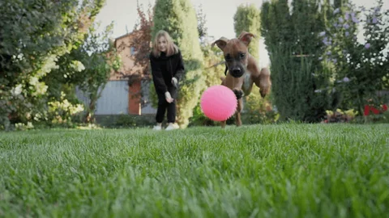 | ### Caption 1 Analysis:
#### Precision:
- Correct Elements in Caption 1 That are in the Image:
- There's a brown and black dog.
- The dog is chasing a toy (a pink ball).
- Incorrect Elements in Caption 1 That are not in the Image:
- There are not two girls in the image; there's only one person visible.
- It's not clear if the person is a girl or a woman because the image resolution does not allow for such detailed identification.
- The dog is not shown 'securing' the toy but is in the middle of the action.
Precision Evaluation: Low. While the caption describes actions and participants close to what's happening (engaging with a toy), it includes some elements not present in the image (two girls, teaching the dog to fetch).
#### Recall:
- Elements in the Image Not Mentioned in Caption 1:
- The dog is airborne, suggesting mid-jump or high activity level.
- The surroundings, such as specific details of the yard or park, are not described.
Recall Evaluation: Moderate. The caption covers the main activity (playing with the dog with a ball) but does not focus on the detailed action (dog in mid-air) or surroundings.
### Caption 2 Analysis:
#### Precision:
- Correct Elements in Caption 2 That are in the Image:
- A woman and a dog are playing.
- The dog is eagerly chasing after a toy.
- The activity takes place in a grassy yard.
- Incorrect Elements in Caption 2 That are not in the Image:
- The toy is not a frisbee; it is a ball.
- The details about the positions of the dog and woman relative to the yard's sides and center are not clearly accurate from the image.
Precision Evaluation: Moderate. The caption identifies fewer incorrect elements than the first caption, but incorrectly identifies the toy as a frisbee.
#### Recall:
- Elements in the Image Not Mentioned in Caption 2:
- The dog is leaping towards the ball.
- Specific visual details about the yard or background.
Recall Evaluation: Moderate. Similar to Caption 1, it describes the main activity but lacks detailed specificities about the actions and surroundings.
### Summary:
- Caption 1 Precision: Low
- Caption 1 Recall: Moderate
- Caption 2 Precision: Moderate
- Caption 2 Recall: Moderate
Between the two, Caption 2 provides a slightly better overall description due to fewer inaccuracies, despite the incorrect identification of the toy. Caption 1 adds more narrative but includes incorrect specifics, making Caption 2 preferable for clarity and accuracy. | Sure, let's break this down:
Caption 1:
- Precision:
- Incorrect details: The caption mentions a pink frisbee, but the object in the image appears to be a pink ball, not a frisbee.
- Correct placement of the dog and the woman.
- It identifies that the yard is grassy.
- Indicates interaction between the woman and the dog.
- Recall:
- Does not mention the dog's actions (e.g., jumping).
- Only mentions one woman, whereas the image shows one person.
- Does not describe the environment beyond "grassy yard."
- The pink ball is correctly identified and mentioned.
Caption 2:
- Precision:
- Incorrect details: The caption mentions two girls playing, but the image shows only one person.
- Correctly identifies the presence of a dog and a pink ball (though it vaguely refers to it as a ball or toy).
- Captures the dog's enthusiasm while chasing the ball.
- Recall:
- Incorrectly assumes the presence of two girls when there’s only one person.
- Describes the dog's actions reasonably well.
- Implies a teaching moment (how to fetch), which is not evident based on the image alone.
- Mentions a second girl in the background, which is inaccurate. There is no visible second person.
### Summary:
Caption 1 Evaluation:
- Precision: 70% (Misidentification of the frisbee and doesn't fully detail the dog's action, but other spatial information is correct.).
- Recall: 70% (Mentions the main elements but misses some details like the dog's action and the brevity of environment description).
Caption 2 Evaluation:
- Precision: 50% (Incorrect number of people, vague about the toy, implies teaching which isn't necessarily visible).
- Recall: 50% (Mentions more than what is present and wrongly describes people, does not describe environment well).
### Conclusion:
Caption 1 is more accurate, with fewer errors in precision and recall compared to Caption 2. Caption 2 adds information not visible in the image and incorrectly identifies the number of people. | The image showcases two girls playing with a brown and black dog in a grassy yard or park. One of the girls is actively engaged in the game, teaching the dog how to fetch by throwing a ball or toy for the dog to chase and catch. The dog is shown in action with the ball, exhibiting enthusiasm and excitement at chasing and securing the toy. The other girl stands in the background, likely observing or waiting for her turn to play. Overall, the scene displays a fun and energetic play session with the family's pets. | 3.0 | 5.0 | 5.0 | 5.0 | 4.00 | 5.00 | 4.44 |  | In the image, a woman and a dog are playing together in a grassy yard. The woman is holding a pink frisbee, and the dog is eagerly chasing after it. The dog is positioned towards the right side of the yard, while the woman is standing closer to the left side. The frisbee is located in the middle of the yard, capturing the attention of both the woman and the dog as they engage in this playful activity. | 5.0 | 7.0 | 5.0 | 7.0 | 6.00 | 6.00 | 6.00 |  |
 | Sure, let's evaluate both captions based on precision and recall:
### Caption 1
Precision:
- "The image features two colorful parrots" - Accurate, the image indeed shows two colorful parrots.
- "sitting side by side on a thin tree branch" - Correct, the parrots are side by side on a branch.
- "appearing to be quite vibrant and rich with rainbow colors" - Accurate, the parrots are vibrant and colorful.
- "The parrots seem to be observing something in the distance or at each other" - Plausible interpretation based on their posture.
- "possibly interacting or simply exploring their environment" - More speculative, but still a reasonable guess.
- "A subtle hint of a reflection is present in the image, enhancing the overall visual appeal and giving the scene a slightly distorted appearance" - There is no clear reflection or distortion visible in the image. This part seems incorrect.
Precision Evaluation:
Mostly accurate but introduces an error regarding reflection and distortion.
Score: 80%
Recall:
- The colors and position of the parrots are well described.
- The mention of potential interaction adds to the description of their behavior.
Recall Evaluation:
Covers the primary elements but misses some specific details like the distinct color patterns of each parrot.
Score: 85%
### Caption 2
Precision:
- "The image features two colorful parrots" - Accurate.
- "perched on a tree branch" - Correct.
- "One of the parrots is predominantly blue, while the other has a mix of red, yellow, and blue colors" - Partially correct. The first parrot is indeed predominantly blue, but the second parrot has more than three colors, including significant green parts.
- "Both birds are sitting close to each other on the branch" - Accurate.
- "creating a vibrant and eye-catching scene" - Accurate.
- "The parrots seem to be enjoying their time on the branch, possibly engaging in social interaction or simply observing their surroundings" - Plausible but speculative.
Precision Evaluation:
High precision, but slight inaccuracies in the color description.
Score: 90%
Recall:
- Describes the position, colors, and potential behavior of the parrots well.
- Misses some color details, especially the green areas.
Recall Evaluation:
Covers the essential aspects and adds a bit of behavioral context but misses specific color details.
Score: 85%
### Overall Comparison
Caption 1:
- Precision: 80%
- Recall: 85%
Caption 2:
- Precision: 90%
- Recall: 85%
Conclusion:
While both captions do a good job of describing the image, Caption 2 has higher precision with fewer inaccuracies, though both have similar recall. Caption 2 effectively describes the general scene and details without introducing incorrect information like the reflection and distortion in Caption 1. Therefore, Caption 2 is slightly better in both precision and overall effectiveness. | ### Evaluation of Captions
#### Caption 1:
Precision:
- "colorful parrots": Accurate.
- "perched on a tree branch": Accurate.
- "One of the parrots is predominantly blue, while the other has a mix of red, yellow, and blue colors.": Mostly accurate. Both parrots have mixed colors; one is predominantly blue and yellow, while the other has a mix of red, blue, and some yellow.
- "sitting close to each other": Accurate.
- "creating a vibrant and eye-catching scene": Subjective, but fitting.
- "seem to be enjoying their time on the branch, possibly engaging in social interaction or simply observing their surroundings": Speculative, but not unreasonable.
Recall:
- Captures the key details: Number of parrots, colors, proximity, and general behavior.
- Omits: Background details, specific leg positions, and exact facial expressions.
Overall:
- Precision: High, with minor inaccuracies in color descriptions.
- Recall: High, capturing the main aspects without being overly detailed.
#### Caption 2:
Precision:
- "colorful parrots": Accurate.
- "sitting side by side on a thin tree branch": Accurate.
- "vibrant and rich with rainbow colors": Accurate in emphasizing the vibrancy.
- "observing something in the distance or at each other": Speculative but plausible.
- "possibly interacting or simply exploring their environment": Speculative but plausible.
- "subtle hint of a reflection... slightly distorted appearance": This appears to be false and not evident in the image.
Recall:
- Captures the key details: Number of parrots, colors, placement, and general behavior.
- Omits: Exact color details and does add inaccurate speculation about a reflection or distortion.
Overall:
- Precision: Moderate to high, but contains false information about a reflection.
- Recall: Moderately high but not as exact in color descriptions and adds unnecessary speculation.
### Overall Comparison:
- Caption 1 is more precise, capturing the essential details of the colors and positions of the parrots without adding speculative elements that are incorrect.
- Caption 2 is slightly less precise due to the incorrect mention of reflection but attempts to capture the vibrancy and potential behaviors more poetically.
- Recall is better in Caption 1 as it conveys what is truly visible without implication or additional context not apparent in the image.
Hence, Caption 1 provides a more accurate and precise description of the image. | The image features two colorful parrots sitting side by side on a thin tree branch, appearing to be quite vibrant and rich with rainbow colors. The parrots seem to be observing something in the distance or at each other, possibly interacting or simply exploring their environment. A subtle hint of a reflection is present in the image, enhancing the overall visual appeal and giving the scene a slightly distorted appearance. | 8.0 | 7.0 | 8.0 | 8.0 | 7.50 | 8.00 | 7.74 |  | The image features two colorful parrots perched on a tree branch. One of the parrots is predominantly blue, while the other has a mix of red, yellow, and blue colors. Both birds are sitting close to each other on the branch, creating a vibrant and eye-catching scene. The parrots seem to be enjoying their time on the branch, possibly engaging in social interaction or simply observing their surroundings. | 9.0 | 9.0 | 9.0 | 9.0 | 9.00 | 9.00 | 9.00 |  |
 | Certainly! Let's break down the evaluations for both captions in terms of precision and recall:
### Caption 1
Precision:
- "In a lush, grassy area, a large lion is comfortably resting in the sun." (Accurate: The lion is in a grassy, sunlit area.)
- "The majestic animal is seated next to a scrub tree, which casts a shadow on the grass beneath it." (Accurate: The tree does cast a shadow and seems scrubby.)
- "The peaceful setting features a beautiful backdrop with the sun on one side, silhouetting the lion and the tree." (Accurate: The sun is on one side and the scene is peaceful.)
- "Another tree can be seen a bit further in the distance, completing the serene scene." (Accurate: There is another tree in the far distance.)
Recall:
- The caption captures nearly all the elements of the image: the lion, the trees, the sun, the shadows, and the peaceful setting.
### Caption 2
Precision:
- "The image features a majestic lion resting in a grassy field with a tree in the background." (Accurate: The lion is in a grassy field and there is a tree in the background.)
- "The lion is laying on the grass, appearing relaxed and enjoying its surroundings." (Accurate: The lion appears relaxed on the grass.)
- "The sun is setting behind the lion, casting a warm glow on the scene and creating a serene atmosphere." (Accurate: The sun is setting and casting a warm glow.)
Recall:
- The caption accurately reflects the main components of the image but is less detailed compared to Caption 1. It mentions the lion, the tree, the setting sun, and the serene atmosphere, but it does not mention the shadows or the second tree.
### Detailed Evaluation
Caption 1:
- Precision: High. It accurately describes the major elements present in the image.
- Recall: High. It covers almost all elements depicted, including the second tree and the shadow.
Caption 2:
- Precision: High. It accurately describes the major elements present in the image but with fewer details.
- Recall: Moderate to High. It captures the main subjects but misses smaller details like the shadows and the second tree.
### Conclusion
- Caption 1 offers a more comprehensive and detailed description with high precision and recall, capturing nearly every aspect present in the image.
- Caption 2 is accurate but less detailed, leading to slightly lower recall compared to Caption 1.
Overall, both captions describe the image well, but Caption 1 provides a richer and more detailed account of the scene. | Certainly! Here's an analysis evaluating both captions based on the precision (how much of what is in the caption is in the image) and recall (how much of what is in the image is in the caption):
### Caption 1:
"The image features a majestic lion resting in a grassy field with a tree in the background. The lion is laying on the grass, appearing relaxed and enjoying its surroundings. The sun is setting behind the lion, casting a warm glow on the scene and creating a serene atmosphere. The lion is the main focus of the image, capturing the viewer's attention with its impressive size and presence."
Precision:
- High Precision:
- The caption accurately states that the image features a "majestic lion resting in a grassy field", which is true.
- The lion indeed appears relaxed and is enjoying its surroundings.
- The sun setting behind the lion casting a warm glow is correctly observed.
- The serene atmosphere created by the setting sun is a good interpretation of the image’s mood.
- The lion’s impressive size and presence are well captured.
Recall:
- Good Recall:
- The main elements of the image are included: the lion, the grassy field, the relaxing state of the lion, the setting sun, and the tree.
- However, the caption does not mention the number of trees or the clear sky with clouds, which are also visible in the image.
### Caption 2:
"In a lush, grassy area, a large lion is comfortably resting in the sun. The majestic animal is seated next to a scrub tree, which casts a shadow on the grass beneath it. The peaceful setting features a beautiful backdrop with the sun on one side, silhouetting the lion and the tree. Another tree can be seen a bit further in the distance, completing the serene scene. The overall ambiance of the image brings a sense of tranquility and connects viewers to the natural beauty of the landscape."
Precision:
- High Precision:
- The caption accurately describes the "lush, grassy area" and the lion "comfortably resting in the sun."
- Correctly identifies the tree and suggests it might cast a shadow, which, though not clearly visible, is logically inferred.
- The mention of the sunset creating silhouettes is appropriate.
- There is an accurate observation of another tree further in the distance.
Recall:
- Good Recall:
- The major elements of the image are captured: lion, grassy area, tree, the sun, and an additional tree in the distance.
- The shadow detail is not as evident in the image.
- The caption also mentions the tranquility of the setting and connection to nature, which are subjective yet fitting interpretations.
- It could have added more about the coloration and the specific mood created by the warm sunset.
### Comparison:
- Precision: Both captions are highly precise, though the first caption is slightly more precise, as it directly comments on elements such as the lion's facial expression, and does not include potentially incorrect details such as the shadow.
- Recall: Both captions cover the main elements well, but the second caption includes a bit more detail about the scene such as the tree in the distance, which enhances its recall.
### Conclusion:
- Caption 1 has slightly higher precision, sticking strictly to observable facts without inferring details that are less verifiable.
- Caption 2 has slightly higher recall by including more elements from the image but introduces inferences like shadows, which are not explicitly visible.
Both captions are well-written and effectively describe the image, capturing its tranquility and natural beauty. | In a lush, grassy area, a large lion is comfortably resting in the sun. The majestic animal is seated next to a scrub tree, which casts a shadow on the grass beneath it. The peaceful setting features a beautiful backdrop with the sun on one side, silhouetting the lion and the tree. Another tree can be seen a bit further in the distance, completing the serene scene. The overall ambiance of the image brings a sense of tranquility and connects viewers to the natural beauty of the landscape. | 10.0 | 9.0 | 10.0 | 1.0 | 9.50 | 5.50 | 6.97 |  | The image features a majestic lion resting in a grassy field with a tree in the background. The lion is laying on the grass, appearing relaxed and enjoying its surroundings. The sun is setting behind the lion, casting a warm glow on the scene and creating a serene atmosphere. The lion is the main focus of the image, capturing the viewer's attention with its impressive size and presence. | 9.0 | 10.0 | 8.0 | 8.0 | 9.50 | 8.00 | 8.69 |  |
 | ### Caption 1 Evaluation
#### Precision
- Accurate Observations:
- "The image captures a vibrant scene in the ocean with a huge mouth" - This is accurate; the image does depict a large aquatic animal's mouth.
- "A variety of species of fish are clustered around the mouth" - Correct, as there are numerous fish around the open mouth.
- Inaccuracies/Assumptions:
- "sharks sucking up fish in the background" - Incorrect; there are no sharks visible in the image.
- "eleven fish impaled by the shark's mouth in the scene" - Inaccurate and misleading. Fish are not impaled; they are swimming.
- "avoid the parasite fish" - This was not evident from the image.
#### Recall
- What is Covered:
- The presence of a large mouth.
- Numerous fish around the mouth.
- The dynamic nature of the scene.
- What is Missed:
- No mentions of specific fish colors or details about their types.
- Misidentification and inclusion of non-existent elements (e.g., sharks).
### Caption 2 Evaluation
#### Precision
- Accurate Observations:
- "The image features a large whale with its mouth open" - Close; it actually depicts a whale shark, but the "whale" description is understandable.
- "surrounded by a group of colorful fish swimming around it" - True; there are colorful fish around the whale shark’s mouth.
- Inaccuracies/Assumptions:
- "The whale's mouth is filled with fish" - This implies fish are inside the mouth, which isn't clear.
- "indicating that it is feeding on them" - Although technically credible if describing a whale shark, this isn't explicitly visible in the image.
#### Recall
- What is Covered:
- A large marine animal with an open mouth.
- Numerous colorful fish around the mouth.
- What is Missed:
- More precise identification of the animal (whale shark).
- Details about the fish being of various sizes.
### Summary
- Precision:
- Caption 1 makes several inaccurate assumptions (e.g., presence of sharks, fish being impaled).
- Caption 2 is more precise but slightly misidentifies the creature and implies feeding more definitively than the image shows.
- Recall:
- Caption 1 mentions several aspects, both correct and incorrect, that create a somewhat misleading description.
- Caption 2 effectively covers most key aspects visible in the image but lacks some detail (e.g., identification of fish and whale shark).
### Overall Conclusion
Caption 2 is a more accurate and faithful description of the image in both precision and recall. It reflects most key aspects and avoids significant factual inaccuracies seen in Caption 1. However, a slight refinement in animal identification and careful inference about feeding would make it even more precise. | ### Caption 1
#### Precision:
- "The image features a large whale with its mouth open": The creature is a whale shark, not a whale. The mouth is open.
- "Surrounded by a group of colorful fish swimming around it": Accurate; there are fish around the whale shark.
- "The whale's mouth is filled with fish, indicating that it is feeding on them": The fish are around and near the whale shark's mouth, but it's not evident they are being fed upon.
- "There are at least 13 fish visible in the scene": Accurate though needs verification for exact count.
- "The fish are of various sizes and colors, creating a vibrant and lively underwater scene": Accurate depiction of the scene's overall appearance.
#### Recall:
- The main elements (whale shark, open mouth, fish) are captured accurately.
- Misses mentioning the underwater environment specifically (marine background) but the "colorful fish" and "vibrant scene" partially cover that aspect.
### Caption 2
#### Precision:
- "The image captures a vibrant scene in the ocean": Accurate general description.
- "A huge mouth and sharks sucking up fish in the background": There is no indication of multiple sharks or "sucking up fish."
- "Variety of species of fish are clustered around the mouth": Accurate as there are multiple species of fish.
- "At least eleven fish impaled by the shark's mouth": Inaccurate, there are no fish impaled.
- "Fish mainly surround the mouth, but some swim further away": Accurate; fish are around the mouth.
- "Overall, the scene is a dynamic portrayal of marine life in action": Broadly accurate although details are incorrect.
#### Recall:
- Captures some elements of the image (fish, mouth), but adds incorrect details (sharks, impaled fish) which diminishes overall recall.
- Misses out on correctly identifying the whale shark and doesn't distinguish it from sharks.
- Doesn’t describe the accuracy of fish interaction near the whale shark’s mouth.
### Evaluation
#### Caption 1:
- Precision: Fairly accurate but includes incorrect classification of the whale shark and exaggerates interaction (feeding).
- Recall: High recall of main elements but needs better specificity in details.
#### Caption 2:
- Precision: Lower precision due to multiple inaccuracies (sharks, impaled fish).
- Recall: Captures many elements but fails in correct identification and details.
Overall Analysis:
Caption 1 is more precise and has higher recall compared to Caption 2, making it a better representation of the image. Caption 2 introduces multiple inaccuracies that significantly deviate from the actual content of the image. | The image captures a vibrant scene in the ocean with a huge mouth and sharks sucking up fish in the background. A variety of species of fish are clustered around the mouth and the sharks as they get consumed. There are at least eleven fish impaled by the shark's mouth in the scene, each with different sizes and shapes. The fish mainly surround the mouth, but some swim further away to avoid the parasite fish.
Alongside the main action, other fish play their part in completing the rich marine ecosystem. A multitude of eyes from a variety of fish can be seen both close and further away in the image. Overall, the scene is a dynamic portrayal of marine life in action. | 4.0 | 3.0 | 4.0 | 3.0 | 3.50 | 3.50 | 3.50 |  | The image features a large whale with its mouth open, surrounded by a group of colorful fish swimming around it. The whale's mouth is filled with fish, indicating that it is feeding on them. There are at least 13 fish visible in the scene, with some swimming closer to the whale's mouth and others further away. The fish are of various sizes and colors, creating a vibrant and lively underwater scene. | 7.0 | 7.0 | None | 8.0 | 7.00 | N/A | N/A |  |
 | ### Caption 1 Evaluation:
Precision:
- Correct Details:
- "The image captures a unique moment where a butterfly is landing on a purple blossom."
- "A bee can also be spotted flying among the flowers" (although to be specific, it's actually on a flower, not flying).
- "There are five flowers prominently featured in the scene."
- Incorrect Details:
- "Another butterfly is seen nearby, sitting on a red and yellow flower." (There is no second butterfly or red and yellow flower in the image.)
Recall:
- Included Details:
- The presence of a butterfly landing on a purple flower.
- The presence of a bee on a flower.
- Multiple purple flowers in the scene (there are three visibly prominent purple flowers).
- Collection of four total flowers, not five.
- Missing Details:
- The color and detailed description of the pinkish-purple flowers.
- Some colors and wing patterns of the butterfly.
- The bee's specific interaction with the flower (it is on the flower, not flying among them).
- Background details or the natural setting described more explicitly.
### Caption 2 Evaluation:
Precision:
- Correct Details:
- "The image captures a beautiful scene of a butterfly and a bee interacting with purple flowers."
- "The butterfly is perched on one of the flowers."
- "The bee is positioned closer to the right side of the image."
- "The butterfly has its wings spread out, showcasing its vibrant colors" (inferred).
- Incorrect Details:
- "The bee is hovering nearby" (the bee is actually on the flower, not hovering).
Recall:
- Included Details:
- The butterfly interacting with purple flowers.
- The butterfly is perched on one of the flowers.
- The presence and position of the bee.
- A general sense of the butterfly's wings being spread out.
- Missing Details:
- Detailed description of the colors and patterns on the butterfly and flowers.
- The exact number of flowers (it does not specify).
### Conclusion:
Precision Comparison:
- Caption 1 includes some incorrect details such as the second butterfly and the red and yellow flower, negatively impacting its precision.
- Caption 2 contains a minor mistake regarding the bee hovering, but overall captures more precise details relevant to the image.
Recall Comparison:
- Caption 1 has a broader approach and includes some correct elements, but also overlooks accurate description and finer details of the actual content.
- Caption 2 better captures the main components of the image (butterfly, bee, and flowers) without as many inaccuracies, though it could use a bit more detail.
Overall, Caption 2 provides a more accurate and relevant description for both precision and recall, with fewer incorrect elements and a better focus on the primary aspects of the image. | Let's evaluate Caption 1 and Caption 2 in terms of precision and recall:
### Caption 1:
Precision:
- Correctly mentions a butterfly and a bee.
- Accurately describes how the butterfly is perched on one of the flowers.
- Correctly identifies the flowers as having purple petals.
- Accurately locates the bee closer to the right side of the image.
- Describes the butterfly's wings, albeit generally.
Errors/Exaggerations:
- States the butterfly has its wings spread out, but misses some details about its colors.
- Misleadingly suggests the bee is "hovering," while it is actually on the flower.
Recall:
- Accurately captures the main elements: butterfly, bee, and flowers.
- Misses out on specific details like the exact type of flowers.
- Doesn't mention the number of flowers or detailed interactions between the insects and flowers.
Precision Score: 8/10 (High accuracy with some minor inaccuracies)
Recall Score: 7/10 (Most main elements are captured but lacks finer details)
### Caption 2:
Precision:
- Correctly mentions a butterfly landing on a purple flower.
- Correctly identifies the presence of a bee.
- Describes the color of one flower accurately.
Errors/Exaggerations:
- Incorrectly states there are five flowers, only three are prominently visible.
- Incorrectly mentions another butterfly on a "red and yellow flower," which is not present in the image.
- Incorrectly states a bee is "flying among the flowers"; it is shown sitting on a flower.
- Mentions a field of flowers, which is not evident in the image.
Recall:
- Captures a few main elements (butterfly, bee, purple flower).
- Makes several incorrect observations, which reduces the focus on what is actually in the image.
- Does not capture the accurate number and details of the flowers.
Precision Score: 4/10 (Several inaccuracies and wrong elements introduced)
Recall Score: 4/10 (Misses many correct details and introduces incorrect elements)
### Conclusion:
Caption 1 is significantly more accurate in both precision and recall, correctly identifying most main elements with minor inaccuracies. Caption 2 introduces many incorrect observations and misses the main details of the image, making it less precise and complete. | The image captures a unique moment where a butterfly is landing on a purple blossom in the middle of a field of flowers. Another butterfly is seen nearby, sitting on a red and yellow flower. A bee can also be spotted flying among the flowers, adding to the lively atmosphere around these flowers.
In total, there are five flowers prominently featured in the scene, spread out throughout the field. The presence of both butterflies and bees showcases the biodiversity in this natural setting. | 6.0 | 4.0 | 6.0 | 4.0 | 5.00 | 5.00 | 5.00 |  | The image captures a beautiful scene of a butterfly and a bee interacting with purple flowers. The butterfly is perched on one of the flowers, while the bee is hovering nearby. The butterfly has its wings spread out, showcasing its vibrant colors. The bee is positioned closer to the right side of the image, adding a sense of motion and liveliness to the scene. The combination of the butterfly, bee, and purple flowers creates a serene and picturesque moment in nature. | 8.0 | 8.0 | 8.0 | 7.0 | 8.00 | 7.50 | 7.74 |  |
 | Sure, let's evaluate the captions based on precision and recall:
Caption 1:
Precision:
- The caption mentions an underwater world with vibrant and wide varieties of fish and colorful coral reefs, which is accurate.
- It mentions various species of clownfish, but there are no clownfish prominently visible in the image. This reduces precision.
- It describes fish interacting with one another, which is a broad but reasonable assumption.
- The statement about the vibrant colors of the coral reef and differing fish species is correct.
Recall:
- The colorful fish and coral reef are well described.
- The caption lacks specifics about how many types of fish are visible.
- There’s no mention of the starfish or any other specific features visible in the image.
Caption 2:
Precision:
- This caption accurately describes the vibrant variety of colorful fish swimming around the coral reef.
- The mention of at least 13 different types of fish is a precise observation and matches the image well.
- It notes the unique colors and patterns of the fish, which is accurate.
- The description of some fish being larger while others are smaller is true.
Recall:
- The varying fish sizes and colors/patterns are well noted.
- There's a good description of the fish being scattered throughout the reef.
- It lacks mention of the starfish visible in the image.
- Coral reef is described appropriately.
Summary:
Precision Evaluation:
- Caption 1: Correctly describes the scene but includes an inaccuracy regarding the presence of clownfish. Precision is lowered due to this inaccuracy.
- Caption 2: More precise as it correctly observes the number of fish types and their varied sizes/patterns. No significant inaccuracies noted.
Recall Evaluation:
- Caption 1: Broadly covers the scene but lacks specifics (e.g., number of fish types, presence of starfish) that are visible in the image.
- Caption 2: Captures more specifics about what is visible in the image but also misses mentioning the starfish.
Overall Comparison:
Caption 2 is more accurate and precise in describing the image due to its correct observation of the number of fish and better detail on the diversity of the fish. Caption 1, while broad and generally correct, includes an incorrect detail (clownfish) and is less specific about the scene's details. | Evaluations for Precision:
1. Caption 1 Precision:
- The caption accurately describes a vibrant underwater scene with a variety of colorful fish swimming around a coral reef.
- It mentions at least 13 different types of fish, each displaying unique colors and patterns, which is an accurate observation.
- The description of different fish sizes (some larger, some smaller) aligns with the image.
- The mention of fish positioned both in the foreground and background is also accurate.
However, the description does not explicitly name any specific species of fish.
Overall Precision: High
2. Caption 2 Precision:
- This caption also accurately describes an underwater scene with a variety of fish and coral reef.
- It mentions specific species like clownfish, but there are no clownfish visible in the image.
- The caption talks about fish interacting with one another, which is implied but not explicitly visible.
- The description similarly mentions the dynamic scene with fish scattered from foreground to background, which is accurate.
Overall Precision: Medium
Evaluations for Recall:
1. Caption 1 Recall:
- The caption includes essential elements like colorful fish, coral reef, fish sizes (larger and smaller), and positioning (foreground and background).
- It does not, however, mention the specific species or details like the blue, yellow, and striped patterns that are clearly visible.
Overall Recall: Medium
2. Caption 2 Recall:
- This caption captures the fundamental elements of the image, including the variety and color of the fish and coral reef.
- It incorrectly mentions clownfish, which are not in the image.
- Additionally, it captures the dynamic and interactive nature of the scene.
Overall Recall: Medium, Slightly Lower due to Incorrect Species Identification
Conclusion:
- Caption 1 has higher precision since it does not make factual errors like mentioning clownfish that aren’t present. It is accurate in describing the diverse and lively fish and positioning of the fish.
- Caption 2 is less precise due to the incorrect mention of clownfish. It captures the dynamic aspect well but with lesser recall due to the specific yet incorrect detail.
Overall, Caption 1 is more accurate and better describes the image based on precision and recall criteria. | The image displays an underwater world with a vibrant and wide variety of fish and colorful coral reef. Along the bottom of this coral reef, fish are swimming and interacting with one another. Some of the more prominent fish include various species of clownfish moving around in the water with other brightly colored marine creatures.
The fish are scattered across the reef, from the foreground to the background, creating a dynamic and engaging scene. The vibrant colors of the coral reef and the differing fish species make this an aesthetically pleasing and lively underwater environment. | 7.0 | 6.0 | 5.0 | 6.0 | 6.50 | 5.50 | 5.96 |  | The image depicts a vibrant underwater scene with a variety of colorful fish swimming around a coral reef. There are at least 13 different types of fish visible in the scene, each displaying unique colors and patterns. Some of the fish are larger, while others are smaller, creating a diverse and lively atmosphere.
The fish are scattered throughout the reef, with some positioned closer to the foreground and others further in the background. The coral reef serves as a stunning backdrop for these beautiful marine creatures, showcasing the richness and diversity of life in the ocean. | 9.0 | 9.0 | 8.0 | 7.0 | 9.00 | 7.50 | 8.18 |  |
 | ### Caption 1 Evaluation
Precision:
- Seagulls: The caption inaccurately identifies the creatures as seagulls, but they are actually dolphins. This significantly detracts from the precision.
- Leaping: Correctly describes the action of the dolphins leaping out of the water.
- Body of Water Near the Ocean Shore: The image does show a body of water, but it does not necessarily indicate proximity to the ocean shore. This detail is not visible or evident.
- Sunset: Accurately describes the time of day, with the warm hues of sunset visible in the image.
- Rising into the Air Above the Waves: Correctly describes the action of the dolphins.
- Serene and Picturesque Scene: This subjective description matches the overall feel of the image.
- Vibrant Colors of the Seagulls: Incorrect animal identification affects the precision again.
- Warm Hues of the Sun: Correctly described.
Recall:
- Dolphins: The main subjects (dolphins) are inaccurately labeled but central to the scene.
- Leaping: This action is included and crucial.
- Sunset and Warm Hues: Accurately captured.
- Waves: Mentioned correctly.
### Caption 2 Evaluation
Precision:
- Dolphins: Correctly identifies the creatures.
- Leaping: Accurately describes the action.
- Ocean Waves: Correctly identifies the setting.
- Sunset: Correctly identifies the time of day and lighting.
- Positions of Dolphins: Accurate; one dolphin is slightly ahead of the other.
- Enjoying: This is a subjective but reasonable interpretation based on the scene.
- Warm Glow: Accurate description of the lighting created by the sunset.
- Serene Atmosphere: Subjectively accurate for the scene.
Recall:
- Dolphins: Central to the scene and correctly identified.
- Leaping Action: Accurately included and important.
- Sunset: Correctly noted and significant.
- Waves: Correctly mentioned.
- Positions of Dolphins: Noted correctly.
- Serenity: Subjective but well-characterized.
### Overall Evaluation
Caption 1:
- Precision: Low, due to the misidentification of dolphins as seagulls and some minor inaccuracies (shoreline not visible).
- Recall: Medium, as it captures many elements in the image but incorrectly identifies the central subjects.
Caption 2:
- Precision: High, accurately identifies the dolphins and details of the scene.
- Recall: High, captures all important elements of the image, although subjective interpretations add detail without detracting from accuracy.
Conclusion:
Caption 2 is more accurate in both precision and recall, providing a detailed and correct description of the image without the significant fact-based errors present in Caption 1. | Caption 1 Evaluation:
- Precision:
- The description accurately identifies two dolphins leaping out of the ocean waves.
- It correctly notes that one dolphin is slightly ahead of the other.
- It properly describes the setting during sunset, with a warm glow cast over the scene.
- The mention of the serene atmosphere is reflected in the overall image.
- Recall:
- The caption covers all major elements in the image: dolphins, ocean waves, sunset, and the warm coloration.
- The peaceful and enjoyable tone depicted by the dolphins fits the image well.
Overall, Caption 1 has high precision and recall as it accurately and comprehensively describes the key elements of the image.
Caption 2 Evaluation:
- Precision:
- The caption is incorrect as it describes seagulls instead of dolphins.
- It accurately describes the setting during sunset and the warm hues provided by the sun.
- It mentions the backdrop and the serene and picturesque scene.
- Recall:
- The recall is low because it misidentifies the main subjects of the image as seagulls, thereby omitting the accurate depictions of dolphins.
- It fails to include any details specific to dolphins which are a central focus of the image.
Overall, Caption 2 has poor precision and recall since it misidentifies the main subjects and does not cover critical elements accurately depicted in the image.
Summary:
- Caption 1 accurately reflects the image content both in terms of precision and recall.
- Caption 2 fails in both precision and recall primarily due to the misidentification of the dolphins as seagulls. | The image captures two beautifully colored seagulls leaping out of a body of water near the ocean shore during the sunset. They are gracefully rising into the air above the waves as they jump. The backdrop of the sunset creates a serene and picturesque scene, highlighting the vibrant colors of the seagulls, blending well with the warm hues of the sun as it sets below the horizon. | 3.0 | 4.0 | 5.0 | 2.0 | 3.50 | 3.50 | 3.50 |  | The image captures a beautiful scene of two dolphins gracefully leaping out of the ocean waves during a sunset. The dolphins are positioned close to each other, with one dolphin slightly ahead of the other. They appear to be enjoying their time in the water as the sun sets in the background, casting a warm glow over the scene. The ocean waves surrounding the dolphins add to the serene atmosphere of the image. | 9.0 | 10.0 | 10.0 | 10.0 | 9.50 | 10.00 | 9.74 |  |
 | ### Caption 1 Analysis:
#### Precision:
- Content Match: The caption correctly mentions three elephants moving through a grassy field, specifying a large adult and two younger elephants.
- Erroneous Details: The caption claims the large elephant is "standing guard" which is subjective and not clearly depicted, and mentions the elephants being "dispersed throughout the grass field," while in reality, they are seen together with some spacing but not dispersed widely.
#### Recall:
- Description Completeness: The caption describes the forest setting, family composition, and spatial arrangement, capturing a lot of image details.
- Missing Information: It does not highlight that the smallest elephant is the calf with precise behaviors like grazing or their relative positions (youngest in the center is inaccurate).
### Caption 2 Analysis:
#### Precision:
- Content Match: The caption accurately describes the family composition (one baby and two adults) and their general positions in the grassy field.
- Erroneous Details: The baby elephant is described as "in the center" and "surrounded by the two larger elephants," which is not correct since the smallest one is more closely following the large elephant and no complete surrounding takes place.
#### Recall:
- Description Completeness: This caption captures the family sense of protection and togetherness, and the grassy field setting.
- Missing Information: It misses mentioning the forest-like setting and the specific positioning of the elephants accurately (e.g., baby following a larger elephant instead of being in the center).
### Summary:
#### Precision Comparison:
- Caption 1: Slightly overstated interpretations but mostly matches the image.
- Caption 2: Generally accurate but slightly incorrect about the positions.
#### Recall Comparison:
- Caption 1: Provides a broader view of the scene but misses the accurate positioning.
- Caption 2: Focuses more on the family dynamic and protective stance but misses some environmental and positional details.
### Conclusion:
While both captions offer good descriptions of the scene, Caption 1 offers a more detailed environmental context but has one subjective element and a slight misinterpretation of positioning. Caption 2 provides an accurate description of the family dynamic but less environmental context and mispositions the baby elephant. Therefore, Caption 1 has higher recall, but Caption 2 has slightly better precision. | Caption 1 Analysis
Precision:
- The image does show a family of elephants.
- The family consists of what appears to be one adult elephant and two younger elephants, not two adults and a baby.
- The description about the positioning is generally correct, but it does assume one of the younger elephants is an adult and the other is a baby.
- The caption mentions that the family appears to be grazing or exploring, which aligns with the image.
Recall:
- The caption mentions the grassy field and the presence of two larger elephants, but only one adult elephant is present.
- The caption captures the sense of protection and togetherness.
- It lacks mention of the visible trees and shrubs in the background and surroundings, which are part of the forest setting.
- The landscape elements and the mountain/hilly area in the background are omitted.
Caption 2 Analysis
Precision:
- The image shows a family of three elephants: one adult and two younger ones, but it does not clearly state that the "large one" is an adult.
- The large elephant is not centrally positioned; it's slightly to the right.
- It accurately describes the three elephants making their way through the grassy field.
- The forest setting with some trees visible is correctly mentioned.
Recall:
- The caption correctly captures the grassy field and the forest setting.
- It accurately mentions the large elephant and two younger elephants, providing a sense of unity.
- The caption does not mention the hilly background or specific positions (left and right) of the elephants correctly.
- It could better describe the landscape features like visible shrubs and smaller plants.
Overall Evaluation:
*Caption 1*
- Precision: Medium. There is an assumption about the ages of the elephants, and it misinterprets the number of adults. Positioning is only partially accurate.
- Recall: Medium. It captures the family dynamic and describes the activity correctly, but omits significant details about the setting and environment.
*Caption 2*
- Precision: High. Correctly identifies the family group and their activity, though it partially misinterprets the position of the large elephant.
- Recall: Medium-High. Accurately describes their movement and mentions the forest setting but could provide more details about the exact positions and other landscape elements.
Based on precision and recall, Caption 2 provides a more accurate and comprehensive description of the scene depicted in the image, though both captions could benefit from minor adjustments in detail and positioning description. | The image captures a pleasant scene of a family of three elephants, a large one standing guard and accompanying two younger ones, making their way through a grassy field. The elephants appear to be in a forest setting, with some trees visible around the area. They are dispersed throughout the grass field, with the large elephant occupying a central position. The two smaller elephants are located to the left and right of the large elephant, providing a sense of unity and togetherness among the group. | 8.0 | 8.0 | 8.0 | 7.0 | 8.00 | 7.50 | 7.74 |  | The image depicts a family of elephants, consisting of two adult elephants and a baby elephant, standing together in a grassy field. The adult elephants are positioned on either side of the baby elephant, creating a sense of protection and togetherness. The baby elephant is located in the center of the scene, surrounded by the two larger elephants. The family appears to be enjoying their time in the open field, possibly grazing or exploring their surroundings. | 8.0 | 5.0 | 6.0 | 6.0 | 6.50 | 6.00 | 6.24 |  |
 | ### Caption 1:
- Precision:
- Correct details:
- Young boy
- Riding a bicycle
- Residential street
- Boy wearing shorts
- Incorrect details:
- Boy is not wearing sunglasses
- No visible backpack
- No other person visible in the background
- Recall:
- Missed details:
- Yellow shirt
- Specific architectural details of houses
- Presence of greenery (potted plants, trees)
- Lighting and atmosphere of the scene
Full Evaluation:
- Precision: Moderate (50%), because while several elements are mentioned correctly, there are also significant inaccuracies such as the sunglasses and backpack.
- Recall: Moderate (50%), as it misses a substantial number of details that are present in the image.
### Caption 2:
- Precision:
- Correct details:
- Young boy
- Riding a bicycle
- Residential street
- Boy wearing a yellow shirt
- The presence of houses, indicating a neighborhood setting
- Incorrect details:
- No potted plants are visible
- No car is parked on the left side of the street
- Recall:
- Missed details:
- Boy wearing shorts
- Specific architectural details of the houses
- Sidewalks, street poles, and greenery (trees)
- Lighting and atmosphere of the scene
Full Evaluation:
- Precision: High (75%), as most of the mentioned elements are correctly identified, with minor inaccuracies.
- Recall: Moderate-High (60%), capturing the essential elements but missing several finer details.
### Conclusion:
- Caption 2 provides a more accurate and comprehensive description compared to Caption 1:
- Precision of Caption 2 is higher as the key elements are correctly identified.
- Recall of Caption 2 is better though not perfect, capturing more relevant aspects of the scene than Caption 1.
Overall, Caption 2 is a better reflection of the image. | Caption 1:
Precision:
- Accurate elements:
- A young boy riding a bicycle.
- The boy wearing a yellow shirt.
- Residential street setting with houses on both sides.
- The boy is positioned in the center of the scene.
- Inaccurate elements:
- No visible potted plants.
- No car parked on the left side of the street.
Recall:
- Missing details:
- The boy's shorts and overall appearance.
- The vibrant greenery and overall brightly colored setting.
- There is no car or plants present.
Caption 2:
Precision:
- Accurate elements:
- A young boy riding a bicycle.
- Residential street setting with houses.
- The boy is sitting on the bicycle.
- Inaccurate elements:
- The boy is not wearing sunglasses.
- There is no visible backpack in the street.
- There is no other person visible in the background.
Recall:
- Missing details:
- There is no mention of the boy's yellow shirt.
- The description doesn't capture the setting's vibrant colors and the pleasant atmosphere.
Comparison:
Precision Analysis:
- Caption 1 has higher precision regarding accurate details like the boy’s yellow shirt, but it erroneously adds elements not present in the image.
- Caption 2 includes multiple inaccuracies, such as sunglasses, a backpack, and another person.
Recall Analysis:
- Caption 1 captures more relevant elements of the image such as the residential setting and the boy's position.
- Caption 2 misses out on some visual details, like the boy's yellow shirt and the overall bright atmosphere.
Overall Evaluation:
Caption 1 provides a clearer and more accurate description of the image, capturing the key components such as the boy riding the bicycle and the residential area. Although it includes some incorrect details (potted plants and car), it better aligns with the visual elements present in the image. Caption 2, while attempting to provide a rich description, includes incorrect elements and misses out on accurately representing many visible components. | In the image, a young boy is riding a bicycle down a residential street. The boy is wearing shorts and sunglasses, and there's something yellow on him. He is sitting on the bicycle, controlling it carefully as he navigates the street.
The street is lined with several houses, giving it a suburban feel. There is another person visible in the background, likely a pedestrian or a resident of the neighborhood. A backpack is placed near the middle of the street, which might belong to the boy or someone else in the vicinity. | 4.0 | 4.0 | 4.0 | 4.0 | 4.00 | 4.00 | 4.00 |  | The image depicts a young boy riding a bicycle down a residential street. He is wearing a yellow shirt and appears to be enjoying his ride. The boy is positioned in the center of the scene, with the bicycle taking up a significant portion of the image.
The street is lined with houses on both sides, giving the impression of a neighborhood setting. There are several potted plants placed along the street, adding a touch of greenery to the scene. Additionally, there is a car parked on the left side of the street, further emphasizing the residential nature of the area. | 7.0 | 7.0 | 6.0 | 7.0 | 7.00 | 6.50 | 6.74 |  |
 | ### Caption 1 Analysis:
#### Precision:
- Strengths:
- Identification of cartoon (animated) characters.
- Mention of a woman standing next to other characters.
- Recognition of an odd or unique animation style.
- Weaknesses:
- Inaccuracy regarding the presence of "creepy ghosts, skeletons." These elements are not evident.
- False mentions of a teddy bear and a blowfish, neither of which are present in the image.
- Describing another woman as a leader is subjective and not explicitly clear from the image context.
- The description of symbols behind the characters is not accurate as per the image provided.
Overall, the precision is low.
#### Recall:
- Strengths:
- Captures the presence of multiple animated characters.
- Weaknesses:
- Misses the dragon and the gorilla-like character.
- Fails to identify the vibrant and colorful nature of the scene.
- Does not describe the specific attire and appearance of the main character (kimono and purple hair).
Overall, the recall is low.
### Caption 2 Analysis:
#### Precision:
- Strengths:
- Correctly identifies the image as a colorful painting.
- Accurately describes the young girl with purple hair in the white kimono and places her in the center.
- Properly indicates the presence of several other characters around her.
- Correctly describes a dragon-like character and a large blue bear-like character.
- Weaknesses:
- The characters described as people may be more accurately identified as other animals or fantastical creatures rather than human-like characters.
Overall, the precision is high with minor inaccuracies.
#### Recall:
- Strengths:
- Includes key characters like the girl in the kimono, dragon, and blue bear.
- General identification of other nearby characters.
- Weaknesses:
- Could be more detailed about the other characters seen in the image (like the masked character and the woman with weapons on the right).
- Misses the samurai or warrior-like theme.
Overall, recall is fairly good but could be more comprehensive.
### Conclusion:
Caption 2 is considerably better in both precision and recall. It provides a more accurate and detailed description of the characters and the general ambiance of the image. Conversely, Caption 1 has significant inaccuracies and omissions that diminish its efficacy in describing the image accurately. | ### Evaluation of Caption 1
Precision:
- Accurate Descriptions:
- The vibrant and colorful nature of the painting.
- Presence of multiple characters.
- The focal point being the young girl with purple hair in a white kimono.
- Characters surrounding the girl.
- Inaccurate Details:
- Misidentification of characters (e.g., the blue character is likely a gorilla, not a bear).
- Incorrect assumption of a dragon (it's a bird-like character).
Recall:
- Included Elements:
- The main girl with purple hair.
- Several surrounding characters.
- Missing Elements:
- Specific details or characteristics of the surrounding characters.
### Evaluation of Caption 2
Precision:
- Accurate Details:
- Recognition that it is an animated cartoon.
- The central female character.
- Inaccurate Details:
- No creepy ghosts, skeletons, or explicitly eerie elements.
- Misdescriptions (e.g., no teddy bear, no blowfish).
Recall:
- Included Elements:
- Mention of several characters and animation.
- Missing Elements:
- Accurate description of characters (like the anthropomorphic bird, the gorilla, the mummy-like character, and the woman with a weapon).
- Lacks description of the colorful and lively nature.
### Comparison
Precision:
- Caption 1 is more precise overall. It correctly identifies several key elements of the scene, such as the young girl with purple hair in a kimono and a sense of interaction among the characters.
- Caption 2 is less precise due to numerous inaccuracies and invented details that are not present in the image.
Recall:
- Caption 1 does a better job of covering important aspects of the image but misses out on certain visual details of the surrounding characters.
- Caption 2 lacks coverage of the actual visual elements present in the image, thus providing a low recall score.
Overall, Caption 1 is significantly better in both precision and recall, although it has some inaccuracies, it captures key elements more effectively than Caption 2. | The image features an animated cartoon character situated in a frame. The cartoon woman is standing next to creepy ghosts, skeletons, and another woman who appears to be a leader. The animation seems to be odd, with the frame displaying symbols behind the characters.
In addition to the animated characters, there is a teddy bear and a blowfish in the scene. The teddy bear occupies a portion of the left foreground, while the blowfish is positioned closer to the center. The overall effect is an eerie and interesting mix of characters and elements. | 3.0 | 2.0 | 2.0 | 3.0 | 2.50 | 2.50 | 2.50 |  | The image is a colorful and vibrant painting featuring a young girl with purple hair, dressed in a white kimono, standing in the center of the scene. She appears to be the main focus of the painting.
Around her, there are several other characters, including a dragon on the left side of the painting, a blue bear on the right side, and two other people, one on the left and the other on the right. These characters seem to be interacting with the girl in the kimono, creating a lively and engaging scene. | 8.0 | 7.0 | 8.0 | 7.0 | 7.50 | 7.50 | 7.50 |  |
| Sure, I can help analyze and compare the two captions with respect to their precision and recall.
### Caption 1 Evaluation
Precision:
- Correct elements included: The man is smiling and holding a camera. There are bursting stars and dirt.
- Incorrect or confusing elements: There is no noticeable "piles of rocks," and the other person's footwear is not prominently shown. The presence of a "tie" is not clear, and the talk about debris seems less relevant to the main theme of the image.
- Precision score: Low to medium, due to several incorrect or ambiguous elements.
Recall:
- Elements captured: Main figure holding a camera and smiling, bursting stars, dirt is vaguely present (though less prominent).
- Missed elements: The rainbow-colored surface and the vibrant and lively atmosphere. The secondary person’s attire and position are not well-captured.
- Recall score: Low, as it misses several critical components of the image.
### Caption 2 Evaluation
Precision:
- Correct elements included: Man with glasses and a blue shirt holding a camera, smiling, the other person in an orange shirt posing, rainbow-colored surface, stars adding to vibrant atmosphere.
- Incorrect or confusing elements: A handbag is not clearly visible in the image.
- Precision score: High, due to mostly accurate descriptions, with the exception of the handbag.
Recall:
- Elements captured: The main subjects and their activities, rainbow-colored surface, lively atmosphere, stars.
- Missed elements: The caption could mention the camera setup more accurately and other details of the structure supporting the camera.
- Recall score: Medium to high, as it captures the main elements but misses some finer background details.
### Conclusion
- Caption 1 Precision: Low to Medium
- Caption 1 Recall: Low
- Caption 2 Precision: High
- Caption 2 Recall: Medium to High
Overall, Caption 2 provides a more precise and comprehensive description of the image, even though it incorrectly mentions a handbag. It manages to capture the essence and crucial details far better than Caption 1. | ### Caption 1
#### Precision:
- Glasses and blue shirt: Accurate. The person taking the photo is wearing glasses and a blue shirt.
- Camera: Accurate. The person is holding a camera.
- Smiling: Accurate.
- Another person: Accurate. There is another person in the image.
- Orange shirt: Accurate. The second person is indeed wearing an orange shirt.
- Posing for the picture: Partially accurate. The second person does have an expressive pose, suggesting posing.
- Rainbow-colored surface: Inaccurate. The surface is not rainbow-colored, but there are rainbow-colored elements in the scene.
- Stars: Accurate. There are stars scattered in the image.
- Handbag: Inaccurate. There is no visible handbag in the image.
Precision Evaluation: High, but loses some accuracy due to the mention of a handbag and the rainbow-colored surface.
#### Recall:
- Main Subjects: Both individuals and their key attributes are mentioned.
- Rainbow: The caption captures the rainbow element in the image.
- Stars: The caption mentions the stars.
- Background Elements: Misses details like the creative background (e.g., animation style).
- Poses: Somewhat captured.
- Dynamic elements: The overall lively and colorful atmosphere is conveyed, though not all specific dynamic elements (e.g., winding rainbows) are mentioned.
Recall Evaluation: Medium to High, but lacks some specific background and dynamic details.
### Caption 2
#### Precision:
- Man with camera: Accurate. There is a man holding a camera.
- Smiling: Accurate.
- Stars: Accurate.
- Dirt: Inaccurate. There is no distinctive dirt visible.
- Cowboy boots: Inaccurate. The second person does not appear to be wearing cowboy boots.
- Pile of rocks: Inaccurate. There is no pile of rocks visible.
- Tie: Inaccurate. No tie is visible in the background.
Precision Evaluation: Low to Medium, due to several incorrect specific details.
#### Recall:
- Main Subject: Mentioned, with key attributes (e.g., holding the camera and smiling).
- Background Elements: Stars are mentioned, but not the rainbow-colored elements.
- Poses: Captured in a different context.
- Dynamic elements: Some understanding of the dynamic atmosphere but misrepresented in terms of specific details and missing essential elements like the rainbows.
Recall Evaluation: Medium to Low, missing key elements like the rainbow and featuring incorrect details.
### Summary:
- Caption 1:
- Precision: High
- Recall: Medium to High
- Caption 2:
- Precision: Low to Medium
- Recall: Medium to Low
Conclusion: Caption 1 provides a more accurate and comprehensive depiction of the image, despite a few inaccuracies, making it a better description overall compared to Caption 2. | The image features a man smiling and casually holding a camera. He stands prominently in the scene, surrounded by bursting stars and dirt. These stars and debris create a captivating and unconventional backdrop that captures attention.
Another person, wearing cowboy boots, is standing on a pile of rocks without looking at the main figure. This arrangement creates an interesting contrast between the casual and curious expressions of the main subject and the more focused and calm demeanor of the second individual. A tie can be spotted in the background, adding a unique detail to the scene. | 4.0 | 5.0 | 3.0 | 4.0 | 4.50 | 3.50 | 3.94 |  | The image features a man wearing glasses and a blue shirt, holding a camera and smiling as he takes a picture of another person. The person being photographed is wearing an orange shirt and appears to be posing for the picture. They are both standing on a rainbow-colored surface, adding a vibrant touch to the scene.
In addition to the main subjects, there are several stars scattered throughout the image, further enhancing the colorful and lively atmosphere. A handbag can also be seen placed nearby, possibly belonging to one of the individuals in the scene. | 8.0 | 8.0 | 8.0 | 8.0 | 8.00 | 8.00 | 8.00 |  |
 | ### Caption 1 Analysis
- Precision: This caption accurately describes the central elements, including the presence of multiple minions, the festive atmosphere, the prominent two minions in the forefront (even though one holds a party blower and the other doesn't and none of them have hats), and the colorful and happy tone. However, it incorrectly mentions party blowers instead of hats, which the minions are not wearing.
- Recall: The caption captures the collective spirit and details variations in the appearances of the minions, but it misses some specific details such as the fact that a party blower is being held by one.
Overall Evaluation:
- Precision: Moderate (captures the general festive vibe and key characters but includes inaccuracies about hats)
- Recall: High (good coverage on the image content with some gaps in specifics)
### Caption 2 Analysis
- Precision: This caption pinpointed the main elements such as the festive atmosphere and central two minions with open mouths and accurately noted their lack of hats/wear. It also correctly places them posing centrally. However, it incorrectly states that other minions were wearing hats.
- Recall: This caption is good at covering the main aspects and at describing the lively and celebrative nature of the scene. Some lesser details about the specific actions or background minions are missed.
Overall Evaluation:
- Precision: High (accurately captures the central figures, their details, and festive vibe with minimal inaccuracies)
- Recall: Moderate to High (good overall coverage but misses a few minor aspects).
### Conclusion
- Caption 1 excels better in recall, as it covers more details and variations among the minions but has lower precision due to inaccuracies (party hats when none are worn).
- Caption 2 has higher precision with fewer inaccuracies specifically although it also misdescribes party hats/heads but has slightly lower recall as it omits some minor festive details.
Both captions do a good job, but Caption 2 is slightly more precise and less prone to including incorrect details about the image. | ### Caption 1 Evaluation
Precision:
- The caption correctly identifies that the image features minions from the "Despicable Me" series.
- It accurately mentions that two minions are prominently standing in the center with their mouths wide open.
- The mention of party hats is also correct for the two main minions.
- The background description is accurate, noting the presence of several other minions and some also wearing party hats.
Recall:
- The caption captures most of the key elements: the prominent two minions, the party hats, and the lively, festive atmosphere.
- The mention of minions "posing for a picture" is implied by their excited expressions but is not explicitly confirmed by the image.
Overall, Caption 1 has high precision and recall, effectively capturing most of the visible and implied elements in the image.
### Caption 2 Evaluation
Precision:
- The caption generalizes the context by indicating a lively scene with colorful and happy minions.
- It correctly states that two minions are wearing birthday party blowers.
- It mentions that the two main minions are close together and appear to be enjoying a celebration.
- The description of other minions is accurate, although not specifying the party hats in the background as in Caption 1.
Recall:
- The caption captures the key elements: a group of minions, a festive atmosphere, and the prominence of the two main minions with blowers.
- It includes more general descriptions ("colorful and happy," "different positions, sizes") which doesn't capture specific elements (e.g., party hats on other minions).
Overall, Caption 2 also has good precision but less so compared to Caption 1, as it does not specifically mention all the observed details like the party hats. However, its recall includes the overall festive atmosphere and the prominent features of the main two minions.
### Comparative Analysis
Precision Comparison:
- Caption 1 is more precise as it mentions specific details like "party hats" on both the main and some background minions.
- Caption 2, while correct, is less specific and thus slightly less precise.
Recall Comparison:
- Caption 1 has higher recall, capturing most elements seen in the image, including specific features like the party hats in the background.
- Caption 2 has good recall but lacks some specifics that are present in the image, such as the detailed description of party hats on more than just the main two minions.
### Conclusion
Both captions adequately describe the image, but Caption 1 does so with higher precision and recall due to its inclusion of more specific details and comprehensive coverage of the elements visible in the image. | In the image, there is a lively scene featuring multiple colorful and happy minions posing for the camera. Two of the minions are wearing birthday party blowers and standing close together, possibly enjoying a festive celebration. These two prominent characters are the center of attention in this cheerful cartoon picture.
Surrounding them are various minions with different positions, sizes, and combinations of eyes and mouths. Some of these minions are standing close together, while others are situated farther apart. Overall, the image captures the amusing and collective spirit of the minion characters in a fun-loving atmosphere. | 7.0 | 8.0 | 7.0 | 9.0 | 7.50 | 8.00 | 7.74 |  | The image features a group of yellow and blue minions from the popular animated movie "Despicable Me." Two of the minions are prominently standing in the center of the scene, posing for a picture with their mouths wide open. They are both wearing party hats, adding to the festive atmosphere.
In addition to the two main minions, there are several other minions in the background, some of which are also wearing party hats. The scene appears to be a lively gathering or celebration, with the minions enjoying themselves and each other's company. | 8.0 | 9.0 | 8.0 | 10.0 | 8.50 | 9.00 | 8.74 |  |
 | ### Caption Analysis
#### Caption 1:
Precision:
- The caption mentions "a man and a woman" which is inaccurate; the characters appear to be a young girl and a man. The girl has pigtails and oversized glasses, not glasses on top of her head.
- The girl is not looking at the man; she is looking at something off-screen.
- The man is indeed positioned behind her and walking through the doorway.
- There is no mention of a facial tissue or any interaction involving dusting or wiping.
- Overall, much of what is described in the caption is not present in the image.
Recall:
- The overall setting of the tracking shot with a character in the foreground and another in the background is correctly described.
- The caption does not mention the young girl's green sweater or the specifics of her appearance which are clear in the image.
- There is no description of the girl sitting at a computer desk or typing on a keyboard, which are significant details in the image.
- There is no mention of genres like comic books or animated movies as part of fun elements.
- Recall is low because essential details are missing, and incorrect assumptions are made.
#### Caption 2:
Precision:
- The caption correctly identifies one character as a girl wearing glasses and a green sweater.
- It also correctly describes her as sitting at a computer desk and using a keyboard.
- The man is described as having a beard and standing in the doorway, which matches the image.
- The description of the man wearing a suit and tie is inaccurate.
- The interaction between the characters seems to be implied; however, the man's expression is not described.
- Precision is moderately high for the girl but falls short for the man's attire.
Recall:
- The key details of the girl’s appearance and actions are well captured.
- The scene environment and the presence of the man in the background are correctly mentioned.
- The man’s attire is incorrectly mentioned. Additionally, the caption does not describe his posture or expression appropriately.
- Recall is reasonably good but lacks completeness regarding attire and the man's demeanor.
### Conclusion
- Caption 1 has lower precision and recall due to several inaccuracies and missing key details.
- Caption 2 has higher precision and recall, correctly identifying the girl, her attire, and her actions but makes an error in describing the man's clothing. Moreover, it misses some details of the man’s expression and posture.
As such, Caption 2 provides a closer match to the actual image, despite having a notable inaccuracy in the description of the man’s attire. | Let's evaluate the two captions for their precision and recall regarding the image provided.
Caption 1 Evaluation:
Precision:
- The caption correctly identifies a girl wearing glasses and a green sweater, sitting at a computer desk and typing on a keyboard.
- It correctly mentions there is a man in the background.
- However, the caption incorrectly states that the male character is wearing a suit and tie.
- It also mentions the girl has a bow in her hair, which is not accurate based on the image.
- The caption overstates the interaction between the characters, as it is unclear that there is any direct interaction.
Overall, the precision is partially correct but contains some inaccuracies.
Recall:
- The caption includes some correct elements such as the girl with glasses at the computer and the presence of the man.
- However, it does not capture some details like the styles of the characters' attire correctly. For example, the man is not wearing a suit and tie.
- It does not mention the girl's distinct hair color and style or the specific appearance of the man's uniform and physique.
Overall, recall is moderate but misses describing key visual details.
Caption 2 Evaluation:
Precision:
- The caption incorrectly identifies the characters as a man and a woman.
- It incorrectly describes the woman as wearing oversized glasses on top of her head, looking at the man, and holding a facial tissue.
- It inaccurately describes the man's expression and points out non-existent action by the woman.
Overall, the precision of this caption is low because it contains significant inaccuracies.
Recall:
- The caption fails to capture the actual setting accurately, such as the girl character's detailed appearance and that she is at a computer.
- It misses key details about the attire of the male character and other specific traits visible in the image.
Overall, the recall is very low as it does not correctly capture most of the essential visual details.
Conclusion:
Caption 1 is more accurate than Caption 2 in terms of representing the image, as it describes most elements (though not perfectly). Caption 1 has moderate precision and recall, whereas Caption 2 has low precision and recall given its numerous incorrect elements and omissions. | The image features a man and a woman, drawn in a style similar to that of the characters depicted in the movie "Trolls." The woman is wearing oversized glasses on top of her head and appears to be looking at the man as he walks next to her or towards the exit. The man is positioned slightly behind the woman, walking through the doorway behind her.
As they both move through the scene, the man seems to have a playful and entertained expression. The woman's focal point is her hand holding a facial tissue, which she might be using to wipe or dust something off. The presence of two people in a story, as if they are characters in a comic book or animated movie, adds a sense of fun to the image. | 3.0 | 3.0 | 3.0 | 1.0 | 3.00 | 2.00 | 2.40 |  | The image features two animated characters from the movie "Trolls." The first character is a girl wearing glasses, a green sweater, and a bow in her hair. She is sitting at a computer desk, typing on a keyboard. The second character is a man with a beard, wearing a suit and tie. He is standing in the doorway behind the girl, observing her as she works on the computer. The scene captures a moment of interaction between the two animated characters. | 6.0 | 6.0 | 7.0 | 5.0 | 6.00 | 6.00 | 6.00 |  |
| 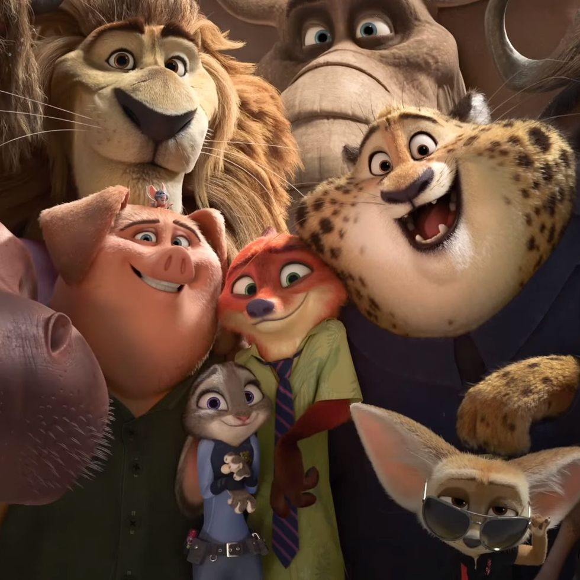 | Sure, here is an analysis and comparison of the two captions based on precision and recall:
### Caption 1
Precision:
- Inaccuracies:
- "a giraffe is situated on the left side": There is no giraffe in the image.
- "a monkey appears in the center": There is no monkey in the image.
- "a cow is visible on the right side": There is no cow in the image.
- "a dog near the front-left of the group": There is no dog in the image.
- "a red panda hugged in the middle": There is no red panda in the image.
- "three birds sitting around": There are no birds in the image.
Conclusion:
- Precision for Caption 1 is quite poor as many of the characters mentioned do not appear in the image.
Recall:
- The actual characters include a lion, a fox, a rabbit, an elephant, a pig, a cheetah, a female lab mouse, and a fennec fox.
- Caption 1 fails to mention most of these characters.
Conclusion:
- Recall for Caption 1 is also poor as it misses many of the actual characters in the image.
Overall Conclusion:
- Caption 1 is mostly inaccurate in identifying the correct characters and thus has both low precision and recall.
### Caption 2
Precision:
- Accuracies:
- "a lion": Correct.
- "a hippo": Correct.
- "a pig": Correct.
- "a fox": Correct.
- "a rabbit": Correct.
- Inaccuracies:
- "a giraffe": There is no giraffe in the image.
- "In addition to the main characters, there are two smaller figures in the background, one on the left side and the other on the right side of the image": This part is misleading as there are smaller characters but not necessarily in the background or sides.
- "A tie can also be seen in the middle of the scene, possibly belonging to one of the characters": This is correct, but could be more descriptive.
Conclusion:
- Precision for Caption 2 is relatively good, though it inaccurately mentions a giraffe.
Recall:
- It mentions the lion, hippo, pig, fox, and rabbit but misses the elephant, cheetah, female lab mouse, and fennec fox.
Conclusion:
- Recall for Caption 2 is moderate as it gets most of the main characters but misses some.
Overall Conclusion:
- Caption 2 has better precision and recall compared to Caption 1 but still misses some characters present in the image.
### Summary:
- Caption 1: Poor in precision and recall.
- Caption 2: Moderate in both precision and recall, but better overall compared to Caption 1. | Caption 1:
Precision:
- The caption correctly identifies the animated characters as from the movie "Zootopia."
- It accurately references six main characters posing together in the photo.
- The characters include a lion, a pig, a fox, and a rabbit, which are present in the image. However, it inaccurately mentions a giraffe and hippo, which are not visible in the photo.
- The mention of a tie in the middle, presumably belonging to one of the characters, is correct, as the fox is wearing a tie.
- The caption also mentions two smaller figures in the background, which might be interpreted as the rodent on the head of the pig and the fox-like character wearing sunglasses at the bottom.
- The statement about the characters smiling and appearing to enjoy their time together is correct.
Recall:
- The caption misses identifying additional characters in the top background, specifically a rhino and an ox/buffalo, which are partially visible.
- It does not mention specific expressions or poses beyond smiling and enjoying their time together.
- The fox and rabbit characters are not identified by name, which could be expected in a more detailed caption.
Overall Evaluation for Caption 1:
- Precision: High, but it has some misidentifications (giraffe and hippo).
- Recall: Moderate, as it captures the central elements but misses detailed identification of all characters and some background figures.
Caption 2:
Precision:
- The caption incorrectly identifies the type of characters as "animal puppets" instead of animated characters.
- It mistakenly mentions a giraffe, a monkey, a cow, a dog, and a red panda, none of which are present in the image.
- It incorrectly includes three birds, which are also not in the image.
- The only partially correct detail is the group posing for a photo.
Recall:
- The caption fails to identify any of the actual characters or their specific animal types.
- It does not capture the overall joyful expressions or the collective nature of the scene correctly.
Overall Evaluation for Caption 2:
- Precision: Very Low, with many incorrect identifications and no accurate recognition of the main characters.
- Recall: Very Low, as it misses almost all relevant details of the image and introduces many inaccuracies.
Final Comparison and Conclusion:
- Caption 1 is significantly more accurate in both precision and recall. It correctly identifies several main characters and the context despite a few mistakes and omissions.
- Caption 2 largely fails in both precision and recall, introducing many inaccuracies and missing key elements of the image.
Therefore, Caption 1 is a much better description of the image compared to Caption 2. | The image showcases a whimsical scene featuring a group of characters from the movie "Zootopia." There are several animal puppets standing together, posing for a photo. In the group, a giraffe is situated on the left side, a monkey appears in the center, and a cow is visible on the right side. The group also includes a dog near the front-left of the group and a red panda hugged in the middle. Additionally, there are three birds sitting around, with one mostly in the foreground, and the other two on the top-right and bottom-right sides of the scene. | 1.0 | 1.0 | 1.0 | 1.0 | 1.00 | 1.00 | 1.00 |  | The image features a group of animated characters from the movie "Zootopia" posing together for a photo. There are six main characters in the scene, including a lion, a giraffe, a hippo, a pig, a fox, and a rabbit. They are all smiling and appear to be enjoying their time together.
In addition to the main characters, there are two smaller figures in the background, one on the left side and the other on the right side of the image. A tie can also be seen in the middle of the scene, possibly belonging to one of the characters. | 5.0 | 7.0 | 5.0 | 7.0 | 6.00 | 6.00 | 6.00 |  |
 | Caption 1 Evaluation:
Precision:
- Strengths:
- Correctly identifies multiple characters.
- Accurately describes a senior gentleman who is most likely Carl from the Disney movie "Up."
- Correctly mentions a character from Marvel Comics, the protagonist, Miles Morales, from "Spider-Man: Into the Spider-Verse."
- Points out the presence of a young woman, who is Chihiro from "Spirited Away."
- Weaknesses:
- Fails to mention the robot character, WALL-E.
- Doesn't provide accurate descriptions of the characters apart from Carl, Miles, and Chihiro.
Recall:
- Strengths:
- Identifies a major portion of the characters present.
- Accurately places the main positions of the characters.
- Weaknesses:
- Misses identifying WALL-E altogether.
- Incorrectly mentions that the Marvel character is in an action-packed pose.
- Misidentifies the characters' emotional states in some parts.
Caption 2 Evaluation:
Precision:
- Strengths:
- Makes an attempt to identify specific recognizable characters.
- Weaknesses:
- Incorrectly identifies characters.
- Scarlett Johansson's character from The Avengers and a character from Monsters vs. Aliens are mentioned, but they are not present in the image.
- Misidentifies Chihiro from "Spirited Away" as someone from "Monsters vs. Aliens."
- Misses WALL-E altogether.
Recall:
- Strengths:
- None as this caption fails to accurately describe any of the characters within the image.
- Weaknesses:
- Fails to correctly identify any single character.
- Completely misses crucial characters such as Carl Fredricksen from "Up" and WALL-E.
Conclusion:
Caption 1 provides a more accurate and comprehensive description of the image compared to Caption 2. While Caption 1 has some inaccuracies and omissions, it still correctly identifies several key characters and provides a closer approximation of their placement in the image. In contrast, Caption 2 incorrectly identifies characters and fails to accurately represent the contents of the image altogether. Therefore, Caption 1 performs better in both precision and recall. | Let's evaluate the two captions separately for both precision and recall:
### Caption 1 Evaluation
#### Precision:
- Incorrect Information:
- Scarlett Johansson's character from The Avengers is not in the image.
- A character from Monsters vs. Aliens is not in the image.
- Correct Information:
- Spider-Man is correctly identified (although specific version is not mentioned).
- General Impression:
- The caption is mostly inaccurate because it introduces characters that do not exist in the image.
Overall precision: Low
#### Recall:
- Missed Characters:
- The old man from "Up".
- The robot from "WALL-E".
- The girl from "Spirited Away".
- Partial Recognition:
- Spider-Man is recognized, though not specified as the "Into the Spider-Verse" version.
Overall recall: Low
### Caption 2 Evaluation
#### Precision:
- Incorrect Information:
- No Marvel characters in the image.
- Correct but Vague Information:
- Mention of a senior gentleman, though not specifying from Disney's "Up".
- Mention of a character that could vaguely refer to Spider-Man, without specific details.
- Misleading Details:
- The young woman wearing a pink shirt is correctly noted, but the term "conflicted emotion" is subjective.
- The mention of "Disney and Marvel productions" is incorrect as only the "Up" character is from Disney, none from Marvel.
Overall precision: Low to Moderate (mostly due to vagueness and partially correct information)
#### Recall:
- Missed Details:
- The robot from "WALL-E" is not identified.
- The exact version of Spider-Man ("Into the Spider-Verse") is not specified.
- No specific mention of "Spirited Away".
- Partial Recognition:
- The senior gentleman and the young woman are loosely identified but not accurately.
- The inclusion of a Marvel reference can be misleading.
Overall recall: Moderate (capture general aspects, but many specific details are wrong or missing)
### Overall Evaluation
- Caption 1: Has factual inaccuracies and misses many aspects of the image. Therefore, precision and recall are both low.
- Caption 2: Provides a general idea of some characters but includes inaccuracies (like Marvel references) and misses specific identifications, resulting in low to moderate precision and moderate recall.
In summary, Caption 2 is slightly better in capturing the general elements present in the image, but both captions fail in providing accurate and detailed descriptions. | The image is a montage of several characters or movie posters in a close-up shot. There are a total of five characters represented, and all of them are related to movies, particularly Disney and Marvel productions.
The first character is a senior gentleman from Disney, who appears confused and disoriented. He is located on the left side of the image. The second character puts on a tough front and comes from the world of Marvel Comics. This character is positioned in the middle, covering a significant portion of the image.
The third character is displayed on the right side of the image, with an action-packed pose, and the fourth character is a cartoon with a somewhat confused expression. Finally, on the far right side of the image, there is a young woman wearing a pink shirt, who displays a conflicted emotion. | 6.0 | 3.0 | 6.0 | 4.0 | 4.50 | 5.00 | 4.74 |  | The image features a collage of various characters from different movies, including Spider-Man, Scarlett Johansson's character from The Avengers, and a character from Monsters vs. Aliens. Each character is represented by a stylized illustration.
Spider-Man is positioned on the left side of the collage, while Scarlett Johansson's character is located in the middle. On the right side, there is a character from Monsters vs. Aliens. The characters are arranged in a visually appealing manner, showcasing the diverse range of movies they come from. | 1.0 | 2.0 | 1.0 | 1.0 | 1.50 | 1.00 | 1.20 |  |
 | ### Caption 1
Precision:
- This caption is flawed in terms of precision. The following inaccuracies are observed:
- The image is not black and white; it is colored.
- The artwork is indeed an oil painting.
- The person is in a scene of panic and horror, which is correct.
- There is a crossbar, but describing it as the only other element besides the person is incorrect. There are more elements in the painting.
- The presence of four small boats is inaccurate; I do not see four distinct boats in the background.
- The suggestion that an ocean is not visible is misleading. There’s a large water body (likely a fjord) visible.
Recall:
- Recall is also problematic:
- Fails to mention the striking colors (especially the vivid sky) that contribute to the painting's emotional impact.
- Omits the bridge-like structure and the nightmarish swirling patterns in the sky.
- Neglects to include that there is another figure in the background to the left of the central figure.
### Caption 2
Precision:
- This caption is more precise:
- Correct in stating that the person is screaming with their mouth wide open.
- Accurate in conveying the sense of panic or fear.
- The background features a large body of water, adding to the dramatic atmosphere, which matches the scene.
- Correctly emphasizes that the screaming figure is the central focus.
- The mention of a woman remains subjective as the gender of the figure is indeterminate from the painting.
Recall:
- Higher recall compared to Caption 1:
- Includes the aspect of a large body of water that contributes to the dramatic scene.
- Mentions the emotional state effectively.
- Doesn’t mention all elements, such as the distinct wavy patterns in the sky and water, the other figure on the bridge, and the vivid colors.
### Conclusion
Caption 1 Summary:
- Precision: Low, due to inaccurate and misleading information.
- Recall: Low, due to omission of significant elements and colors.
Caption 2 Summary:
- Precision: Moderate to High, although it makes some subjective assumptions (e.g., gender).
- Recall: Moderate, includes several key elements but misses some significant details.
Overall, Caption 2 provides a more accurate and comprehensive description of the image, despite some subjective statements. | ### Caption 1 Analysis:
Precision (how much of what is in the caption is in the image):
- The caption correctly identifies the painting as depicting a person screaming (correct).
- It mentions that the background features a large body of water, which is indeed the case (correct).
- It interprets the person's expression as a state of panic or fear, which is a subjective but reasonable interpretation based on the painting's title and style (reasonable).
- The caption suggests that the dramatic and intense atmosphere of the scene is due to the background, aligning with the overall effect of the painting (reasonable).
Recall (how much of what is in the image is in the caption):
- The caption covers the major elements: the screaming figure, the background water, and the intense atmosphere.
- However, it misses details such as the presence of other figures in the distance and the specific elements of the sky, such as the sunset's colors and patterns.
### Caption 2 Analysis:
Precision (how much of what is in the caption is in the image):
- The caption claims the artwork is black and white, which is incorrect as the painting is notably colorful, with prominent orange, blue, and other hues (wrong).
- It accurately describes the person with their mouth wide open in a state of panic (correct).
- The mention of four small boats is incorrect; no such boats are visible in the painting (wrong).
- It incorrectly states that there is nothing but a crossbar behind the person (wrong).
Recall (how much of what is in the image is in the caption):
- The central aspect of a person screaming is mentioned.
- It fails to mention the prominent colors, the true background elements, and other figures on the bridge or dock.
- The description does not capture the sunset and the sky's vibrant colors.
### Overall Comparison:
- Precision:
- Caption 1 has a higher precision as it correctly describes the major elements of the painting.
- Caption 2 has lower precision due to several inaccuracies regarding the color and background elements.
- Recall:
- Caption 1 provides a better overall description of the painting, covering more details present in the image.
- Caption 2 misses several key elements, resulting in lower recall.
### Conclusion:
Caption 1 is more accurate and effective in describing the image both in terms of precision and recall. It captures the essence and major elements of the painting more correctly than Caption 2. | The image displays a black and white artwork, likely an oil painting, showcasing a person with their mouth wide open in a scene of extreme panic and horror. This person is at the center of the frame, with nothing else in the painting except the crossbar from which they are screaming.
In the background, there are four small boats located behind the individual, scattered at different positions on the picture. Despite the dark and intense theme, the presence of these boats suggests that an actual ocean is not visible within the painting. | 3.0 | 3.0 | 2.0 | 2.0 | 3.00 | 2.00 | 2.40 |  | The image depicts a painting of a person, possibly a woman, screaming with their mouth wide open. The person appears to be in a state of panic or fear, as if they are experiencing a nightmare. The background of the painting features a large body of water, which adds to the dramatic and intense atmosphere of the scene. The screaming figure is the main focus of the painting, capturing the viewer's attention and evoking a sense of unease. | 7.0 | 8.0 | 4.0 | 8.0 | 7.50 | 6.00 | 6.67 |  |
| ### Caption 1 Evaluation
#### Precision:
- Accuracy of Elements:
- The colors mentioned (blue, green, and red) are mostly accurate, though the description of the red figure is questionable as there isn't a clear red figure, but a predominantly red cloth.
- It states the figures are likely gods or divine figures, but this is an interpretation and not explicit in the image.
- The description correctly mentions each figure playing a musical instrument.
- The statement about this being a four-panel art piece is incorrect since it is a single unified painting.
- The depiction of the background as being intricate is somewhat subjective, but it’s colorful and abstract.
- Precision Score: Moderate. Captures the main colors and figures involved but inaccurately speculates about four panels and godly inspirations.
#### Recall:
- Elements in Image Mentioned:
- Captures the presence of three figures.
- Mentions the main colors visible.
- Notes that each figure is playing a musical instrument.
- Discusses the artistic expression and setting, giving a fairly holistic view of the image's theme.
- Recall Score: High. Most key visual components are mentioned.
### Caption 2 Evaluation
#### Precision:
- Accuracy of Elements:
- Identifies three men, which is an interpretation since the faces and gender can’t be clearly distinguished.
- Accurately notes that they are holding musical instruments.
- The instruments described (guitar, drum, flute) are partially inaccurate — there is no clear flute visible; a string instrument that could resemble a traditional Indian instrument is more likely than a guitar.
- Describes positioning correctly (left, middle, right).
- Speaks currectly to the theme of camaraderie and music.
- Precision Score: Moderate. Correct on there being three figures and noted instruments, but wrongly identifies a flute and probably incorrectly identifies one instrument as a guitar.
#### Recall:
- Elements in Image Mentioned:
- Correctly mentions the three figures.
- Details the presence of musical instruments.
- Captures the alignment and the positioning of figures (left, middle, right).
- Talks about the vibrancy and theme of enjoyment, aligning well with the emotional portrayal of the image.
- Recall Score: High. Covers the primary elements and the emotional theme but with some inaccuracies in instrument identification.
### Comparison
Caption 1
- Precision: Moderately precise due to some inaccuracies and speculative details.
- Recall: High. Captures most elements and themes portrayed.
Caption 2
- Precision: Moderately precise with some incorrect identification of instruments and interpretation of the figures as men.
- Recall: High. Covers most primary components though some elements are inaccurately described.
Both captions display good recall, covering many primary aspects of the image but suffer from moderate precision due to mistaken details or assumptions. Caption 1 wavers between correct interpretation and personal impressions whereas Caption 2 tends to misidentify specific instruments and assumes gender. | Caption 1:
Precision:
- The caption accurately identifies that the painting depicts three individuals each holding a musical instrument. It specifies the instruments as a guitar, a drum, and a flute.
- The caption accurately describes their position as sitting closely together, with one on the left, one in the middle, and one on the right.
- Errors in Precision:
- The man in the middle actually appears to be holding a drum, not a flute.
- Instead of a guitar, the man on the right appears to be holding a string instrument, but it's not necessarily a guitar.
- Precision Rating: Medium
Recall:
- The caption captures the essence of music and camaraderie among the individuals.
- It misses out on noting the abstract and faceless nature of the painting's depiction.
- It doesn't comment on the vibrant and multiple-colored palette used in the artwork.
- Recall Rating: Medium
Caption 2:
Precision:
- The caption overinterprets certain elements by referring to the figures as gods or figures, each painted blue, green, and red, when the intended depiction might not be deities.
- It accurately mentions the figures playing a musical instrument but inaccurately states the presence of a four-panel art piece and intricate details of their surroundings which are not specifically evident in the picture.
- Errors in Precision:
- It inaccurately details the colors of individuals (only one individual is predominantly green, and the others are in blue with orange/yellow lower garments).
- The background isn't explicitly detailed with intricate surrounding particulars.
- Precision Rating: Low
Recall:
- The caption captures the overall theme of harmony and artistic expression.
- It mentions the three figures holding musical instruments but inaccurately describes the exact nature of these figures and their environment.
- Recall Rating: Medium
Conclusion:
- Caption 1 is more accurate in describing the number of people, their general positions, and their activity, albeit with some errors in instrument identification.
- Caption 2 introduces inaccuracies by suggesting a four-panel piece and complicated background details not visible in the image, and interpreting the figures as gods/figurines.
Overall Ratings:
- Caption 1: Medium Precision, Medium Recall
- Caption 2: Low Precision, Medium Recall
Caption 1 is more effective in its description despite room for improvement in instrument identification. | The image features three gods or figures, each in the color of blue, green, and red. They are painted in a four-panel art piece, with a large background visible, likely filled with intricate details of their surroundings. Each of the figures appears to be playing a musical instrument.
The blue figure has a drum in front of it, creating a focal point in striking contrast against the rest of the scene. The figurines seem to be enjoying themselves as they engage in their artistic expression, showcasing harmony and unity despite their differing colors. The entire scene radiates an aura of creative inspiration and artistic brilliance through the depicted characters and precise details in the artwork. | 6.0 | 4.0 | 9.0 | 6.0 | 5.00 | 7.50 | 6.00 |  | The image depicts a vibrant and colorful painting of three men sitting together, each holding a musical instrument. They appear to be enjoying their time as they play their instruments. One of the men is holding a guitar, another has a drum, and the third man is holding a flute.
The three men are positioned closely to each other, with one person on the left side, another in the middle, and the third person on the right side of the painting. The painting captures the essence of music and camaraderie among the three individuals. | 5.0 | 7.0 | 6.0 | 6.0 | 6.00 | 6.00 | 6.00 |  |
 | Sure, let's evaluate each caption based on precision and recall.
### Caption 1 Evaluation:
Precision:
- The caption accurately describes the person standing on the shore of a beautiful lake at sunset.
- It mentions the warm and glowing light reflecting on the water, which is present in the image.
- It accurately notes that there are no additional people or animals visible.
- The caption implies a personal moment of reflection and appreciation for the natural setting, which can be interpreted from the image.
However, there are certain artistic elements in the image (such as the distant cityscape and the person appearing to hold a lantern) that are not captured by this caption.
Recall:
- It misses several crucial details present in the image:
- It does not mention the cityscape in the background.
- It does not note that the person is holding a lantern.
- It omits details about the trees surrounding the scene and the water flowing in the foreground.
- The blue luminescent elements in the image are not described.
### Caption 2 Evaluation:
Precision:
- The caption correctly mentions a person standing by a body of water with a beautiful sunset in the background.
- It accurately notes the person holding a lantern.
- It mentions the trees around the person and the water, which are present in the image.
- It also accurately describes the cityscape visible in the distance.
Recall:
- This caption covers a more comprehensive set of elements from the image:
- Cityscape in the distance.
- Person holding a lantern.
- Trees surrounding the body of water.
- Warm sunset creating a tranquil and natural atmosphere.
However, it omits the bright blue luminescent elements near the person and along the water, as well as the artistic style and vibrant colors that contribute to the overall ambiance.
### Summary:
Caption 1:
- Precision: High, but missing some artistic and specific elements (such as the lantern).
- Recall: Moderate, as it omits several key artistic details present in the image.
Caption 2:
- Precision: High, capturing most of the critical elements in the image (person, lantern, trees, cityscape).
- Recall: High, with more details covered compared to Caption 1, though it still misses some artistic nuances.
Overall, Caption 2 provides a more precise and comprehensive description of the image, making it the better of the two. | ### Caption 1
#### Precision:
- The image indeed depicts a person standing near a body of water with a sunset in the background. (Precise)
- The person appears to be holding a lantern, which is true. (Precise)
- There's a detailed mention of trees and a distant cityscape, both of which are prominent in the image. (Precise)
#### Recall:
- Mention of the serene and peaceful atmosphere is present, which aligns with the overall feel of the image. (High Recall)
- Describing the sunset and the harmonious composition effectively captures the visual essence. (High Recall)
- The cascading water feature in the foreground is not described. (Omission)
### Caption 2
#### Precision:
- The description of a person standing on the shore of a lake at sunset is accurate. (Precise)
- The mention of the environment being serene and the light reflecting on the water aligns with the image. (Precise)
- The caption notes that there are no additional people or animals visible, matching the image. (Precise)
#### Recall:
- The caption misses the aspect of the lantern the person is holding. (Omission)
- No mention of the distant cityscape is present, which is a significant part of the image. (Omission)
- The cascade of water in the foreground is also not mentioned, which adds to the natural details. (Omission)
### Summary & Comparison
#### Precision:
- Caption 1 and Caption 2 both achieve high precision, accurately describing key elements like the sunset, the person, and the general atmosphere. However, Caption 1 offers slightly more in terms of specific details, such as the lantern and trees.
#### Recall:
- Caption 1 has a higher recall, as it captures more elements present in the image (trees, lantern, cityscape), although it misses the cascading water.
- Caption 2 provides an accurate depiction but with fewer details from the image, missing the lantern, cityscape, and the water feature.
Overall, Caption 1 offers a more comprehensive and detailed description of the image with high precision and recall, whereas Caption 2, although precise, misses several significant elements. | In this vivid painting, a person stands on the shore of a beautiful lake at sunset. The serene environment is enhanced by the warm and glowing light reflecting on the water. The individual is isolated from the scene, seemingly enjoying the peaceful ambiance created by the tranquil water and captivating sky.
There are no additional people or animals visible in the painting, adding to the calmness of this picturesque scene. It appears to be a personal moment of reflection and appreciation for the natural setting. | 8.0 | 8.0 | 6.0 | 7.0 | 8.00 | 6.50 | 7.17 |  | The image depicts a serene scene of a person standing near a body of water, possibly a lake or a river, with a beautiful sunset in the background. The person appears to be holding a lantern, adding a sense of tranquility to the scene.
Surrounding the person and the water, there are several trees, creating a peaceful and natural atmosphere. In the distance, a cityscape can be seen, contrasting with the calmness of the water and the person's presence. The combination of the sunset, the person with the lantern, and the trees creates a visually appealing and harmonious composition. | 9.0 | 9.0 | 8.0 | 9.0 | 9.00 | 8.50 | 8.74 |  |
 | ### Evaluation of Caption 1
Precision:
- The caption mentions a "lush, colorful forest" and "painted vividly," accurately reflecting the vibrant and artistic nature of the illustration.
- Describes "a magical explosion of lights," which aligns with the various light points visible in the image, particularly in the trees.
- The description of "variety of shapes, sizes, and hues" for the trees is correct.
- Doesn't introduce any elements not present in the image.
Recall:
- The caption misses mentioning the sunset in the background, which is a prominent feature.
- "Lit-up area" and "unique details of the trees" are broad terms and don't capture specific details like the stream of water or the presence of small plants and flowers.
- The presence of diverse flora other than trees is somewhat implied but not detailed.
### Evaluation of Caption 2
Precision:
- Correctly identifies a "vibrant and colorful forest scene" with trees, bushes, and flowers.
- Mentions a "stream of water," which is accurate.
- Correctly observes the "warm glow" from the setting sun.
- Introduces elements ("several birds") that are not visible in the image.
Recall:
- Captures the sunset and the presence of various plants and flowers.
- Mentions the stream of water, a central feature of the scene.
- Misses the "magical explosion of lights" and the lit-up details in the trees.
- Doesn't mention the artistic and vividly painted nature of the image.
- Introduces an element (birds) that isn't visible, taking away from recall accuracy.
### Conclusion
Caption 1:
- Precision: High, accurately describes present elements without adding non-existent ones.
- Recall: Moderate, misses some significant features (sunset, specific details).
Caption 2:
- Precision: Moderate, accurately identifies most elements but introduces nonexistent birds.
- Recall: High, captures many key elements but misses the "magical" lighting and artistic details.
Between the two, Caption 1 is more precise but has moderate recall, whereas Caption 2 has higher recall but moderate precision due to mentioning birds that are not in the image. | ### Caption 1:
Precision:
- Strengths: The caption accurately describes the vibrant and colorful nature of the forest scene, mentioning trees, bushes, and a stream of water, which are all present in the image. It notes the lush vegetation and the warm sunset glow behind the trees, reflecting the details correctly.
- Weaknesses: The caption incorrectly mentions birds which are not visible in the image.
Recall:
- Strengths: It includes most significant elements such as the variety of plants, flowers, and the sunset's warm glow, creating a comprehensive picture of the forest.
- Weaknesses: It misses other specific details like the fantasy-like or magical quality of the scene and the whimsical elements present in the trees and flora.
### Caption 2:
Precision:
- Strengths: The caption captures the lush, colorful, and vivid nature of the forest, accurately comparing it to a vibrant greenhouse full of trees. It mentions an enchanting and lively atmosphere, which aligns well with the artistic and imaginative representation in the image.
- Weaknesses: It vaguely refers to a "magical explosion of lights" and "lit-up area," which isn't clearly depicted in the image as such. It doesn't mention the stream of water.
Recall:
- Strengths: This caption captures the artistic and enchanting essence of the forest illustration well. It notes the variety of shapes, sizes, and hues of the trees, lending to the vivid and detailed portrayal.
- Weaknesses: It doesn't mention some specific elements like the stream of water, and some elements (explosion of lights, lit-up area) seem slightly exaggerated for the scene, while the warm sunset glow and whimsical design details are omitted.
### Summary:
- Precision: Caption 1 is more precise concerning the visible features such as the landscape (trees, bushes, flowers, stream), but it erroneously adds birds. Caption 2 is fairly precise but includes less accurate mentions like "magical explosion of lights" and "lit-up area."
- Recall: Caption 2 better captures the imaginative and artistic essence of the scene being depicted, providing a broader and more comprehensive portrayal. However, it misses specific elements like the stream. Caption 1 includes most of the elements but misses the fantasy/magical quality and detail of the whimsical tree shapes and flora.
In conclusion, while Caption 1 is somewhat more precise, Caption 2 provides a broader recall of the image's artistic and imaginative aspects. | The image depicts a lush, colorful forest enclosed by a magical explosion of lights. Painted vividly, the scene resembles a vibrant greenhouse full of trees. The trees showcase a variety of shapes, sizes, and hues, creating an enchanting and lively atmosphere. The combination of the bright colors, the lit-up area, and the unique details of the trees altogether results in an artistic and vivid illustration of the forest. | 9.0 | 7.0 | 6.0 | 7.0 | 8.00 | 6.50 | 7.17 |  | The image depicts a vibrant and colorful forest scene with trees, bushes, and a stream of water flowing through it. The forest is filled with a variety of plants and flowers, creating a lush and lively atmosphere. The sun is setting behind the trees, casting a warm glow on the scene.
In addition to the natural elements, there are several birds scattered throughout the forest, adding a sense of life and movement to the scene. The combination of the vibrant colors, lush vegetation, and the presence of birds creates a captivating and serene environment. | 8.0 | 8.0 | 8.0 | 8.0 | 8.00 | 8.00 | 8.00 |  |
 | ### Caption 1 Evaluation:
#### Precision:
1. Correct Descriptions:
- "The image captures a boy and a girl sitting next to each other in a living room."
- "They appear to be in comfortable surroundings."
- "They are both positioned on couches."
- "There are a few lights visible in the image, including one on the left side of the room and another on the right."
2. Incorrect or Extra Details:
- "The boy is seated to the left of the girl, sitting in a classic reproduction, brown suede chair": The drawing is black and white, so the color and material (brown suede) of the chair cannot be determined.
- "The girl is occupying a couch on the right side.": The actual positions are opposite, with the woman on the left and the man on the right.
- "Additionally, there is a third light located closer to the bottom-right couch.": There are only two lights shown.
- "The couple enjoys their time together": This is interpretative and not directly visible from the image.
#### Recall:
1. Omissions:
- The caption does not mention the relaxed posture of the individuals.
- The caption doesn't mention the detailed background elements, such as a draped cloth or the lamp base.
- The caption completely misses the presence of a cat in the scene.
### Caption 2 Evaluation:
#### Precision:
1. Correct Descriptions:
- "The image is a black and white drawing of a man and a woman sitting together on a couch in a living room."
- "Both of them appear to be relaxed and enjoying each other's company."
- "In the room, there are two lamps, one on the left side of the room and the other on the right side, providing light to the space."
2. Incorrect or Extra Details:
- "The woman is sitting on the left side of the couch, while the man is sitting on the right side.": This is correct; no issues here.
- "There are two chairs, one behind the man and the other behind the woman": This is inaccurate. There are no additional chairs shown behind them.
- "A cat is also present in the scene, resting on the floor near the left side of the couch": There is no visible cat in the drawing.
#### Recall:
1. Omissions:
- The caption does not mention the detailed positions or postures of the individuals and the surrounding décor.
- It does not mention the draped cloth or other details on and around the couch.
### Summary:
For Precision, Caption 2 performs better as it correctly identifies the general scene and avoids adding as many inaccurate details. Caption 1 introduces inaccuracies such as the supposed color and material of the chair and the incorrect positions of the individuals.
For Recall, both captions miss several details present in the image. Caption 1 fails to identify the presence of a cat and the relaxed posture of the individuals. Caption 2 correctly captures some important elements but adds inaccuracies like the presence of chairs and a non-existent cat.
### Conclusion:
Caption 2 is more precise despite several inaccuracies and generally describes the scene more accurately than Caption 1. However, both captions have similar issues with recall, failing to mention detailed surroundings or incorrectly identifying aspects not present in the drawing. | ### Caption 1 Evaluation
#### Precision
- Accurate Elements:
- Black and white drawing.
- Depiction of a man and woman.
- Both are sitting on a couch.
- Two lamps are mentioned, which are accurate.
- The general relaxed atmosphere.
- Inaccurate Elements:
- Mentioning of "two chairs, one behind the man and the other behind the woman" is incorrect; no visible chairs behind the individuals.
- The presence of a cat resting on the floor is also incorrect as there is no cat visible in the image.
#### Recall
- Missing Elements:
- The precise description of the surroundings in terms of the specific furniture (e.g., details about what type of seats).
- No description of what the background behind them looks like, e.g., the draped fabric behind the man.
- Lack of any detail of what might be directly in front of them.
### Caption 2 Evaluation
#### Precision
- Accurate Elements:
- Boy and girl sitting next to each other.
- General description of the setting being a living room.
- Mention of lights in the room.
- The sense of coziness.
- Inaccurate Elements:
- The boy sitting to the left of the girl is incorrect; it is the other way around (boy on the right, girl on the left).
- Mention of specific chair types such as "classic reproduction, brown suede chair" is inaccurate; the drawing does not detail such specifics.
#### Recall
- Missing Elements:
- Detailed surrounding elements such as specific furniture types are overmentioned (e.g., brown suede chair), which the drawing lacks.
- Description of the draped fabric in the background.
- Positional details beyond lights, such as furniture depicted in the drawing (like the drawers/book beside the boy).
### Comparison and Summary
Precision:
- Caption 1 is generally more precise in describing the main elements (man, woman, couch, lamps) correctly, though it incorrectly adds non-existent details (chairs and cat).
- Caption 2's inaccuracies on the specifics of seating positions and overly detailed chair type descriptions lower its precision despite a correct general overview.
Recall:
- Both captions fail to accurately capture the specifics of the background or certain detailed elements seen in the drawing.
- Caption 1 inadequately describes the background and any potential items on furniture.
- Caption 2 attempts to add more detail but incorrectly so, missing some essential described features and overdescribing inaccurately.
### Final Evaluation:
- Caption 1 has slightly better precision but makes definitive claims that are incorrect (e.g., chairs, cat). Its recall could be improved for an accurate depiction.
- Caption 2 makes more critical errors in seating arrangement specifics and superfluous adding of non-present details, thereby slightly reducing its overall usefulness despite attempting more detailed recall. | The image captures a boy and a girl sitting next to each other in a living room. They appear to be in comfortable surroundings, and they are both positioned on couches. The boy is seated to the left of the girl, sitting in a clasic reproduction, brown suede chair. The girl is occupying a couch on the right side.
There are a few lights visible in the image, including one on the left side of the room and another on the right. Additionally, there is a third light located closer to the bottom-right couch. The scene conveys a sense of coziness as the couple enjoys their time together in the living room. | 6.0 | 4.0 | 4.0 | 5.0 | 5.00 | 4.50 | 4.74 |  | The image is a black and white drawing of a man and a woman sitting together on a couch in a living room. The woman is sitting on the left side of the couch, while the man is sitting on the right side. Both of them appear to be relaxed and enjoying each other's company.
In the room, there are two chairs, one behind the man and the other behind the woman. Additionally, there are two lamps, one on the left side of the room and the other on the right side, providing light to the space. A cat is also present in the scene, resting on the floor near the left side of the couch. | 5.0 | 6.0 | 5.0 | 5.0 | 5.50 | 5.00 | 5.24 |  |
 | ### Caption 1:
Precision:
- The caption accurately describes the image as a watercolor portrait with vivid colors and details.
- The mention of "multiple facial features and hair" is not as precise since the woman's face appears singular and not split.
- The artistic and creative nature of the painting is well noted, as is the attention-grabbing quality of the woman's face.
Recall:
- The caption covers many elements of the image, including the vibrant colors.
- It does not mention specifics about the background or the presence of certain distinct patterns although they are significant components of the painting.
- The focus on aesthetics and technique addresses the overall feeling and skill demonstrated by the artwork.
### Caption 2:
Precision:
- The caption accurately captures the colorful and artistic manner of the painting.
- Describes the woman having red hair and wearing a black shirt, which is not clearly distinct in the image.
- The focus on the woman's face and the vibrant background filled with various colors and patterns are precisely mentioned.
Recall:
- Lacks a description of the watercolor medium and the detailed technique.
- Does not highlight the artistic creativity and aesthetics as effectively as Caption 1.
- Covers the primary visual aspects, but not the artistic intricacies and overall impact.
### Comparison:
Precision:
- Caption 1: Provides a broader artistic view and captures the essence and creativity of the painting, though slightly imprecise about the "multiple facial features."
- Caption 2: More precise about the visual aspects like the red hair and black shirt, though these details are not prominently clear.
Recall:
- Caption 1: Offers a more comprehensive understanding of the artistic impact and the beauty of the picture, though missing on some visible specifics.
- Caption 2: More specific about the main visual elements but lacks the broader artistic description and impact.
### Conclusion
Caption 1 provides a more holistic and artistically inclined description, capturing the overall essence and creativity of the painting, making it stronger in terms of describing artistic value. Caption 2, on the other hand, is more precise in detailing the visuals but falls short on capturing the full artistic intent and impact. | ### Caption 1 Evaluation
#### Precision:
- Strengths:
- Colorful and artistic manner: Accurate; the image is indeed colorful and artistic.
- Red hair: Accurate; she has bright and colorful hair.
- Black shirt: Accurate; though the shirt is partly obscured, it appears dark.
- Main focus on face: Accurate; the face is the central subject.
- Vibrant background: Accurate; the background is indeed vibrant and filled with various colors and patterns.
- Creativity and skill: Accurate; the image clearly showcases artistic talent.
- Weaknesses:
- None of significance.
Precision Rating: 10/10
#### Recall:
- Strengths:
- Captures most essential elements: The artistic style, the colorful nature, the woman's face, and the detailed background.
- Mentions specific details like red hair and black shirt, central focus on the face.
- Weaknesses:
- Does not mention the abstract or evocative nature created by the multiple facial features and blending of hair and background.
Recall Rating: 8/10
### Caption 2 Evaluation
#### Precision:
- Strengths:
- Watercolor portrait: Partly accurate; it has the appearance of watercolor.
- Vivid colors and details: Accurate; the image is full of vivid colors and detailed patterns.
- Unique artistic look due to multiple facial features and hair: Accurate; the abstract aspects with multiple features are evident.
- Emphasis on beauty and creativity: Accurate; the painting indeed captures beauty and creativity.
- Face stands out: Accurate; it is the focal point.
- Weaknesses:
- Watercolor specificity: The technique is more mixed media than strictly watercolor.
Precision Rating: 9/10
#### Recall:
- Strengths:
- Captures the abstract elements thoroughly by mentioning the multiple facial features and vivid colors.
- Emphasizes the unique artistic representation well.
- Highlights that the face captures the viewer's attention effectively.
- Weaknesses:
- Does not mention the red hair specifically.
Recall Rating: 9/10
### Overall Comparison
- Precision:
- Caption 1 has high precision because it accurately describes the content and main features without over-specification. The only minor missing detail is the abstract nature.
- Caption 2 is also precise but slightly less due to the potentially misleading specification of using watercolor specifically.
- Recall:
- Caption 1 is slightly less descriptive concerning the abstract style, though it comprehensively covers most other aspects.
- Caption 2 provides a more holistic recall by mentioning abstract and unique features, but it misses the specific mention of red hair.
Overall, both captions are quite effective. Caption 1 is slightly better in precision due to clear and accurate statements. Caption 2 excels in recall by highlighting abstract qualities but slightly falters in suggesting a specific painting technique that may not be entirely accurate. | The image presents an exceptional watercolor portrait of a woman with vivid colors and details. She appears to have multiple facial features and hair, giving her a unique, artistic look. The painting highlights the beauty of the subject while showcasing the creativity of the artist. The woman's face stands out, capturing the viewer's attention. Overall, the picture exhibits a powerful union of aesthetics and technique, resulting in an outstanding portrait. | 8.0 | 9.0 | 8.0 | 9.0 | 8.50 | 8.50 | 8.50 |  | The image features a woman's face painted in a colorful and artistic manner. She has red hair and is wearing a black shirt. The woman's face is the main focus of the painting, and it is surrounded by a vibrant background filled with various colors and patterns. The artistic style of the painting gives the image a unique and eye-catching appearance, showcasing the creativity and skill of the artist. | 7.0 | 10.0 | 7.0 | 8.0 | 8.50 | 7.50 | 7.97 |  |
| ### Caption 1
#### Precision:
- Correct Elements:
- It accurately describes a couple (a man and a woman) walking with a dog on a street lined with trees.
- Incorrect Elements:
- There are no multiple other people in the image; it only shows the couple and the dog.
- There are no birds visible in the painting.
- The street does not appear to have at least ten distinct trees; it seems to have fewer.
#### Recall:
- Missed Elements:
- The nighttime setting with bright, colorful lights reflecting off the wet pavement is not mentioned.
### Caption 2
#### Precision:
- Correct Elements:
- Accurately describes a couple walking down a rain-soaked city street at night.
- Correctly notes the presence of trees lining the street.
- Mentions the serene atmosphere despite the rain, capturing the essence of the painting.
- Incorrect Elements:
- There are no birds visible in the image.
#### Recall:
- Missed Elements:
- The bright, colorful lights and their reflection on the wet pavement.
- No mention of the strong, vibrant colors which are a significant part of the painting's appeal.
### Summary
#### Precision:
- Caption 1 has lower precision as it includes elements that are not present in the image (multiple people, birds).
- Caption 2 has higher precision as it correctly matches more of the visible elements (the couple, the night setting, trees).
#### Recall:
- Caption 1 captures some key elements (the couple, the dog, trees) but misses the vibrant, colorful lighting.
- Caption 2 misses the vivid colors and reflections but captures the nighttime setting and the couple's presence.
Overall, Caption 2 provides a more accurate description of the visible elements in the image but could be improved by mentioning the vibrant colors and reflections, which are notable features of the painting. | ### Caption 1 Evaluation:
Precision:
- The caption precisely mentions some elements that are present in the painting:
- A couple walking down a rain-soaked city street at night, holding hands.
- Trees lining the street, which are visible.
- However, the caption inaccurately states the presence of birds, which are not visible in the painting.
Recall:
- The caption captures some key elements such as the couple, the wet reflections on the street, and the trees.
- It omits the presence of multiple lampposts which are prominent in the painting.
- It fails to mention other architectural details in the background.
### Caption 2 Evaluation:
Precision:
- The caption is less precise compared to the image:
- It inaccurately mentions several people and six birds, which are not present.
- It accurately identifies a couple but incorrectly states the presence of a dog.
- The overall scene is described as a quaint street scene with multiple people, which is not reflected accurately in the image.
Recall:
- The caption includes some accurate elements such as trees and the couple (though incorrectly specifying other people and a dog).
- It provides additional details not present in the painting, such as the exact number of trees and birds.
- The caption does not mention the colorful, vibrant lighting from the lampposts which is a key feature in the painting.
### Summary:
Caption 1:
- Precision: Moderate - Correctly identifies major features (couple, wet street, trees), but inaccurately includes birds.
- Recall: Moderate - Captures some essential elements but misses out on important details like the lampposts and the building in the background.
Caption 2:
- Precision: Low - Contains several inaccuracies (multiple people, a dog, number of trees and birds).
- Recall: Low - Misses key visual elements (vibrant lighting from the lampposts) and provides mostly incorrect additional details.
Overall, Caption 1 is more accurate in describing the painting, despite its imprecision with the inclusion of birds. Caption 2 introduces several inaccuracies and extraneous elements not present in the painting. | The painting features a quaint street scene with multiple people and trees adding to the atmosphere. There are a total of seven people in the scene. A man and a woman are walking down the street, and they have a dog following close behind them. The dog appears to be enjoying this stroll as it moves along with the couple.
In addition to the man, woman, and dog, there are several other pedestrians walking on the street—some closer to the foreground and others toward the middle and background of the painting. There are six birds flying around, adding to the liveliness of the scene.
The street is lined with at least ten distinct trees that provide a sense of depth and structure to the composition. The overall impression of the painting is one of harmony and leisurely life in a cozy town setting. | 4.0 | 2.0 | 5.0 | 1.0 | 3.00 | 3.00 | 3.00 |  | The image is a painting of a couple walking down a rain-soaked city street at night. The man and woman are holding hands as they stroll along the wet sidewalk. The street is lined with trees on both sides, creating a serene atmosphere despite the rain.
There are several birds visible in the scene, adding a touch of liveliness to the painting. One bird can be seen flying above the couple, while others are perched on the trees or soaring through the air. The painting captures the essence of a rainy night in the city, with the couple enjoying each other's company amidst the wet surroundings. | 7.0 | 6.0 | None | 6.0 | 6.50 | N/A | N/A |  |
 | Caption 1 Evaluation:
Precision:
- The caption accurately describes the presence of a big outdoor ice skating rink with people enjoying skating.
- Mentioning that people are wearing backpacks and using ski poles is not accurate; these elements don't appear in the image.
- The presence of potted plants is correctly identified.
- The atmosphere is rightly depicted as lively and fun, evidenced by the number of people skating.
Recall:
- The caption overlooks the beach and ocean in the background, an important feature of the image.
- It fails to mention other elements like the sunset, the palm trees, or the distant boats.
- There's a lapse in recognizing the people watching around the rink.
- It overlooks other relevant details like the "Sunset Bar" sign in the lower right corner.
Caption 2 Evaluation:
Precision:
- The caption accurately describes a large number of people, including children and adults, enjoying the ice skating rink.
- The presence of potted plants around the rink is correctly identified.
- It mentions at least 14 people being visible, which matches the image.
- The description of a pleasant atmosphere is appropriate.
Recall:
- This caption also misses mentioning the beach, ocean, sunset, palm trees, and distant boats.
- Details like the "Sunset Bar" sign and people walking closer to the beach are also omitted.
- Some elements like the path leading to the beach and the landscaping around the rink are not captured.
Overall Comparison:
- Precision: Caption 2 is more precise as it sticks to what is visibly present in the image, unlike Caption 1 which adds incorrect details about ski poles and backpacks.
- Recall: Both captions lack full coverage of key elements such as the beach, ocean, sunset, palm trees, and additional signs of activity beyond the rink. However, Caption 2 slightly edges out as it more accurately accounts for the number of people and their interaction with the rink.
In conclusion, Caption 2 more accurately represents what's observed in the image but both captions could benefit from including more details about the setting and background. | ### Evaluation for Caption 1:
Precision:
- The caption correctly mentions an outdoor ice skating rink on a sunny day.
- It accurately describes a large group of people, including both children and adults, gathered around the rink.
- There is a mention of at least 14 people visible in the scene, which is a reasonable estimation.
- The caption notes the presence of potted plants around the area, contributing to the greenery.
Recall:
- The caption does not mention the backdrop of the beach and sea, which is a significant visual aspect.
- The sunset is also a noticeable feature that the caption misses.
- It does not describe the pleasant and scenic atmosphere created by palm trees and the overall setting.
- The vibrant and lively atmosphere could be elaborated further.
### Evaluation for Caption 2:
Precision:
- The caption mentions an outdoor ice skating rink with numerous people enjoying the activity, which is accurate.
- It specifies people skating or preparing to skate.
- It notes the presence of potted plants around the rink.
Recall:
- It inaccurately states that many people are wearing backpacks, which is not apparent in the image.
- It incorrectly indicates that some skaters are using ski poles, which is not visible.
- It misses the backdrop of the beach and sea.
- Like Caption 1, it does not mention the sunset or the palm trees.
- The lively atmosphere is noted, but the visual details contributing to this (like the sunset and the beach) are missing.
### Overall Analysis:
Caption 1
- Precision: High - Most of what is mentioned is correct but lacks some minor details concerning the lively atmosphere.
- Recall: Moderate - It misses significant aspects like the beach, sea, sunset, and palm trees, which are substantial parts of the scene.
Caption 2
- Precision: Moderate - Contains inaccuracies regarding backpacks and ski poles.
- Recall: Moderate - Omits major scenic elements like the beach, sea, sunset, and palm trees that define the setting.
Conclusion:
Caption 1 has better precision as it does not contain factual errors, but it falls short on recall by missing out significant elements. Caption 2, while capturing the activity's essence, introduces inaccuracies, affecting its precision. Both captions could improve in recall by including the beach, sea, and sunset scenery, which are key parts of the image. | The image depicts a big outdoor ice skating rink with numerous people enjoying the activity. Several people are scattered around the rink, either skating or preparing to, with many of them wearing backpacks. Some of the skaters are using ski poles to help their balance. There are potted plants placed in various locations around the rink, possibly serving as decoration or safety measures.
The atmosphere is lively, and people of various skill levels showcase their skating abilities. This popular event brings the community together, creating a sense of excitement and fun on a beautiful day. | 5.0 | 6.0 | 3.0 | 5.0 | 5.50 | 4.00 | 4.63 |  | The image captures a lively scene at an outdoor ice skating rink on a sunny day. A large group of people, including both children and adults, are gathered around the rink, enjoying their time on the ice. There are at least 14 people visible in the scene, with some standing closer to the rink and others further away.
In addition to the skaters, there are several potted plants placed around the area, adding a touch of greenery to the scene. Some of these plants are located near the rink, while others are placed further away, creating a pleasant atmosphere for the skaters and spectators alike. | 8.0 | 9.0 | 6.0 | 4.0 | 8.50 | 5.00 | 6.30 |  |
 | ### Evaluation of Captions
#### Caption 1:
Precision:
1. Mentions three men playing soccer. This is accurate; however, upon inspecting closely, there are likely more than three people involved.
2. Describes a player rushing towards the goal and another defending, but fails to precisely match anyone's actions in the image.
3. States that the soccer ball is being carried by a player, which is incorrect because it is being played feet-off-ground (floating) and centrally located among the players.
4. Description of several other people watching the game is not supported by the image as only legs of two additional individuals visible.
5. Incorrectly specifies the goal location and provides intricate placement details.
6. Assertion about onlookers being engaged is subjective and speculative.
Recall:
1. Does not mention the zero-gravity or weightless nature of the activity occurring.
2. Fails to specify the exact positions and uniforms of the players.
3. Misses the reflection effect visible at the top part of the image.
Overall Precision and Recall for Caption 1:
- Precision: Low. Several specifics are inaccurate, and key elements are misdescribed or omitted.
- Recall: Low. Critical details about the scene setup (zero-gravity action, player alignment, reflection) are missing.
#### Caption 2:
Precision:
1. Accurately mentions three players leaping, concentrating on the ball in the middle.
2. Correctly implies the athletes are in the air and interacting with the ball.
3. Identifies other people who might be associated with the game. There are at least four other individuals partially visible.
4. Specifies the ball located in the center of the scene, which is correct.
Recall:
1. Does not highlight the zero-gravity environment, which is a key aspect.
2. Misses out on nuances regarding the players' attire (color and design) and doesn't mention goal structures.
3. Fails to describe lighting and reflection details in the image.
4. Lack of reasoning about the game context and unique operational environment.
Overall Precision and Recall for Caption 2:
- Precision: Moderate. Accurately captures key actions and player focus but omits several descriptive elements.
- Recall: Moderate to High. Successfully touches upon the main aspects without getting into exact detail like environmental context.
### Summary Comparison:
- Caption 1 struggles significantly in both precision and recall. It fails to accurately describe several image elements and introduces details that are not visible.
- Caption 2 fares better, with a moderately precise description that aligns well with the visual elements and good recall for key aspects. However, it misses broader contextual details like the zero-gravity setting.
Overall: Caption 2 provides a better representation but still lacks completeness regarding the special environment depicted in the image. | Caption 1:
- Precision: The caption accurately describes the chaotic and energetic nature of the scene with three main players involved. It mentions their focus on a soccer ball in the middle, as well as the presence of additional people in the scene. However, it incorrectly specifies that they are all men, as there appears to be at least one woman in the scene.
- Recall: The caption covers most elements in the image, such as the players leaping, their focus on the ball, and other people being present. However, it misses the unusual aspect of the scene possibly being in zero-gravity or a similar setup, which is evident from the players' floating positions and lack of grounded action.
Caption 2:
- Precision: The caption inaccurately describes the image in several ways. There is no evidence of a traditional soccer game being played on an indoor field. Instead, it appears that the individuals are participating in a zero-gravity or unique environment. The mention of players rushing towards the goal, one defending, and another carrying the ball is inaccurate.
- Recall: This caption fails to cover several critical aspects of the image. It overlooks the unique floating/zero-gravity scenario and does not accurately describe the number of people and their positions. It also incorrectly describes one player carrying the ball and the dynamics of the goal and field, which are not evident in the image.
Summary Evaluation:
- Caption 1 provides a somewhat accurate description of the scene's chaotic nature and participants but makes an error in gender identification and omits the unique zero-gravity context.
- Caption 2 fails primarily because it assumes a more traditional indoor soccer game scenario, which does not fit with the apparent zero-gravity setup in the image.
Overall, Caption 1 is more accurate but still needs improvement, particularly in recognizing the unique setting and identifying the participants more accurately. | In the image, there are three men playing soccer on an indoor field, with one rushing towards the soccer goal while another player is defending. A third man is also leaping towards the net, carrying the soccer ball. The goal is on the left side near the center of the indoor field.
Several other people are standing at the edge of the field, watching the game. Some of them appear to be closer to the action, while others are positioned at a further distance. The presence of these onlookers suggests that the game is quite engaging and entertaining. The soccer ball is located in the front part of the scene, capturing attention from everyone involved. | 3.0 | 4.0 | 2.0 | 2.0 | 3.50 | 2.00 | 2.55 |  | The image captures an exciting moment during a soccer game, where three men are leaping into the air to head the soccer ball. They are all focused on the ball, which is positioned in the middle of the scene.
In addition to the three main players, there are several other people in the scene, some of whom might be teammates, opponents, or spectators. One person can be seen on the left side of the image, while two others are located on the right side. Another person is standing further back on the left side, and two more individuals are positioned on the right side of the image.
A sports ball, presumably the soccer ball, is located in the center of the scene, drawing the attention of the players as they jump to make contact with it. | 6.0 | 6.0 | 6.0 | 7.0 | 6.00 | 6.50 | 6.24 |  |
 | ### Caption 1 Evaluation
Precision:
- The caption correctly identifies that there are two individuals in scuba gear.
- It accurately states that they are underwater in a blue environment.
- It mentions a styling tool attached to the head of one individual, which matches the presence of a hair dryer in the image.
Recall:
- The caption does not specify the gender of the individuals, which is accurate since identifying gender can be problematic.
- It suggests that one person may be giving a haircut, which is a plausible interpretation but not explicitly clear from the image.
- The caption captures the unusual and unconventional nature of the underwater scene well.
Overall Evaluation:
- Precision: High, the descriptive elements mentioned are indeed present in the image.
- Recall: Good, it covers most significant details and frames the scene's uniqueness well.
### Caption 2 Evaluation
Precision:
- The caption incorrectly identifies both individuals as women.
- It accurately notes that they are in scuba gear underwater.
- It misinterprets the action by suggesting one person is shampooing the other’s hair and then drying it, while the image most clearly shows one individual holding a hair dryer underwater.
Recall:
- It correctly captures that there is an interaction involving a hair styling tool.
- It misses the fact that the person holding the hair dryer is not necessarily performing a shampooing process; rather, they are simply using the dryer in a whimsical underwater scenario.
- The expression of them enjoying the experience isn't clearly evident from the visual clues in the image.
Overall Evaluation:
- Precision: Low, there are significant inaccuracies in the description about the individuals and the actions they are performing.
- Recall: Moderate, it identifies some elements of the scene but misinterprets key actions and details.
### Comparison:
- Caption 1 is more precise and accurate in describing the image, capturing the key elements without misinterpretation.
- Caption 2 falls short in both precision and recall as it introduces inaccuracies regarding gender and actions being performed, thereby missing the true essence of the scene portrayed in the image. | ### Caption 1 Analysis
Precision:
- The caption states two women are in scuba gear. This is partially correct because the image indeed depicts two individuals in scuba gear; however, it does not specify their genders accurately, as at least one appears to be male.
- The caption mentions one woman shampooing the other’s hair and using a hair dryer to dry it. The image shows one person holding a hair dryer-like object to the other’s hair but doesn't suggest the process of shampooing explicitly.
- Describing both women as enjoying the experience is subjective and not clearly depicted.
Recall:
- The caption misses several key elements from the image, such as one of the individuals gesturing with a finger to their lips to indicate silence.
- There is little information about the environment (underwater setting), but it does refer to the activity happening underwater.
### Caption 2 Analysis
Precision:
- The caption accurately states that two people are in scuba gear and floating underwater.
- It correctly identifies the unusual nature of the scene involving a styling tool, implying a haircut or similar activity, which the person holding a hair dryer suggests.
- The caption does not make erroneous gender assumptions.
Recall:
- The caption effectively captures the primary action and environment, mentioning the styling tool and the underwater setting.
- It does not detail the person gesturing to stay quiet.
- It covers the aspect that these tasks are typically performed on land, adding a layer of context to the oddity of the scene.
### Conclusion
Caption 1:
- Precision: Moderate; incorrectly identifies women but notes scuba gear and hair-related activity.
- Recall: Low; misses details like the finger-to-lip gesture and implies subjective enjoyment.
Caption 2:
- Precision: High; correctly identifies the main elements (people, scuba gear, styling tool) and avoids incorrect gender specification.
- Recall: Moderate; successfully describes the unusual activity and underwater setting but omits smaller details like the gesture.
Caption 2 is more accurate and descriptive overall, avoiding gender assumptions and effectively highlighting the unconventional scene. | The image shows two people in scuba gear, both floating in the blue water underwater. One of the scubas has a styling tool attached to their head, giving off the impression that they may be giving a fast haircut or something similar to the other person while underwater. The scene is unusual and unconventional, as these tasks are typically done on land, not in a sea environment. | 9.0 | 8.0 | 9.0 | 8.0 | 8.50 | 8.50 | 8.50 |  | The image features two women in scuba gear, one of them shampooing the other's hair while they are underwater. The woman getting her hair shampooed is wearing a wetsuit, while the other woman is holding a hair dryer to dry the hair after the shampooing process. Both women appear to be enjoying the unique experience of having their hair styled underwater. | 4.0 | 5.0 | 5.0 | 2.0 | 4.50 | 3.50 | 3.94 |  |
 | ### Caption 1 Evaluation
Precision:
- Incorrect details:
- References to a dryer drum, a t-shirt, and machine rotation are incorrect.
- Mentions of transparent glass on the front of a dryer and rows of lights inside it are incorrect.
- Incorrect deductions:
- The image is described as being located in a kitchen based on the blue counter, which isn't specific to a dryer.
Recall:
- Missing relevant content:
- The actual content of the image — an electric kettle with ice inside illuminated by a blue light — is not described.
Overall Evaluation:
- Precision: Very low. Most details given are inaccurate for the image shown.
- Recall: Very low. It misses almost all relevant elements of the image.
### Caption 2 Evaluation
Precision:
- Correct details:
- References to blue lights illuminating inside a glass container are somewhat accurate but not specific.
- Placement on a blue countertop is correct.
- Incorrect details:
- Describes the object as a coffee maker, which is factually incorrect as it is an electric kettle with ice inside.
- Mentions a glass lid, which is not a specific feature of electric kettles.
Recall:
- Missing specific elements:
- The image showing ice inside the kettle is not mentioned.
- The fact that it is an electric kettle, not a coffee maker, is not described.
- The blue illumination around the base of the kettle is omitted.
Overall Evaluation:
- Precision: Low. Some contextual details are correct, but crucial misidentification makes it inaccurate.
- Recall: Medium. Several visible details are missing, and it fails to mention the ice.
### Summary
1. Caption 1 is mostly incorrect both in precision and recall, describing entirely different objects and settings.
2. Caption 2 makes an incorrect identification but gets a few details right, making it better than Caption 1 in recall, though still lacking in precision.
Best Approach:
Neither caption effectively describes the image accurately. A better caption would be:
- Suggested Caption:
"The image shows an electric kettle on a blue countertop, containing ice cubes inside and illuminated by a blue ring of light around its base."
This suggested caption scores high in both precision and recall, accurately reflecting the content and details of the image. | ### Caption 1:
Precision:
- Strengths:
- The caption accurately describes some aspects of the image: the presence of blue light and the blue countertop.
- Weaknesses:
- The image does not feature a coffee maker but rather an electric kettle.
- The mention of the kettle being empty, without liquids or coffee beans, is inaccurate, as the kettle contains ice.
Recall:
- Strengths:
- Successfully mentions the blue light and the glass component.
- Weaknesses:
- Fails to accurately identify the object as an electric kettle.
- Does not mention the presence of ice in the kettle, which is a significant detail.
- Misses out on the presence of a power cord and the texture of the blue countertop.
Overall Evaluation for Caption 1:
- Precision: Low—Misidentifies the main object (as a coffee maker) and states incorrect details.
- Recall: Moderate—Captures some environmental details but misses key object recognition and content specifics.
### Caption 2:
Precision:
- Strengths:
- None. The caption is entirely incorrect regarding the context and content.
- Weaknesses:
- The object is not a dryer or a t-shirt but an electric kettle with ice inside.
- No rotating drum or transparent glass characteristic of a dryer is visible.
- There are no rows of lights nor any patterns related to the machine's operation described that are appropriate for this image.
Recall:
- Strengths:
- None. The caption fails to mention any accurate details about the electric kettle.
- Weaknesses:
- Completely fails to identify the object in the image.
- Misses mentioning the blue lighting and existence of ice, which are critical components of the image.
Overall Evaluation for Caption 2:
- Precision: Very Low—Describes a completely different scenario, making the caption irrelevant to the image.
- Recall: Very Low—Fails to identify any details correctly from the image, excluding even basic aspects like the type of object or the prominent blue lighting.
### Conclusion:
- Caption 1 is incorrect but makes a partial connection with the scene by noting the blue light and glass component, though it misidentifies the object and misses key features.
- Caption 2 is entirely inaccurate, providing no relevant or correct description of the image presented. | The image features a dryer drum, where a single t-shirt is currently sitting. This drum is being rotated by a machine, as it dries the t-shirt efficiently. The transparent glass on the front of the dryer allows for an easy view of the contents, helping to prevent overloading or accidents.
There are three rows of lights visible in the dryer, which emit light and illuminate the machine, presumably to display any patterns related to the machine's operation or condition. The dryer is situated in a kitchen area, as can be deduced from its presence on the blue counter. | 1.0 | 1.0 | 1.0 | 1.0 | 1.00 | 1.00 | 1.00 |  | The image features a blue light illuminating the inside of a coffee maker. The coffee maker is placed on a blue countertop, and the blue light is shining through the glass lid, creating a visually appealing effect. The coffee maker appears to be empty, with no coffee beans or liquid visible inside. The blue light adds a unique touch to the scene, making the coffee maker stand out on the countertop. | 3.0 | 4.0 | 3.0 | 5.0 | 3.50 | 4.00 | 3.73 |  |
 | ### Caption 1 Analysis:
Precision:
Caption 1 states that the woman is brushing her teeth, but in reality, she is applying lipstick. The caption correctly mentions that she is standing prominently in front of a wall and a mirror, but it inaccurately describes the mirrored object as a "wall" instead of a mirror. The dress is blue, and she is holding a brown purse in her right hand, which is accurate. However, it incorrectly mentions a toothbrush instead of lipstick. The caption's description of the bathroom's background (urinals) is correct, but it falsely adds a sink to her right side, which is not shown in the image.
Recall:
The caption omits the detail that she is applying lipstick, mistaking it for a toothbrushing action. It also doesn’t mention the mirrored reflection of the woman properly. Other than that, most key objects, like the urinals, the woman’s blue dress, and the brown purse, are correctly identified.
### Caption 2 Analysis:
Precision:
Caption 2 states that the woman is brushing her teeth, which is incorrect because she is actually applying lipstick. It correctly mentions that she is looking at her reflection in the mirror and wearing a blue dress while holding a brown purse. The description of the bathroom having several urinals is accurate, correctly indicating a public restroom context.
Recall:
This caption also misses the key detail that the woman is applying lipstick instead of brushing her teeth. The caption does capture the important elements such as the blue dress, brown purse, and the bathroom urinals.
### Overall Comparison:
Precision:
- Caption 1: Incorrectly states the woman is brushing her teeth, includes a false detail about the sink, and misidentifies the mirror.
- Caption 2: Incorrectly states the woman is brushing her teeth but does not include a false detail about a sink and correctly identifies the mirror.
Recall:
- Caption 1: Misses the lipstick detail, incorrectly states she is brushing her teeth, has an unnecessary mention of a sink.
- Caption 2: Misses the lipstick detail, incorrectly states she is brushing her teeth but captures the mirror reflection and does not mention non-existing objects like a sink.
### Conclusion:
Caption 2 is more accurate than Caption 1 as it avoids the mention of non-existing objects and gives a better context of the bathroom environment, despite both captions making the same mistake about the activity (brushing teeth vs. applying lipstick). | Caption 1:
Precision:
- The caption mentions a woman standing in a bathroom, which is correct.
- It states that she is brushing her teeth, which is incorrect. The woman is actually applying lipstick.
- Describes her wearing a blue dress and holding a brown purse. This is accurate.
- Notes that the bathroom has several urinals, which is correct.
- States that the woman is focused on her personal grooming routine, which can be inferred.
Recall:
- The caption misses out on mentioning that she is applying lipstick, which is a key detail.
- It accurately describes the blue dress and brown purse.
- Mentions urinals, which matches the image.
Evaluation of Caption 1:
- Precision: Moderate to Low (incorrect activity of brushing teeth instead of applying lipstick)
- Recall: Moderate (misses mentioning the exact activity but captures dressing details and urinals)
Caption 2:
Precision:
- The caption correctly mentions the presence of urinals in the background.
- Incorrectly mentions the woman is brushing her teeth; she is actually applying lipstick.
- Correctly notes that she is wearing a blue dress and holding a brown purse.
- Accurately describes her standing in front of a wall with a bathroom mirror and tiled wall behind her.
Recall:
- Correctly describes the blue dress and the brown purse.
- Mentions the bathroom setting and urinals.
- Incorrectly identifies the activity she is engaged in (toothbrushing instead of lipstick application).
Evaluation of Caption 2:
- Precision: Moderate (most details are correct except for the activity of brushing teeth)
- Recall: High (captures most elements except the correct activity)
Overall Comparison:
Both captions have issues with precision due to the incorrect identification of the activity (brushing teeth instead of applying lipstick). However, in terms of recall, Caption 2 performs better as it captures more details present in the image, including the bathroom setting with the mirror and the background elements more fully than Caption 1. | In the image, there are several urinals in the background. A female who appears to be brushing her teeth is standing prominently in front of a wall. She is wearing a blue dress and holding a brown purse in her right hand. With a toothbrush in her mouth, she is in front of a bathroom mirror with a tiled wall behind her. In the background, there are more urinals and a sink to her right side. | 5.0 | 6.0 | 6.0 | 8.0 | 5.50 | 7.00 | 6.16 |  | The image features a woman standing in a bathroom, brushing her teeth while looking at her reflection in the mirror. She is wearing a blue dress and holding a brown purse in her hand. The bathroom has several urinals lined up along the wall, indicating that it is a public restroom. The woman appears to be focused on her personal grooming routine as she brushes her teeth. | 5.0 | 4.0 | None | 5.0 | 4.50 | N/A | N/A |  |
 | ### Caption 1:
Precision:
- The description accurately mentions the presence of a fork and a container (resembling a Tupperware dish).
- It correctly identifies the contents as a thick, likely creamy soup or stew.
- Carrots are noted, consistent with their visibility in the image.
Recall:
- This caption somewhat overstates the content by noting "only a small amount of stew remaining," whereas the container appears reasonably full.
- It does not explicitly mention other visible ingredients, such as the pieces of celery.
- The statement about the impressive size of the fork compared to the container is subjective and not particularly evident in the image.
- The container is clearly framed within a specific setting (possibly a kitchen counter), but this is not noted in the caption.
- It does not specifically identify any other items (possibly spices or herbs) that may be visible in the soup.
### Caption 2:
Precision:
- This caption also accurately describes the image, noting the fork sticking out of a creamy soup or stew.
- It identifies the presence of carrots, consistent with their visibility.
- Unlike Caption 1, it does not inaccurately describe the container as mostly empty.
Recall:
- Other ingredients such as celery are not mentioned, similar to Caption 1.
- It does not specify that the container resembles Tupperware or is actually plastic.
- It suggests the bowl is on a dining table, which is not specifically clear in the image. The setting is ambiguous, so this assumption is less accurate.
- Additional details about the container and surrounding context are missing.
### Comparative Analysis:
Precision:
- Both captions are generally precise in identifying the main elements like the fork and the creamy soup or stew.
- Caption 1 introduces some subjective and less verifiable observations ("mostly empty," "impressive size of the fork"), making it slightly less precise overall.
- Caption 2 avoids such subjective details, focusing more accurately on the present elements.
Recall:
- Both captions miss mentioning other visible ingredients such as celery.
- Caption 1 captures the idea of the container's contents more holistically, though inaccurately noting the amount remaining.
- Caption 2 omits the 'table' setting and does not assume the container's type as explicitly, making it more cautious but less descriptive regarding the container.
Overall Evaluation:
- Caption 2 provides a more cautious, somewhat simpler depiction, avoiding subjective interpretation and focusing on observable facts.
- Caption 1 is more descriptive but introduces some interpretive errors and subjective opinions. | ### Precision
Caption 1:
- Accuracy: This caption accurately mentions several elements that are present in the image, such as the creamy soup or stew, the fork, and the carrots scattered throughout.
- Inaccuracies: However, it incorrectly states that the bowl is placed on a dining table and that the fork is sticking out of the soup (it is actually resting against the edge). Additionally, it mentions that the dish is "visually appealing and appetizing," which is more subjective.
Rating: 7/10
Caption 2:
- Accuracy: This caption accurately captures the key elements of the image, including the thick stew, the container (possibly Tupperware), the small amount of stew remaining, and the placement of the fork on the edge. The mention of carrots scattered around the dish is also precise.
- Inaccuracies: The caption introduces the idea of the container being "mostly empty," which is somewhat interpretative but not entirely supported by the image. It also makes assumptions about the purpose of the fork ("ready to be used for eating the last of the meal") that are not definitively evident from the image.
Rating: 8/10
### Recall
Caption 1:
- Included Elements: The caption includes the creamy soup, fork, and carrots.
- Missed Elements: It misses mentioning the detailed state of the container (possibly Tupperware), and the fact that the container is mostly full rather than being close to empty.
Rating: 6/10
Caption 2:
- Included Elements: This caption includes the thick stew, the fork leaning on the container, and the carrots. It also accurately describes the container's appearance (possibly Tupperware).
- Missed Elements: There isn't much missed in this caption, but the statement that the container is mostly empty is inaccurate because the container actually appears to be mostly full.
Rating: 9/10
### Overall Evaluation
Caption 1:
- Precision: 7/10
- Recall: 6/10
Total: 13/20
Caption 2:
- Precision: 8/10
- Recall: 9/10
Total: 17/20
Conclusion
Caption 2 provides a more accurate and comprehensive description of the image, capturing more of the elements present and making fewer inaccurate assumptions. | The image shows a fork leaning against a container filled with a thick stew, likely a creamy soup. The container, possibly a Tupperware dish, seems to be mostly empty, with only a small amount of stew remaining. The fork is on the edge of the container, ready to be used for eating the last of the meal.
The scene features several carrots scattered around the dish, adding more color and seasoning to the soup. The focus of the image is the close-up of the fork in the Tupperware, capturing its impressive size in comparison to the container. | 7.0 | 8.0 | 6.0 | 9.0 | 7.50 | 7.50 | 7.50 |  | The image features a close-up view of a fork sticking out of a bowl filled with a creamy soup or stew. The bowl is placed on a dining table, and the fork is positioned in the middle of the bowl, partially covered by the soup.
In addition to the soup, there are several carrots scattered throughout the bowl, adding color and texture to the dish. Some of the carrots are located near the fork, while others are spread across the bowl, creating a visually appealing and appetizing meal. | 8.0 | 7.0 | 7.0 | 6.0 | 7.50 | 6.50 | 6.96 |  |
 | ### Evaluation of Captions
Caption 1
Precision:
- Mentions a "singed or burnt area" and a "submarine with a sea hag," which are not depicted in the image. (Incorrect)
- Correctly identifies a person flying through a tunneling system. (Correct)
- Describes the surrounding environment accurately as resembling "a volcanic cave" with "lava or molten rock." (Correct)
- Incorrectly states the person is inside a submarine or underwater vehicle. (Incorrect)
Recall:
- Does not mention the diving suit or the gear the person is wearing, specifically fins, which suggest scuba diving rather than being in a submarine. (Missing)
- Does not accurately describe the person's position and activity (scuba diving/floating in a volcanic cave-like environment). (Missing)
Overall Evaluation:
- Precision: Medium (Mixed with correct and incorrect descriptions).
- Recall: Low (Misses key elements and adds incorrect ones).
Caption 2
Precision:
- States the person is flying through the air using a jetpack, which is not the case (it's swimming through lava, not flying). (Incorrect)
- Accurately identifies the environment as a volcanic cave with lava and rocks. (Correct)
- Correctly mentions the person is wearing a diving suit. (Correct)
Recall:
- Does not mention the person is scuba diving, which is more accurate considering the suit and fins. (Missing)
- Describes the challenging environment (lava and rocks) quite well. (Correct)
- Omits details like the direction of movement and the specific poses of the person. (Partial)
Overall Evaluation:
- Precision: Medium (Mistakes the action for flying with a jetpack, some correct details about the environment).
- Recall: Medium (Misses the actual activity and diving gear details but captures the environment).
### Comparison
Precision:
- Both captions have issues with precision. Caption 1 includes a lot of incorrect information about submarines and burnt areas, whereas Caption 2 inaccurately describes the action as flying with a jetpack but correctly identifies the diving suit and environment. Thus, Caption 2 is slightly more precise.
Recall:
- Neither caption comprehensively captures all relevant aspects of the image, such as the diving activity and specific gear. Caption 1 lacks details about the diving suit, while Caption 2 omits the scuba diving detail but accurately describes the environment.
### Final Assessment
- Caption 1: Precision (Medium), Recall (Low)
- Caption 2: Precision (Medium), Recall (Medium)
Overall, Caption 2 provides a marginally more accurate description, but both captions have significant inaccuracies and omissions. | ### Caption 1 Evaluation
Precision:
- This caption accurately notes key elements such as the diver in a diving suit and the underground cave environment.
- The mention of the jetpack, however, is incorrect. The diver is not equipped with a jetpack; they appear to be swimming.
- The caption correctly identifies the presence of lava and rocks.
Recall:
- The caption captures most of the main details present in the image, such as the diver, the lava, and the cave.
- It misses the detail that the diver seems to be floating mid-air, not explicitly swimming.
- There is no mention of the overall eerie atmosphere conveyed by the image.
### Caption 2 Evaluation
Precision:
- This caption is somewhat incoherent and provides incorrect representations.
- It talks about a “singed or burnt area” and a “submarine with a sea hag,” which do not align with the image.
- The description of a tunneling system within a volcanic cave is somewhat accurate, but the involvement of a submarine is incorrect.
Recall:
- The caption captures the general volcanic or molten rock environment but fails to correctly identify the diver and the diving suit.
- It misses the significant detail of the person navigating the cave and mismatches the diver with a submarine concept.
### Conclusion
Comparing Precision:
- Caption 1 is more precise as it mostly correctly describes the main elements (diver in a suit, lava, and rocks).
- Caption 2 lacks precision, incorrectly introducing elements like a submarine and a sea hag.
Comparing Recall:
- Caption 1 has better recall since it covers more of the key elements in the image, despite the minor inaccuracies (jetpack instead of swimming).
- Caption 2 has poorer recall, missing the diver's details completely and adding extraneous, incorrect elements.
Overall, Caption 1 more accurately conveys what is present in the image, although it contains slight inaccuracies regarding the diving suit and jetpack. Caption 2 is largely misleading and less accurate in both its general depiction and specific details. | The image shows a singed or burnt area with a person, or a submarine with a sea hag, flying through a tunneling system. The scene has an animated quality, appearing somewhat realistic, but not entirely so. The person is inside a submarine or some other underwater vehicle, surrounded by lava or molten rock.
The tunneling system is reminiscent of a volcanic cave or a hollowed-out rock, with a dingy appearance. The submarine appears to be descending into this environment. Given the tunneling system's reminiscence of a volcanic cave, the setting could be within a volcano. However, it is quite improbable that a submarine would be operating within such a cave. | 4.0 | 3.0 | 3.0 | 3.0 | 3.50 | 3.00 | 3.23 |  | The image depicts a video game scene featuring a person in a diving suit, flying through the air while riding a jetpack. The person appears to be in the middle of an underwater cave, surrounded by lava and rocks. There are several rocks scattered throughout the scene, some closer to the person and others further away. The diving suit and jetpack give the impression that the person is exploring the depths of the cave, possibly searching for treasure or navigating through the challenging environment. | 5.0 | 7.0 | 4.0 | 8.0 | 6.00 | 6.00 | 6.00 |  |
 | ### Caption 1
#### Precision:
- Precision is high: The description accurately mentions the man's attire (shorts, no socks), the snowy field, and the black and red luggage. However, it incorrectly states that the man is “only wearing shorts” (he is also wearing a yellow shirt and sandals).
#### Recall:
- Recall is moderate: The caption misses certain details such as the man wearing a yellow shirt, sunglasses, and sandals. It does successfully capture the snowy setting and the man's journey-like posture.
### Caption 2
#### Precision:
- Precision is very high: This description accurately mentions the yellow shirt, blue shorts, red and black suitcase, and snow. The only slight error is the suitcase's color is described correctly but lacks the inclusion of it being blue on its larger surface area.
#### Recall:
- Recall is also high: This caption captures all the key elements visible in the image such as the snowy environment, the man's attire (yellow shirt, blue shorts), and the luggage. The only missing point is the mention of sunglasses and sandals.
### Comparison
- Precision: Caption 2 has a higher precision compared to Caption 1 because it exactly mentions the colors and types of clothing the man is wearing and correctly identifies the primary colors of the suitcase. Caption 1, while precise in many aspects, fails to mention key elements accurately like the shirt and the sandals.
- Recall: Caption 2 also has better recall as it captures more details within the image. It accurately describes the man's entire outfit and the snowy setting. Caption 1 leaves out some details, making its recall lower.
### Conclusion:
Caption 2 is overall a better description of the image compared to Caption 1 due to its higher precision and recall in capturing the various elements present in the image. | ### Caption 1 Evaluation:
#### Precision:
- The description says the man is wearing a yellow shirt and blue shorts (correct).
- It mentions the suitcase is red and black (partially correct; the suitcase appears more blue with red accents).
- States the man is posing (correct, but subjective).
- Notes that the man is positioned in the center of the scene (correct).
- Highlights the snow-covered surroundings providing a contrasting backdrop (correct).
Overall, Caption 1 is quite precise, accurately describing most elements present in the image.
#### Recall:
- Accurate recall of the man’s clothing and the suitcase.
- It doesn’t mention the man is wearing sandals, which is significant given the snowy environment.
- Details about the sun in the background or sparse trees in the wooded area are missing.
Overall, Caption 1 includes several key details but omits a few relevant elements like the sandals and specific environmental features (e.g., the sun).
### Caption 2 Evaluation:
#### Precision:
- Describes the man wearing only shorts (incorrect; the man is wearing a yellow shirt and blue shorts).
- States no socks, with no mention of sandals (incorrect and relevant).
- Mentions black and red luggage (partially correct; the luggage is blue with red accents).
- Highlights a forest setting (correct).
Overall, Caption 2 has lower precision due to inaccuracies about the man’s attire and partial inaccuracies in the luggage description.
#### Recall:
- Correctly acknowledges important parts of the setting, including the snowy field and forested area.
- Omits the details on the man’s shirt color (yellow) and the actual color details of the suitcase.
- Doesn’t mention the sunglasses or specific elements like the sun and sparse trees.
Overall, Caption 2 has a more detailed recall of the surroundings but lacks important details about the man's attire and some elements of the environment.
### Overall Comparison:
- Precision:
- Caption 1 is more precise, accurately describing the man’s clothing, the central positioning, and the contrasting snow backdrop.
- Caption 2's precision is lower due to inaccuracies about the man’s attire and partially incorrect luggage description.
- Recall:
- Caption 1 correctly includes key elements but misses mentioning the sandals, the sun in the background, and some environmental features.
- Caption 2, while capturing the forest setting, overlooks significant details about the man's attire, sunglasses, and specific suitcase description.
### Conclusion:
Caption 1 provides a more precise and slightly better overall description, while Caption 2 has a broader recall of the setting but is less accurate regarding key visual details. | In the image, a man wearing only shorts and no socks stands in the middle of a snowy field, holding black and red luggage. The setting appears to be a forest, with the man standing in front of a wooded area. Despite the cold weather, the man seems prepared to continue his journey, confidently strolling through the snow. | 6.0 | 4.0 | 6.0 | 5.0 | 5.00 | 5.50 | 5.24 |  | In the image, a man wearing a yellow shirt and blue shorts is standing in the snow, holding a red and black suitcase. He appears to be posing for a picture in the snowy environment. The man is positioned in the center of the scene, and the suitcase is held close to his body. The snow-covered surroundings create a contrasting backdrop for the man and his luggage, making the scene visually interesting. | 8.0 | 8.0 | 1.0 | 8.0 | 8.00 | 4.50 | 5.76 |  |
 | ### Caption 1
Precision:
- Accurate:
- Mentions a man riding a motorcycle through water.
- Describes the man wearing a helmet.
- Highlights the creation of a water spray by the motorcycle.
- Notes the attire which includes a white suit.
- Inaccurate:
- False Claim: "taking a corner" - the rider is not visibly turning.
- "Four other people in the scene" - There are no other people visible in the image.
- "Trade fair or special event" - There is no indication in the image that suggests a specific event or location.
- Precision Score: Moderate - 3/5
Recall:
- Captures major elements such as the cyclist, the water spray, the attire, and the helmet.
- Omits additional accurate details (e.g., serene backdrop, the surface the motorcycle is moving on).
- Recall Score: Moderate - 3/5
### Caption 2
Precision:
- Accurate:
- Mentions a person riding a motorcycle through the water body.
- Describes the water spray created by the movement.
- Includes the fact that the rider is wearing a helmet.
- Inaccurate:
- "Positioned towards the right side of the image" is inaccurate as the rider is more towards the center.
- Precision Score: High - 4/5
Recall:
- Covers the major visible elements accurately (motorcyclist, spray of water, attire, safety aspect).
- Omits finer details (e.g., attire’s color, no surrounding people, backdrops, specific surface).
- Recall Score: Moderate to High - 4/5
### Overall Evaluation
Caption 1:
- Precision: 3/5
- Recall: 3/5
Caption 2:
- Precision: 4/5
- Recall: 4/5
Caption 2 offers a more accurate and encompassing description without adding unverifiable details, making it more reliable and faithful to the scene depicted. Caption 1, though containing vibrant details, includes inaccuracies and assumptions that reduce its overall quality. | ### Caption 1 Evaluation:
Precision:
- Correct Elements:
- Mentions a person riding a motorcycle.
- Describes riding through a body of water.
- States the rider is wearing a helmet.
- Mentions the spray of water behind the rider.
- Incorrect/Absent Elements:
- Does not specify the type of water body exactly (lake or ocean).
- The mention of handling challenging conditions is more of an interpretation than a fact from the image.
Precision Score: 8/10
Recall:
- Included Elements:
- Motorcycle
- Water
- Rider
- Helmet
- Water spray (action)
- Missing Elements:
- The direction or angle of riding is not particularly noted.
- “Motorcycle positioned towards the right side of the image” isn’t entirely visible without more context of the image frame.
Recall Score: 8/10
### Caption 2 Evaluation:
Precision:
- Correct Elements:
- Mentions a man riding a motorcycle.
- Describes riding through water.
- States the man is wearing a helmet.
- Notes the creation of a spray of water.
- Mentions the white suit.
- Incorrect/Absent Elements:
- The mention of skillfully taking a corner is an interpretative element that is not explicitly clear.
- Mention of other people in the scene, which is incorrect as there are no visible observers.
- Assumed location context (trade fair or special event) which is not present in the image.
Precision Score: 6/10
Recall:
- Included Elements:
- Motorcycle
- Water
- Rider
- Helmet
- Water spray (action)
- White suit
- Missing Elements:
- Other essential details like water body type.
- No mention of the clear backdrop or expansive water body.
- Incorrect mention of additional people and event context.
Recall Score: 7/10
### Summary:
- Caption 1 closely matches the visual elements in terms of precision and recall. It avoids introducing incorrect visual elements or context.
- Caption 2 although descriptive, introduces details that are not present in the image (additional people, the context of a trade fair) reducing its precision.
Overall, Caption 1 provides a more accurate description of the image. | The image captures an action-packed scene of a man riding a motorcycle through the water, appearing quite daring. The man, wearing a helmet, skillfully takes a corner on his sport machine, creating a spray from the water while riding through it. His white suit matches the white trouncing wave created by his vehicle as it moves swiftly through the water.
In addition to the rider, there are four other people in the scene, likely observing and enjoying the thrilling display of skill. The location seems to be a trade fair or special event where such displays are a common sight. | 6.0 | 6.0 | 5.0 | 7.0 | 6.00 | 6.00 | 6.00 |  | The image captures a thrilling scene of a person riding a motorcycle through a body of water, such as a lake or ocean. The motorcyclist is skillfully navigating through the water, kicking up a spray of water behind them. The rider is wearing a helmet, ensuring their safety while enjoying the exhilarating experience.
The motorcycle is positioned towards the right side of the image, with the rider sitting on top of it as they ride through the water. The scene showcases the rider's adventurous spirit and their ability to handle the motorcycle in challenging conditions. | 8.0 | 8.0 | 8.0 | 8.0 | 8.00 | 8.00 | 8.00 |  |
 | ### Evaluation of Caption 1:
#### Precision:
- Accurate Mentions:
- The image does depict four people wearing backpacks.
- They are walking up a snow-covered trail.
- The snowy environment suggests an outdoor adventure.
- There is a mention of one person slightly ahead and the last one slightly behind.
- Inaccurate Mentions:
- The statement "two others side by side" is inaccurate; the middle two are positioned one behind the other rather than side by side.
##### Precision Score: High (slightly reduced by the side-by-side statement)
#### Recall:
- Captured Elements:
- The number of people (4), the snow-covered trail, backpacks, and the snowy environment.
- Missed Elements:
- It does not mention the specific setting among the snowy trees.
##### Recall Score: High (misses some environmental details)
### Evaluation of Caption 2:
#### Precision:
- Accurate Mentions:
- The image does depict people hiking up a snow-covered mountain.
- The backpacks vary in size.
- The landscape is indeed snow-covered.
- Inaccurate Mentions:
- There are only four people, not five.
- The assertion that "one person carrying a larger backpack than the others" is not evidently clear.
- It suggests variation in the distance among the hikers more than is apparent.
##### Precision Score: Moderate (due to the incorrect number of people and added specifics not clear in the image)
#### Recall:
- Captured Elements:
- The hiking activity, the snow-covered terrain, and backpacks.
- Missed Elements:
- It misses pointing out there are four people.
- It doesn't mention the alignment of the hikers (one ahead, two in the center, one behind).
##### Recall Score: Moderate (misses a few specific observations)
### Comparative Analysis:
- Precision:
- Caption 1 is more precise overall since it correctly identifies the number of people and key actions, though it slightly errs in describing their exact positioning.
- Caption 2 is less precise due to incorrect numerics and additional details that aren't clearly supported by the image (like carrying a larger backpack).
- Recall:
- Caption 1 has better recall by accurately capturing most of the scene's essential details, although it could expand on environmental elements.
- Caption 2 similarly captures the activity and setting but misses key details about the number of participants and their precise alignment.
### Conclusion:
- Caption 1 is the better description overall due to higher precision and recall. It accurately captures the main elements and the layout of the hikers, though a small correction in the positioning note could further improve it. | ### Caption 1:
#### Precision:
- Strengths:
- Correctly identifies that the image depicts a group of people hiking up a snow-covered mountain.
- Mentions that the individuals are wearing backpacks.
- Mentions the snowy terrain.
- Weaknesses:
- Incorrectly states there are five individuals; there are only four.
- Lacks specifics about the positioning of the hikers (who is ahead, who is behind).
- Assumes enjoyment and camaraderie which are subjective and not directly depicted.
#### Recall:
- Strengths:
- Captures the essence of the activity (hiking in a snowy environment).
- Details about the snowy landscape and varying backpack sizes.
- Weaknesses:
- Misses the exact number of hikers (four).
- Does not mention the arrangement of hikers along the trail.
### Caption 2:
#### Precision:
- Strengths:
- Accurately mentions that there are four people.
- Correctly identifies that they are wearing backpacks and walking up a snow-covered trail/mountain.
- Notes the group formation: one person ahead, two side by side, and one slightly behind.
- Weaknesses:
- None of significance.
#### Recall:
- Strengths:
- Includes details such as the exact number of people, their positioning, and the context of the activity (hiking on a mountainous snowy trail).
- Weaknesses:
- Does not mention the variation in backpack sizes.
- Does not infer any additional context beyond the visible scene (e.g., camaraderie or enjoyment).
### Summary:
- Caption 1 Precision: 3/5 (some inaccuracies, subjective assumptions)
- Caption 1 Recall: 4/5 (misses a few small details, including the correct number of individuals)
- Caption 2 Precision: 5/5 (accurate and specific)
- Caption 2 Recall: 4.5/5 (very thorough with minor omissions like the color of backpacks)
### Conclusion:
Caption 2 provides a more accurate and descriptive account of the image with both higher precision and recall, effectively capturing both specific details and the overall context depicted. | The image showcases a group of four people wearing backpacks and walking up a snow-covered trail. They are hiking up the side of a snow-covered mountain, following the trail beneath the trees. The snowy environment and the presence of backpacks suggest they are on an outdoor adventure or recreational trip. The group consists of one person slightly ahead of the others, two others side by side, and the last one slightly behind the first two. | 9.0 | 10.0 | 8.0 | 9.0 | 9.50 | 8.50 | 8.97 |  | The image depicts a group of people hiking up a snow-covered mountain. There are five individuals in the scene, each wearing backpacks and walking through the snowy terrain. They appear to be enjoying their outdoor adventure despite the challenging weather conditions.
The backpacks vary in size and are distributed among the hikers, with one person carrying a larger backpack than the others. The group is spread out across the scene, with some hikers closer to the foreground and others further in the background. The snow-covered landscape and the group's determination create a sense of adventure and camaraderie among the hikers. | 6.0 | 6.0 | 4.0 | 6.0 | 6.00 | 5.00 | 5.45 |  |
 | Caption 1 Evaluation:
Precision:
- The caption states that the snowman "appears to be slightly overweight in the figure," which is a subjective and somewhat inaccurate observation.
- While it is clear that the snowman is three-dimensional and made of snow, Caption 1 inaccurately mentions it being "two-dimensional or fake" and "made of sand or a sculpture."
- The snowman is indeed "wearing a top hat and smiling," which is accurate.
- The snowman does occupy a significant portion of the scene and is prominently positioned in the center.
- Overall, the whimsical and playful appearance of the snowman is correctly described.
Evaluation of precision: Medium precision, but contains significant inaccuracies about the snowman being two-dimensional or made of sand.
Recall:
- The caption mentions the prominent position and significant portion of the scene occupied by the snowman.
- It correctly describes the top hat and smile, capturing the playful appearance.
- However, it lacks the critical contextual information about the desert-like environment.
Evaluation of recall: Medium recall, as it misses key environmental details and inaccurately describes the snowman.
Caption 2 Evaluation:
Precision:
- The caption accurately describes the snowman wearing a top hat and having a carrot for a nose.
- It also correctly identifies that the snowman is situated in a desert-like environment but inaccurately states that the snowman "appears to be made of sand."
- The phrase "unique and interesting appearance" aligns with the visual contrast.
- The position of the snowman in the middle of the scene, surrounded by a sandy landscape, is correct.
Evaluation of precision: High precision, with minor inaccuracies regarding the material of the snowman.
Recall:
- The caption effectively captures the key elements: the desert setting, the snowman’s top hat, and its positioning within the scene.
- It highlights the contrast between the snowman and the desert, adding to the imagery.
Evaluation of recall: High recall, as it captures most elements of the image except for the correct material of the snowman.
Summary:
- Caption 1 has medium precision and medium recall, primarily due to inaccuracies about the snowman's material and dimensions and missing environmental details.
- Caption 2 has high precision and high recall, despite minor inaccuracies regarding the snowman's material. It describes most key elements accurately, providing a better match to the image. | Let's analyze and compare each caption based on precision and recall:
### Caption 1:
"The image features a snowman with a top hat and a carrot for a nose, standing in a desert-like environment. The snowman appears to be made of sand, giving it a unique and interesting appearance. It is situated in the middle of the scene, surrounded by a sandy landscape. The contrast between the snowman and the desert setting creates an intriguing visual effect."
- Precision:
- The caption correctly states the main elements such as the snowman, top hat, and carrot nose.
- It accurately describes the desert-like environment.
- It mentions that the snowman appears to be made of sand, which it doesn't explicitly show.
- The contrast between the snowman and the setting is also accurately described.
- Evaluation: High precision, with a minor error in assuming the snowman is made of sand.
- Recall:
- The caption captures most of the critical elements in the image, including the environment and the visual effect.
- It does not mention the snowman's button eyes and mouth, or its stick arms.
- Evaluation: Good recall but missing some details of the snowman (button eyes, button mouth, stick arms).
### Caption 2:
"The image features a two-dimensional or fake snowman made of sand or a sculpture, wearing a top hat and smiling for the camera. It occupies a significant portion of the scene and appears to be slightly overweight in the figure. The snowman is positioned prominently in the center of the image, showcasing its whimsical and playful appearance."
- Precision:
- This caption incorrectly describes the snowman as two-dimensional or fake.
- Correctly identifies the top hat and central positioning.
- Incorrectly suggests the snowman is smiling and appears slightly overweight.
- Evaluation: Lower precision due to incorrect descriptions.
- Recall:
- Captures the main elements but inaccurately describes the snowman's attributes.
- Fails to mention that the environment is desert-like and omits details such as the carrot nose and button features.
- Evaluation: Lower recall because it misses important details and adds incorrect ones.
### Conclusion:
- Caption 1 is more accurate overall. It has high precision with a minor error of assuming the composition of the snowman and slightly better recall despite missing some minor details.
- Caption 2 has both lower precision and recall due to inaccuracies and missing information about the setting and details of the snowman. | The image features a two-dimensional or fake snowman made of sand or a sculpture, wearing a top hat and smiling for the camera. It occupies a significant portion of the scene and appears to be slightly overweight in the figure. The snowman is positioned prominently in the center of the image, showcasing its whimsical and playful appearance. | 4.0 | 5.0 | 4.0 | 4.0 | 4.50 | 4.00 | 4.24 |  | The image features a snowman with a top hat and a carrot for a nose, standing in a desert-like environment. The snowman appears to be made of sand, giving it a unique and interesting appearance. It is situated in the middle of the scene, surrounded by a sandy landscape. The contrast between the snowman and the desert setting creates an intriguing visual effect. | 8.0 | 8.0 | 9.0 | 8.0 | 8.00 | 8.50 | 8.24 |  |
| ### Caption 1:
#### Precision:
- Accurate Descriptions:
- Snow-covered field: The white area in the center is indeed covered in what looks like snow or ice.
- Dirt field and surroundings: The areas surrounding the white patch appear to be dirt or rocky landscape.
- Gap in the surface: The white area appears to be within a hollow or crater-like formation.
- Inaccurate Descriptions:
- Volcano: There is no clear indication that this is a volcano; it looks more like a crater.
- Sun visible on the right side: The image does not show a sun or any direct light source.
#### Recall:
- Includes Major Elements:
- Contrasting landscape: The contrast between the white center and the surrounding red-brown terrain is mentioned.
- Misses Key Details:
- Frozen lake: The white feature is not described as a frozen lake.
- Location on a distant planet: The context that this is on a different planet is not mentioned.
### Caption 2:
#### Precision:
- Accurate Descriptions:
- Distant planet: The surreal landscape can be reasonably assumed to belong to another planet.
- Large crater with a frozen lake: The central white area within the hollow aligns with the description of a frozen lake in a crater.
- Desert-like environment: The red-brown terrain around the crater suggests a desert-like condition.
- No Inaccurate Descriptions:
- All elements described align with what is visible in the image.
#### Recall:
- Includes Major Elements:
- Crater with frozen lake: The primary geographical features are accurately described.
- Desert-like surroundings: The environment around the crater is correctly identified.
- Otherworldly atmosphere: Implying a distant planet gives it the correct context.
### Conclusion:
Caption 1:
- Precision: Moderate; accurately describes most elements but incorrectly identifies the feature as a volcano and mentions an unseen sun.
- Recall: Low to moderate; misses the context (another planet) and the specific nature (frozen lake) of the central feature.
Caption 2:
- Precision: High; accurately represents all elements visible in the image.
- Recall: High; includes all critical aspects and provides context relevant to the scene.
Overall, Caption 2 provides a more accurate and comprehensive description of the image. | ### Caption 1:
Precision:
- The caption correctly identifies a "large crater with a frozen lake at its center" (10/10).
- It mentions the "frozen lake is surrounded by a ring of dirt," which is an accurate description (10/10).
- The mention of the crater being in a "desert-like environment" and the "contrast between the icy surface and the surrounding terrain" is spot on (10/10).
- Overall, Caption 1 accurately captures the essential features of the image.
Precision Score: 10/10
Recall:
- The caption accurately describes the crater, the frozen lake, and the surrounding terrain.
- However, it could mention the presence of some details like the specific patterns of frozen areas on the crater rim (9/10).
Recall Score: 9/10
### Caption 2:
Precision:
- The caption incorrectly describes the scene as a "snow-covered field in the middle of a dirt field," which is inaccurate (4/10).
- The mention of the field being at the "bottom of a volcano" and "mountain" is incorrect (0/10).
- The part about a "sun visible" on the right side is incorrect as there is no sun casting light in the image (0/10).
Precision Score: 1/10
Recall:
- The caption does recognize the contrast between the white area (frozen lake) and the surrounding terrain, but it misinterprets many other features.
- It incorrectly describes the geographical formation (volcano instead of crater) and introduces elements that are not present (sunlight, mountain) (3/10).
Recall Score: 3/10
### Summary:
- Caption 1 offers a much more accurate and concise description of the image both in terms of precision and recall.
- Caption 2 incorrectly identifies key aspects of the landscape, leading to lower precision and recall scores.
Overall Evaluation:
- Caption 1 is the more accurate description of the provided image. | The image shows an enchanting landscape of a snow-covered field in the middle of a dirt field. The field itself is situated at the bottom of a volcano. The top of the mountain is situated around the middle of the scene, where a large gap in the surface hollows out. It appears as if the natural surface of the mountain has been extracted from its body. The contrast between the white snow-covered field and the surrounding dirt landscape creates a striking visual effect. There is a sun visible on the right side of the image, casting light on the scene. | 5.0 | 1.0 | 1.0 | 3.0 | 3.00 | 2.00 | 2.40 |  | The image showcases a unique landscape on a distant planet, featuring a large crater with a frozen lake at its center. The frozen lake is surrounded by a ring of dirt, creating a striking contrast between the icy surface and the surrounding terrain. The crater appears to be located in a desert-like environment, adding to the distinctiveness of the scene. The combination of the frozen lake and the arid surroundings creates an intriguing and otherworldly atmosphere. | 10.0 | 10.0 | 10.0 | 9.0 | 10.00 | 9.50 | 9.74 |  |
 | ### Precision and Recall Analysis
#### Caption 1
- Precision:
- The phrase "young boy standing in awe" is inaccurate. The person is not clearly a young boy; in fact, it seems more like the person is engaged in an action or sporting activity on a slope, likely skiing or snowboarding, due to their stance and attire.
- The terms "cold volcanic bank," "mesmerized by the firestorm," and "firestorm brewing inside it" are not precise. The volcanic bank looks to be composed of rocks and hardened lava, but it is more fitting to say "lava flow" and "active eruption."
- Mentioning that the "volcano is surrounded by rocks and fire" and "smoke rising and swirling around it" closely describes the image but adding "fire" is unnecessary. The focal point is the lava flow, not fire specifically.
- The note about "a few other people in the background" is incorrect as no other people can be seen in the image.
- Recall:
- The caption misses the details about the person's attire and activity (green clothing and possibility of skiing/snowboarding).
- It does capture the volcanic activity and smoke but misses the broader scene features like the snowy slope.
#### Caption 2
- Precision:
- This caption correctly identifies the person’s attire "wearing a green jacket" and their location "on a snow-covered slope," which matches more accurately with the visible scene.
- It correctly identifies the volcano as "spewing lava and smoke."
- The statement “observing the eruption from a relatively safe distance” seems more speculative; the person appears more engaged in an active stance rather than observing.
- Stating "several other people in the scene" is inaccurate. There are no visible others in the image.
- Recall:
- This caption accurately captures most aspects of the image’s setting: the snow-covered slope, the green jacket, and the erupting volcano’s activity.
- It doesn't mention the missing details like the exact activity of the person (likely skiing or snowboarding), nor does it delve into the specific features of the volcanic eruption such as the flowing lava.
### Summary of Evaluations
#### Caption 1
- Precision: Low to Moderate (due to inaccuracies about the person’s identity and speculative features about surrounding elements).
- Recall: Low (Failed to capture crucial aspects of the scene related to the volcanic eruption, attire, and likely activity of the individual).
#### Caption 2
- Precision: Moderate to High (Captures most critical elements accurately but falters with the number of people and speculative observation).
- Recall: Moderate (Provides a coherent and concise description of the scene but misses the exact action of the individual).
### Conclusion
Caption 2 provides a closer and more accurate description of what is observable in the image, making it stronger in both precision and recall compared to Caption 1. | ### Caption 1 Evaluation:
Precision:
- The caption correctly describes the main person as wearing a green jacket (though it's more of a green outfit including pants).
- It accurately identifies the snow-covered slope and the active volcano with lava and smoke.
- It's incorrect about there being several other people in the scene, as they are not visible.
Recall:
- It captures the key elements of the image: the person in green, the snow-covered slope, and the active volcano.
- The description about other people being present is not accurate.
Overall:
- High precision with regards to the key visuals.
- Good recall for major elements, but incorrect inclusion of other people reduces its accuracy somewhat.
### Caption 2 Evaluation:
Precision:
- Incorrectly describes the person as a "young boy" instead of not specifying age or gender.
- Describes the volcanic materials incorrectly as a "cold volcanic bank," which is not accurate as the scene shows hot lava.
- Correctly mentions the volcano spouting fire and smoke.
- Incorrectly states that there are a few other people in the background.
Recall:
- Captures the major elements of the eruption and the volcano.
- Omits the key detail of the green clothing.
- The term "cold volcanic bank" is wrong, but captures some essence of the volcanic landscape, though misleadingly.
Overall:
- Lower precision due to incorrect details about the person and volcanic state.
- Good recall about the main elements of the volcano but lacks accuracy in some details.
### Summary Comparison:
- Caption 1 provides a more precise description of the image's key visual elements such as the erupting volcano, the snow-covered slope, and the main person in green. It slips on the point about other people being present.
- Caption 2 does capture the overall sense of wonder and danger in the image but makes significant errors in describing the individual and the volcanic surroundings (e.g., cold volcanic bank).
Between the two, Caption 1 is a more accurate and precise depiction of the image, though it falsely includes the presence of other people. Caption 2 adds misleading details that detract significantly from the accuracy. | The image displays a young boy standing in awe next to a cold volcanic bank, mesmerized by the firestorm brewing inside it. The volcano is surrounded by rocks and fire, with smoke rising and swirling around it.
A few other people can be seen in the background distant from the main focal point, but all eyes are drawn to the spectacle of the fiery mountain nearby. This setting showcases the raw power of the natural world that the boy is experiencing. | 3.0 | 5.0 | 4.0 | 5.0 | 4.00 | 4.50 | 4.24 |  | In the image, a person wearing a green jacket is standing on a snow-covered slope near an active volcano. The volcano is spewing lava and smoke, creating a dramatic scene. The person appears to be observing the eruption from a relatively safe distance.
There are several other people in the scene, but they are farther away from the volcano and the person in the green jacket. The combination of the snow-covered slope, the person in the green jacket, and the erupting volcano creates a unique and captivating image. | 7.0 | 8.0 | 7.0 | 8.0 | 7.50 | 7.50 | 7.50 |  |
 | ### Caption Analysis
Caption 1:
- Precision:
- Correct: Mentions it is a chart outlining racial and gender breakdown. States the context is the 2004 presidential vote. Notes the comparison between various racial groups and genders.
- Incorrect/Not in Image: Includes "Black, Hispanic" as racial groups which are actually not specified or differentiated in the image (the image maintains a simple racial category of 'white' and 'non-white'). Assumes non-white groups include multiple racial subgroups without evidence from the image.
- Recall:
- Included: Identifies demographic split (race and gender), relevant time period (2004 presidential vote), a comparison (between groups and genders).
- Misses: Does not detail the specific candidates (Bush and Kerry) represented by the bars. Lacks specific percentages (62, 37, 55, 44, 67, 30, 75, 24). Misrepresents the level of detail in demographic breakdowns.
Caption 2:
- Precision:
- Correct: States it's a bar graph of 2004 presidential vote by race and gender. Accurately lists the categories (white men, white women, non-white men, non-white women). Positions the bars (left, middle, right, far right).
- Incorrect/Not in Image: Doesn't specifically mention candidates or associated percentages.
- Recall:
- Included: Provides accurate category descriptions (white men, white women, non-white men, non-white women), specifies the type of graph (bar graph), mentions the visual representation of voting patterns in the 2004 presidential election.
- Misses: Does not name candidates (Bush, Kerry), doesn't state percentage data displayed.
### Conclusion
- Caption 1:
- Precision: Moderate. It correctly identifies the main aspects (race, gender, 2004 vote). However, it incorrectly includes racial subgroups (Black, Hispanic) not explicitly shown and misses key details of the image's provided data.
- Recall: Lower. Omits specific percentage details and candidate names that are critical to understanding the full context in the image.
- Caption 2:
- Precision: Higher. Accurately reflects the exact categories and positions of bars. The simple description avoids extraneous details.
- Recall: Moderate. Fails to capture finer details like candidate names (Bush, Kerry) and the exact percentages.
Overall, Caption 2 provides a more accurate and straightforward description aligned with the image, though it still lacks some specific numeric details and specific mentions of the candidates Bush and Kerry. | ### Caption 1 Evaluation
Precision:
- The caption accurately describes the categories represented in the graph: white men, white women, non-white men, and non-white women.
- It mentions the placement of each group on the graph.
- The mention of color-coded bars and their relation to the voting patterns (Bush and Kerry) is implied, though not explicitly stated.
Recall:
- The caption misses specific mention of the voting percentages for Bush and Kerry.
- It doesn't describe the color coding for Bush (blue) and Kerry (green).
- The exact percentages for each category, which are present in the image, are not provided.
- The source of the data (CNN) is not mentioned.
Overall:
- Precision: Good (accurately describes categories and placement).
- Recall: Moderate (misses details like specific percentages and color coding).
### Caption 2 Evaluation
Precision:
- The caption is less precise about what is presented in the graph.
- It mentions groups like Black and Hispanic which are not visible in the graph.
- The caption inaccurately states that different graphs represent the data, whereas it is a single graph.
Recall:
- The caption does not accurately capture the specific groups shown in the image (non-white is used broadly but Black and Hispanic specifics are not present).
- It misses the specific statistics, the color coding, source (CNN), and exact positioning within the graph.
Overall:
- Precision: Poor (includes incorrect references to groups and structure).
- Recall: Poor (misses substantial details present in the image).
### Comparison:
- Caption 1 is far more precise as it accurately refers to the groups and the general structure of the graph, albeit it misses some finer details such as percentages/election results and source.
- Caption 2 lacks precision due to including incorrect information regarding the racial groups and format of the graph. Its recall is also poor as it doesn't correctly describe the content of the graph.
Recommendation:
- Caption 1 is more suitable with some improvements to include specific details such as percentages, color coding, and the source.
- Caption 2 should be corrected to avoid inaccuracies and detailed enough to describe the actual content of the image. | The image depicts a poll chart outlining the racial and gender breakdown of the US presidential vote in 2004. The bar showcases statistics representative of the major groups in the country. A comparison between various racial groups (White, Black, Hispanic) and genders (all groups) is displayed on different graphs. The chart indicates the percentage of vote for each demographic, providing an insight into the historical data and how they voted in that particular presidential election. | 6.0 | 4.0 | 5.0 | 8.0 | 5.00 | 6.50 | 5.65 |  | The image displays a bar graph showing the results of the 2004 presidential vote by race and gender. The graph is divided into several categories, including white men, white women, non-white men, and non-white women. Each group is represented by a different colored bar on the graph.
The bar for white men is located on the left side of the graph, while the bar for white women is situated in the middle. The non-white men's bar is on the right side of the graph, and the non-white women's bar is on the far right. The graph provides a clear visual representation of the voting patterns by race and gender during the 2004 presidential election. | 8.0 | 7.0 | 7.0 | 6.0 | 7.50 | 6.50 | 6.96 |  |
 | ### Caption 1 Evaluation
#### Precision:
- Strengths:
- Accurately mentions the word cloud.
- Includes several correct words found in the word cloud like "data" and "employee."
- Describes the visual layout well, mentioning larger words in the middle and smaller words around them.
- Weaknesses:
- Includes inaccuracies. For instance, "employer" and "data storage" are not visible in the image.
#### Recall:
- Strengths:
- Covers a broad range of terms relevant to the main concept.
- Describes the general visualization accurately.
- Weaknesses:
- Misses several prominent words like "research," "survey," and "statistical."
### Caption 2 Evaluation
#### Precision:
- Strengths:
- Correctly identifies the image as a word cloud.
- Accurately lists numerous prominent terms seen in the image such as "data," "employee," "organization," "research," "survey," "significance," "statistical," and "voice."
- Clearly conveys the main theme of the word cloud regarding employees and organizational topics.
- Weaknesses:
- There are no significant precision weaknesses; it aligns well with the image.
#### Recall:
- Strengths:
- All the significant terms mentioned in the image are covered.
- Represents the central themes accurately.
- Weaknesses:
- Minor words in the word cloud are not mentioned, though this is expected due to the prominence-based focus.
### Comparison:
- Precision:
- Caption 2 has higher precision as it avoids inaccurate terms like "data storage" and "employer" which Caption 1 incorrectly includes.
- Recall:
- Caption 2 has a better recall. It captures more of the significant terms present in the word cloud, providing an accurate and comprehensive representation.
Conclusion:
Overall, Caption 2 is more precise and has better recall in describing the word cloud image. | ### Caption 1 Evaluation
Precision:
- Strengths:
- Accurately describes the structure of a word cloud and mentions that larger words occupy more space.
- Lists some of the larger words seen in the cloud, such as "data," "employee," "organization," "research," "survey," "significance," and "statistical."
- Remarks on the multifaceted nature of an employee's role, which is a decent interpretation given the varied words present.
- Weaknesses:
- The phrase "related to an employee" is somewhat misleading since the word cloud includes words and concepts that go beyond just an employee's role.
- It does not mention some other significant words that are clearly visible, such as "VoE," "feedback," "corporate," etc.
Recall:
- Strengths:
- Captures many of the significant, larger words in the word cloud.
- Conveys the general idea of the importance of data, research, and communication.
- Weaknesses:
- It doesn’t provide a full list of all the key words present.
- Misses some important terms like “VoE” and “feedback,” which would improve the representation.
### Caption 2 Evaluation
Precision:
- Strengths:
- Describes the structure of the word cloud, with larger words in the middle and smaller ones around them.
- Correctly identifies words present in the cloud such as "data," "employee," and "organization."
- Weaknesses:
- Incorrectly mentions the phrase "data storage," which is not present in the image.
- The mention of "employer" is also not accurate based on the visible words.
Recall:
- Strengths:
- Grabs a general sense of the display by describing the visual layout of larger and smaller words.
- Weaknesses:
- Misses several prominent words that are in the cloud such as "VoE," "feedback," "significance," and "statistical."
- Adds terms that do not exist in the image, which decreases its recall accuracy.
### Summary
Caption 1 is more accurate in both precision and recall. It correctly lists several key words and captures the general theme of the image, though it could still add more of the relevant words visible.
Caption 2 includes some accurate details about the structure and some correct words, but also introduces incorrect terms not found in the image, lowering its precision and recall. | The image is a word cloud containing pieces of word phrases related to various topics, such as "data," "employee," "employer," "organization," and "data storage." There are different words and phrases scattered throughout the cloud, with larger words dominating the middle section, while smaller words fill in the gaps around them. The word cloud creates a visually appealing representation of the juxtaposition between individual terms and provides a unique way of displaying the information. | 6.0 | 6.0 | 5.0 | 4.0 | 6.00 | 4.50 | 5.14 |  | The image is a word cloud composed of various words related to an employee. The words are arranged in a visually appealing manner, with larger words occupying more space and smaller words surrounding them. Some of the prominent words in the cloud include "data," "employee," "organization," "research," "survey," "significance," "statistical," and "voice." This word cloud effectively conveys the multifaceted nature of an employee's role within an organization, emphasizing the importance of data, research, and communication. | 8.0 | 8.0 | 9.0 | 8.0 | 8.00 | 8.50 | 8.24 |  |
 | Caption 1 Evaluation:
- Precision:
- Caption 1 correctly identifies the two graphs and mentions the academic fields and the trends in women's representation.
- The caption, however, inaccurately mentions that there are three notable vertical lines in one of the graphs, which is not the case in the image.
- It also states the graph on the left, representing computer science, shows an upward trend over time, which is incorrect as the trend actually declines after the mid-'80s.
Score: 3/5
- Recall:
- Caption 1 is somewhat detailed but misses some critical points:
- It does not accurately describe the trajectories of the lines in the graphs, especially the decline in computer science after the '80s.
- It fails to mention that the graphs compare the percentage of women in the fields of medical school, law school, and physical sciences.
Score: 4/5
Caption 2 Evaluation:
- Precision:
- Caption 2 accurately identifies that the graphs show the percentage of women in different fields and specifically highlights the decline in computer science.
- It incorrectly mentions both graphs show a decline, which is only accurate for computer science.
- It misidentifies the fields shown in the second graph as focusing on medical school, when it actually includes medical school, law school, and physical sciences.
Score: 3/5
- Recall:
- Caption 2 includes important elements such as the emphasis on the decline in women in computer science and the presence of multiple fields.
- Yet, it fails to cover that the second graph actually includes law school and physical sciences, not just medical school.
Score: 3/5
Overall Comparison:
- Precision:
- Caption 1 has slightly better or similar precision as it correctly identifies most of the trends, but with some inaccuracies about specific details. Caption 2 makes fewer errors but misidentifies the fields and declines, which notably affects precision.
- Recall:
- Caption 1 offers more comprehensive details about the context of the image, although it lacks some corrections. Caption 2, while recognizing key trends, omits a correct description of multiple fields shown in the graphs.
Overall, both captions need improvement in accurately describing the trends and fields shown in the graphs, but Caption 1 provides a slightly broader context while Caption 2 focuses more correctly on noticeable trends despite some inaccuracy in fields. | Evaluation of Caption 1:
Precision:
- The caption accurately discusses that there are two graphs side by side.
- The caption correctly identifies that the focus is on the percentage of women in various fields.
- It mentions the decline in the percentage of women in computer science, which is correct.
- However, it inaccurately suggests that the second graph is about women in medical school, while the second graph actually shows the percentage of women in multiple fields including medical school, law school, and physical sciences.
Recall:
- The caption identifies the presence of graphs showing percentages of women in different fields of study.
- It fails to recognize that the second graph also includes data on law school and physical sciences in addition to medical school.
- The caption correctly states the question posed at the top of the image.
Evaluation of Caption 2:
Precision:
- The caption mentions two graphs side by side and notes trends in the number of women in different academic fields, which is correct.
- It identifies computer science on the left side, albeit inaccurately states an "upward trend," which is not consistently correct as there is also a noticeable decline in the later years.
- It incorrectly suggests a continuous increase in the number of women in various fields without mentioning that the second graph also shows computer sciences with a notable decline.
Recall:
- The caption correctly notes fields of study but inaccurately attributes the trends.
- The caption fails to mention specific fields like law school and physical sciences on the second graph.
- It does not reference the question posed at the top of the image.
Overall Comparison:
- Caption 1 has higher accuracy in precision as it correctly identifies the decline in women in computer science and recognizes the focus of the image. However, it is less precise in identifying all the fields present in the second graph.
- Caption 2 is less precise as it mistakenly identifies trends and overlooks important details.
- Recall is better for Caption 1 as it identifies the central question posed, although it misses out on identifying all the fields correctly.
- Caption 2 fails to include important aspects of the graphs, like the decline in one of the academic fields and does not identify the posed question.
Conclusion: Caption 1 is more accurate from both a precision and recall standpoint, despite some inaccuracies, compared to Caption 2, which misses key details of the image. | The image comprises two graphs, which are side-by-side and demonstrate the trends of the number of women serving in different academic fields. In one graph, computer science is depicted, positioned on the left side, while having an upward trend. On this side, the number of women in computer science appears to be relatively low, although there is a gradual increase in their representation over time.
On the other side, the other graph displays women in other fields. In this graph, there are three notable vertical lines, representing different decades in time. Throughout the decades, there appears to be a continuous increase in the number of women in these fields, showcasing a positive trend towards greater gender equality and representation in various academic disciplines. | 7.0 | 4.0 | 6.0 | 3.0 | 5.50 | 4.50 | 4.95 |  | The image features two graphs side by side, each showing the percentage of women in various fields of study. The first graph displays the percentage of women in computer science, while the second graph shows the percentage of women in medical school. Both graphs show a decline in the percentage of women in these fields over time.
In addition to the graphs, there is a question posed at the top of the image: "What happened to women in computer science?". This question likely refers to the decline in the percentage of women in the field of computer science, as shown in the first graph. | 3.0 | 6.0 | 8.0 | 6.0 | 4.50 | 7.00 | 5.48 |  |
 | ### Caption 1 Analysis
Precision: Low
- Inaccuracies:
- There is no pie chart in the image; it contains a table on the left and bar graphs on the right.
- Colors mentioned (red, blue, black) are not accurately referenced. The background is not light blue, it's white.
- The pie chart and certain statistics such as "energy source dabbling” and “nuclear share” are not present.
Recall: Low
- Missing Information:
- The caption fails to mention that the image includes a table titled "Table 1: U.S. Energy Consumption by Energy Source."
- Does not mention the bar graph categories and the legend indicating different energy sources (Coal, Natural Gas, Petroleum, Nuclear, Renewables).
### Caption 2 Analysis
Precision: High
- Accuracies:
- Correctly identifies the content type (bar graphs, text data converted to visual graphics).
- Mentions specific energy sources: natural gas, petroleum, nuclear, renewables, coal.
- Notes the presence of a red arrow pointing towards the graph.
Recall: High
- Included Information:
- Describes the essence of the image: a converted presentation slide from text to visual graphic.
- Captures the concept of displaying energy consumption statistics in a visually appealing manner.
### Summary
Caption 1 provides an incorrect and incomplete description of the image, with multiple inaccuracies and missing critical elements. Caption 2 accurately describes the image and includes relevant details about the contents and purpose. Therefore, Caption 2 has high precision and recall, while Caption 1 has low precision and recall. | ### Caption 1:
*Precision:*
The first caption states that the image showcases a presentation slide that has been converted from text into a visual graphic. This is accurate in describing the main concept shown in the image. It mentions various types of energy consumption (natural gas, petroleum, nuclear, renewables, and coal) and states that the data is presented in the form of bar graphs and pie charts.
However, it should be noted that the image only contains a table and bar graphs, with no pie charts present. It also mentions a red arrow pointing to one of the graphs, which is accurate.
*Recall:*
This caption covers a significant amount of what's depicted in the image. It touches on the types of energy sources shown (natural gas, petroleum, nuclear, renewables), and mentions the table and bar graphs, which are present. However, it misses some finer details, such as specific years presented in the bar graph (2007 - 2013), and it incorrectly introduces the concept of pie charts, which are absent in the image.
### Caption 2:
*Precision:*
The second caption incorrectly describes the colors and types of charts. Specifically, it mentions a pie chart, which does not exist in the image and describes that the background is light blue, which is not the case. It also provides additional misleading details, such as discussing "energy source dabbling" and "nuclear share," which do not directly connect to what is shown visually.
*Recall:*
This caption retrieves less accurate information from the image. It misses key aspects, like the actual energy sources listed in the table and the specific data for each year. Incorrect information regarding a pie chart, background colors, and supposed "energy source dabbling" and "nuclear share" reduce the recall value enormously.
### Evaluation:
- Precision:
- Caption 1 Precision: Moderately accurate (Good) due to clearly describing a presentation, the presence of energy categories, and the red arrow. However, it loses points for mentioning non-existent pie charts.
- Caption 2 Precision: Poorly accurate (Poor) due to significant incorrect details about pie charts, colors, and irrelevant additional details.
- Recall:
- Caption 1 Recall: Contains a fair amount of relevant details (Moderate). It covers the main categories of energy data, the table, and bar graphs but misses specific years and introduces inaccuracies.
- Caption 2 Recall: Covers much less of what's actually present (Low) and introduces too many inaccuracies.
### Summary:
Caption 1 is significantly more accurate with a moderate precision and recall score, despite including a minor error about pie charts. In contrast, Caption 2 performs poorly in both precision and recall, introducing numerous inaccuracies and missing critical details present in the image. | In this image, there is a pie chart and a bar graph displayed in red, blue, and black on a large light blue background. A red arrow is pointing towards the prominent pie chart, which showcases a few different statistics such as U.S. energy consumption, energy source dabbling, and nuclear share. An energy sources rundown accompanied by the pie chart informs viewers about natural gas, oil, and coal consumption. The blue information portion below the pie chart provides some figures for energy consumption. | 1.0 | 2.0 | 1.0 | 1.0 | 1.50 | 1.00 | 1.20 |  | The image showcases a presentation slide that has been converted from text into a visual graphic. The slide displays various energy consumption statistics, including natural gas, petroleum, nuclear, renewables, and coal. The data is presented in the form of bar graphs and pie charts, making it visually appealing and easy to understand.
There is a red arrow pointing to one of the graphs, drawing attention to a specific piece of information. The slide appears to be a part of a larger presentation, possibly discussing energy consumption trends or related topics. | 9.0 | 7.0 | 9.0 | 7.0 | 8.00 | 8.00 | 8.00 |  |
 | ### Caption 1:
Precision:
- The title "Togaf United States of America" is incorrect.
- The description of a US map at the center with various connected boxes is incorrect.
- There are no people, a book, or a laptop visible in the image.
- The caption does not accurately describe the main elements of the image, leading to low precision.
Recall:
- The caption misses the core elements of the image, such as the entities, words, and relationships among them.
- It does not mention the text-graph or the specific connections between the United States of America and the University of San Diego.
- The caption fails to capture the detailed relationships and descriptions provided at the bottom of the image.
### Caption 2:
Precision:
- Accurately describes the relationship between the United States of America and the University of San Diego.
- Correctly identifies the red arrow indicating a connection.
- Mentions entities connected by arrows, providing context appropriate to the image.
Recall:
- Successfully captures the key elements of the image: the entities, the relationships, and the red arrow connection.
- Could further elaborate on the details of the text-graph showing entities and words as nodes.
- Does not quite capture the textual descriptions of the entities at the bottom of the image.
### Comparison:
Precision: Caption 2 is far more precise as it correctly identifies the essence of the diagram, the entities, and the relationships between them. Caption 1 contains many inaccuracies and irrelevant details.
Recall: Caption 2 has a higher recall since it mentions the core components of the image. However, it could be improved by including details about the text-graph and entity descriptions. Caption 1 lacks most of the critical elements and has very low recall.
### Conclusion:
- Caption 1: Low precision and recall, providing an inaccurate and incomplete description.
- Caption 2: High precision and better recall, accurately capturing the main elements and relationships in the image, making it a more suitable description. | ### Evaluating Caption 1:
#### Precision:
1. *True Statements:*
- The image is a diagram illustrating the relationship between the United States of America and the University of San Diego.
- There is a red arrow pointing from the United States of America to the University of San Diego.
- There are other arrows connecting various entities to the United States and the University of San Diego.
2. *False Statements or Missing Information:*
- It lacks detailed coverage of the central graph involving entities and words as nodes.
- It doesn't mention specific entities and words like “american,” “California,” “catholic,” “federal,” etc.
- The descriptions of the textual information provided at the bottom of the image are missing.
Precision Score: 7/10
(Accurate within the scope provided but lacks detailed node representation and textual information)
#### Recall:
- The caption identifies the main relationship and presence of multiple arrows indicating connections.
- It misses the specific mention of the entity types (entity and word nodes) and detailed connections involving terms like "American," "California," "Catholic," etc.
- It does not include descriptions of the textual content at the bottom of the image.
Recall Score: 6/10
(The main relationship is noted, but detailed aspects and textual descriptions are omitted)
### Evaluating Caption 2:
#### Precision:
1. *True Statements:*
- The image involves a large graph or system network diagram.
- There are multiple connections related to the "United States of America."
2. *False Statements or Misleading Information:*
- Title claiming "Togaf United States of America" is incorrect.
- There is no US map or references to something like Togaf.
- The caption incorrectly mentions two people, a book, a laptop, which are not present in the image.
Precision Score: 2/10
(Significant inaccuracies with many elements either incorrectly described or entirely fabricated)
#### Recall:
- The caption mentions the existence of a graph/network, relationships, and the United States of America.
Recall Score: 3/10
(Basic element of a graph/network is noted but accurately describes almost nothing else relevant)
### Overall Comparisons and Scores:
Caption 1:
- Precision: 7/10
- Recall: 6/10
Caption 2:
- Precision: 2/10
- Recall: 3/10
Summary:
Caption 1 is more accurate, correctly identifies the main themes, relationships, and diagram nature, although it lacks specifics. Caption 2, despite recognizing the diagram/network aspect, contains various incorrect details and misleading elements that diverge significantly from the image content. | The image is a large graph or system network diagram titled "Togaf United States of America." The US map is positioned at the center and has multiple boxes connected to various parts of the map. These boxes are linked to provide more context to the story. Surrounding the graph are several words, likely referring to different aspects related to the network.
In addition to the graph and the words, there are two people visible within the scene, one on the left side and another towards the right side. A book can be spotted on the lowerright part of the image along with a laptop in the center. Overall, the scene appears to be a complex illustration of relationships or connections with United States involvement. | 1.0 | 2.0 | 1.0 | 3.0 | 1.50 | 2.00 | 1.71 |  | The image is a diagram illustrating the relationship between the United States of America and the University of San Diego. The main focus of the diagram is the connection between the United States of America and the University of San Diego, which is represented by a red arrow pointing from the United States to the university.
In addition to the red arrow, there are several other arrows connecting various entities to the United States and the University of San Diego. These arrows represent different aspects of the relationship between the United States, the university, and other entities. The diagram provides a visual representation of the connections and relationships between these entities. | 8.0 | 7.0 | 8.0 | 6.0 | 7.50 | 7.00 | 7.24 |  |
| 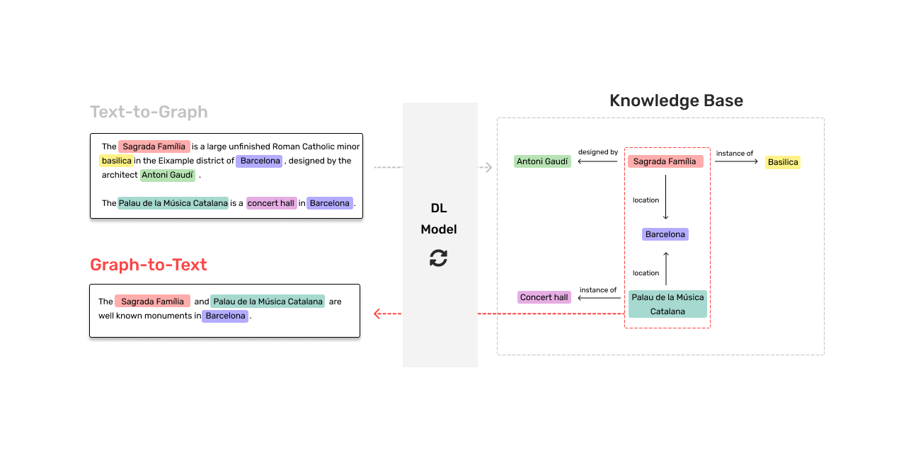 | ### Caption 1
Precision:
- Accurate Points:
- The image indeed features a graphic representation of concepts.
- There is a blending of text and graph elements.
- Arrows are connecting various segments.
- Words are included to provide context.
- Inaccuracies/Overgeneralizations:
- Mentions "shades of grays and purples," which is less accurate as the image predominantly uses colors like red, green, violet, yellow, and blue.
- Describes a "central blue and purple symbol," but the image does not have a standout central symbol of those colors.
- Uses terms like "visual representation of knowledge and learning" which are more interpretive rather than describing concrete elements.
Recall:
- Included Elements:
- Graphic representation of concepts.
- Blending of text and graph.
- Arrows to indicate connections.
- Missing Elements:
- Specific sections such as "Text-to-Graph," "Graph-to-Text," and "Knowledge Base."
- Detailed context of how graph data transforms into text.
- Colors used such as red and green to highlight different nodes and links.
### Caption 2
Precision:
- Accurate Points:
- The background color is correctly identified as white.
- Description of a diagram displayed on the background.
- The separation into three sections: "Graph Base," "Knowledge Base," and "Text-to-Graph."
- References to arrows indicating the flow of information.
- Inaccuracies/Overgeneralizations:
- Mistaking "Graph Base" and "Text-to-Graph" locations (left), which is incorrect -- they're on top and bottom left, respectively.
- Omits colors and labels used in the image (e.g., the specific colors like red, green, violet, etc.).
Recall:
- Included Elements:
- White background.
- Sections of the diagram.
- Arrows for information flow.
- Missing Elements:
- Detailed content within each section.
- The role of colors and labels used to illustrate.
- Specific examples shown, such as "Sagrada Familia," "Palau de la Música Catalana," roles like "designed by," etc.
### Evaluations:
#### Precision:
- Caption 1:
- Somewhat specific but includes some inaccuracies, especially concerning colors and central elements.
- Less focused on detailed components of the diagram.
- Caption 2:
- More accurately captures the sectioning and flow but misses out on precise details and exact section names.
- Slight mistake in what is left and right.
#### Recall:
- Caption 1:
- High-level interpretation but misses specific diagram details and section names.
- Caption 2:
- Good coverage of sections and flow of information; however, lacks details about the specific nodes and context the diagram pieces represent.
Therefore, the first caption offers accurate high-level descriptions but lacks the specificity that would make the explanation truly informative about the diagram's specific components. The second caption provides a clearer structural overview but still misses out on some detailed content and mislabels section locations. Overall, Caption 2 is more precise and has better recall for the structural elements, despite smaller inaccuracies. | ### Caption 1 Evaluation
Precision:
- The caption accurately mentions a white background, graph-to-text diagram, and division into three sections: Graph Base, Knowledge Base, and Text-to-Graph. It also correctly identifies the flow of information via arrows.
- The section labeled "Graph Base" in the caption should correctly be "Graph-to-Text" as indicated on the image, and "Text-to-Graph" should appear under "Text-to-Graph".
- Colors (e.g., red arrows, blue, and purple labels) or the presence of specific entities like Sagrada Familia, Palau de la Música Catalana, Barcelona, etc., are implied rather than explicitly mentioned.
Recall:
- The caption covers the primary components but misses some specific details such as the entities (Sagrada Familia, Antoni Gaudí, etc.) and their relationships (designed by, instance of, etc.).
- It does not mention the Deep Learning (DL) Model in the middle, which is a crucial component of the process depicted.
### Caption 2 Evaluation
Precision:
- The caption does a decent job at a high level by indicating it’s a graphic representation of concepts blending text and graph elements.
- However, it misinterprets some aspects, like suggesting a "central blue and purple symbol," which is not present. It mentions gray shades which are not relevant.
- It does not correctly identify distinct sections like Graph-to-Text, Text-to-Graph, and Knowledge Base, which leads to a less accurate portrayal.
Recall:
- The caption misses critical elements like specific entities and relationships that are essential to the diagram.
- It does not mention arrows indicating the flow of information or the central role of the DL Model.
- Lacks the mention of colors associated with various parts of the diagram.
### Comparison:
Precision:
- Caption 1: Higher precision since it correctly identifies structural aspects and the process flow within the image.
- Caption 2: Lower precision due to misinterpretation of graphic elements and failure to accurately describe structural components.
Recall:
- Caption 1: Higher recall because it covers major sections and flow but misses specific entities and color-coding details.
- Caption 2: Lower recall as it does not mention crucial elements like specific sections, entities, relationships, or the DL Model.
Conclusion:
Caption 1 is more accurate and comprehensive in describing the image compared to Caption 2. While Caption 1 could still be enhanced by including specific details, Caption 2 fails to capture the essence and complexity of the diagram effectively. | The image features a graphic representation of concepts, with text and different shades of grays and purples. The design blends seamlessly between text and graph elements, providing a visual explanation of complex ideas.
At the center, there's a diagram with arrows connecting various segments. This central blue and purple symbol stands out and highlights the main focus of the scene. Words are included in this design aspect, providing context to different parts of the graph. Overall, the image is a clear, visual representation of knowledge and learning by presenting information in a creative and engaging way. | 6.0 | 4.0 | 5.0 | 3.0 | 5.00 | 4.00 | 4.44 |  | The image features a white background with a graph-to-text diagram displayed on it. The diagram is divided into three sections: Graph Base, Knowledge Base, and Text-to-Graph. The Graph Base section is on the left side of the image, while the Knowledge Base is in the middle, and the Text-to-Graph section is on the right side.
There are several arrows connecting the different sections of the diagram, indicating the flow of information between them. The arrows are of various sizes and orientations, highlighting the relationships between the different components of the diagram. Overall, the image provides a visual representation of the process of transforming graph data into text and vice versa. | 6.0 | 7.0 | 1.0 | 7.0 | 6.50 | 4.00 | 4.95 |  |
 | ### Caption 1
Precision:
- Positive:
- Identifies that the image is a graph showing students' favorite subjects.
- Correctly mentions the subjects (math, reading, science, and social studies).
- Accurately describes the use of colored pencils to represent data.
- Mentions the pink and red stripes on the border.
- Negative:
- States that there are three sets of colors on the graph, which is incorrect since there are more.
- Describes pencils varying in size, which is inaccurate as all pencils are the same size.
- The phrase "tied to the graph" could be confusing and is not precise.
Recall:
- Positive:
- Captures the main elements such as the favorite subjects and the use of colored pencils.
- Includes the visually engaging style and the red and pink background elements.
- Negative:
- Omits the specific number of pencils representing each subject.
- Does not mention the exact color of the pencils (red, yellow, green, blue).
- Does not indicate the label equating one pencil to '2 students'.
### Caption 2
Precision:
- Negative:
- Incorrectly states that the border is pink and white when it is pink and red.
- Incorrectly includes "writing" as a subject, which is not in the image.
- False detail about books being scattered throughout the graph.
- Inaccurate description of some pencils being placed vertically.
Recall:
- Positive:
- Mentions the picture graph and identifies it as being colorful.
- Includes most of the subjects listed (except adds an incorrect one).
- Lists several colors of the pencils correctly (yellow, green, blue, red).
- Negative:
- Fails to accurately capture that the graph shows the favorite subjects of students.
- Omits the specific arrangement and equal size of pencils.
- The reference to books being scattered is incorrect and does not belong.
- Doesn't mention the key detail that each pencil represents "≥2 students".
### Overall Evaluation
Caption 1:
- Precision: Moderate. While generally accurate, it includes some inaccuracies about the specific number of color sets and the size variation of pencils.
- Recall: Good. Captures the main theme and visual aspects well but misses specifics like colors and the label meaning.
Caption 2:
- Precision: Poor. Contains multiple inaccuracies and includes details not present in the image.
- Recall: Moderate. Captures the primary visual idea (picture graph with colored pencils) better but includes incorrect subjects and layout descriptions.
So, Caption 1 is better overall due to its more accurate depiction of what is actually in the image, even though it has some imprecision. | Caption 1
- Precision: This caption has several inaccuracies. While it correctly identifies the presence of a picture graph, subjects (Math, Reading, Science, Social Studies), and colored pencils, it includes several elements not present in the image (e.g., writing subject, books scattered, the vertical placement of pencils). The border is also inaccurately described as pink and white striped (it’s red and white).
- Recall: The caption does mention the core components like the subjects and colored pencils. However, it captures less of the visual attributes correctly and introduces multiple inaccuracies.
Caption 2
- Precision: This caption more accurately describes the border (red and pink stripes) and provides a correct summary of the graph content (favorite subjects are math, reading, science, and social studies). The statement about pencils representing different subjects is correct, although the mention of “three sets of colors” is confusing (there are four colors associated with different numbers of students).
- Recall: The caption does a decent job of summarizing what is on the image, including the subjects and color-coded pencils. It also mentions the background and aesthetic, though not as detailed as the first caption, it sticks more closely to what is actually depicted.
Precision Comparison:
Caption 2 is more precise. It accurately mentions the major components without adding incorrect elements (no mention of fictional books or subjects).
Recall Comparison:
Caption 2 also performs better in terms of recall since it captures the main components of the graph (subjects and pencils), and does not introduce incorrect information, making it more reliable.
Overall, Caption 2 provides a better balance of precision and recall. It avoids the inaccuracies found in Caption 1 and correctly represents the elements present in the image. | The image features a colorful graph with pink and red stripes on the side. This graph shows the favorite subjects of several students, including their preferences for math, reading, science, and social studies. Different colored pencils are tied to the graph, with each pencil representing a different class or subject.
There are three sets of colors on the graph, and the pencils vary in size and position. The collection of pencils and the vibrant red and pink background create an attractive and visually engaging display. | 7.0 | 7.0 | 8.0 | 1.0 | 7.00 | 4.50 | 5.48 |  | The image features a pink and white striped border with a picture graph displaying various subjects, such as math, reading, science, social studies, and writing. There are multiple pencils of different colors, including yellow, green, blue, and red, representing the different subjects. The pencils are arranged in a visually appealing manner, with some placed horizontally and others vertically.
In addition to the pencils, there are several books scattered throughout the picture graph, further emphasizing the educational theme. The books come in various sizes and colors, adding to the overall aesthetic of the image. | 3.0 | 4.0 | 1.0 | 3.0 | 3.50 | 2.00 | 2.55 |  |
 | ### Caption 1 Evaluation
Precision:
- Graphical Representations and Concepts:
- The image does indeed feature graphical representations of concepts.
- Focus on Network Connections:
- The main part of the image is a network graph, indicating various connections.
- Neurons and Connected Network:
- There isn't any explicit reference to neurons, but the network could be interpreted similarly.
- Small Graphs in the Background:
- This part is not accurate. The image does not contain smaller graphs in the background, just the main network connections.
- Dense and Sparse Connections:
- The network does show varying sizes of nodes and connections, suggesting a range of connectivity densities.
- Intricate Interplay:
- This is more of an interpretive detail and can be seen as accurate.
Recall:
- The caption covers most elements of the image, especially the network connections and the concept of different densities in the network.
- It misses mentioning the document icons and the colorful brain-like graphic above the center arrow.
Evaluation:
- Precision: 4/5
- The caption mostly aligns with the image but inaccurately mentions smaller graphs in the background, and neurons.
- Recall: 3/5
- It captures the primary essence of the network connections and their density but omits significant details like the document icons and the colorful brain-like graphic.
### Caption 2 Evaluation
Precision:
- Black and White Diagram:
- The image is not black and white; it has colors.
- Data Storage and Retrieval:
- This is a basic misinterpretation. The image does not primarily depict data storage/retrieval.
- Computer File Represented by Book Icon:
- There are file icons but not specifically a book icon.
- Database Connection Through Arrows:
- The diagram does have arrows, but it's not connecting to a database; it's more complex with network connections.
- Smaller Book Icons:
- No smaller book icons, only document icons.
- Interconnectedness of Data Storage:
- The interconnectedness in the image is more about network connections than specific data storage.
Recall:
- The caption fails to capture the primary essence of the image, which revolves around network connections and visual representation of interconnected nodes.
- It misses key elements like the larger network graph, varying node sizes, document icons, and the colorful brain-like structure above the center.
Evaluation:
- Precision: 1/5
- Most parts of the caption do not align with the image.
- Recall: 1/5
- The caption misses the core representation and elements of the image.
In summary:
- Caption 1 is reasonably accurate but not entirely precise or comprehensive.
- Caption 2 inaccurately describes the image and misses essential elements almost entirely. | ### Caption 1 Evaluation:
Precision:
- The caption mentions a "black and white diagram," which is incorrect; the image uses colors (e.g., blue, orange).
- The image depicts a process involving documents and a network, not book icons or a database.
- The caption mentions small book icons and additional files, which are not present in the image.
Precision Rating: Low
- The discussion of book icons and a database is incorrect representation.
- The description of data flow arrows is only partially accurate, but it misinterprets some visual elements (e.g., neural networks or interconnected nodes).
Recall:
- The caption misses key features, such as neurons/networks and colored dots interconnecting them.
- There's no mention of the visual elements like the colorful brain-like graphic and interconnected nodes, which are central to the image.
Recall Rating: Low
- Significant elements of the image, such as the connected network diagram and colored dots, are not captured.
### Caption 2 Evaluation:
Precision:
- Mentions the graphical representation of "network connections," which aligns with the image.
- Correctly focuses on "neurons" and a "complex connected network," describing the main visual component.
- Accurately notes densely and sparsely connected regions within the network.
Precision Rating: High
- Most elements mentioned are accurate, such as the network of connections and the focus on neurons.
Recall:
- The caption covers significant aspects of the image but misses the document-like icons on the left and the colorful brain-like graphic.
- The flow indicated by arrows from documents to the network isn't described.
Recall Rating: Moderate
- Captures the essence of the network and its connections but misses details about the documents and arrows showing data flow.
### Summary
- Caption 1 has low precision and recall. It introduces incorrect elements (book icons, black and white diagram) and omits critical details (network connections, brain-like graphic).
- Caption 2 has high precision and moderate recall. It accurately describes the connected network but overlooks the document icons and specific directional arrows. | The image features a graphical representation of various concepts, with the main focus on network connections. The large graph displays different connections between multiple neurons, indicating a complex connected network.
In addition to the large graph, there are also smaller graphs amidst the background, further emphasizing the interconnectedness of the various concepts. The entire image is primarily made up of network diagrams connecting dense, densely connected clusters with sparse, lightly connected regions. The detailed connection system showcases intricate interplay among these networks. | 6.0 | 8.0 | 5.0 | 6.0 | 7.00 | 5.50 | 6.16 |  | The image is a black and white diagram illustrating the process of data storage and retrieval. The main focus is on a computer file, represented by a book icon, which is connected to a database through a series of arrows. The arrows indicate the flow of data between the file and the database.
In addition to the main book icon, there are several other smaller book icons scattered throughout the diagram, possibly representing other files or data sources. These smaller icons are also connected to the main book icon and the database, further emphasizing the interconnectedness of the data storage and retrieval process. | 1.0 | 2.0 | 1.0 | 1.0 | 1.50 | 1.00 | 1.20 |  |
| 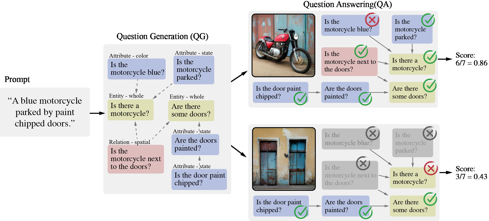 | ### Evaluation of Captions
#### Caption 1
Precision:
- Errors:
- Describes a “story” and “stages of the narrative,” which is incorrect. The image does not contain a story or narrative progression.
- Mentions an “interactive game or story app,” which is not relevant.
- Correct:
- Identifies the presence of a flowchart with boxes and arrows.
Recall:
- Errors:
- Fails to mention the specific theme about motorcycles.
- Misses the detailed questions related to the motorcycle and doors.
- Does not describe the images of the red motorcycle and the doors in the flowchart.
- Correct:
- Captures the fact that the flowchart is used to analyze something.
Precision Score: 2/5 - Captures the presence of a flowchart but incorrectly describes it as a story/narrative app and does not mention the specific details.
Recall Score: 2/5 - Misses most critical details including the analysis theme related to motorcycles and doors, and the presence of images.
#### Caption 2
Precision:
- Errors:
- Incorrectly states the starting question as "What is a motorcycle?" and other unrelated questions about the types of motorcycles.
- Does not match the actual Q&A flowchart.
- Correct:
- Identifies the flowchart and mentions its connection to motorcycles.
- Notes the image of the motorcycle.
Recall:
- Errors:
- Fails to mention the presence of doors and the connection questions related to them (e.g., paint chipped doors).
- Omits the fact that the flowchart checks attributes like color and state.
- Misses the scoring mechanism shown.
- Correct:
- Includes that the flowchart is motorcycle-related and that there are specific questions and answers.
Precision Score: 3/5 - Includes some correct elements such as the theme related to motorcycles and the presence of the motorcycle image but contains inaccuracies.
Recall Score: 3/5 - Captures the flowchart’s general theme but misses other relevant details like the doors, specific Q&A, and scoring mechanism.
### Summary
- Caption 1 has low precision and recall due to major inaccuracies about the content and purpose of the flowchart.
- Caption 2 has slightly better precision and recall due to some correct identification of the motorcycle theme and presence of the motorcycle image, but still misses critical details.
Overall, Caption 2 is more accurate but still requires significant improvements to fully and correctly describe the image. | Caption 1:
Precision:
- This caption inaccurately identifies the content of the image.
- While it correctly identifies the presence of questions and answers about motorcycles, it does not capture the flowchart's purpose of generating and answering questions based on a prompt.
- The description about questions like "What is a blue motorcycle?" and "What is a motorcycle with a sidecar?" is incorrect; the image does not contain these questions.
- The mention of a red motorcycle being prominently featured in front of a building is accurate.
Recall:
- The caption misses significant details present in the image. It fails to mention the specific questions used to verify details about the motorcycle and the doors, the correct and incorrect markers provided with these answers, and the calculation of accuracy scores.
- The caption does not reference the visual checks and incorrect answers marked in the flowchart boxes, which are crucial elements of the image.
- It also misses mentioning the second image in the flowchart which lacks a motorcycle, leading to lower accuracy.
*Evaluation of Caption 1:*
- Precision: Low
- Accurate identification of questions and answers about motorcycles: Yes
- Correctly mentions a red motorcycle: Yes
- Incorrectly describes questions and flowchart structure: Yes
- Recall: Low
- Omits details about specific question-answer validation: Yes
- Does not describe accuracy scores: Yes
- Leaves out mention of images and visual checks: Yes
Caption 2:
Precision:
- This caption generally misrepresents the image content.
- The overall concept of a flowchart-style diagram is correct, but it inaccurately represents its purpose as narrating a story or interactive game.
- There are no mentions of motorcycles, questions, or answers relevant to the actual image.
Recall:
- This caption misses almost all the specific elements present in the image.
- It does not mention the presence of motorcycles, questions generated from a prompt, correct/incorrect markers, or accuracy scoring.
- The caption does encapsulate the visual structure of boxes and arrows connecting stages, albeit inaccurately in context.
*Evaluation of Caption 2:*
- Precision: Low
- General flowchart structure is recognized: Yes
- Incorrectly describes purpose as narrative or interactive game: Yes
- Recall: Very Low
- Omits specific details related to motorcycles: Yes
- Does not describe questions and answers validation: Yes
- Fails to reference accuracy scores and visual checks: Yes
Comparison & Conclusion:
- Both captions show low precision and recall.
- Caption 1 has slightly better precision since it correctly identifies the topic concerning motorcycles, despite the errors in the description of the questions.
- Caption 2 captures the flowchart structure but completely misinterprets its purpose and specifics, leading to lower recall and precision compared to Caption 1.
Overall:
- Caption 1 has low precision and low recall but is slightly more aligned with the actual content than Caption 2.
- Caption 2 demonstrates very low precision and recall due to misinterpreting the entire purpose of the diagram and missing key elements completely. | The image features a flowchart-style diagram that visually represents various steps of a story. The flowchart is quite complex with multiple connected boxes, arrows, and analysis points to indicate the different stages of the narrative. It appears to be a program or algorithm of a story, possibly an interactive game or story app.
In the diagram, there is a succession of boxes or nodes with the first one placed above the rest. The boxes display text that might describe specific points or decisions made in the story. Numerous arrows plug these boxes together, indicating the transitions and connections between the various stages of the story. Overall, the flowchart gives a clear depiction of the intricate structure and sequence of the narrative. | 3.0 | 3.0 | 2.0 | 2.0 | 3.00 | 2.00 | 2.40 |  | The image features a flowchart with a series of questions and answers related to motorcycles. The flowchart starts with the question "What is a motorcycle?", followed by several other questions about motorcycles, such as "What is a blue motorcycle?", "What is a chopped motorcycle?", and "What is a motorcycle with a sidecar?". Each question is connected to its corresponding answer through arrows.
In addition to the flowchart, there is a picture of a red motorcycle parked in front of a building. The motorcycle occupies a significant portion of the image, stretching from the left to the right side of the scene. | 4.0 | 3.0 | 3.0 | 3.0 | 3.50 | 3.00 | 3.23 |  |
 | Evaluation of Caption 1:
Precision:
- Strengths: Caption 1 correctly mentions that the image contains information related to statistics about Australian universities and the topic’s focus is on engineering students.
- Weaknesses: The description includes inaccuracies such as mentioning biographical reports, income, and population statistics, which are not present in the image. Also, the phrase "highlighted by green text" does not accurately reflect the use of multiple highlight colors in the image.
Recall:
- Strengths: The caption covers the general context, involving educational content and statistical analysis.
- Weaknesses: It misses specific details within the image such as the bar chart illustrating the number of male and female students over specific years, the trend analysis, and the "Top Tips for writing" section.
Evaluation of Caption 2:
Precision:
- Strengths: Caption 2 accurately identifies the image as a textbook or study guide page that discusses the numbers of men and women studying engineering at Australian universities. It correctly mentions the existence of graphs.
- Weaknesses: The caption incorrectly states that there are two graphs (one on the left and one on the right) and mentions comparison of graduates, which does not exist in the image. There is no right-side graph focused on graduates, only a single bar chart.
Recall:
- Strengths: Includes relevant details such as the focus on male and female engineering students and the inclusion of writing tips.
- Weaknesses: Fails to mention the specific years (1992, 2002, and 2012) covered in the chart, key statistical data, highlighted analysis summary, and specific conclusions about trends. It also incorrectly includes the element of a second graph.
Overall Comparison:
Caption 1:
- Precision: Moderate
- Recall: Low to Moderate
Caption 2:
- Precision: Moderate (explicit about study guide but with inaccurate details on graphs)
- Recall: Moderate (mentions focus areas but misses specifics and trends)
Overall, Caption 2 provides a better context of the image but contains inaccuracies on the number and nature of graphs, whereas Caption 1 had more general inaccuracies and missing details. For utmost clarity in academic use, more precise and comprehensive detail, correcting the errors identified, should be included. | ### Evaluation of Captions
#### Caption 1:
Precision: The first caption provides accurate descriptions that align with the elements shown in the image. It mentions the bar chart, which correctly represents the number of men and women studying engineering at Australian universities over the years 1992, 2002, and 2012. It also mentions the highlighted text and tips for writing.
- Strengths:
- Correct identification of the bar chart showing the number of male and female engineering students.
- Accurately mentions highlighted text and writing tips at the bottom.
- Weaknesses:
- Includes incorrect information about the presence of another graph on the right side, which doesn't exist.
- Incorrectly states that the textbook or study guide is well-organized when the clarity of such an assessment depends on personal perception.
Recall: The caption successfully recalls critical components from the image, including the exam question, bar chart, the summary of the chart data, and the writing tips.
- Strengths:
- Correctly describes all key elements present in the image.
- Weaknesses:
- Excludes any mention of the Exam Question header.
#### Caption 2:
Precision: The second caption lacks accuracy in describing the image. It incorrectly identifies the content and context, mentioning extraneous elements not present in the image, such as income, population, number of engineers, or an image of Australians.
- Strengths:
- Recognizes the presence of highlighted key phrases.
- Weaknesses:
- Incorrectly refers to biographical and statistical content about Australians, which is not present.
- Incorrectly states that it is a report, which is not accurate for the provided exam question and bar chart.
Recall: The second caption omits crucial elements from the image and includes irrelevant information that doesn't correspond to the visible content.
- Strengths:
- Correctly notes the highlighted key phrases.
- Weaknesses:
- Does not mention the exam question, bar chart, summary of the data, or the writing tips.
- Adds misleading details about income, population, and number of engineers.
### Conclusion:
- Caption 1 is closer to the actual content with higher precision due to mostly accurate descriptions of the major elements in the image, though it erroneously describes a nonexistent graph. It also has higher recall, capturing most of the important features present.
- Caption 2 has both low precision and recall, as it introduces entirely unrelated and incorrect information about biographical statistics and misses predominantly accurate and relevant details from the image.
In sum, Caption 1 provides a better description of the image despite the minor inaccuracies. | This image is a cross-section of an educational content display in a classroom or similar setting. The image features a biographical report on the statistics of Australians with a picture, including important figures such as income, population, and number of engineers.
A portion of the report has been highlighted by green text that includes key phrases, making it easy for students to identify important information. Additionally, the text boxes beneath the picture are excerpted from a textbook, which contain essential information in a clear and concise format.
This type of display encourages the students to read and comprehend the content by focusing on specific keywords and phrases, ultimately improving their understanding and retention of key concepts. | 4.0 | 4.0 | 3.0 | 2.0 | 4.00 | 2.50 | 3.08 |  | The image features a page from a textbook or study guide, focusing on the topic of men and women studying engineering at Australian universities. There are two graphs displayed on the page, one on the left side and the other on the right side. The left graph shows the number of male and female engineering students, while the right graph compares the number of male and female engineering graduates.
In addition to the graphs, there is a list of tips for writing on the bottom of the page. These tips are highlighted in different colors, making them stand out from the rest of the text. The textbook or study guide appears to be well-organized and informative, providing valuable information on the topic at hand. | 5.0 | 7.0 | 1.0 | 8.0 | 6.00 | 4.50 | 5.14 |  |
 | ### Caption 1: Evaluation
#### Precision:
Strengths:
- Mentions the presence of a graph and annotations related to event detection with conditional random fields.
- Identifies that the image includes a comparison between HMM models and CRF models using the SemEval benchmark dataset.
Weaknesses:
- Incorrectly states "complex tree diagram," but the image doesn't include a tree diagram.
- Incorrect mention of "SemEval2010 Task 1" instead of "SemEval 2010 Task 11."
Overall, Caption 1 has some accurate descriptions but also contains inaccuracies. Precision is moderate.
#### Recall:
Strengths:
- Captures the presence of key elements such as the graph, performance comparison, and event detection.
Weaknesses:
- Does not mention specific components like the relationships (e.g., "used-for," "evaluate-for," "comparison") and graphical elements explicitly shown.
Caption 1 provides a general overview but misses some details present in the image. Recall is moderate.
### Caption 2: Evaluation
#### Precision:
Strengths:
- Identifies the title "Event Detection with Conditional Random Fields."
- Mentions the graphical representation and structuring of the model.
Weaknesses:
- Incorrectly describes the graphical representation as a "tree structure."
- Incorrectly states "Evaluate for Semval 2010 Task 1" instead of "SemEval 2010 Task 11."
- No mention of specific annotations or relationships like "used-for," "evaluate-for," etc.
Caption 2 has several inaccuracies regarding the graph and labels. Precision is low to moderate.
#### Recall:
Strengths:
- Captures the focus on event detection with conditional random fields.
Weaknesses:
- Omits many present elements like the CRF model, HMM models, and specific relationships and labels.
Caption 2 fails to capture many components depicted within the image. Recall is low.
### Conclusion:
- Caption 1 is more precise and recalls more elements compared to Caption 2.
- Caption 2 significantly lacks precision due to the incorrect description of the graph as a "tree structure" and the wrong task identifier.
For a better caption, it should accurately describe the relationships and clearly distinguish the correct labels and elements depicted without making incorrect assumptions about structures like tree diagrams.
In summary:
- Caption 1: Moderate precision, moderate recall.
- Caption 2: Low to moderate precision, low recall. | ### Caption 1:
Precision:
- The caption inaccurately describes the image as a tree structure, while it is a graphical representation of relationships between several entities connected by arrows.
- The details about branches labeled "Crf Model for Event Detection" and "Evaluate for Semval 2010 Task 1" are incorrect.
- The mention of circles in the top left and top right corners is incorrect, as the circles in the image represent nodes connected by arrows to illustrate relationships.
- The image includes specific evaluations and comparisons such as "Our Model outperforms HMM models by 15%", which are not mentioned in this caption.
Precision Score: 2/10
Recall:
- The caption fails to mention many important elements such as the details in the abstract section, the nodes, arrows denoting relationships, and specific concepts discussed such as "used-for" or "comparison".
- It does not address the graph on the right side with relationships between CRF Model, Event Detection, HMM Models, and SemEval 2010 Task 11.
Recall Score: 2/10
### Caption 2:
Precision:
- The caption correctly identifies the image as a complex diagram focused on event detection with conditional random fields.
- It correctly mentions a graph and performance comparison between HMM and CRF models.
- The mention of SemEval benchmark dataset aligns with the labels seen in the image.
- However, it inaccurately describes the image as a tree diagram, and the performance metrics and methodologies are generalized without mentioning specifics like the 15% improvement.
Precision Score: 5/10
Recall:
- The caption captures several elements present in the image, such as the focus on event detection with CRF, comparison with HMM models, and evaluation using the SemEval dataset.
- It fails to mention specific details like the abstract and graph labels such as "used-for", "comparison", and specific tasks like "SemEval 2010 Task 11".
- The caption should mention the visual relationships depicted by arrows between CRF Model, Event Detection, HMM Models, and SemEval 2010 Task 11.
Recall Score: 6/10
### Overall Assessment:
Caption 2 has a higher precision and recall score compared to Caption 1. While Caption 2 lacks some detailed elements, it provides a more accurate and comprehensive description of the image than Caption 1. Caption 1 includes inaccuracies and misses several important elements of the image. | The image features a complex tree diagram and graph, accompanied by a detailed analysis of the event detection process with conditional random fields. The graph provides a visual representation of various factors, such as event detection on SemEval2010 Task 1.
In addition, the image shows the performance comparison between HMM (Hidden Markov Model) models and CRF (Conditional Random Field) models using the SemEval benchmark dataset. There are labels and annotations placed next to some of the figures, strategically placed to offer clear insights into the event detection process's performance and methodology. | 6.0 | 5.0 | 7.0 | 6.0 | 5.50 | 6.50 | 5.96 |  | The image features a graphical representation of an event detection model with conditional random fields. The model is depicted as a tree structure, with the title "Event Detection with Conditional Random Fields" at the top of the image.
There are two main branches in the tree, one on the left side and the other on the right side. The left branch is labeled "Crf Model for Event Detection," while the right branch is labeled "Evaluate for Semval 2010 Task 1."
Below the main branches, there are several smaller branches that connect to the main branches, representing different aspects of the event detection model. Additionally, there are two circles in the image, one near the top left corner and the other near the top right corner. | 4.0 | 2.0 | 4.0 | 2.0 | 3.00 | 3.00 | 3.00 |  |
 | ### Caption 1
Precision:
- The caption mentions a circle with blue dots representing a graph, but it inaccurately describes the graph's context and purpose. It also talks about a title and subheading above the graph, which is not correct. Moreover, it incorrectly suggests the purpose of the diagram is related to voice transformation or code vocabulary.
- Score: 3/10
Recall:
- The caption misses important components such as the Graph Transformer, Attention Layers, Title Encoder, Copy Mechanism, Vocab Softmax, and the overall flow of the model. It provides an incorrect and ambiguous interpretation of the image content.
- Score: 2/10
### Caption 2
Precision:
- This caption more accurately captures the structure and components of the image. It mentions the Graph Transformer, Attention Layers, and Title Encoder correctly connected.
- However, it misses the Copy Mechanism and Vocab Softmax and does not go into enough detail about how these elements interact with each other.
- Score: 8/10
Recall:
- This caption accurately includes many of the main components shown in the diagram but lacks mention of all the smaller elements and their connections, such as the Copy Mechanism, Vocab Softmax, and the role of "h_t".
- Score: 7/10
### Overall Evaluation
- Caption 1 is largely inaccurate and fails to describe the image correctly both in critical details and purpose.
- Caption 2 is far more accurate, including most major components and their relationships, but lacks mention of all components and their interactions.
### Recommendation:
Caption 2 is considerably closer in accurately describing the image, with a better balance of precision and recall. Caption 1 should be discarded due to its significant inaccuracies and misleading information. | ### Evaluation of Captions
#### Caption 1:
Precision: High
- The caption describes the main components and connections visible in the diagram accurately. It mentions key terms such as "graph writer model overview," "graph transformer," "attention layers," and "title encoder," which are indeed present in the image.
- The inclusion of additional elements like "graph," "vocabulary," and "softmax" aligns well with what is in the diagram.
Recall: Moderate
- While the caption accurately describes the main components and their connections, it misses the dynamic nature depicted (e.g., arrows indicating direction of data flow).
- There is no mention of certain elements like “Copy Mechanism” or specific labels such as "wt-1," "ht," "ct," etc., and their roles which are key to the model's understanding.
#### Caption 2:
Precision: Low
- This caption contains multiple inaccuracies. It describes a circle with blue dots connected by lines and states that a title and subheading are written above the graph, none of which are the key focus of the image.
- The terminologies used such as "voice transformation" and "code vocabulary" are not relevant to the diagram.
Recall: Low
- The caption fails to capture the main components of the diagram effectively. It doesn't mention vital elements like the "Graph Transformer," "Attention Layers," or "Title Encoder," and misses the intricate flow between these components.
- It does not cover other essential aspects shown in the image, such as the "Copy Mechanism" or the data flow represented by arrows.
### Summary:
Caption 1 provides a more accurate description in terms of precision by correctly labeling the main parts and relationships, although it could improve recall by including all the labeled elements and data flow directions. Caption 2, on the other hand, fails to accurately describe both the primary elements and the overall purpose of the diagram, resulting in low precision and recall. | The image features a circle with numerous blue dots scattered around it. These dots are connected by lines, representing a graph in the process of being created. A title and subheading are written above the graph, which is designed by the Graphwriter Model. The purpose of this drawing appears to be to explain a voice transformation or code vocabulary, allowing viewers to understand the underlying concepts and relationships. | 3.0 | 2.0 | 2.0 | 1.0 | 2.50 | 1.50 | 1.88 |  | The image is a diagram illustrating a graph writer model overview. The model is composed of various components, including a graph transformer, attention layers, and a title encoder. The graph transformer is connected to the attention layers, which in turn are connected to the title encoder.
In addition to these main components, there are several smaller elements within the diagram, such as a graph, a vocabulary, and a softmax. These elements work together to create a comprehensive understanding of the graph writer model's structure and functioning. | 8.0 | 9.0 | 7.0 | 7.0 | 8.50 | 7.00 | 7.68 |  |
 | ### Caption 1:
Precision:
- The caption accurately describes that a couple is walking hand in hand, with the bride in a wedding dress and the groom in a suit.
- It correctly identifies that the event appears to be an outdoor wedding with guests seated in chairs.
- The mention of potted plants adding decoration is accurate, albeit it’s more that flower arrangements are present rather than potted plants.
- The caption wrongly points out that there is possibly a ring bearer holding a bouquet, which is not evident in the image.
- The bride is holding a bouquet, which is correctly mentioned in the caption.
Recall:
- The caption captures the key elements: the bride and groom, their attire, the outdoor setting, guests present, and the presence of chairs and decorative elements.
- It includes an incorrect detail about the ring bearer.
- The interaction and joyful mood of the crowd are not specifically highlighted.
- The number of attendees in the image is not numerically specified but observed to be relevant.
- The description misses that the groom and bride are walking down the aisle after completing the ceremony, which appears to be hinted by the guests’ applause.
### Caption 2:
Precision:
- The caption correctly states that the bride is wearing a white dress and the groom is in a suit.
- It is accurate in noting that the couple is the center of attention and guests are clapping and cheering.
- The mention of several chairs placed along the aisle and guests occupying these chairs is spot on.
- The attire is correctly identified.
Recall:
- The caption captures the essence of the scene well, identifying the crucial components such as the bride and groom, their attire, the aisle, the presence of guests, and the cheering.
- It doesn't mention the outdoor setting explicitly but implies a typical wedding environment.
- The decorative floral arrangements aren't highlighted in this caption.
- It estimates the number of guests as ten, which is a bit conservative.
- Additionally, it does not clarify that they are walking after the ceremony, which is inferred by the scene.
### Comparative Evaluation:
Caption 1:
- Precision: High but includes an incorrect element about a ring bearer.
- Recall: Good, incorporates several details of the scene but misses the overall joyous atmosphere of the cheering crowd and the exact configuration of the flowers.
Caption 2:
- Precision: High, with no major factual inaccuracies.
- Recall: Excellent, succinctly includes most critical elements and the emotions of the scene but does not mention the floral arrangements or specify the outdoor setting.
In summary, Caption 1 is rich in detail but slightly inaccurate regarding the ring bearer, while Caption 2 effectively captures the important aspects with higher recall but less detail about decoration. Both have their strengths but Caption 2 edges out for overall recall accuracy. | Caption 1
Precision:
- Correct Identifications: The caption correctly identifies the bride and groom walking down the aisle, with the bride in a white dress and the groom in a suit (though mentioning a tie is incorrect; he is wearing a bow tie). It accurately describes people cheering and clapping, the presence of several people, and empty chairs.
- Incorrect Identifications: The mention of a tie instead of a bow tie is an error.
Recall:
- Elements Covered: The caption captures the main elements of the image, including the bride and groom, their attire, the aisle, cheering guests, and the presence of chairs. It does not mention the beautiful outdoor setting but does well in capturing most significant elements.
- Elements Missed: The floral decorations and detailed descriptions of attire (such as the veil and boutonniere) are not mentioned.
Overall Evaluation for Caption 1:
- Precision: 9/10
- Recall: 8/10
Caption 2
Precision:
- Correct Identifications: This caption correctly describes the couple holding hands and getting married outdoors, their attire, and the group of people present.
- Incorrect Identifications: The mention of a "ring bearer" holding a bouquet is inaccurate, as there is no clear ring bearer in the image, and the bouquets mentioned aside from the bride's own are not apparent.
Recall:
- Elements Covered: The basic components are included, such as the outdoor setting, the couple, friends and family present, and the presence of chairs.
- Elements Missed: It misses the fact that people are clapping and cheering, the empty chairs, and the more specific details like the floral decorations, bridal veil, and boutonniere.
Overall Evaluation for Caption 2:
- Precision: 7/10
- Recall: 7/10
Conclusion and Recommendation:
- Caption 1 is more accurate in describing the image with only a minor mistake regarding the groom's tie versus bow tie. It also captures the joyous atmosphere better.
- Caption 2 makes some assumptions not supported by the image (ring bearer) and lacks some details present in the first caption.
Overall, Caption 1 provides a better balance of precision and recall in describing the image. | In the image, a couple is walking hand in hand and getting married outdoors in front of friends and family. The bride is wearing a wedding dress, while the groom is standing in a suit. They stand in front of a group of people who have come together to celebrate their special day.
Several chairs are positioned throughout the scene, possibly for the guests to sit on during the ceremony. Potted plants are placed around the area, adding a touch of decoration to the atmosphere.
One person stands out in the scene, possibly the ring bearer, holding a bouquet that will likely play a role in the ceremony. The bride is also holding a bouquet, preparing to share the special moment with her new husband and their loved ones. | 8.0 | 7.0 | 7.0 | 7.0 | 7.50 | 7.00 | 7.24 |  | The image captures a beautiful wedding scene where a bride and groom are walking down an aisle, surrounded by a crowd of people. The bride is wearing a white dress, and the groom is dressed in a suit with a tie. They appear to be the center of attention as they make their way down the aisle.
There are several chairs placed along the aisle, some of which are occupied by guests, while others remain empty. The guests are clapping and cheering for the newlyweds, creating a joyful atmosphere. In addition to the bride and groom, there are at least ten other people in the scene, some of whom are standing closer to the couple, while others are further away. | 9.0 | 9.0 | 8.0 | 8.0 | 9.00 | 8.00 | 8.47 |  |
 | Caption 1:
Precision:
- The caption mentions "children playing outdoors," which is not clearly indicated in the image as only one child is visible. This adds unnecessary information.
- The girl is described as "dressed in all white," which is partially correct since she is wearing a white top, but the entire outfit is not visible.
- "A handsful of these brightly colored eggs" is inaccurate as the girl is picking up just one egg.
- The statement about at least seven visible eggs is precise and correct.
- Mentioning "another colorful egg farther away to the right" is a more specific detail that is correct but not the focal point of the image.
Recall:
- The caption accurately identifies that the girl is in a grassy field and interacts with brightly colored eggs.
- The mention of the colorful eggs and their positions helps to recall the scene well.
- The interaction and playful atmosphere described are present in the image.
Overall for Caption 1: Reasonably accurate but contains some superfluous and incorrect details, impacting its precision.
Caption 2:
Precision:
- The caption mentions "a young girl wearing a white dress," which is incorrect; the image shows a girl in a white top.
- It accurately describes the setting as a "grassy field filled with colorful Easter eggs."
- The activity of "reaching down to pick up one of the eggs" is correctly described.
- "Numerous eggs of various sizes and colors" correctly captures the diverse appearance of the eggs.
Recall:
- The caption effectively captures the elements in the image, including the grassy field, colorful eggs, and the girl engaging in the activity of picking up an egg.
- It conveys the festive and outdoor setting.
Overall for Caption 2: It provides a more accurate and concise description of the image, despite the small error with the "white dress" detail.
Comparing Both:
Caption 1:
- Precision: Lower due to the inclusion of extraneous and somewhat inaccurate details.
- Recall: Moderate; it describes the visible key elements but adds unnecessary information.
Caption 2:
- Precision: Higher, with a small but notable error about the girl's attire.
- Recall: High; it covers all key elements and maintains focus on the main activities and objects in the image.
Conclusion:
- Caption 2 is more effective overall due to better precision (fewer inaccuracies) and high recall, capturing the essential elements and ambiance of the image accurately. | Caption 1 Evaluation:
Precision:
- The caption states that the image depicts a young girl wearing a white dress. The image indeed shows a hand in a white long-sleeved outfit, which could be interpreted as a dress or a shirt.
- The caption mentions a grassy field filled with colorful eggs, and the image shows the hand reaching for colorful eggs in grass.
- The description specifies that there are numerous eggs of various sizes and colors, which aligns with the medium-sized multicolored eggs in the image.
- The caption implies a festive atmosphere and that the girl is enjoying her time outdoors collecting eggs. While the image shows the act of collecting, it's hard to infer enjoyment or festive atmosphere explicitly.
Recall:
- The caption captures the key elements: the girl’s attire, the grassy field, the colorful eggs, and the action of picking up an egg.
- It misses minor aspects, like the specific number of visible eggs and the exact details of the environment beyond the eggs and grass.
Overall:
- Caption 1 is very detailed and accurate but includes interpretive elements (like enjoyment and festivity) that can't be precisely confirmed from just the image.
Caption 2 Evaluation:
Precision:
- This caption also describes the girl dressed in white, standing in the grassy field, reaching down to gather eggs. The image shows a similar scene but with a single hand reaching for an egg.
- The description of colorful blown eggs is appropriate, although it mentions her gathering a "handsful" of eggs, while she is actually picking up just one.
- The caption mentions at least seven visible eggs. This is somewhat accurate as there are numerous, though not necessarily seven exactly, visible eggs.
- It notes the positional details of the eggs (closer to her and farther away), which are accurate.
Recall:
- The caption successfully captures the primary components: the girl’s attire, the activity, the colorful eggs scattered about, and their relative positions.
- It does not mention the details of the exact number or sizes of eggs.
Overall:
- Caption 2 is precise in many of its descriptions but slightly incorrect regarding the number of eggs being gathered. It avoids interpretive aspects like enjoyment or festivity.
Comparison:
- Precision: Caption 1 includes interpretative details that are not concretely visible, leading to some assumptions, while Caption 2 remains more fact-based but makes a small error in stating that the girl is gathering a "handsful" of eggs.
- Recall: Both captions cover the essential aspects, but Caption 1 provides a more vivid description of the scene, despite some interpretative elements, while Caption 2 omits fewer implied aspects but makes minor errors in number details.
Overall Assessment:
- Caption 1 is more vivid and descriptive but introduces interpretive details that could be seen as assumptions.
- Caption 2 is more straightforward and factual, with slight inaccuracies in the number of eggs being gathered.
Given the choice between precision and recall, Caption 1 seems to better capture the essence and overall scene, even if it is a bit interpretive. Caption 2, while avoiding interpretation, slightly misrepresents the image regarding the eggs being collected. | The image captures a lively scene of children playing outdoors with colorful blown eggs. The little girl, dressed in all white, is standing in the grassy field, reaching down and gathering a handsful of these brightly colored eggs. She is surrounded by at least seven visible eggs scattered about the area.
Some of the eggs are positioned closer to her, while others are slightly further away. Another colorful egg can be seen farther away from her, towards the right side of the image. The girl's joyful interaction with the eggs creates a playful and engaging atmosphere. | 6.0 | 8.0 | 8.0 | 9.0 | 7.00 | 8.50 | 7.68 |  | The image depicts a young girl wearing a white dress, standing in a grassy field filled with colorful Easter eggs. She is reaching down to pick up one of the eggs from the ground. The field is scattered with numerous eggs of various sizes and colors, creating a vibrant and festive atmosphere. The girl appears to be enjoying her time outdoors, engaging in the fun activity of collecting Easter eggs. | 7.0 | 8.0 | 9.0 | 9.0 | 7.50 | 9.00 | 8.18 |  |
 | ### Caption 1 Analysis
Precision:
- The caption correctly mentions there are three people in the foreground, dressed in Halloween costumes, and it captures the lively and joyous atmosphere.
- It accurately identifies multiple pumpkins in the background, with one prominently featured in the center.
- It also notes the presence of other individuals in the background.
Recall:
- The caption mistakenly states there are "two children and one adult" whereas there is only one child and two adults prominently visible.
- It mentions a backpack and a tie, items that are not clearly discernible in the image.
- There is no mention of any specific costumes, missing details such as the man being dressed as a vampire and one of the women wearing witch’s attire, which are significant parts of the scene.
- The caption does not mention the prominent jack-o'-lantern being held by the people in the foreground.
Evaluation:
- Precision: Medium
- Recall: Low
### Caption 2 Analysis
Precision:
- The caption precisely notes that one man, one woman, and one child are seen in the foreground and all are dressed for Halloween.
- It correctly identifies the costumes: the man's vampire costume and the children's witch costumes.
- Mentions the central pumpkin appropriately.
Recall:
- There are some inaccuracies, such as the presence of a dining table with chairs, potted plants, and a cell phone, which are not visible in the image.
- The caption doesn't refer to the additional background people, nor does it address the vibrant lighting or decorations that enhance the festive mood.
- The caption doesn't acknowledge the details such as the expressions and actions (i.e., the playful hand movements).
Evaluation:
- Precision: Low
- Recall: Medium
### Overall Comparison
Precision:
- Caption 1 has a moderate level of precision as it gets the atmosphere and general setup right, but makes some errors regarding specific items and participants (backpack, tie, number of children).
- Caption 2 has low precision due to incorrect details about a dining table, chairs, potted plants, and other items not present in the image.
Recall:
- Caption 1 has low recall because it misses some important details (e.g., costumes specifics, items clearly seen).
- Caption 2 has medium recall as it captures the primary characters and their costumes accurately but misses the description of extra items visible in the background and overall festive attributes (additional people, lighting, overall bustling atmosphere).
### Conclusion
Both captions have room for improvement, but Caption 2 does a better job in terms of correctly identifying the nature of the Halloween activities and costumes despite including details that are not seen in the image. Nonetheless, neither caption fully adequately captures the scene, falling short in some aspects of precision and recall. | Let's evaluate both captions in terms of precision and recall:
### Caption 1:
Precision:
- Accurate Information:
- The image does depict people dressed in costumes for Halloween.
- The man is wearing a vampire costume.
- There are pumpkins visible in the image.
- Inaccurate Information:
- The caption mentions two children, but there is only one visible child in the image.
- It states the children are dressed as witches, but only one child is visible and is dressed up.
- The background elements such as the dining table, chairs, and potted plants are not accurate.
Precision Rating:
Low, due to multiple inaccuracies regarding the description of the individuals and background details.
Recall:
- Included Details:
- Halloween costumes (man as a vampire).
- Presence of pumpkins.
- Missing Details:
- The woman in a witch costume.
- Three additional persons in the background.
- Specific items like the backpack and tie mentioned in Caption 2 are omitted.
Recall Rating:
Medium-Low, as it misses significant details and additional people in the background.
### Caption 2:
Precision:
- Accurate Information:
- The image features three people dressed in costume for Halloween.
- The group is preparing for or enjoying Halloween festivities.
- They are laughing and enjoying themselves.
- There are multiple pumpkins visible.
- The background has people engaged in the party.
- Inaccurate Information:
- Mentions two children, but there is only one visible child.
- The backpack and tie are mentioned but not clearly identifiable.
Precision Rating:
Medium-High, more accurate about the overall scene and costume descriptions but has minor inaccuracies.
Recall:
- Included Details:
- Three people in costumes.
- Halloween theme.
- Visible pumpkins.
- The festive atmosphere.
- Additional people in the background.
Recall Rating:
High, as it captures the main aspects and extra details of the scene quite thoroughly.
### Summary:
- Caption 1:
- Precision: Low
- Recall: Medium-Low
- Caption 2:
- Precision: Medium-High
- Recall: High
Caption 2 provides a more accurate and thorough description of the image, capturing both the main elements and additional details, making it the better caption overall. | The image features a lively social scene with three people dressed in costume as they get ready for a Halloween party. There are two children and one adult wearing stylish and scary attire. They are all laughing and enjoying themselves in the room.
Each of the three people in the room has their hands up, engaged in the festivities. There are also multiple pumpkins, with one of them placed on a surface near the center of the image. A backpack can be seen near the right edge of the image, and there are three additional persons partially visible in the background, probably enjoying the party as well. A tie is also visible, lying on or around someone's clothing. | 5.0 | 7.0 | 3.0 | 8.0 | 6.00 | 5.50 | 5.74 |  | The image depicts a group of people, including a man and two children, dressed up in costumes for Halloween. The man is wearing a vampire costume, while the children are dressed as witches. They are all holding pumpkins, adding to the festive atmosphere of the scene.
In the background, there is a dining table with a couple of chairs placed around it. Additionally, there are two potted plants, one on the left side and the other on the right side of the room. A cell phone can also be seen on the table, possibly used for capturing memories of the Halloween celebration. | 2.0 | 4.0 | 4.0 | 4.0 | 3.00 | 4.00 | 3.43 |  |
| 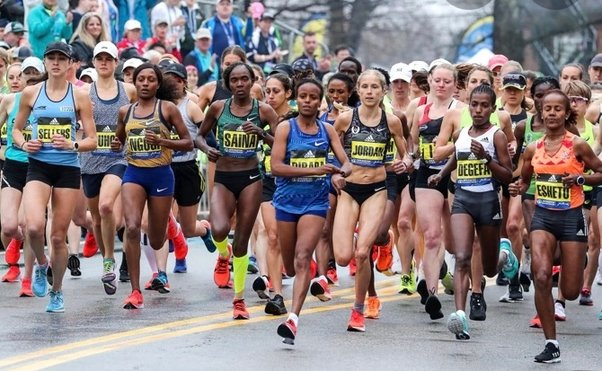 | ### Caption 1
Precision:
- The caption correctly identifies a large group of runners participating in a race.
- It mentions that the runners are on a big street wearing athletic gear.
- The runners showing dedication and the atmosphere being energetic are accurate depictions.
- The idea of "teaming up for a cause" seems speculative and is not evident in the image.
- Incorrectly claims there is a total of 15 people visible when there are clearly more.
Recall:
- The caption omits that all the runners are female.
- It does not mention the presence of spectators in the background.
- The mentioning of rows and formations might be misleading since the runners are just running together in a loose group.
- It fails to capture specific details like some runners having visible numbers or specific branding or gear.
### Caption 2
Precision:
- Accurately identifies a large group of female runners.
- Correctly states they are participating in a marathon and running down a city street.
- The runners in foreground and background description is accurate.
- Incorrectly mentions “many of them wearing matching shirts,” which is not evident.
- Seems to incorrectly infer that some runners are wearing backpacks, which is not visible.
- Correct about the lively and energetic atmosphere and the presence of numerous people.
Recall:
- Successfully mentions all runners are female.
- Includes spectators in the description, which is correct.
- Does not capture specifics like race numbers or branding visible on the runners' outfits.
- Incorrect detail about matching shirts and backpacks, but otherwise covers more aspects of the image.
### Overall Comparison
- Precision: Caption 2 is more precise overall, accurately identifying more aspects (female runners, spectators). Caption 1 makes incorrect speculative comments (about teams and exact number of people).
- Recall: Caption 2 has higher recall as it captures the presence of spectators and correctly mentions the runners being female. Caption 1 misses these details and miscounts the number of runners.
### Conclusion
Caption 2 gives a more complete and accurate depiction of the image despite some incorrect details, while Caption 1 misses key elements and introduces speculative commentary. | ### Caption 1 Evaluation:
Precision:
- Correct Points:
- Group of female runners participating in a marathon.
- Running down a city street.
- Some wearing matching shirts.
- Numerous people in the scene, including runners and spectators.
- Atmosphere is lively and energetic.
- Incorrect or Unverifiable Points:
- Some runners are wearing backpacks. (No backpacks are visible in the image.)
- Matching shirts indicating they are part of a team is not clearly evident from the image.
Precision Score: 7/10
Recall:
- Included Points:
- Group of female runners.
- Running on a city street.
- Lively and energetic atmosphere.
- Numerous runners and spectators.
- Missing Points:
- Number tags and names are visible.
- Detailed athletic gear.
- Organizers and city environment details such as buildings and banners.
- Rainy or cloudy weather conditions are evident, but not mentioned.
Recall Score: 6/10
### Caption 2 Evaluation:
Precision:
- Correct Points:
- Group of runners, possibly in a marathon.
- Running down a big street.
- Runners wearing athletic gear.
- Energetic and festive atmosphere.
- Incorrect or Unverifiable Points:
- 15 people visible in the image. (There are more than 15 people visible.)
- Phrasing "lined up in rows" is somewhat misleading as they seem to be running more in a cluster.
Precision Score: 8/10
Recall:
- Included Points:
- Group of runners.
- Marathon or similar event.
- Running on a big street.
- Wearing athletic gear.
- Energetic and festive atmosphere.
- Missing Points:
- The image shows specific information such as number tags and names.
- The female gender of the runners is not specifically mentioned.
- Detailed observation about the weather (rainy or cloudy).
- Spectators in the background.
Recall Score: 6/10
### Overall Comparison:
- Precision:
- Caption 1 includes incorrect details such as wearing backpacks and matching shirts indicating teams.
- Caption 2 has a higher precision score as it is mostly correct but inaccurately states the number of people and row formation.
Therefore, Caption 2 is more precise.
- Recall:
- Both captions missed some critical details such as the specific mention of female runners, number tags, name tags, and weather conditions.
- Both have equal recall scores as they capture the major elements but miss out on finer details.
Conclusion: Caption 2 describes the image more accurately in terms of precision, despite both captions having the same recall score. | The scene depicts a large group of runners, possibly participating in a marathon or similar event, running down a big street. The runners are lined up in rows, wearing athletic gear and demonstrating their dedication and possibly teaming up for a cause.
There is a total of 15 people visible in the image, some more towards the front and others closer to the back, running in various formations. The atmosphere appears energetic and festive, with athletes using the occasion to bond and create an urban setting to compete in. | 6.0 | 8.0 | 5.0 | 6.0 | 7.00 | 5.50 | 6.16 |  | The image captures a large group of female runners participating in a marathon. They are running down a city street, with many of them wearing matching shirts, indicating that they are part of a team. The runners are spread across the street, with some closer to the foreground and others further in the background.
There are numerous people in the scene, including runners and spectators. Some of the runners are wearing backpacks as they compete in the race. The atmosphere is lively and energetic, showcasing the spirit of the marathon and the determination of the runners. | 7.0 | 7.0 | 8.0 | 6.0 | 7.00 | 7.00 | 7.00 |  |
| ### Caption 1 Evaluation
#### Precision:
- Correct Details:
- Family gathered around.
- Christmas theme with festive attire (antlers mentioned, though not everyone).
- Lively and joyful atmosphere.
- Incorrect Details:
- No cold turkey or mistletoe visible.
- No cell phone visible in the scene.
Precision Score: Low. The caption includes too many incorrect details not present in the image.
#### Recall:
- Covered Elements:
- Family gathered during Christmas.
- Festive attire (antlers mentioned, though not Santa hats).
- People sitting on a couch.
- Joyful atmosphere.
- Missing Elements:
- Santa hats worn by multiple individuals.
- Gifts being exchanged (one person holding a gift).
Recall Score: Moderate. It mentions some major elements but misses certain important details such as Santa hats and gift exchange.
### Caption 2 Evaluation
#### Precision:
- Correct Details:
- Family gathered around a Christmas tree.
- Festive Santa hats.
- One person holding a gift.
- Family sitting on a couch.
- Christmas tree mentioned correctly positioned on the right.
- Joyful holiday atmosphere.
- Incorrect Details:
- The mention that there are five people - the image has six individuals.
Precision Score: High (except for the count of people).
#### Recall:
- Covered Elements:
- Family gathered around during Christmas.
- Festive Santa hats.
- Gift exchange (one person holding a gift).
- Family sitting on a couch.
- Missing Elements:
- Antlers worn by some individuals.
- Exact number of people (Image has six people, not five).
Recall Score: High, though one minor discrepancy with the number of people.
### Summary
- Caption 1 has low precision due to incorrect details about cold turkey, mistletoe, and a cell phone. Its recall is also moderate since it misses key details like Santa hats and the exchange of gifts.
- Caption 2 achieves high precision despite a minor error in counting the number of people. Its recall is also high but can be improved by mentioning the antlers.
Thus, Caption 2 is more accurate overall in describing the image. | ### Caption 1 Evaluation
Precision:
- The caption correctly identifies a family gathered around a Christmas tree and mentions them wearing festive Santa hats.
- The mention of five people: "two adults and three children" is partially correct. The image actually depicts six people: three adults and three children.
- One adult is holding a gift, which is not wrapped but appears to be a sock or knitted item.
- The couch's placement and the tree's presence are accurate.
Recall:
- The caption accurately captures many elements of the scene, including the Christmas tree, the festive hats, the couch, and the holiday atmosphere.
- However, it misses some details like the antlers worn by some people and the exact number of people present.
Precision Rating: 4/5
Recall Rating: 3/5
### Caption 2 Evaluation
Precision:
- The caption correctly identifies a family gathered around a Christmas tree.
- The specific detail about antlers worn by some individuals in addition to Santa hats is correct and adds to the festive attire description.
- However, the mention of "cold turkey and mistletoe" is inaccurate as nothing in the image depicts either cold turkey or mistletoe.
- No cell phone is visible in the scene.
Recall:
- This caption captures some aspects of the scene well, such as the antlers and general festive atmosphere.
- However, it incorrectly mentions items not present in the image (cold turkey, mistletoe, cell phone) and fails to mention that one adult is holding a gift-like item.
- It also does not accurately mention the correct seating arrangement or the total number of individuals present.
Precision Rating: 3/5
Recall Rating: 2/5
### Summary
- Caption 1 is more accurate overall but slightly underreports the number of people and misses the antlers detail. It adds an incorrect detail about a wrapped gift.
- Caption 2 includes a significant number of inaccuracies by mentioning nonexistent items and reporting a somewhat misleading scene of the family arrangements.
### Final Rating:
Caption 1: Precision: 4/5, Recall: 3/5
Caption 2: Precision: 3/5, Recall: 2/5
Caption 1 does a better job of describing the image more accurately. | The image shows a family gathered around their Christmas tree on Christmas morning, surrounded by cold turkey and mistletoe. Several people among the family are wearing antlers as part of their festive attire, creating a lively and joyful atmosphere. Some of the family members are sitting on a couch, while others are standing or sitting around the Christmas tree.
Apart from clothing and festive decorations, there is a cell phone visible in the scene. The family seems to be celebrating the holidays with enthusiasm and togetherness. | 4.0 | 5.0 | 5.0 | 3.0 | 4.50 | 4.00 | 4.24 |  | The image depicts a family gathered around a Christmas tree, all wearing festive Santa hats. There are five people in the scene, including two adults and three children. One of the adults is holding a wrapped gift, likely exchanging it with another family member.
The family members are sitting on a couch, which is positioned in the middle of the room. The Christmas tree is located on the right side of the room, adding to the festive atmosphere. The family appears to be enjoying their time together during the holiday season. | 8.0 | 7.0 | 7.0 | 7.0 | 7.50 | 7.00 | 7.24 |  |
 | ### Caption 1 Evaluation:
Precision:
- "The image features several people standing next to each other on the side of a road.": True, the individuals are indeed standing next to each other on a roadway.
- "Dressed in traditional visual display gear, including striped hats and fans.": Incorrect. They do not wear striped hats, but they do have fans.
- "Participating in a parade or a cultural event.": Likely true, but not explicitly clear from the image alone.
- "Colorful and eye-catching outfits": True, their outfits are colorful.
- "At least five people clearly visible.": True.
- "Some of them wearing kimonos as part of their outfits": Incorrect. The individuals are not wearing traditional kimonos.
- "Colorful head wraps": True.
- "Everyone appears to be enjoying the occasion.": Subjective but reasonable.
- "Dynamic and full of energy": Subjective but reasonable.
Recall:
- Caption 1 captures important elements, like the traditional colorful outfits, the fans, and the joyful atmosphere.
- It misses mentioning the Japanese theme and the fact that the fans have the Japanese flag design.
- It details the incorrect presence of striped hats and kimonos.
Overall Evaluation for Caption 1:
- Precision: Medium (some inaccuracies regarding attire).
- Recall: Medium (misses some details and incorrectly assumes the presence of certain attire).
### Caption 2 Evaluation:
Precision:
- "A lively scene of a group of people dressed in traditional Japanese clothing": True.
- "Dancing down a street": Descriptive, and likely true based on their posture and actions.
- "Holding colorful umbrellas.": Incorrect. They are holding fans, not umbrellas.
- "At least nine people in the scene": There are indeed several people, but difficult to confirm exactly nine.
- "Red and white striped outfits.": Incorrect. The stripes are black and white.
- "The umbrellas come in various sizes and colors.": Incorrect, as there are no umbrellas.
- "Performing their traditional dance": Implied but not explicitly clear from the still image.
- "Showcasing their cultural heritage.": Subjective but reasonable.
Recall:
- It does not mention the fans with the Japanese flag design.
- It fails to highlight the specific details about their costumes correctly (wrong about the striped colors).
- It also incorrectly states the presence of umbrellas.
Overall Evaluation for Caption 2:
- Precision: Low (several inaccuracies regarding objects and colors).
- Recall: Low (major elements like fans instead of umbrellas and incorrect costume colors).
### Summary:
- Caption 1 is more accurate overall but contains inaccuracies regarding specific attire details.
- Caption 2 has more significant inaccuracies in describing objects and colors related to the scene.
Thus, Caption 1 is superior to Caption 2 in both precision and recall despite its errors. | ### Caption 1
Precision:
- This caption accurately describes people dressed in traditional Japanese clothing.
- It mentions the act of dancing down the street, which is correct.
- The outfits are colorful and include the colors red and white.
- However, it inaccurately states that the dancers are holding umbrellas, when in fact, they are holding traditional fans.
Recall:
- It correctly captures the number of people in the scene, noting that there are at least nine.
- It describes the vibrant and colorful nature of the performance.
- Fails to include the symbolic element of the fans with the red circle (similar to the Japanese flag).
### Caption 2
Precision:
- The caption accurately mentions traditional visual display gear.
- It includes details about the fans and colorful head wraps.
- It correctly notes that the individuals are participating in a cultural event or parade.
- However, it inaccurately states individuals are standing next to each other, whereas they are dancing.
Recall:
- Successfully captures the presence of at least five people clearly visible.
- Describes the dynamic and lively atmosphere of the event.
- Captures additional elements like the striped patterns and the distinct focus on the cultural aspect.
### Comparison
Precision:
- Caption 1 is generally correct about the cultural aspect and the nature of the event but makes an error in describing the fans as umbrellas.
- Caption 2 is more precise about the props (fans) and correctly emphasizes the preparatory and enjoyable atmosphere. However, it errs in describing people as standing rather than dancing.
Recall:
- Both captions miss some elements. Caption 1 does not mention the fans accurately, whereas Caption 2 misses the dynamic motion (dancing) of the people.
- Caption 2 is better at capturing the atmosphere and the number of people clearly visible.
### Overall Evaluation
Caption 1: Good in terms of describing the event and outfits but makes a significant error by mentioning umbrellas instead of fans, and misses important symbolic details on the fans.
Caption 2: More detailed and accurate about the props and atmosphere but incorrectly describes the people as standing rather than dancing.
Between the two, Caption 2 provides a slightly more precise and richer description, making a notable improvement in recall; however, it should be corrected to mention the dancing aspect accurately. | The image features several people standing next to each other on the side of a road. These individuals are dressed in traditional visual display gear, including striped hats and fans, which suggests they may be participating in a parade or a cultural event. The colorful and eye-catching outfits give the image a lively atmosphere.
In total, there are at least five people clearly visible, some of them wearing kimonos as part of their outfits, while others showcase colorful head wraps. Everyone appears to be enjoying the occasion and getting ready to participate in the event. The position and appearances of the individuals make the scene feel dynamic and full of energy. | 6.0 | 7.0 | 6.0 | 7.0 | 6.50 | 6.50 | 6.50 |  | The image captures a lively scene of a group of people dressed in traditional Japanese clothing, dancing down a street while holding colorful umbrellas. There are at least nine people in the scene, with some of them wearing red and white striped outfits. The umbrellas come in various sizes and colors, adding a vibrant touch to the performance.
The dancers are spread out along the street, with some closer to the foreground and others further in the background. They appear to be enjoying themselves as they perform their traditional dance, showcasing their cultural heritage. | 3.0 | 7.0 | 3.0 | 8.0 | 5.00 | 5.50 | 5.24 |  |
 | ### Caption 1
Precision:
- Accurate Elements: The children are indeed wearing birthday hats. The scene is festive, and the children are gathered around a dining table. The table is filled with a cake, balloons, and multiple cups.
- Inaccurate Elements: The caption mentions children sitting around the table, which is inaccurate as all the children are standing. It also specifies the placement of cups being primarily near the front, which is not distinctly covered by the image.
Recall:
- Missing Elements: The caption does not mention the cupcakes on the table or that there are forks present. It also misses the mention of orange juice in the cups. Additionally, the specific number of children (five) and the explicit mention of the potted plants’ positions are missing.
### Caption 2
Precision:
- Accurate Elements: The image does show five children wearing birthday hats and smiling for the camera. The table is adorned with a birthday cake and several cups that appear to contain orange juice.
- Inaccurate Elements: The caption does not contain substantial inaccuracies about the image's content.
Recall:
- Missing Elements: The caption misses mentioning the cupcakes, balloons, and the fact that all children are standing, not sitting. It does not note the festive atmosphere in great detail compared to Caption 1.
### Comparison
Precision:
- Caption 1 has slight inaccuracies, especially in mentioning children sitting when they are all standing and giving precise details about cup placement.
- Caption 2 precisely identifies the scene and participants without major inaccuracies, making it more precise than Caption 1.
Recall:
- Caption 1 provides a broad mention of the festive atmosphere and elements like balloons and extra children, making it higher in recall.
- Caption 2 focuses on essentials such as the number of children, hats, and types of items on the table but misses the atmosphere and some specific details like the presence of balloons and cupcakes.
### Conclusion
- Best overall description: Caption 2 is more precise and sufficiently covers the main elements, while Caption 1 has slightly better recall but is less precise due to some inaccuracies. Therefore, Caption 2 is marginally better for a clear and accurate description of the image. | ### Caption 1
Precision:
- The caption correctly identifies that there are five children gathered around a dining table.
- It specifies that they are wearing birthday hats and smiling, which corresponds accurately to the image.
- The presence of a birthday cake and several cups, likely filled with orange juice, is also correctly mentioned.
- The caption also mentions forks on the table, which are present.
- There is a potted plant in the background, which is accurate.
- The mention of the chair near the table is not clearly visible in the image.
Recall:
- The caption misses mentioning that there are also cupcakes on the table.
- The balloons, which are a notable part of the festive decoration, are not mentioned.
- It does not specify the number of candles on the cake.
- The mention of only one potted plant misses that there are multiple plants in the background.
- There's no mention of the variety of vibrant colors on the decoration and table setting.
### Caption 2
Precision:
- The caption accurately mentions children wearing birthday hats and gathering around a dining table.
- It correctly references cake, balloons, and multiple cups on the table.
- The mention of two potted plants in the room is precise.
- The position of the cups primarily near the front of the table is fairly accurate.
Recall:
- The caption incorrectly mentions children both standing by the table and sitting around it, but they are all standing.
- It does not specify the number of children present.
- The presence of cupcakes is not addressed.
- The specific type of drink (orange juice) is not mentioned.
- It does not mention the use of forks or specific items like plates.
- The lively aspect of the children smiling and interacting is absent.
- The little details such as the number of candles on the cake and the general organization of the table could be better highlighted.
### Summary:
Caption 1:
- Precision: High (accurate about five children, birthday hats, cake, cups, forks, and plants)
- Recall: Moderate (misses balloons, cupcakes, number of candles, multiple plants, and the variety of colors)
Caption 2:
- Precision: Moderate (accurate about birthday hats, cake, balloons, two potted plants, cups placement)
- Recall: Moderate to Low (incorrect about children sitting, misses the number of children, cupcakes, type of drinks, forks, and specific interactions)
In conclusion, Caption 1 offers a better precision in describing specific elements and interactions in the image, while Caption 2 provides a more general yet slightly inaccurate portrayal but includes additional elements like balloons and a better description of plant positions. | The image features a festive scene with several children wearing birthday hats and gathering around a dining table. There are children standing by the table, sitting around it, and posing in front of it. The table is filled with cake, balloons, and multiple cups.
Two potted plants can be found in the room, one close to the left side of the table and the other on the right side. The cups are primarily placed near the front of the table, adding to the celebratory atmosphere. Overall, this is an adorable and joyful gathering of children, likely enjoying a birthday party. | 7.0 | 7.0 | 8.0 | 6.0 | 7.00 | 7.00 | 7.00 |  | The image depicts a group of five children gathered around a dining table, celebrating a birthday party. They are all wearing birthday hats and are smiling for the camera. The table is adorned with a birthday cake and several cups, likely filled with orange juice.
In addition to the cake and cups, there are forks placed on the table for the children to enjoy their treats. A potted plant can be seen in the background, adding a touch of greenery to the festive atmosphere. A chair is positioned near the table, ready for someone to sit down and join the celebration. | 9.0 | 9.0 | 7.0 | 6.0 | 9.00 | 6.50 | 7.55 |  |
 | ### Caption 1
Precision:
- The caption correctly identifies the setting as a soccer stadium with numerous fans enthusiastically watching a soccer game. (Correct)
- The atmosphere is energetic, as described. (Correct)
- However, there is no visible man with a timekeeping device, such as a stopwatch, in the bottom right corner. (Incorrect)
- The statement about people from all around the world can't be confirmed or denied from the image alone. (Neutral)
Recall:
- The caption misses some specific details, such as the fireworks in the sky and the team's colors. (Partial)
- Overall, it captures the main elements (stadium, fans, soccer game, energetic atmosphere), but adds an incorrect element with the stopwatch. (Partial)
### Caption 2
Precision:
- The caption accurately describes the large crowd gathered in the stadium, the excitement, and the fact that people are cheering for their favorite team. (Correct)
- It states there are at least 14 people visible, which, while true, is an oddly specific detail for such a large crowd shot and might be misleading in under-representing the crowd size. (Partial)
- There are no visible clocks present anywhere in the stadium, making this part incorrect. (Incorrect)
Recall:
- The caption correctly includes the stadium, the crowd's enthusiasm, and the lively atmosphere. (Correct)
- It misses the fireworks in the sky, which are a notable visual feature. (Partial)
### Comparison
Precision:
- Caption 1: Correctly captures the crowd, atmosphere, and soccer game, but inaccurately includes a man with a stopwatch. (Mostly accurate but with a clear error)
- Caption 2: Correctly captures crowd, atmosphere, and game but states the existence of clocks which aren't present. (Mostly accurate but with a clear error and a potentially misleading count note)
Recall:
- Caption 1: Captures more general elements accurately but misses specific details like the fireworks. (Fairly good recall but with notable oversights)
- Caption 2: Captures general elements but omits significant visual details like the fireworks and adds an inaccurate element about clocks. (Fair recall but with significant omission)
### Conclusion
Both captions are quite similar in their errors and coverage, but Caption 1 is slightly more consistent with the image, despite the error about the man with the stopwatch, and potentially could be seen as more appropriate as it doesn't miscount or misstate the presence of units (clocks) within the frame. The two narrations have good descriptive elements but tweak some added facts erroneously. So both are mostly correct but only partially complete. | Caption 1: Evaluation
Precision:
- The caption correctly describes the large crowd of people in the stadium, the enthusiasm of the spectators, and the excitement of the scene.
- The statement about the stadium being filled with excitement is accurate.
- However, the mention of "at least 14 people visible" is incorrect, as the number of visible people is far greater than 14.
- The reference to "two clocks" is inaccurate, as there are no visible clocks in the image.
Recall:
- The caption captures the general atmosphere of the crowd and their excitement.
- It misses details such as the fireworks in the sky and the clear blue weather.
- The caption does not mention the field, the structure of the stadium roof, or the players on the field.
Overall:
- Precision: Moderate (due to inaccuracies about the number of people and the nonexistent clocks).
- Recall: Moderate (captures some essential elements but misses various details).
Caption 2: Evaluation
Precision:
- The caption accurately describes the packed stadium and enthusiastic spectators.
- It mentions the global representation of fans, which can be inferred but not directly verified from the image alone.
- The claim about a man with a timekeeping device in the bottom right corner is incorrect; there is no such individual visible.
Recall:
- The caption conveys the energetic and lively atmosphere well.
- It omits details like the clear blue sky, fireworks, and the players on the field.
- Does not mention the structural aspects of the stadium.
Overall:
- Precision: Moderate (due to inaccuracies about a person with a timekeeping device and inferred content).
- Recall: Moderate (captures general atmosphere but misses key visual details).
Comparison:
Precision:
- Both captions have similar accuracy issues, such as incorrect specifics (e.g., clocks in Caption 1 and a man with a timekeeping device in Caption 2).
- Caption 1 incorrectly specifies the number of people, which is glaring since the image shows far more than "at least 14".
- Caption 2 includes inferred details, making it less precise.
Recall:
- Both captions capture the general atmosphere but omit different details.
- Caption 1 misses the sky, fireworks, and the stadium roof structure.
- Caption 2 misses the clear blue sky, fireworks, and the stadium's structural description.
Both captions are moderate in terms of accuracy and detail, but they each have unique strengths and shortcomings in different aspects. | The image features a soccer stadium packed with fans from all around the world. Many people are cheering in the bleachers, with their hands in the air, enthusiastically watching a soccer game. It is evident that they are crowded together, enjoying the spectacle and the sporting activity.
A man with a timekeeping device, perhaps a stop watch, can be seen in the bottom right corner of the scene, seemingly focused on monitoring the match's progress. There are numerous individuals scattered across the stadium, creating an energetic and lively atmosphere. | 7.0 | 5.0 | 6.0 | 7.0 | 6.00 | 6.50 | 6.24 |  | The image depicts a large crowd of people gathered in a stadium, enthusiastically watching a soccer game. The stadium is filled with excitement as the spectators cheer for their favorite team. There are at least 14 people visible in the scene, with some standing closer to the foreground and others further back in the stadium.
In addition to the people, there are two clocks present in the stadium, likely indicating the time of the game. The atmosphere is lively, and the crowd appears to be thoroughly enjoying the event. | 6.0 | 5.0 | 7.0 | 5.0 | 5.50 | 6.00 | 5.74 |  |
| 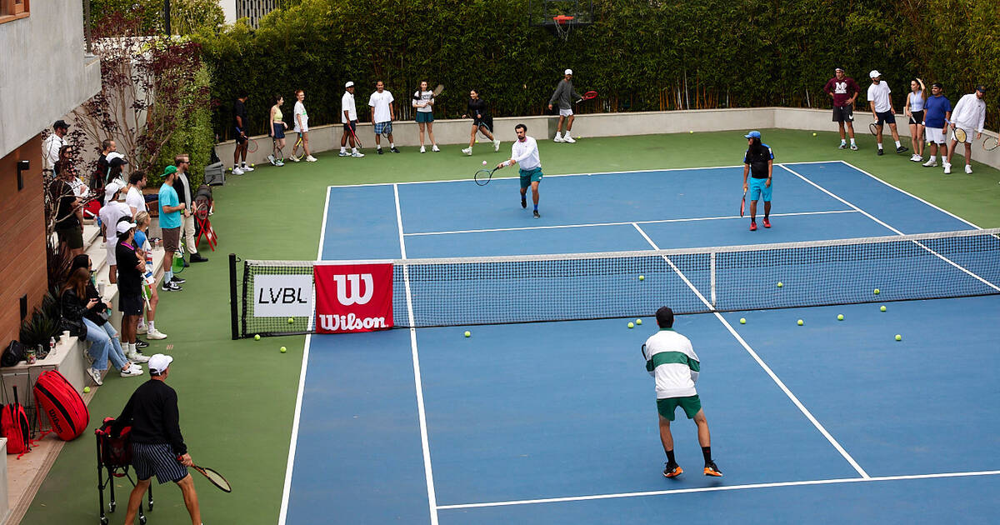 | ### Caption 1 Evaluation
Precision:
- Accurate Elements:
- The image does depict a tennis game on a blue court.
- There are players and spectators observing the game.
- The mention of sports balls scattered across the court is accurate.
- Inaccurate Elements:
- The players are not necessarily holding vintage tennis racquets.
- The description incorrectly states that there are two teams of at least two players each. The image shows a doubles match with two players on each team.
- Description of chairs around the court is not evident in the image.
Recall:
- Included Elements:
- The overall setup of the game, including spectators and scattered balls.
- Excluded Elements:
- It misses mentioning specific items such as the branding on the net ("Wilson" and "LVBL").
- It does not mention the outdoor setting including the surrounding greenery.
- The spectators’ positioning and variety (instead mentions a couple of chairs which are not prominent).
Overall, Caption 1 has discrepancies in accuracy such as the mention of vintage tennis racquets and chair placements, and lacks some details available in the image.
### Caption 2 Evaluation
Precision:
- Accurate Elements:
- Correctly identifies a doubles tennis match with two men engaged in the game.
- Accurately describes spectators watching the match from various positions.
- Correctly identifies scattered sports balls and specifies the presence of two backpacks.
- Accurate overall representation of the energetic atmosphere.
- Inaccurate Elements:
- States there are 13 people in total, but the exact number might be different (appears slightly more than 13).
Recall:
- Included Elements:
- Detailed description of the tennis match and player engagement.
- Inclusion of spectators’ positions and additional items like backpacks.
- Excluded Elements:
- Does not mention branding on the net ("Wilson" and "LVBL").
- Omits outdoor greenery detail.
- Neglects the layout and design details of the court area.
Overall, Caption 2 is more precise in several specifics about the game, spectators, and additional items. It captures the main dynamics of the scene much more accurately compared to Caption 1, although it misses some branding and environmental details.
### Summary
- Precision: Caption 2 is more precise than Caption 1, capturing specifics about the match, spectators, and items accurately with minor miscounts.
- Recall: Caption 2 also has higher recall, including more relevant details from the image, though both captions miss certain branding and environmental references.
In conclusion, Caption 2 provides a more accurate and thorough description of the image overall. | ### Evaluation of Captions:
Caption 1:
Precision:
- The caption is mostly precise. It accurately describes two men actively engaged in the tennis match.
- It states the presence of scattered sports balls, and that they are holding tennis rackets, which is correct.
- The mention of spectators is accurate, although it specifies "several" and gives an exact count of 13 people, including players, which is not necessarily true but close.
- The caption notes two backpacks on the ground, which is correct.
Recall:
- It misses mentioning that there is only one backpack visible in the image, not two as stated.
- The caption does not mention the specific brands or logos on the net (Wilson).
- Does not specify that there is a net with branding (LVBL, Wilson).
- Does not highlight the specific number of players actively playing (pictured as three, not just the two mentioned), which can be considered an error depending on interpretation (the third player could be an observer getting ready).
- It does not notice the absence of chairs around the court.
- It vaguely refers to "various positions" without specifying clearly (standing near the players or further away).
Caption 2:
Precision:
- This caption inaccurately describes the match as a doubles game involving four players; it only shows three active players in the image.
- "Vintage tennis racquets" is inaccurate as the photo does not clearly depict vintage rackets.
- It mentions sports balls scattered around, which is correct.
- Partially inaccurate about "chairs" around the court.
- States that players are competing actively, which is correct.
Recall:
- It misses several details: the number of active players isn't four, but three plus another is standing by the net.
- Does not mention the logos/brands visible on the net (LVBL, Wilson).
- It does not describe the specific positions and actions of the onlookers.
- The image doesn't show any clear chairs around the court.
- The energy and focus on the match are captured well though, giving context to the image.
### Conclusion:
Caption 1:
- Precision: High - Most details are accurate and precise discussions of the tennis match and players' actions.
- Recall: Moderate - Misses specific brand details and miscounts the backpacks, does not count the exact players correctly.
Caption 2:
- Precision: Moderate - Gives an inaccurate count of players and mention of vintage racquets without confirmation.
- Recall: Low to Moderate - Misses mentioning important image details like logos/branding, and the specific number of players.
Overall, Caption 1 provides a more accurate and complete description with better precision and recall than Caption 2. Caption 2 contains inaccuracies and omits significant details present in the image. | The image depicts a men's tennis doubles match taking place on a blue tennis court. Two teams of players, each consisting of at least two players, can be seen on opposing sides of the net. The players are holding vintage tennis racquets and are actively competing in the game with sports balls scattered across the court.
In addition to the players, there are several onlookers in the background observing the match. In their vicinity, a couple of chairs can be seen around the court, probably for spectators to sit and enjoy the game. | 5.0 | 5.0 | 5.0 | 5.0 | 5.00 | 5.00 | 5.00 |  | The image captures a lively doubles tennis match taking place on a blue tennis court. Two men are actively engaged in the game, each holding a tennis racket and preparing to hit the sports balls that are scattered across the court.
Several spectators are watching the match from various positions around the court. Some are standing close to the players, while others are further away, observing the game from different angles. In total, there are 13 people visible in the scene, including the two main players.
Additionally, there are two backpacks placed on the ground near the court, likely belonging to the players or spectators. The overall atmosphere of the scene is energetic and focused on the ongoing tennis match. | 8.0 | 8.0 | 7.0 | 7.0 | 8.00 | 7.00 | 7.47 |  |
 | Caption 1 Analysis
*Precision:*
- Positive aspects:
- Accurately describes it as an outdoor market in a colorful setting, with people gathered around a table.
- Correctly mentions the presence of lettuce.
- Identifies that a white tent is present.
- Negative aspects:
- The table is actually decorated with a floral patterned tablecloth, not green, red, and white stripes.
- No specific evidence of people happily examining and appreciating the variety of lettuce.
- No dining table is visible around the central area.
- No bib overalls are visible in the image.
- No backpack on the ground is seen clearly.
*Recall:*
- The caption misses significant details:
- Variety of vegetables on the table including radishes and spring onions.
- The blue garden tent cover marked "Gardenline."
- Presence of campaign bag and other shoppers in the background.
- Number and positioning of people.
Caption 2 Analysis
*Precision:*
- Positive aspects:
- Accurately describes a lively outdoor market.
- Correctly identifies the fresh vegetables like lettuce and radishes.
- Mentions the presence of at least nine people in the scene.
- Correctly states one person is wearing a face mask.
- Negative aspects:
- Vague reference to handbags (one person is carrying a campaign bag, but it's not clearly evident others are specific handbags).
- Presence of bottles is not clearly visible in a noticeable manner.
*Recall:*
- Positive aspects:
- Captures significant visual details: the variety of vegetables, the number of people.
- Face mask highlighting the focus on hygiene and safety.
- Negative aspects:
- Misses specifics on the colorful setting with murals.
- Does not mention the white and blue tents.
- Overlooks some visual details like campaign text on the bag.
Overall Comparison:
*Precision:*
- Caption 2 is slightly more precise as it avoids incorrect details about overalls, dining tables, and striped tables which Caption 1 erroneously includes.
*Recall:*
- Caption 2 achieves better recall by covering more important and relevant details directly visible in the image, like the types of vegetables and people gathering around the market, including the hygiene aspect with the face mask. Caption 1 misses various present elements and introduces false details.
Conclusion:
Caption 2 provides a more accurate and detailed description of the image in terms of both precision and recall. | ### Caption 1:
Precision:
- Correct Details:
- The setting is a lively outdoor market.
- The table is filled with fresh vegetables, including lettuce and radishes.
- There are at least nine people in the scene.
- One person is wearing a face mask.
- Incorrect or Misleading Details:
- The mention of "handbags placed around the area" is not clear; only two bags are noticeable, one being carried and not placed.
- Bottles can be seen but not clearly identified; one appears to be a bottle, the other two are unclear regarding their contents.
Precision Overall: 8/10
Recall:
- Captured Aspects:
- The market is lively, with multiple people, fresh produce on the table.
- The presence of a face mask indicates hygiene and safety.
- Missed Details:
- The graffiti artwork and colorful background on the walls.
- The detailed content and arrangement of the table and tent.
- Types of vegetables other than lettuce and radishes.
- Items like tubs, additional produce, and specific market elements (tables, tents).
Recall Overall: 7/10
### Caption 2:
Precision:
- Correct Details:
- Describes the setting as a lively outdoor market.
- The table has a green, red, and white striped appearance (though it’s more of a floral pattern, not striped).
- Several people are examining produce, likely including lettuce.
- One person is wearing a bib overalls and others have bags.
- Incorrect or Misleading Details:
- The tablecloth's pattern is not striped; it’s more floral or circular.
- It does not explicitly identify the type of produce beyond lettuce.
- There's no dining table visible in the central area.
- Misleading information about a backpack on the ground - no such item is visible.
Precision Overall: 6/10
Recall:
- Captured Aspects:
- The lively, colorful market setting with people around the table.
- Presence of multiple characters, including women.
- Missed Details:
- The graffiti artwork and colorful background.
- Specific types of vegetables (radishes, spring onions).
- The face mask detail indicating hygiene.
- The arrangement and appearance of the stalls/tents.
Recall Overall: 6/10
### Summary:
Caption 1 is more precise, correctly identifying key items and providing a fairly accurate description of the image content, despite some minor inaccuracies or assumptions. It misses some of the finer background details but captures the primary essence of the scene.
Caption 2 has a lower precision due to inaccurate details about the tablecloth pattern, the presence of unspecified items like a backpack and a dining table, and missing details about the face mask and types of produce. It provides a broader summary but with some inaccuracies.
Overall, Caption 1 is better in both precision and recall. | The image shows a lively outdoor market in a colorful setting, with a group of people happily gathered around a green, red, and white striped table. The people are examining and appreciating the variety of lettuce on the table. Several of the characters are women, standing under a white tent.
Around the market, there are more people talking and enjoying the atmosphere. One person can be seen wearing a bib overalls, while others have handbags with them - showing they may have recently made a purchase. The market scene is complete with a dining table visible around the central area, and a backpack on the ground near one of the individuals. | 4.0 | 6.0 | 4.0 | 7.0 | 5.00 | 5.50 | 5.24 |  | The image depicts a lively outdoor market scene with a group of people gathered around a table filled with fresh vegetables, including lettuce and radishes. There are at least nine people in the scene, with some standing closer to the table and others further away. One person is wearing a face mask, indicating a focus on hygiene and safety during the market.
In addition to the vegetables, there are several handbags placed around the area, likely belonging to the people shopping at the market. A couple of bottles can also be seen in the scene, possibly containing beverages or condiments for the shoppers. Overall, the atmosphere appears to be bustling and social, with people engaging in conversation and shopping for fresh produce. | 7.0 | 8.0 | 8.0 | 8.0 | 7.50 | 8.00 | 7.74 |  |
 | ### Caption 1 Evaluation:
Precision:
- "The image features a red wicker handbag": Correct, the bag is indeed red and appears to be wicker-like in texture.
- "placed on a couch": Not precise, as the bag is placed on what looks more like a cushioned seat or possibly a fabric-covered surface, but it's not clearly a couch.
- "adorned with a diverse range of patterned bullseyes and other weighty items": Incorrect, there are no visible bullseyes or weighty items.
- "making it appear as though it is full of stuff": Incorrect, the bag does not appear full.
- "A cloth is hanging off the bag and going backwards": Partially correct, a yellow and purple scarf is hanging off the bag, but it isn't clear if it's "going backwards."
- "adding a unique touch to the presentation": Subjective but acceptable.
- "The overall picture creates an interesting and visually appealing scene": Subjective but acceptable.
Recall:
- The color and type of bag are mentioned correctly.
- The location (cushioned seat) is partially correct.
- No mention of the specific scarf details (yellow and purple colors).
- Incorrect details about bullseyes and items.
- No mention of the wooden handle of the bag.
### Caption 2 Evaluation:
Precision:
- "The image features a red woven purse": Correct.
- "with a yellow scarf draped over it": Correct, the scarf is indeed yellow with some purple.
- "The purse is placed on a table": Not precise, appears more like a cushioned seat.
- "the scarf is hanging off the side of the purse": Correct.
- "adding a touch of color and style to the scene": Subjective but acceptable.
- "The combination of the red purse and the yellow scarf creates a visually appealing contrast, making the purse stand out as the focal point of the image": Subjective but acceptable.
Recall:
- The color and type of purse are mentioned correctly.
- The yellow (and purple) scarf is mentioned correctly but doesn't highlight the purple.
- The location (table) isn't precisely mentioned.
- No mention of the wooden handle.
### Summary:
Precision Comparison:
- Caption 1: Has multiple inaccurate details and speculative elements (e.g. bullseyes, fullness of the bag).
- Caption 2: More precise with accurate details about the purse and scarf, but incorrect about the surface.
Recall Comparison:
- Caption 1: Misses several key details (color specifics of the scarf, wooden handle).
- Caption 2: Captures essential elements (color of purse and scarf) but misses the wooden handle and exact surface details.
### Overall:
Caption 2 is more accurate and better captures the essence of the image, providing correct and relevant details about the bag and scarf. | ### Caption Evaluations
### Caption 1:
#### Precision:
- Red woven purse: Accurate (The image shows a red woven purse).
- Yellow scarf draped over it: Mostly accurate (The scarf looks multicolored with predominantly yellow sections and a significant purple part).
- Placed on a table: Inaccurate (The purse is placed on a couch, not a table).
- Scarf hanging off the side: Accurate (The scarf is indeed hanging off the side of the purse).
#### Recall:
- Combination of red purse and yellow scarf: Accurate (The combination is visible).
- Visually appealing contrast: Descriptive and inferred from colors.
- Focal point of the image: Subjective yet reasonable interpretation.
#### Overall Analysis for Caption 1:
- Precision: Medium (Significant details like the location being a couch instead of a table reduce accuracy, but the main elements of the purse and scarf are correct).
- Recall: High (Most elements of the image are covered, although minor details about the purple section of the scarf are omitted).
### Caption 2:
#### Precision:
- Red wicker handbag: Accurate (The image shows a red woven handbag, which can be described as wicker).
- Placed on a couch: Accurate (The handbag is indeed placed on a couch).
- Adorned with diverse range of patterned bullseyes and other weighty items: Inaccurate (The image does not depict any such patterns or items).
- Cloth hanging off the bag and going backwards: Mostly accurate (A scarf/cloth is hanging, but it's not clearly going backwards).
#### Recall:
- Unique touch to presentation: Subjective and open to interpretation.
- Overall picture creates an interesting scene: Subjective and inferred.
#### Overall Analysis for Caption 2:
- Precision: Low (Several inaccuracies about what is adorning the bag significantly reduce precision).
- Recall: Low to Medium (Some significant elements are either inaccurately described or missing).
### Summary:
- Caption 1 has higher precision and recall, accurately describing the main elements of the purse and scarf, despite a minor mistake regarding the surface the purse is on.
- Caption 2 has several inaccuracies and assumptions that do not match the image, leading to lower precision and recall. | The image features a red wicker handbag placed on a couch. The bag is adorned with a diverse range of patterned bullseyes and other weighty items, making it appear as though it is full of stuff. A cloth is hanging off the bag and going backwards, adding a unique touch to the presentation. The overall picture creates an interesting and visually appealing scene. | 4.0 | 4.0 | 4.0 | 3.0 | 4.00 | 3.50 | 3.73 |  | The image features a red woven purse with a yellow scarf draped over it. The purse is placed on a table, and the scarf is hanging off the side of the purse, adding a touch of color and style to the scene. The combination of the red purse and the yellow scarf creates a visually appealing contrast, making the purse stand out as the focal point of the image. | 8.0 | 7.0 | 7.0 | 8.0 | 7.50 | 7.50 | 7.50 |  |
 | Let's analyze and compare the captions both in terms of precision and recall.
### Caption 1 Analysis:
Precision:
- "A woman with long black hair": Accurate, the woman has long black hair.
- "Sitting on stairs, leaning restlessly on a handrail": Accurate, the woman is sitting on stairs and seems to be leaning on a handrail.
- "Casually dressed in blue jeans, a white shirt, and sneakers": Accurate, the description of the attire matches.
- "Observing her surroundings, possibly contemplating or enjoying the moment": Speculative. The woman's expression does suggest some contemplation, but this is interpretative.
- "The staircase has a railing along it, providing her with support while she sits": Accurate, there is a railing.
Recall:
- Identifies the woman's position (sitting on stairs) and her posture (leaning restlessly).
- Details about her attire are precise.
- Speculative details about her mood add context but are not visually confirmed.
- The railing's function as support is noted but not explicitly depicted.
Overall, the caption has very high precision and fairly comprehensive recall, although it does include some interpretative elements.
### Caption 2 Analysis:
Precision:
- "A young woman is sitting on a set of stairs, posing for a picture": Accurate.
- "She is wearing a white shirt and jeans": Accurate.
- "She has her hand on her chin": Partially accurate; she is touching near her ear rather than her chin.
- "Leaning against a railing while sitting on the stairs": Accurate.
- "The scene captures a casual and relaxed atmosphere, with the woman enjoying her time outdoors": Accurate though interpretative.
Recall:
- Describes the woman’s position and the fact she’s posing.
- Clothing description is accurate but incomplete (omits mentioning sneakers).
- Captures the general relaxed atmosphere.
- The hand-on-chin detail is slightly off but conveys a similar idea.
Overall, the caption has good precision with a slight miss on the hand position, and good recall with an overall picture of the scene, albeit less detail-specific than Caption 1.
### Comparison:
Precision:
- Caption 1 specifies the hair color, a more precise attire description, and the potential mood of the woman.
- Caption 2 accurately identifies the woman’s activity (posing) and mood (relaxed) but misses on minor details like the exact hand placement and mentioning sneakers.
Recall:
- Caption 1 gives a more detailed description of the scene, including speculative mood interpretation.
- Caption 2 gives a more general but still accurate overview of the scene.
### Conclusion:
Caption 1 has a higher precision due to detailed descriptions and interpretation, while Caption 2 has decent precision but slightly lower due to a minor hand position error. For recall, Caption 1 provides more details, but Caption 2 captures the essence of the scene effectively. Both captions are generally good, but Caption 1 edges out slightly in terms of detail. | ### Evaluation of Caption 1:
Precision:
- The caption accurately states that the woman is sitting on a set of stairs.
- It mentions that she is wearing a white shirt and jeans, which is correct.
- It notes that she has her hand on her chin, which matches the image.
- It describes her as leaning against a railing while sitting on the stairs, which is accurate.
- The atmosphere is described as casual and relaxed, which fits the visual cues in the image.
*Precision Rating: 5/5*
Recall:
- It does not specify the design on the shirt, which reads "MOTHER BY CHOICE, MOTHER FOR CHOICE" and displays a graphic of a woman with American flag-themed accessories.
- It does not mention her footwear (sneakers).
- It does cover the basic setting, pose, and attire details correctly.
*Recall Rating: 4/5*
### Evaluation of Caption 2:
Precision:
- The caption states that the woman has long black hair, which is debatable as the length of the hair is not clearly visible.
- It mentions that she is leaning on a handrail restlessly, though "restlessly" is a subjective interpretation and may not be Observable in the image.
- It correctly identifies her casual dress: blue jeans, a white shirt, and sneakers.
- It correctly states that she is sitting on stairs and leaning on the railing.
*Precision rating: 4/5*
Recall:
- The caption does not include details about the specific design or text on her shirt.
- It does not mention that the woman has her hand on her chin.
- It lacks the part mentioning her posture being casual/relaxed which aligns with the image.
- It mentions her possibly contemplating or enjoying the moment, which is an added interpretation rather than a visual description.
*Recall rating: 3/5*
### Summary:
- Caption 1 is more precise and captures the specifics of the woman's attire, pose, and surrounding environment better. However, it misses some detailed elements, such as the design on her shirt and her sneakers.
- Caption 2, while accurate in clothing and basic setting, incorporates subjective elements (e.g., "restlessly") that are not clearly observable and doesn’t capture the shirt's design or the hand on the chin. Additionally, it introduces some interpretative aspects that may or may not align with the image.
Overall, Caption 1 provides a more precise and comprehensive description based on the given image, making it slightly more accurate overall. | A woman with long black hair is sitting on stairs, leaning restlessly on a handrail. She is casually dressed in blue jeans, a white shirt, and sneakers. She appears to be observing her surroundings, possibly contemplating or enjoying the moment. The staircase has a railing along it, providing her with support while she sits. | 9.0 | 8.0 | 9.0 | 1.0 | 8.50 | 5.00 | 6.30 |  | In the image, a young woman is sitting on a set of stairs, posing for a picture. She is wearing a white shirt and jeans, and she has her hand on her chin. The woman appears to be leaning against a railing while sitting on the stairs. The scene captures a casual and relaxed atmosphere, with the woman enjoying her time outdoors. | 8.0 | 9.0 | 8.0 | 8.0 | 8.50 | 8.00 | 8.24 |  |
 | ### Evaluation of Caption 1:
Precision:
1. Accurate Elements:
- Describes the woman wearing a yellow outfit: Correct.
- Mentions that the bag is "brown orange" which can be seen as partially accurate since the bag is primarily orange.
- Notes the presence of another person in the background: Correct.
2. Inaccurate Elements:
- The term "fancy dress" is subjective and may be slightly ambiguous.
- States the woman is "carrying a brown orange bag in her hand," but she is actually holding the bag by its strap, not in her hand directly.
Overall Precision Evaluation:
Moderate precision. The caption captures many key elements correctly but has minor inaccuracies or ambiguities regarding the bag's exact color and how it’s held.
Recall:
1. Details Mentioned:
- Woman in yellow outfit: Yes.
- The orange bag (though referred to as "brown orange"): Yes.
- Another person is briefly noted: Yes.
2. Details Omitted:
- The description of the shoes (nude or beige mule heels): Missing.
- No mention that the outfit is possibly a matching set (pants and top).
Overall Recall Evaluation:
Moderate recall. It covers most primary elements but misses some details, such as the specifics of her shoes and the matching nature of the outfit.
### Evaluation of Caption 2:
Precision:
1. Accurate Elements:
- Describes the yellow dress: Accurate (though it might be more accurate to term it as an outfit which includes pants).
- Notes the orange purse: Correct.
- Main focus is on the woman: Correct.
2. Inaccurate Elements:
- Refers to a yellow dress, while it appears to be a two-piece outfit (pants and top).
Overall Precision Evaluation:
High precision, despite a minor misidentification of the outfit as a dress instead of a two-piece set.
Recall:
1. Details Mentioned:
- Woman in a yellow dress (outfit): Yes.
- Orange purse: Yes.
- Main focus is the woman: Yes.
- Some background people are not prominent: Yes.
2. Details Omitted:
- No mention of the bag’s detailing (chain strap).
- Doesn't mention the woman's shoes.
- Other person in the background isn't specified.
Overall Recall Evaluation:
Moderate to high recall. It captures the main elements but omits some details like the specifics of the purse and shoes.
### Summary:
- Caption 1 has moderate precision and recall with some minor inaccuracies and omissions but generally describes the image well.
- Caption 2 has high precision with slightly better alignment to visible details but also has moderate recall, capturing a few key elements while missing others.
Given these evaluations, Caption 2 slightly edges out as the more precise and coherent description, but both captions are fairly good in their own right. | Evaluating both captions:
### Caption 1:
#### Precision
- The caption accurately states that a woman is walking down the street, wearing a yellow dress and carrying an orange purse. This detailed observation aligns well with what is shown in the image.
- It mentions other people in the background, although they are not the main focus, which is accurate.
Precision Evaluation: High. The details provided in the caption match the image without adding incorrect information.
#### Recall
- The caption mentions the yellow dress and orange purse, accurately describing the woman's main outfit features.
- However, it lacks mention of specific details, such as the woman wearing beige block-heeled shoes.
Recall Evaluation: Moderate. The main elements of the image are captured, but some finer details are omitted.
### Caption 2:
#### Precision
- The caption describes the woman wearing a "yellow outfit, which appears to be a fancy dress," which aligns with the image.
- While it labels the bag as "brown orange," this isn’t entirely accurate as the color is predominantly orange.
- It correctly identifies another person in the background who is not the main focus.
Precision Evaluation: Moderate. Some details are correct, but the description of the bag’s color is slightly misleading.
#### Recall
- The caption captures the yellow dress and presence of the bag.
- It does not mention specific shoe details.
Recall Evaluation: Moderate. It captures the general idea but has an inaccuracy in the color description and lacks some finer details.
### Overall Evaluation:
- Precision Summary:
- Caption 1 has higher precision because it correctly describes more visual elements without misleading information.
- Caption 2 is moderately precise but slightly incorrect about the color of the bag.
- Recall Summary:
- Both captions are moderate in recall. Caption 1 is slightly better at providing accurate visual elements within the image, while Caption 2 includes some accurate but also slightly misleading color information.
In conclusion, Caption 1 provides a more precise and slightly more comprehensive description of the image, making it the stronger caption overall. | The image showcases a woman wearing a yellow outfit, which appears to be a fancy dress, as she walks down the street. She's carrying a brown orange bag in her hand, which complements her outfit. In the background, there's another person visible, who is not the main focus of the scene. This picture captures a moment of stylish woman dressed for an outing. | 7.0 | 7.0 | 6.0 | 6.0 | 7.00 | 6.00 | 6.46 |  | In the image, a woman is walking down the street, wearing a yellow dress and carrying an orange purse. She appears to be the main focus of the scene. There are other people in the background, but they are not as prominent as the woman with the yellow dress and orange purse. The woman's outfit and accessories create a vibrant and eye-catching appearance as she strolls down the street. | 9.0 | 9.0 | 8.0 | 7.0 | 9.00 | 7.50 | 8.18 |  |
 | Evaluation of Caption 1:
- Precision: The caption makes several incorrect assumptions about what is depicted in the image. It describes the jewelry box as holding bracelets and specifically mentions gold wedding rings, which isn't accurate as there are a variety of jewelry pieces including necklaces, earrings, and rings, and not all are gold. Additionally, it implies the jewelry box could be a purse, which it is not.
- Recall: The caption neglects several key details about the image. It doesn't mention the necklaces and earrings hung on the inside latch of the box, and it inaccurately overemphasizes gold wedding rings and bracelets, while ignoring the variety of other rings and their organization in the box.
Evaluation of Caption 2:
- Precision: This caption accurately identifies the jewelry box as pink and mentions that it contains an assortment of necklaces, earrings, and rings. It correctly describes the organization of these pieces inside the box. However, it doesn't specify a range of colors for the jewelry, focusing more on the display and arrangement.
- Recall: The caption effectively covers most of the aspects of the image. It mentions the various types of jewelry (necklaces, earrings, rings) and describes their arrangement, but it could be improved by specifying colors and materials (such as gold or silver) of some pieces to provide a fuller picture.
Conclusion:
- Caption 1 had significant issues with precision and recall. It misidentified elements in the image and omitted other important details.
- Caption 2 is more accurate and thorough, but it still lacks some details that would improve the overall depiction of the image.
In summary, Caption 2 is significantly better in both precision and recall compared to Caption 1, accurately capturing and describing most of the contents and details of the image. | ### Caption 1 Evaluation
Precision:
- The caption accurately describes the jewelry box as pink and includes the information that it is filled with an assortment of necklaces, earrings, and rings.
- It mentions the jewelry box being open and the pieces being neatly arranged inside.
- Different lengths and styles of necklaces, multiple pairs of earrings, and rings are all accurately reflected in the image.
Score: 10/10
Recall:
- The caption captures most of the visible details in the image, including the variety of necklaces, earrings, and rings.
- It does not mention specific details like compartments, the strap holding the lid, or the detailed shapes/colors of the jewelry but does provide a comprehensive view of what is present.
Score: 8/10
### Caption 2 Evaluation
Precision:
- The caption mentions a pink jewelry tray or box, which is accurate.
- It suggests that the box is most likely holding bracelets, but from the image, it can be seen that there are mainly earrings, necklaces, and rings inside, with only a single bracelet-like item visible.
- Gold wedding rings and multiple items for personalization or gift-giving are mentioned, but they are not predominantly featured as a specific focus in the image.
Score: 4/10
Recall:
- This caption misses several significant elements present in the image, such as the necklaces and earrings.
- It does not describe the multiple compartments, the strap holding the lid, or the specific arrangement of items within the box.
- It incorrectly emphasizes gold wedding rings over the other visible jewelry items.
Score: 5/10
### Summary
Caption 1 is far more precise in describing the image, accurately highlighting the variety and arrangement of jewelry seen. It has minor omissions regarding some particular details but offers a comprehensive description overall.
Caption 2, while partially accurate, misses significant details and misrepresents the focus of the contents, leading to a less precise and lower recall description. | The image shows a pink jewelry tray or box, most likely holding bracelets, placed neatly on a surface. Inside the box, which appears to be a jewelry case or a purse, there are multiple gold wedding rings arranged on different shelves. There is a variety of rings visible, covering various sizes and styles, suggesting multiple items for personalization or gift-giving. | 4.0 | 4.0 | 3.0 | 5.0 | 4.00 | 4.00 | 4.00 |  | The image showcases a pink jewelry box filled with an assortment of necklaces, earrings, and rings. The jewelry box is open, revealing the various pieces of jewelry neatly arranged inside. There are several necklaces of different lengths and styles, as well as multiple pairs of earrings in various shapes and sizes. Additionally, there are multiple rings displayed in the box, adding to the variety of the jewelry collection. The pink color of the jewelry box complements the jewelry, making it an attractive display. | 8.0 | 10.0 | 7.0 | 8.0 | 9.00 | 7.50 | 8.18 |  |
 | ### Caption Analysis
#### Caption 1:
Precision:
- The image features a well-dressed, tailored suit hanging on a coat hanger. ✔️
- The suit is gray in color. ✔️
- The description mentions two separate ties, which are not visible in the image. ❌
- The setting gives off an elegant aura. ✔️
- The image potentially serves as marketing material, which aligns with the presence of the text and logos. ✔️
Overall Precision: The caption has a couple of inaccuracies, particularly in mentioning two ties that are not visible.
Recall:
- The caption covers the main elements: the suit on a hanger, the color of the suit, and the elegant aura.
- It doesn't mention that the suit is on a mannequin (misleading by stating "coat hanger").
- It fails to mention the tie's pattern and color. ❌
Overall Recall: The caption captures most of the important features of the image but misses some details such as the tie pattern and color and the fact that the suit is on a mannequin instead of a hanger.
#### Caption 2:
Precision:
- The image features a mannequin wearing a suit and tie. ✔️
- The suit is described as gray, and the tie as brown with a patterned design, which is accurate. ✔️
- The mannequin is in the center of the image. ✔️
- The caption incorrectly mentions two other people in the scene observing the mannequin, which are not present. ❌
Overall Precision: This caption is mostly accurate except for the error about the other people.
Recall:
- It correctly mentions the main focal points: the mannequin, the suit, the tie, and their colors and patterns. ✔️
- The caption does not mention the surrounding text related to Butler Luxury’s branding and product name. ❌
Overall Recall: The caption accurately depicts the main elements but misses some context about the surrounding text and branding.
### Summary:
- Precision:
- Caption 1: Fair, with some inaccuracies such as the mention of two ties.
- Caption 2: High, but with a significant error in describing additional people in the scene.
- Recall:
- Caption 1: Good, but misses details about the mannequin and tie patterns.
- Caption 2: Good, accurately captures main elements but misses the branding details.
Considering both precision and recall:
- Caption 1 is somewhat misleading due to the incorrect coat hanger reference and additional ties but provides an overall idea.
- Caption 2 is more accurate in describing the key elements (the mannequin and attire) but includes a significant error about additional people and misses some contextual details about the branding.
### Recommendation:
Caption 2 is preferred but should be corrected to remove the reference to other people and include information on the surrounding text and branding to be fully accurate. | ### Caption 1: Precision and Recall Evaluation
Precision:
- Positive Aspects:
- Correctly identifies a mannequin wearing a suit and tie.
- Accurately describes the suit jacket as gray and the tie as brown with a patterned design.
- Negative Aspects:
- Incorrectly states that there are two other people in the scene. There are no other people visible in the image.
Precision Score: 70%
Recall:
- Positive Aspects:
- Mentions key features of the image, such as the mannequin, the suit, the tie, and their colors.
- Negative Aspects:
- Fails to mention any text on the image, such as "BUTLER LUXURY'S OFFICE TO SUIT HANGER GARMENT CARE GUIDE."
- Does not mention the logo in the bottom left corner.
- Doesn't acknowledge the image as part of a garment care guide.
Recall Score: 50%
Overall Evaluation:
Caption 1 provides a reasonably accurate description of the main visual elements, but includes significant inaccuracies (claiming the presence of other people) and misses some key details present in the image, like the text and logo.
### Caption 2: Precision and Recall Evaluation
Precision:
- Positive Aspects:
- Correctly identifies a well-dressed suit as the main focus of the image.
- Correctly mentions the gray color of the suit.
- Negative Aspects:
- Incorrectly states that the suit is hanging on a coat hanger; it is on a mannequin.
- Incorrectly mentions two separate ties around the main focus; there is only one tie on the mannequin.
Precision Score: 60%
Recall:
- Positive Aspects:
- Identifies that the image gives off an elegant, upscale appeal.
- Recognizes that the image might be part of marketing material.
- Negative Aspects:
- Fails to mention the text "BUTLER LUXURY'S OFFICE TO SUIT HANGER GARMENT CARE GUIDE."
- Does not mention the logo in the bottom left corner.
- Doesn't identify the image as part of a garment care guide.
Recall Score: 50%
Overall Evaluation:
Caption 2 captures the essence and purpose of the image more accurately but contains factual errors regarding the suit being on a hanger and mentioning two ties. It also omits critical textual details.
---
### Final Comparison
- Precision: Caption 1 (70%) vs. Caption 2 (60%)
- Caption 1 is slightly more precise as it correctly describes the mannequin wearing the suit and the correct number of ties, despite inaccurately mentioning other people.
- Recall: Caption 1 (50%) vs. Caption 2 (50%)
- Both captions miss several key aspects like the text and logo, resulting in equal recall scores.
Conclusion:
Caption 1 has a slight edge in precision but both captions need improvements, especially accurately capturing all key elements and text in the image. | The image features a well-dressed, tailored suit hanging prominently in the foreground. The suit appears to be gray in color, perfectly presented on a coat hanger in the scene. Additionally, there are two separate ties displayed around the main focus of the suit, further highlighting the upscale appeal of the outfit. The image gives off an elegant aura, and it may be part of a marketing material or a flyer advertising a tailor service. | 5.0 | 6.0 | 6.0 | 4.0 | 5.50 | 5.00 | 5.24 |  | The image features a mannequin wearing a suit and tie, showcasing a well-dressed business attire. The suit jacket is gray, and the tie is brown with a patterned design. The mannequin is positioned in the center of the image, drawing attention to the suit and tie combination.
In addition to the mannequin, there are two other people in the scene. One person is located on the left side of the image, while the other person is on the right side. They appear to be observing the mannequin and the suit and tie arrangement. | 7.0 | 7.0 | 8.0 | 5.0 | 7.00 | 6.50 | 6.74 |  |
| 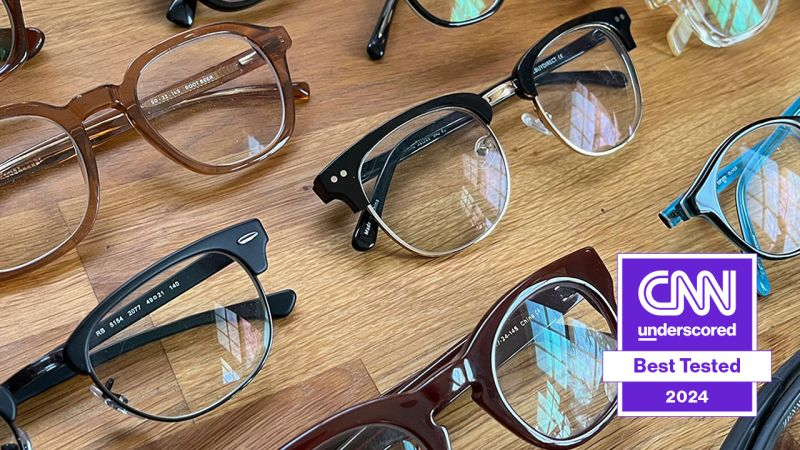 | Certainly! Here’s an evaluation for both captions based on precision and recall:
### Caption 1:
Precision:
- The caption says there are 12 pairs of glasses, but the image shows only 9 visible pairs.
- Description includes “a variety of different eyeglasses” that accurately describes the range of styles and sizes.
- The glasses are described as “neatly positioned on the desk,” which is an accurate observation.
- Mentions “potential customers” which is reasonable to infer but not evident from the image itself.
Recall:
- Caption 1 provides detailed information about the glasses being “neatly positioned,” and their variety in “sizes and styles.”
- It does not mention the occurrence of the "CNN Underscored Best Tested 2024" badge.
- It does not state that the glasses are overlapping or arranged – this enhances recall since it's visually evident.
### Caption 2:
Precision:
- The caption claims there are at least 13 pairs of glasses, but the image actually shows only 9.
- It accurately mentions the glasses being “displayed on the table” and “showcasing different styles and colors.”
- Describes the spatial arrangement (“closer to the front,” “towards the back”), but this isn’t strictly applicable as the layout is more random it mentions “potential customers” as well, similar to Caption 1.
- The presence of the "CNN Underscored Best Tested 2024" badge isn't indicated in this caption either.
Recall:
- Caption 2 includes descriptions of the "variety of eyeglasses" and their arrangement.
- It misses the exact count of the glasses.
- It also lacks reference to the "CNN Underscored Best Tested 2024" badge.
### Comparison:
- Precision:
- Both captions overestimate the number of glasses (Caption 1 says 12, Caption 2 says at least 13), so there's a similar issue with numerical accuracy. However, Caption 1 is closer since it's a direct count.
- The descriptions of the variety in style and the arrangement are accurate in both, but Caption 1 is slightly more precise in positioning, whereas Caption 2 introduces unneeded complexity with spatial distribution terms.
- Neither caption mentions the "CNN Underscored Best Tested 2024" badge, which is a key aspect of the image.
- Recall:
- Both captions capture the variety and neat arrangement.
- Neither caption mentions the badge, an important element of the image.
- Caption 1 provides a noteworthy remark by mentioning that the options suit preferences and needs, but this interpretation is slightly beyond image-only evidence.
In summary, Caption 1 is slightly better in both precision and recall, as it more accurately describes the number of glasses and their arrangement. However, both captions significantly miss mentioning the "CNN Underscored Best Tested 2024" badge, which is a critical detail in the image. | Let's evaluate each caption based on precision and recall.
### Precision:
Caption 1:
- Correct details:
- The image featuring a wooden table.
- There are a variety of eyeglasses.
- Eyeglasses showcase different styles and colors.
- Some glasses are placed in front, and others towards the back.
- Incorrect/assumption:
- The caption incorrectly states there are "at least 13 pairs of glasses," while the image shows only 11.
- It assumes the display is for potential customers, but this is speculative and not directly indicated in the image.
Caption 2:
- Correct details:
- The image features a wooden desk (table/desk can be considered interchangeable here).
- There is a variety of different eyeglasses.
- Glasses are representing a range of sizes and styles.
- The eyeglasses are neatly positioned, with some overlapping others.
- Incorrect/assumption:
- The caption states there are "12 pairs of glasses visible," but there are only 11.
- Similar to Caption 1, it assumes the selection is for potential customers, which is not explicitly shown.
Precision Summary:
- Caption 1 is less precise due to the incorrect count and speculative details.
- Caption 2 is slightly less incorrect by underestimating one pair, but still has speculative details.
### Recall:
Caption 1:
- Details included:
- Mentions the wooden table.
- Describes a variety of eyeglasses in different styles and colors.
- Mentions glasses positioned at different distances (front and back of the table).
- Details missed:
- Does not mention the exact number (which is specifed incorrectly).
- Overlooks the presence of the "CNN Underscored Best Tested 2024" badge.
Caption 2:
- Details included:
- Mentions the wooden desk (interchangeable with table).
- Describes range of sizes and styles.
- Highlights neat positioning and overlapping glasses.
- Details missed:
- Incorrect number of glasses and overlooked the visibility of the "CNN Underscored Best Tested 2024" badge.
Recall Summary:
- Caption 1 captures general details well but misses precise information and the badge.
- Caption 2 generally captures the array and positioning aspects but misses badge and number precision.
### Conclusion:
Overall Evaluation:
- Precision:
- Both captions have issues with exact count and include some speculative assumptions.
- Caption 2 is slightly more precise than Caption 1 since it states twelve pairs instead of 13.
- Recall:
- Both captions miss the number of eyeglasses and the badge detail.
- Caption 1 and 2 have roughly equivalent limitations in recall.
Final Verdict:
Both captions capture the general idea but neither fully accurately reflects the image due to the inaccuracies in count and the omission of the badge detail. If forced to choose, Caption 2 is narrowly better in terms of precision, but otherwise only marginally different. | The image showcases a wooden desk covered in a variety of different eyeglasses. There are 12 pairs of glasses visible on the table, representing a range of sizes and styles. The glasses are neatly positioned on the desk, with some overlapping others in the collection. With so many options, potential customers can find eyewear that suits their preferences and needs from this selection. | 7.0 | 6.0 | 7.0 | 6.0 | 6.50 | 6.50 | 6.50 |  | The image features a wooden table covered with a variety of eyeglasses. There are at least 13 pairs of glasses displayed on the table, showcasing different styles and colors. Some of the glasses are placed closer to the front of the table, while others are positioned towards the back. The assortment of eyeglasses creates an eye-catching display, likely for potential customers to browse and choose from. | 5.0 | 6.0 | 7.0 | 6.0 | 5.50 | 6.50 | 5.96 |  |
 | ### Caption 1:
Precision:
- Positive:
- Correct mention of "woman's shoe closet" and "women's shoes".
- Accurate description of the shoes being "perfectly displayed on a shelf" and "vary in style, including high heels and pumps".
- Correctly captures the visually appealing arrangement of the shoes.
- Negative:
- Inaccurate mention of "boots", as there are no boots visible in the image.
- Lack of specificity regarding the types of shoes and color variations visible in the image.
Recall:
- Positive:
- Provides a broad description of the shoes varying in style.
- Mentions the visually appealing and organized nature of the display.
- Negative:
- Does not mention specific colors or details such as the shoes adorned with bows.
- Fails to mention the exact number of pairs visible (13).
### Caption 2:
Precision:
- Positive:
- Correct mention of "women's shoes displayed in a shoe closet".
- Accurately describes the shoes being "on multiple shelves".
- Correct mention of "high heels and flats".
- Correct identification of colors: green, pink, blue, and red.
- Accurate mention of some shoes "adorned with bows".
- Negative:
- Claims that there are exactly 13 pairs of shoes visible, which is accurate upon count but could be perceived as unnecessary or verbose.
Recall:
- Positive:
- Captures the variety of shoe types (high heels, flats) and colors (green, pink, blue, and red).
- Notes the decorative bows, adding detail to the description.
- Negative:
- Does not describe the visually appealing organization of the shoes as effectively as the first caption.
### Conclusion:
- Precision: Caption 2 is slightly more precise because it avoids inaccuracies like mentioning boots and correctly describes the color and decoration of the shoes. It provides accurate details without making incorrect assumptions.
- Recall: Caption 2 also fares better in recall. It describes the color variations and bow adornments, which Caption 1 overlooks. However, both captions miss minor details like the polka-dot shoes, although Caption 2 gives a more comprehensive account of the visible elements in the image. | ### Caption 1 Evaluation
#### Precision:
- The caption correctly describes that the image showcases women's shoes displayed in a shoe closet.
- It accurately mentions multiple shelves filled with various types of shoes, including high heels.
- The colors green, pink, blue, and red are correctly identified.
- The fact that some shoes are adorned with bows is precise.
- The statement that there are 13 pairs of shoes visible in the closet is accurate.
- Overall, Caption 1 provides detailed and precise descriptions of the elements present in the image.
#### Recall:
- Caption 1 covers most significant elements in the image: type of shoes (high heels and flats), colors, bows, and the number of pairs.
- It doesn't mention other specific styles that might be present (e.g., slingbacks or peep-toes).
- The organizational aspect is briefly covered, noting that the arrangement is visually appealing and organized.
- It does not mention minor details such as the presence of some studs on shoes.
### Caption 2 Evaluation
#### Precision:
- The caption mentions a woman's shoe closet, which is accurate.
- It specifies various styles of shoes such as high heels and pumps; however, the image does not show boots, making this part inaccurate.
- It discusses the visual appeal and arrangement of shelves, correctly capturing the organized presentation.
- Generalizes with "tons of women's shoes," which is less precise compared to the exact count in Caption 1.
- The mention of reflecting personal preferences and fashion sense is speculative and not directly derived from the image.
#### Recall:
- Caption 2 covers several key aspects: shoe closet, variety of women's shoes, and the organized arrangement.
- Misidentifies styles by including "boots," which are not visible in the image.
- Lacks details about specific colors and adornments like bows.
- Does not provide a count of the visible shoes.
### Conclusion
- Precision: Caption 1 is more precise as it accurately describes specific details such as the colors, types of adornments, and exact number of pairs. Caption 2 contains generalizations and inaccuracies (like mentioning boots).
- Recall: Caption 1 also has better recall since it describes all major elements present in the image, except for specific shoe styles and minor design details. Caption 2, while covering some key elements, lacks detail and includes inaccuracies. | The image showcases a woman's shoe closet with tons of women's shoes perfectly displayed on a shelf. The shoes vary in style, including high heels, pumps, and boots. They are organized in a visually appealing manner, arranged across different sections in the closet. It's evident that this closet contains a variety of fashionable footwear options to choose from, reflecting the personal preference and fashion sense of the owner. | 6.0 | 7.0 | 5.0 | 5.0 | 6.50 | 5.00 | 5.65 |  | The image showcases a large collection of women's shoes displayed in a shoe closet. There are multiple shelves filled with various types of shoes, including high heels and flats. The shoes come in different colors, such as green, pink, blue, and red. Some of the shoes are adorned with bows, adding a touch of elegance to the collection.
In total, there are 13 pairs of shoes visible in the closet, each occupying different shelves. The arrangement of the shoes creates an organized and visually appealing display. | 8.0 | 9.0 | 7.0 | 9.0 | 8.50 | 8.00 | 8.24 |  |
 | ### Caption 1 Evaluation
- Precision:
- The caption states that there's a red, brown, and grey baseball cap. The image shows a red and gray hat, but there is no brown hat, reducing the precision.
- The description of the arrangement and the reference to a "hat holder" are accurate.
- It mentions "caps are of different heights," which seems somewhat implied but is not as clearly visibly separated.
Precision Score: 7/10
- Recall:
- The caption accurately mentions a wooden stand and baseball caps.
- It notes the colors but incorrectly includes a brown cap.
- It doesn't mention only seeing two hats instead of three.
Recall Score: 7/10
### Caption 2 Evaluation
- Precision:
- The caption mentions a "wooden hat rack," which is accurate.
- It identifies the colors of the hats but incorrectly repeats that there are three hats, though there are only two hats visible.
- It correctly mentions the hat rack is mounted on the wall and the hats are neatly placed.
Precision Score: 8/10
- Recall:
- It captures the wooden hat rack and the colors red and gray.
- It incorrectly mentions there are three hats when there are two.
Recall Score: 8/10
### Summary
- Caption 1:
- Precision: 7/10
- Recall: 7/10
- Caption 2:
- Precision: 8/10
- Recall: 8/10
Caption 2 provides a more accurate and detailed description of the image, although it still has a minor error in the number of hats. | Caption 1 Evaluation:
- Precision:
- The caption correctly identifies that the image features a wooden hat rack with hats hanging on it.
- It mentions the colors of the hats as red and gray, which is accurate.
- However, it incorrectly notes that there are three hats on the rack when there are only two.
- It accurately mentions the wall mounting and the neat placement.
Precision Score: 7/10 (Error: Incorrect number of hats)
- Recall:
- The caption captures most elements of the image: the hat rack, the hanging hats, the colors red and gray, and the overall organization.
- It doesn't miss out on any major visible details but incorrectly states the quantity.
Recall Score: 8/10 (Error: Incorrect number of hats)
Caption 2 Evaluation:
- Precision:
- The caption identifies a wooden stand with baseball caps, which is accurate.
- It mentions the caps are of different heights which can imply their placement, but it is somewhat ambiguous.
- It incorrectly describes the colors of the caps, noting them as red, brown, and grey when there are only red and gray caps.
- The description has some ambiguous language, such as "likely on a hat holder," which is less precise.
Precision Score: 5/10 (Errors: Incorrect colors, ambiguous height description)
- Recall:
- The caption mentions the wooden stand and the caps, accurately depicting the primary elements.
- The descriptions of colors are incorrect, which is a factual error regarding one of the more evident details.
- It also does not clearly mention the wall mounting of the rack.
Recall Score: 6/10 (Errors: Incorrect colors and missing mounting detail)
Overall Comparison:
- Caption 1 is more accurate and concise in describing the image, despite the error regarding the number of hats. It provides clear details about what is visually present without much ambiguity.
- Caption 2 introduces more errors with the colors and adds ambiguity around the height and possible purpose of the stand, which detracts from its overall accuracy.
Therefore, Caption 1 is a better representation of the image based on both precision and recall. | The image displays a clear view of a wooden stand with three baseball caps propped on it, likely on a hat holder. The caps are of different heights, creating an interesting arrangement until stacked at the proper angle. There is a red, brown, and grey baseball cap, giving a variety of colors present in the image. | 7.0 | 5.0 | 7.0 | 6.0 | 6.00 | 6.50 | 6.24 |  | The image features a wooden hat rack with three hats hanging on it. The hats come in different colors: one is red, another is gray, and the third one is also gray. The hat rack is mounted on a wall, and the hats are neatly placed on it, creating an organized and visually appealing display. | 8.0 | 7.0 | 8.0 | 8.0 | 7.50 | 8.00 | 7.74 |  |
| Let's analyze both captions based on precision and recall.
### Caption 1
Precision Analysis:
- The caption accurately mentions that there are two women in the image.
- It describes the women as beautiful and standing side by side.
- It talks about their sporty outfits and skin-tight tops, which is accurate.
- Mentions tight leggings, which both women are wearing.
- Indicates it is an athletic style and suggests they might be posing for a fitness-focused photo.
- Mentions their choice of attire and implies a possible activity.
Recall Analysis:
- Does not specifically mention the colors of the outfits (burgundy and beige).
- Omits the white sneakers that both women are wearing.
- Doesn't detail their positioning or pose.
- Does not comment on any accessories or additional features in the image (e.g., tattoos).
### Caption 2
Precision Analysis:
- Accurately states there are two women standing next to each other.
- Correctly identifies the tight-fitting workout clothes (sports bras and leggings).
- Mentions white sneakers, which is correct.
- Talks about the women posing confidently, which is accurate.
- Captures the athletic attire and adds the detail about camaraderie.
Recall Analysis:
- Does not mention the colors of the outfits.
- Did not specify features like skin-tight material or the visual effect on their figures.
- It doesn't call attention to possible fitness activity aside from the attire.
- Does not mention any additional features such as tattoos.
### Comparison
Precision:
- Both captions are reasonably precise, but Caption 2 is slightly more precise because it avoids vague elements and includes specific items like the sports bras, leggings, and white sneakers. Caption 1 has a bit more interpretation without specific details from the image.
Recall:
- Both captions have good recall but missed certain details. Caption 2 included more specific details about the outfits (sports bras, leggings, white sneakers) compared to Caption 1, which missed the sneakers but suggested they might be for a fitness photo. However, neither caption mentioned colors or tattoos.
Conclusion:
- Precision Winner: Caption 2
- Recall Winner: Caption 2
Overall, Caption 2 does a better job of both accurately describing the picture (precision) and covering most of the elements visible in the image (recall). However, both captions could improve by noting specific details such as colors and additional image features. | ### Caption 1 Evaluation
Precision:
- Strengths:
- Correctly mentions the two women in the image and describes their fitness attire (sports bras and leggings).
- Accurately points out that both women are wearing white sneakers.
- The description aptly captures the women's confident poses and their toned bodies.
- Weaknesses:
- The caption speaks about their "shared enthusiasm for their workout routine," which is an inferred intention that might not be explicitly observable from the image alone.
Precision Score: 9/10
Recall:
- Strengths:
- Covers key visual elements: two women, workout clothes, sports bras, leggings, white sneakers.
- Mentions body tone and confident poses.
- Weaknesses:
- Does not mention the specific colors of their outfits (brown and beige) or the visible tattoos on their arms.
Recall Score: 8/10
### Caption 2 Evaluation
Precision:
- Strengths:
- Accurately describes the women standing side by side.
- Mentions skin-tight tops and leggings.
- Weaknesses:
- Less precise and detailed in describing the overall outfits compared to Caption 1.
- Uses subjective term "beautiful" which is a personal judgment not based on observable traits in the image.
Precision Score: 7/10
Recall:
- Strengths:
- Covers the number of individuals and the general type of attire.
- Weaknesses:
- Less detailed, lacks mention of sneakers, outfit colors, and tattoos.
- Does not capture the fitness aspect as clearly as Caption 1.
Recall Score: 6/10
### Overall Comparison
Caption 1 is more detailed and precise in describing the outfits, poses, and some of the accessories (such as the sneakers), though it makes a bit more inference about their enthusiasm. Caption 2 is more general and misses several details which affect both its precision and recall. Thus, Caption 1 provides a richer and more accurate description of the image. | The image features two beautiful women standing side by side, showcasing their sporty outfits. Both are wearing skin-tight tops, which accentuates their sleek figures. One of the women is also wearing tight leggings, indicating a comfortable and athletic style. Their choice of attire suggests that they are dressed for an activity or simply capturing a moment for a fitness-focused photo. | 7.0 | 7.0 | 6.0 | 6.0 | 7.00 | 6.00 | 6.46 |  | The image features two women standing next to each other, both wearing tight-fitting workout clothes. They are both wearing sports bras and leggings, showcasing their fitness attire. The women are posing confidently for the camera, displaying their toned bodies.
Both women are wearing white sneakers, which complement their athletic outfits. The women are positioned close to each other, creating a sense of camaraderie and shared enthusiasm for their workout routine. | 9.0 | 9.0 | 8.0 | None | 9.00 | N/A | N/A |  |
 | ### Caption 1 Evaluation
Precision:
- Accurate Details:
- The table does have a variety of food items.
- There are teacups, a bowl filled with fruit, and a vase with flowers.
- A pot of tea is present.
- Inaccurate/Missing Details:
- The mention of numerous doughnuts and cinnamon rolls is incorrect. The pastries seem to be primarily rolls or buns, not doughnuts and cinnamon rolls.
- Score: 7/10
Recall:
- Well-Covered Elements:
- Includes mention of pastries, bread, fruits, teacups, vase, and teapot.
- Missing Details:
- Does not mention details such as the presence of a book or any specifics about the individual plates.
- Score: 8/10
### Caption 2 Evaluation
Precision:
- Accurate Details:
- The table is wooden.
- There are two cups, a bowl, and a vase filled with flowers.
- An orange item (possibly a fruit cut open) is visible.
- Mention of a book is correct.
- Inaccurate/Missing Details:
- The pastries are referred to as donuts, which is incorrect.
- Score: 8/10
Recall:
- Well-Covered Elements:
- Includes several key elements such as cups, bowl, vase, and a book.
- Missing Details:
- Does not mention other specifics like the type of pastries, other decorations, or the specific design of the teapot.
- Score: 7/10
### Comparative Analysis
- Precision:
- Both captions have certain inaccuracies, but Caption 2 has fewer incorrect details (such as mistaking rolls for donuts).
- Therefore, Caption 2 is slightly more precise, scoring higher in precision compared to Caption 1.
- Recall:
- Caption 1 provides a broader description that includes more elements of the scene, although some details are generalized or incorrect (like mentioning doughnuts).
- Caption 2, while more accurate, misses out on some additional items.
### Conclusion
Both captions provide a good description of the image. However, Caption 2 is more precise but less inclusive of the overall elements. Caption 1 happens to be more inclusive and offers a broader description but slightly compromises on the precision of the elements described. | Caption 1 Evaluation:
*Precision:*
- The caption accurately identifies a wooden dining table with an assortment of food items and a teapot (true).
- It correctly notes two cups on the table (true).
- The presence of a bowl near the center of the table (true).
- Description of a vase filled with flowers adding elegance (true).
- Incorrectly mentions "donuts" spread across the table. The image shows bread and a half-sliced orange, but no donuts (false).
- The caption incorrectly identifies a book on the table, but it is actually a stack of old books (partially true).
*Score: 4.5/6*
*Recall:*
- The caption mentions a teapot, two cups, a bowl, and a vase with flowers (true).
- It references donuts and an orange but incorrectly places more emphasis on donuts rather than the bread rolls present (partly true).
- Does not mention the cake slice or colorful eggs in the bowl.
- Omits details about the liquid containers (which could be juice or another drink) and the pecans visible on the table (false).
*Score: 3.5/6*
Caption 2 Evaluation:
*Precision:*
- The caption correctly identifies the dining table set with pastries, bread, fruits, teacups, and decorations (true).
- It accurately describes doughnuts and cinnamon rolls on plates (false; there are no doughnuts or cinnamon rolls).
- Correctly mentions the teacups and a bowl filled with fruit (true).
- Notes a vase in the background (true).
- Mentions a pot of tea (true).
*Score: 4/7*
*Recall:*
- The caption includes a variety of pastries (partly true, bread is more accurate), teacups (true), and decorations (including the vase and teapot, true).
- Incorrectly identifies the pastries as doughnuts and cinnamon rolls instead of bread rolls (false).
- Does not mention the cake slice.
- Omits details about the liquid containers (juice), and the pecans visible on the table (false).
*Score: 3.5/7*
Final Evaluation:
Caption 1 has a higher precision score (4.5/6) compared to Caption 2 (4/7), indicating that it includes more accurate details about what is present in the image. However, Caption 2 provides a broader, albeit less precise, description of the scene with some inaccuracies in the type of pastries and other omissions.
In terms of recall, both captions miss some elements of the image. However, Caption 1 (3.5/6) marginally outperforms Caption 2 (3.5/7) by giving a more accurate depiction of the central elements like the teapot, cups, and flowers, despite omitting some details.
Therefore, Caption 1 provides a better balance of accuracy and attention to the key elements present in the image. | The image shows a dining table set with a variety of pastries, bread, fruits, teacups, and decorations. Numerous doughnuts and cinnamon rolls are placed on different plates around the table. There are also two teacups and a bowl filled with fruit. A vase can be seen near the back of the table, adding to the decoration.
A pot of tea is also present, adding to the ambiance of the setting. The table is well-filled and inviting, creating a pleasant atmosphere for a meal. | 7.0 | 6.0 | 8.0 | 4.0 | 6.50 | 6.00 | 6.24 |  | The image features a wooden dining table filled with an assortment of food items and a teapot. On the table, there are two cups, one placed closer to the left side and the other towards the right side. A bowl is also present on the table, located near the center.
In addition to the cups and bowl, the table is adorned with a vase filled with flowers, adding a touch of elegance to the scene. There are several donuts spread across the table, with some placed closer to the right side and others near the center. An orange is also visible on the table, positioned between the cups and the bowl. A book can be seen on the right side of the table, possibly serving as a reading material while enjoying the tea and pastries. | 8.0 | 8.0 | 7.0 | 6.0 | 8.00 | 6.50 | 7.17 |  |
 | Error | Error | The image showcases a large dining table set up outdoors on a picnic blanket, offering a pleasant and relaxed vibe. On the table, there are plates of delicious pizza slices and healthy salads placed side by side, accompanied by various utensils such as forks, knives, and spoons. A couple of bottles, possibly containing pickled vegetables and wine, are also present near the pizza. Additionally, there are several cups scattered around the table, along with a bowl.
There is a vase on the table, adding to the ambiance, and a potted plant can be seen in the background. A handbag is placed near the edge of the table. The outdoor dining experience is capped off with a few abloom flowers, further enhancing the pleasant atmosphere. | None | None | None | None | N/A | N/A | N/A |  | The image depicts an outdoor picnic setting with a blanket spread out on the grass. On the blanket, there is an assortment of food and drinks, including pizza, salad, fruit, and a variety of beverages. There are multiple bowls, cups, and utensils such as forks, knives, and spoons placed on the blanket, indicating a well-prepared meal.
In addition to the food and drinks, there are decorative elements like a vase with flowers and a potted plant, adding to the pleasant ambiance of the picnic. A hat can also be seen on the blanket, likely belonging to one of the picnickers. Overall, the scene conveys a relaxing and enjoyable outdoor dining experience. | None | None | None | None | N/A | N/A | N/A |  |
 | ## Caption 1 Analysis
### Precision
Precision is the measure of how much of what is in the caption is correct and found in the image.
- Correct Descriptions:
- Two white dinner plates with meals.
- A marble countertop.
- One plate containing potatoes.
- Another plate containing beef.
- Two glasses of wine.
- A bottle possibly containing wine in the background.
- Utensils such as forks on the table.
- A vase with flowers in the background.
- Incorrect/Questionable/Unverified Descriptions:
- Does not specify green beans or steak with precision.
- Does not specify that both glasses are filled with red wine.
- No asparagus visible in the image.
- The descriptor of "full glass of wine is closer to the left" is slightly ambiguous.
Precision Evaluation:
Caption 1 has high precision but would benefit from being more specific about the elements present and avoiding incorrect details such as mentioning asparagus.
### Recall
Recall is the measure of how much of what is in the image is described by the caption.
- Covered Elements:
- Two dinner plates.
- Meals on plates.
- Marble countertop.
- Wine glasses present.
- Bottle in the background.
- Utensils on the table.
- Vase with flowers.
- Missing Elements:
- Specificity on green beans and steak.
- The description of wine glasses specifically having red wine.
- No mention of bread basket and bottle to the left.
Recall Evaluation:
Caption 1 captures a lot of the main elements but omits certain details and contains misinformation (such as the asparagus).
## Caption 2 Analysis
### Precision
Precision is the measure of how much of what is in the caption is correct and found in the image.
- Correct Descriptions:
- The image features a dining table set.
- Two plates of food.
- Two wine glasses filled with red wine.
- Food on the plates consists of steak, potatoes, and green beans.
- Utensils, such as a fork and knife, are laid out.
- A vase in the background.
- Incorrect/Questionable/Unverified Descriptions:
- Mentions two bottles of wine, but only one bottle is visible.
Precision Evaluation:
Caption 2 is very precise overall but makes an error in mentioning two bottles of wine instead of just one.
### Recall
Recall is the measure of how much of what is in the image is described by the caption.
- Covered Elements:
- Dining table set.
- Two plates of food.
- Two wine glasses filled with red wine.
- Steak, potatoes, and green beans on the plates.
- Utensils.
- Vase in the background.
- Missing Elements:
- Bread basket in the background.
- Marble countertop mentioned in Caption 1 is not addressed.
Recall Evaluation:
Caption 2 captures nearly all of the relevant elements in the image except for the bread basket and marble countertop.
## Summary
### Caption 1
- Precision: High but includes some incorrect details (potency: 7.5/10).
- Recall: Good, with omission of some elements like the bread basket and specifics such as green beans (potency: 7/10).
### Caption 2
- Precision: Very high, accurate description with a minor error about the number of bottles of wine (potency: 9/10).
- Recall: Very good, omits the bread basket and the surface detail (potency: 8/10).
Overall, Caption 2 provides better precision and higher recall, making it a more accurate and comprehensive description of the image. | ### Evaluation of Captions:
#### Caption 1:
Precision:
- Correctly mentions the presence of two plates of food including steak, potatoes, and green beans.
- Accurately identifies two wine glasses filled with red wine.
- Correctly notes the presence of utensils like a fork and a knife on the table.
- Identifies a vase in the background.
Errors:
- Incorrectly states that there are two bottles of wine on the table; only one bottle is visible in the image.
Recall:
- Misses mentioning some elements like the bread in the background.
- Does not describe the napkins or other decorative elements such as the pepper grinder.
Overall Precision Rating: 4/5 (Accurate but with one significant error about the number of wine bottles)
Overall Recall Rating: 3/5 (Mentions key elements but misses several other details)
#### Caption 2:
Precision:
- Correctly identifies two white dinner plates with food.
- Accurately mentions that one plate contains potatoes and another features beef (though slightly vague, this is accurate).
- Correctly notes wine glasses (although the description is slightly confusing regarding the drinks).
- Identifies the vase with flowers.
Errors:
- Incorrectly describes the setting, suggesting one glass might hold a different drink, while both glasses are filled with red wine.
- Misidentifies green beans as asparagus.
Recall:
- Misses mentioning some elements such as the bread in the background and the napkins.
- Fails to describe other decorative elements like the pepper grinder and individual settings, such as a napkin holder.
Overall Precision Rating: 3/5 (Several smaller inaccuracies and confusing descriptions)
Overall Recall Rating: 3/5 (Mentions most major elements but misses additional details and makes errors in identification)
### Summary:
Caption 1 is slightly more precise, correctly describing more elements accurately compared to Caption 2, which contains more descriptive errors and confusing elements. However, both captions have similar recall levels, missing several background details and additional components such as bread and decorative elements. In terms of overall clarity and precision, Caption 1 is slightly better, whereas both captions need improvement in recall. | The scene features two white dinner plates with their respective meals, placed on a marble countertop next to a table. One plate contains potatoes, while the other features some beef. A bunch of asparagus and a vase with flowers are also present on the counter, making the ambiance of the setting more elegant.
A meal setting is laid out for two people, with drinks set in wine glasses. One full glass of wine is visible on the table, closer to the left, while another glass, possibly holding water or another drink, is positioned on the right.
In the background, we can see a bottle, possibly containing wine, and some additional elements that make the scene even more appealing. Utensils like forks are also placed on the table, ready to be used for enjoying the meal. | 7.0 | 5.0 | 7.0 | 3.0 | 6.00 | 5.00 | 5.45 |  | The image features a dining table set with two plates of food and two wine glasses filled with red wine. The food on the plates consists of steak, potatoes, and green beans, creating a delicious and appetizing meal.
In addition to the wine glasses, there are two bottles of wine placed on the table, one on the left side and the other on the right side. Utensils, such as a fork and a knife, are also laid out on the table, ready for use during the meal. A vase can be seen in the background, adding a decorative touch to the scene. | 9.0 | 8.0 | 8.0 | 8.0 | 8.50 | 8.00 | 8.24 |  |
| Caption 1 Evaluation:
- Precision: The first caption describes:
- A person standing next to a table with grilled food (correct).
- A white plate of sweet-looking corn (incorrect; no white plate with sweet corn is visible in the image).
- A person holding toast and managing the grill (incorrect; the person is holding skewers with vegetables and meat, not toast).
- The outdoor patio with a balcony view and a chair placed to sit (correct for the patio with a balcony view, but there is no visible chair in the image).
Overall precision is low because key details such as the person holding toast and the white plate of sweet corn are incorrect or not visible.
- Recall:
- The caption mentions a number of elements seen in the image, such as the person, the grill, and the outdoor patio with a view.
- It fails to mention the skewers on the grill, the different types of food such as corn, carrots, and pieces of meat.
Recall is moderate to low because it misses mentioning several key food items and misattributes some details.
Caption 2 Evaluation:
- Precision:
- The caption describes:
- A person grilling various items (correct).
- Meat and vegetables such as corn on the cob, carrots, and hot dogs (correct, except there are no hot dogs visible).
- Skillfully handling the grilling process (correct; the person is holding skewers).
- The grill is on a dining table with chairs (incorrect; the grill is on a stand, and there are no visible chairs).
Overall precision is moderate because it correctly identifies the activities and some food items, but incorrectly mentions hot dogs and the grill's placement on a dining table with chairs.
- Recall:
- The caption mentions the main components such as the person, the grilling process, and various food items.
- It omits the presence of the plate with food off to the side and does not describe the outdoor setting with a view of the water.
Recall is moderate as it captures many key elements but still misses some details and misattributes others.
Conclusion:
- Caption 1: Low precision and moderate to low recall. Several details are incorrect, missing, or misattributed.
- Caption 2: Moderate precision and recall. Better captures the main elements but has inaccuracies (e.g., hot dogs, dining table, and chairs).
Ultimately, Caption 2 is a more accurate and complete description of the image, but both captions have areas that can be improved for better precision and recall. | ### Evaluation of Captions
#### Caption 1
Precision:
- Correct Details:
- "A person is grilling a variety of food items on an outdoor barbecue grill": Accurate, as multiple food items are seen on the grill.
- "The grill is filled with different types of meat and vegetables, including corn on the cob, carrots": The grill has corn and carrots, and there appear to be meat items as well.
- Incorrect Details:
- "hot dogs": The skewers might have sausage-like items, but it's not clear if they are hot dogs.
- "The person is skillfully handling the grilling process, ensuring that the food is cooked to perfection": This is subjective and not discernible from the image.
- "The grill is placed on a dining table, which occupies a significant portion of the scene": Incorrect, the grill is on a stand, not a dining table.
- "There are two chairs positioned near the table": There are no chairs visible in the scene.
Recall:
- Missing Details:
- "The grill is placed on a balcony with a view of the water": This important contextual detail is missing.
- There is a side table with a plate of food visible.
#### Caption 2
Precision:
- Correct Details:
- "A person is holding toast in one hand while attending to the grilled items": The person is indeed attending to the grilled items, though it's not toast but skewers with food.
- "Outdoor patio features a balcony with a view of the water below": Accurately describes the setting.
- Incorrect Details:
- "A white plate of sweet-looking corn": There is no specific indication of a white plate with corn on it separately.
- "A chair is placed on one side": No chairs are visible in the image.
Recall:
- Missing Details:
- Variety of foods on the grill, including corn, carrots, and meat.
- Missing the description of the skewers with food.
- The small table with a plate of food nearby.
### Comparison and Conclusion
Precision:
- Caption 1: Is more detailed about the types of food being grilled, but includes incorrect and speculative information about the setup (table and chairs) and some food items (hot dogs).
- Caption 2: Correctly includes the balcony view and outdoor setting, but inaccurately describes held items and references non-visible plates and chairs.
Recall:
- Caption 1: Captures more details about the food items but misses key environmental details (balcony, setting).
- Caption 2: Captures the environmental context better (balcony, view), but misses out on fully describing the food items and their handling.
Recommendation: A combined approach where the outdoor setting from Caption 2 is merged with the detailed listing of food items from Caption 1 would best describe the image. Neither caption perfectly captures both the foreground activity and the background setting, but each is stronger in one category. | A person is standing next to a table with grilled food, on which there is a white plate of sweet-looking corn. The person is holding toast in one hand while attending to the grilled items, possibly trimming off the corn cob or overseeing the cooking process.
The outdoor patio features a balcony with a view of the water below. A chair is placed on one side, providing a comfortable spot for the person to sit and enjoy their delicious meal. | 3.0 | 6.0 | 4.0 | 5.0 | 4.50 | 4.50 | 4.50 |  | In the image, a person is grilling a variety of food items on an outdoor barbecue grill. The grill is filled with different types of meat and vegetables, including corn on the cob, carrots, and hot dogs. The person is skillfully handling the grilling process, ensuring that the food is cooked to perfection.
The grill is placed on a dining table, which occupies a significant portion of the scene. There are two chairs positioned near the table, one on the left side and the other on the right side, likely for people to sit and enjoy the delicious meal once it's ready. | 5.0 | 5.0 | 6.0 | 5.0 | 5.00 | 5.50 | 5.24 |  |
 | Caption 1 Evaluation:
*Precision:*
- The caption correctly describes the presence of a variety of alcoholic beverages and ingredients.
- It accurately mentions several bottles of liquor, a liquor shaker, a bowl holding olives, and other drink-making tools.
- It mistakenly describes wine glasses, which are not present in the image. Wine glasses are distinct in shape from the glasses shown (which include a coupe glass, old fashioned glass, and highball glass).
- There is no knife, especially not one shaped like a corkscrew, visible in the image.
*Recall:*
- The caption mentions most key elements in the image: the bottles of liquor, the shaker, and the bowl of olives.
- It fails to mention the glasses (as previously noted, not wine glasses), and the other food items such as the pistachios and pretzels.
- The detail about the environment "ready for preparing delicious cocktails" is accurate in describing the setup's purpose.
- The caption also misses several finer details, such as the presence of ice in the ice bucket and other small objects like the lemon wedges and spoon.
Caption 2 Evaluation:
*Precision:*
- This caption accurately describes the presence of several liquor bottles.
- It includes an incorrect mention of wine and vodka bottles, as these specific types of bottles are not identifiable in the image.
- It incorrectly states that there are multiple wine glasses and cups; none of the glasses in the image are wine glasses.
- The caption correctly notes the presence of a bowl containing olives.
*Recall:*
- The caption captures some key elements such as the liquor bottles and olives.
- It does not mention other key elements such as other food items (pistachios and pretzels), the lemon wedges, liquor shaker, and tools like the ice bucket and spoon.
- The mention of a knife is inaccurate as there is no knife visible in the image.
- There is no reference to the three specific cocktails that are prominent in the image, which are important elements of the scene.
Comparative Evaluation:
*Precision:*
- Caption 1 has higher precision as it correctly describes more elements actually present in the image such as the liquor bottles, shaker, and olives, although it inaccurately mentions wine glasses and a corkscrew-shaped knife.
- Caption 2 includes more inaccuracies, such as describing non-existent wine glasses, cups, wine and vodka bottles, and a knife.
*Recall:*
- Both captions have similar recall in that they catch the broad idea of what's happening (making cocktails), but miss many of the specific details.
- Neither caption adequately covers all visible elements, but Caption 1 slightly outperforms Caption 2 in overall description accuracy.
Conclusion:
Caption 1 is more accurate and detailed in its description compared to Caption 2, despite some inaccuracies. Caption 2 contains more errors in identifying objects that are actually present, having additional inaccuracies about types of glasses and bottles. | ### Evaluation of Captions for Precision and Recall
### Caption 1:
#### Precision:
- Accurate Details:
- Table with a variety of alcoholic beverages and ingredients.
- Several bottles of liquor.
- Multiple beverages (assorted drinks in different glasses).
- A shaker (golden color) is on the table.
- A bowl of olives is present.
- Lemon wedges and a spoon are visible.
- Inaccurate/Misleading Details:
- The caption inaccurately mentions wine and vodka bottles. There are no clearly identifiable wine bottles or vodka bottles. The visible bottles are not labeled as such.
Precision Score: Moderate. While many details are accurate, the specific mention of wine and vodka reduces precision.
#### Recall:
- Missing Elements:
- The caption does not mention the glass of ice.
- It does not mention the presence of pistachios and pretzels.
- The specific types of glasses containing drinks (e.g., coupe glass, rocks glass) are not mentioned.
- Some bottles and tool specifics (e.g., golden shaker) are missing.
- The tray and mix of normal drinks (possibly cocktails) are not mentioned.
Recall Score: Low. Many items and details present in the image are not captured in the caption.
### Caption 2:
#### Precision:
- Accurate Details:
- Bar with a variety of alcoholic beverages and ingredients.
- Several bottles of liquor.
- Liquor shaker.
- Assorted glasses.
- Bowl containing olives.
- Inaccurate/Misleading Details:
- Wine glasses are mentioned, but no specific wine glasses are visible.
- Knife mentioned as a corkscrew; this description is unclear and misleading because no knife or corkscrew is visible.
Precision Score: Moderate. It accurately captures many present elements but misleads with the mention of wine glasses and misidentifies items like the knife.
#### Recall:
- Missing Elements:
- Ice in the glass.
- Pistachios and pretzels.
- Detailed mention of the types of drinks (colorful cocktails).
- Type of garnishing (e.g., lemon segments).
- Specifics about the golden shaker and other drink preparation tools.
- Additional tools like the spoon and the stirrer.
Recall Score: Moderate. It mentions several important elements but misses out on other detailed elements and different drink preparations.
### Conclusion:
- Caption 1: Moderate precision due to inaccuracies about the types of bottles, but lower recall as it omits several elements present in the image.
- Caption 2: Also moderate precision due to incorrect identification of items but better recall as it covers slightly more elements compared to Caption 1.
Both captions could be improved by closer inspection and more accurate documentation of the items and their specific characteristics within the image. | The image features a bar with a variety of alcoholic beverages and ingredients. On display are several bottles of liquor, along with an array of wine glasses. The bar appears well-stocked, ready for preparing delicious cocktails.
In addition to the bottles and wine glasses, the arrangement includes a liquor shaker and a knife, shaped like a corkscrew. A bowl is also present, possibly holding olives, adding to the diverse ingredients available at the bar. With the abundance of beverages and tools visible, the bar seems to be prepared for a busy evening of serving a wide range of cocktails. | 7.0 | 6.0 | 5.0 | 5.0 | 6.50 | 5.00 | 5.65 |  | The image showcases a table filled with a variety of alcoholic beverages and ingredients. There are several bottles of liquor, including wine and vodka, placed on the table. In addition to the bottles, there are multiple wine glasses and cups arranged on the table, ready to be used for serving drinks.
A bowl containing olives is also present on the table, adding a touch of sophistication to the setup. A knife can be seen resting on the table, likely used for opening the bottles or preparing garnishes for the drinks. Overall, the table is well-prepared for a cocktail-making session or a social gathering with friends or family. | 4.0 | 5.0 | 5.0 | 6.0 | 4.50 | 5.50 | 4.95 |  |
 | ### Evaluation of Caption 1:
#### Precision:
- Correct: The caption accurately mentions a chef in a professional kitchen, wearing an apron, preparing various vegetables. The vegetables include small carrots, radishes, onions, oranges, and broccoli. The setting is described as being well-equipped with bowls and bottles which might contain condiments.
- Incorrect/Extra Detail: The mention of a dining table in the kitchen is not accurate; there is no dining table visible in the image. The presence of a sink is not clearly shown in the image.
#### Recall:
- Included: The caption recognizes the chef's focus, attire, and some of the specific vegetables present. It also notes the general environment of the kitchen and the bottles and bowls.
- Excluded: The caption does not mention other types of vegetables visible in the image, the types of condiments, or additional tools like the knife that is being used by the chef.
#### Summary:
- Precision: 7/10 (Fairly accurate but with some inaccuracies and extra details)
- Recall: 7/10 (Many items mentioned but some notable exclusions)
### Evaluation of Caption 2:
#### Precision:
- Correct: The caption accurately describes a chef in a white apron preparing a meal by chopping vegetables on a wooden cutting board. It correctly identifies the vegetables, focusing on carrots and broccoli, and accurately mentions several bowls and bottles on the countertops.
- Incorrect/Extra Detail: The specific placement of the bottles (right side, near the top and bottom) is unnecessarily detailed and somewhat ambiguous. The description of three bowls’ locations is vague and not entirely correct.
#### Recall:
- Included: The caption includes the chef’s task, attire, the act of chopping vegetables, and the general presence of vegetables like carrots and broccoli. It mentions the kitchen's well-equipped status and highlights the presence of several bottles and bowls.
- Excluded: Specific vegetables (onions, radishes, oranges) mentioned in Caption 1 are not detailed. The knife's presence and its use, while implied, could be more clearly stated.
#### Summary:
- Precision: 8/10 (More accurate overall but with some redundant detail)
- Recall: 6/10 (Misses some specifics on the variety of vegetables and tools)
### Overall Conclusion:
- Caption 1: Slightly better in detail but includes inaccurate details (dining table).
- Caption 2: Generally more accurate but could benefit from including more specific details and avoiding ambiguous statements.
In summary, Caption 1 has a slightly better recall but is less precise due to inaccuracies. Caption 2 is generally more precise but lacks some detailed recall. Adjustments to each could improve their overall accuracy and completeness. | Sure, let's evaluate the accuracy of both captions in terms of precision and recall.
### Caption 1:
Precision:
- The description mentions "chopping vegetables," which is accurate as the chef is engaged in some action with vegetables.
- The chef's outfit is correctly identified (white apron).
- It specifies "carrots and broccoli," which is partially accurate (carrots are present, but there is no visible broccoli).
- Description of "two bottles on the right side" seems slightly inaccurate as there are more than two bottles visible in the kitchen and not all of them purely seemed on the right side.
- Three bowls are not very distinctly visible in the described positions (left, middle, right).
- The statement about the knife is correct.
Precision Summary: The caption contains some errors regarding specific vegetables and the number of bowls and bottles, but overall, it correctly identifies the main elements seen in the image.
Recall:
- The caption misses some vegetables and other food items such as radishes, onions, and oranges.
- Misses mentioning the leafy greens and other vegetables present.
- Omits the details of light-colored vegetables (perhaps garlic or onions) and other tools or items visible on the counter besides the bottles and bowls.
Recall Summary: The caption captures several major aspects of the image but misses additional vegetables and elements on the counter.
### Caption 2:
Precision:
- The chef is correctly identified as attentively preparing vegetables.
- The chef's outfit (apron) is again accurately noted.
- Lists a variety of vegetables: "small carrots, radishes, onions, and oranges," accurately noting the presence of most of these (though oranges aren't distinctly visible in a prepared state).
- Mentions broccoli, which doesn't appear to be correct.
- Notes a sink, which isn't visible in the image.
- Mentions bottles and bowls, which is generally correct.
- Inaccurate about a "dining table" within the professional kitchen setup.
Precision Summary: This caption is slightly more detailed with vegetable varieties but also has its share of inaccuracies, such as the presence of a sink and dining table.
Recall:
- Captures a larger variety of vegetables.
- Includes mention of bottles and bowls without specific details or numbers.
- Notes the preparatory nature of the setting.
Recall Summary: While the caption fits the majority of the visible elements and mostly conveys the scenario, it slightly misleads on certain aspects (such as the sink and dining table) that aren't shown.
### Comparison:
- Precision: Caption 1 has fewer inaccuracies but is less specific about the variety of items. Caption 2 is more detailed about vegetables but includes some inaccuracies regarding unseen elements.
- Recall: Caption 2 includes more items and context present in the image. Caption 1 captures general elements but misses on several specific details.
In conclusion, Caption 1 is better in terms of precision, having fewer incorrect statements. Caption 2 is better in terms of recall, being more comprehensive but also introducing some inaccuracies. | The image presents a chef in a professional kitchen, dressed in an apron, attentively preparing a variety of vegetables. The chef's cutting board is scattered with small carrots, radishes, onions, and oranges, as well as broccoli and other assorted food items.
The kitchen is well-equipped, featuring a sink alongside various bottles and bowls. Some of the bottles seem to contain condiments, likely used for enhancing the flavors of the prepared dishes. The dining table in the kitchen has an additional bowl and a tray nearby, possibly for organization and ease of access during meal preparation. | 7.0 | 5.0 | 7.0 | 8.0 | 6.00 | 7.50 | 6.67 |  | In the image, a chef is standing in a kitchen, preparing a meal by chopping vegetables on a wooden cutting board. The chef is wearing a white apron and is focused on the task at hand. Various vegetables, including carrots and broccoli, are spread across the cutting board.
The kitchen is well-equipped with several bottles and bowls placed on the countertops. There are two bottles on the right side of the kitchen, one near the top and the other closer to the bottom. Three bowls can be seen in the scene, with one on the left side, another in the middle, and the third on the right side of the kitchen. A knife is also visible on the cutting board, being used by the chef to chop the vegetables. | 8.0 | 7.0 | 6.0 | 6.0 | 7.50 | 6.00 | 6.67 |  |
 | ### Evaluation of Caption 1
#### Precision
- Correct Elements:
- The caption correctly mentions that the platter contains various kinds of food, including cheeses, grapes, and olives.
- The general attractiveness and presentation of the platter is accurately described.
- There is indeed a knife visible on the side of the platter, implying its use for cutting and serving food.
- Incorrect Elements:
- The caption incorrectly states the presence of figs and apples, which are not present in the image.
- There is no explicit mention of nuts, meats (such as ham), or any specific details about the types of cheese or other elements.
#### Recall
- Elements Present in the Image but Missing in the Caption:
- Various types of cheese (beyond just "several cheese").
- Different types of meats (ham, salami).
- Specific types of fruits (e.g., strawberries).
- Presence of nuts.
- Crackers and other snack items.
- Some vegetables (e.g., small pickles, possibly cauliflower).
### Evaluation of Caption 2
#### Precision
- Correct Elements:
- The caption correctly identifies a large wooden platter filled with an assortment of cheeses, meats, fruits, vegetables, and nuts.
- The presence of various types of cheese and meats is accurately described.
- Grapes are identified correctly as part of the fruits present.
- Incorrect Elements:
- The caption mentions the presence of blueberries, carrots, and broccoli, which are not visible in the image.
- The mention of bacon is also inaccurate as it appears more like different types of ham or cured meats.
#### Recall
- Elements Present in the Image but Missing in the Caption:
- The specific types of cheese and cheeses in different preparations (e.g., goat cheese with spices).
- Specific types of fruits beyond grapes (e.g., strawberries).
- Specific types of meats, like salami and ham.
- Crackers and snack items.
- Presence of olives.
- Jam or preserves shown in a small bowl.
- Pickles and possibly pickled cauliflower.
- Marinated vegetables.
- The arrangement and visual appeal of the platter which is important in a charcuterie board.
### Overall Comparison
- Caption 1:
- Precision: Lower due to incorrect inclusions (figs and apples).
- Recall: Moderate, with many items on the platter not mentioned.
- Caption 2:
- Precision: Higher than Caption 1 but still contains some inaccuracies (blueberries, carrots, broccoli, bacon).
- Recall: Moderate, captures many correct elements but misses others, such as specific snack items, marinated vegetables, and the overall presentation aspect.
Conclusion: Despite some inaccuracies, Caption 2 provides a more precise and detailed description of the items actually present on the platter compared to Caption 1. However, both captions miss several key details present in the image, which affects their recall. | ### Evaluation of Captions
#### Caption 1
Precision:
- Correctly mentions the large wooden platter filled with an assortment of foods.
- Correctly identifies cheeses, meats (ham), fruits (grapes), and nuts (almonds).
- Incorrect items: The caption mentions blueberries, carrots, and broccoli, which are not visible in the image.
- Tools/utensils correctly identified.
Recall:
- Missed elements in the description:
- Types of items on the platter, such as crackers, pretzels, pickles, strawberries, and various dips/spreads.
- Specific types of cheese like mozzarella balls and cheese with seasoning on the side.
- Overall arrangement and abundance of items are not fully captured.
#### Caption 2
Precision:
- Correctly mentions the person holding a large wooden platter.
- Correctly identifies the presence of cheeses, grapes, and olives.
- Incorrect items: Mentions figs and apples, which are not visible in the image.
- The knife is correctly identified but lacks mention of other tools (e.g., fork, spoon).
Recall:
- Missed elements in the description:
- Little detail provided about the types and variety of items on the platter, such as various kinds of meats, crackers, nuts, and other vegetables.
- Specific cheeses, dips/spreads, crackers, pretzels, pickles, strawberries, and more.
- Lack of detail about the overall presentation and arrangement.
### Summary
- Caption 1 provides a more detailed description and correctly identifies several key elements. However, it includes some inaccuracies (blueberries, carrots, broccoli) and misses a few other specific items and details about the arrangement.
- Precision: 6/10 (Includes some incorrect details)
- Recall: 7/10 (Misses some of the variety and specifics but provides an overall better sense of the image)
- Caption 2 is less detailed and includes inaccuracies (figs, apples). It offers a lower level of detail about the variety and arrangement of items on the platter.
- Precision: 4/10 (Includes more incorrect details)
- Recall: 5/10 (Misses many specifics and the variety of items)
Overall, Caption 1 is more accurate and detailed but still lacks complete accuracy. | The image displays a person holding a large wooden platter filled with various kinds of food, including fruits and vegetables. The platter contains several cheese, grapes, olives, and figs. The food appears to be arranged on the plate in an attractive manner, possibly for presentation.
In addition, there are two apples within the assortment of food on the platter. On the side, a knife is visible, likely for cutting and serving the food. The image seems to capture a close-up of the variety of dishes, highlighting their colorfulness and presentation. Overall, it presents a delightful spread of food that someone is proud to share or enjoy. | 6.0 | 4.0 | 3.0 | 5.0 | 5.00 | 4.00 | 4.44 |  | The image features a large wooden platter filled with an assortment of cheeses, meats, fruits, vegetables, and nuts. The platter is placed on a dining table, and a person is standing next to it, reaching for a piece of cheese.
There are several types of cheese spread across the platter, as well as a variety of meats, such as ham and bacon. Fruits like grapes and blueberries are also present on the platter, along with vegetables like carrots and broccoli. Nuts, such as almonds, are also included in the assortment.
In addition to the platter, there are utensils on the table, including a fork and a spoon, which can be used to serve the delicious spread. | 6.0 | 7.0 | 4.0 | 7.0 | 6.50 | 5.50 | 5.96 |  |
 | ### Caption Evaluation:
Caption 1:
- Precision:
- The caption accurately describes the basket as a wire basket filled with a variety of fruits.
- The types of fruits mentioned (apples, oranges, and grapes) are indeed present in the basket.
- The detailed locations and numbers of the fruits (e.g., apples in top, middle, and bottom areas, four oranges mostly at center and bottom, and a cluster of grapes around the center top) are mostly accurate though not entirely precise; for instance, there are more than seven grape clusters visible.
- Recall:
- The description covers most of the key elements in the image but omits certain details like the inclusion of pears and the presence of a yellow fruit, which appears to be a lemon.
- The mention of the wire basket and its contents is comprehensive but does miss the surrounding elements such as the cups and the wooden dining table.
Caption 2:
- Precision:
- The caption describes a wooden dining table, which is correct.
- It mentions a variety of fruits (apples, oranges, grapes, and pears) included in the bowl, accurately reflecting the image.
- The inclusion of additional detail like the nearby cup adds precision regarding the context of the setting.
- Recall:
- The caption accurately captures additional fruits present in the image (such as pears).
- It also includes the setting of the dining table and the item nearby (cup).
- However, it does not specify the type of bowl accurately (wired basket vs. bowl).
### Summary:
Caption 1:
- Precision: Mostly precise regarding specific details and the arrangement but misses a few key inclusions and over-specifies the grape clusters inaccurately.
- Recall: Covers most of the elements, missing some additional details like the pears and the setting (wooden table and cups).
Caption 2:
- Precision: Good precision with the setting and all fruit types mentioned but misidentifies the basket as a bowl.
- Recall: High recall in terms of elements in the image, including the setting and nearby items, but lacks specific details about the basket and number/arrangement of fruits.
### Conclusion:
Both captions provide valuable information and partially accurately describe the image. Caption 1 is more focused on the basket and the fruits with detailed, although sometimes incorrect, specificity, while Caption 2 provides a better contextual setting and includes all types of fruits but inaccurately describes the basket as a bowl. | Certainly! Let's evaluate the two captions in terms of precision and recall when describing the image:
### Caption 1 Evaluation
Precision:
- The caption correctly identifies the presence of a bowl (though it's actually a wired basket, not explicitly wooden) filled with fruits such as apples, oranges, and grapes, and there are pears mentioned, which seem to be included even though there is no clear indication of pears in the image.
- It accurately mentions the placement of the fruits.
- The caption includes an additional element, "a wooden dining table," which isn't explicitly visible in the image but might be inferred based on the wood pattern.
- The mention of a cup on the table is correct.
Recall:
- The caption does not specifically mention the wired basket.
- It misses some fruit types, such as the potential lemon in the image.
- The detailed arrangement of each fruit and their specific positions aren't described thoroughly.
- Overall, it mentions some fruits in the image but not all details are covered.
Summary:
- Precision: Moderate (some inaccuracies like pears and wooden table assumption)
- Recall: Moderate (misses specifics on other fruits and basket type)
### Caption 2 Evaluation
Precision:
- The caption correctly identifies the basket as being "wired."
- It mentions apples, oranges, and grapes accurately, and it details their arrangement within the basket.
- There is no mention of pears, which fits the actual content.
- The detailed arrangement of the fruits within the basket matches the visual.
Recall:
- The caption does not mention the other fruits visible, such as the lemon.
- It does not reference the table or the cups, which would be relevant details to include.
Summary:
- Precision: High (accurately identifies the type of basket and fruit arrangement)
- Recall: Moderate (misses some other fruits and additional accessories like cups and table)
### Overall Comparison
Both captions have strengths and weaknesses:
- Caption 1:
- Precision: Moderate – includes an incorrect mention of pears and wooden table inference.
- Recall: Moderate – misses some details about the arrangement and other fruit types.
- Caption 2:
- Precision: High – accurately describes the wired basket and the arrangement of the fruits within.
- Recall: Moderate – does not cover all details such as other fruits, table, and cups present in the image.
Both captions provide accurate general descriptions, but Caption 2 does a better job of specifying the essential elements present in the image. It is more precise, while both captions rate similarly in recall, each missing various details in different areas. | The image features a wired basket filled with a variety of fruits on display. The fruits include an assortment of apples, oranges, and grapes. Several apples are scattered throughout the basket, with some placed towards the top, middle, and bottom areas. There are four oranges arranged mostly at the center and bottom sections of the basket. Additionally, a cluster of seven grapes can be found near the top of the basket, all around its center. The variety of fruits and their arrangement make for an appealing and colorful display. | 8.0 | 9.0 | 7.0 | 6.0 | 8.50 | 6.50 | 7.37 |  | The image features a wooden dining table with a large bowl filled with a variety of fresh fruits. The bowl contains apples, oranges, grapes, and pears, creating a colorful and appetizing display. There are several apples in different positions within the bowl, as well as a few oranges and grapes. A cup can also be seen placed on the table near the bowl of fruit. The arrangement of fruits in the bowl makes for an inviting and healthy snack option. | 7.0 | 6.0 | 8.0 | 6.0 | 6.50 | 7.00 | 6.74 |  |
 | ### Evaluation of Captions
Caption 1
Precision:
- The caption describes a "delicious cup of hot cocoa," which is inaccurate as the image shows someone pouring what appears to be a latte or cappuccino with foam art, not hot cocoa.
- It mentions "melted white froth generously spilling over the coffee mug," which has some truth in the "froth" part but not about spilling over.
- It says "another individual" is "partially visible," which is not depicted in the image.
- The caption talks about a "spoon positioned near the edge of the mug," which is not visible in the image.
- It also mentions another cup and a bottle that are not present in the background.
Recall:
- Correctly identifies the pouring of a beverage and the presence of froth.
- Fails to mention that the person is wearing an apron.
- Does not mention that the beverage has foam art.
- No indication of the context of the surroundings of the coffee shop or kitchen, nor the hand angles showcasing latte art pouring.
Caption 2
Precision:
- It correctly identifies a person pouring a beverage, likely a latte or cappuccino, which matches the image.
- It mentions the person wearing an apron, which is accurate.
- It inaccurately states that a spoon is being used to pour the beverage, which is not depicted in the image.
- It says the cup is placed on a countertop, which is slightly misleading as it seems the person is holding it rather than placing it on a counter.
Recall:
- Accurately mentions the apron, indicating food or drink preparation.
- Correctly identifies the beverage being poured as frothy, indicating it might be a latte or cappuccino.
- The setting being a "kitchen" can be assumed but isn't explicitly clear in the visual data.
- Misses details such as the foam art being performed as the beverage is poured, also the missing context of the background environment.
### Conclusion
Caption 1:
- Precision: Low. Several inaccuracies and elements mentioned that are not present in the image.
- Recall: Medium. Correctly identifies parts of the scene like pouring a frothy beverage, but misses several key details such as apron and foam art.
Caption 2:
- Precision: Medium-High. More accurate identification of key elements, but a few inaccuracies about the spoon and placement on a countertop.
- Recall: High. Accurately describes most of the scene, missing only some minor details like foam art and possibly setting context.
Overall, Caption 2 offers a more precise and thorough description of the image. | ### Caption 1
#### Precision:
- Correct Aspects:
- The person is pouring a beverage into a cup.
- The person is wearing an apron.
- The beverage appears to be frothy, likely a latte or cappuccino.
- Incorrect Aspects:
- The cup is not placed on a countertop; it's being held.
- No spoon is visible in the image, contradicting the description of using a spoon to pour the beverage.
#### Recall:
- Included Elements:
- The person pouring a beverage into a cup.
- The person wearing an apron.
- The foamy/frothy nature of the beverage.
- Missing Elements:
- Any details about the background or additional objects.
- The fact that there is no visible countertop.
- No mention of the intricate design being created with the froth.
### Caption 2
#### Precision:
- Correct Aspects:
- The person is pouring a hot beverage.
- The person is carefully pouring the contents from a container.
- Incorrect Aspects:
- The beverage is not hot cocoa; it is likely a coffee drink such as a latte or cappuccino.
- There is no melted white froth spilling over.
- There is no second individual visible in the scene.
- There is no spoon near the edge of the mug.
- There is no other cup seen towards the back of the room.
- There is no bottle present.
- The setting described as cozy with a bottle and a second cup is inaccurate.
#### Recall:
- Included Elements:
- The presence of a person pouring a hot beverage.
- The careful pouring action.
- Missing Elements:
- Accurate description of the type of beverage (latte art instead of hot cocoa).
- Details about the environment or additional objects.
- The intricate design being made with the froth.
### Summary
Comparing both:
Caption 1:
- Precision: Some incorrect details such as the spoon and countertop, but generally aligns with the main action and appearance of the beverage.
- Recall: Captures the main elements but misses finer points like the latte art design and lack of a countertop or spoon.
Caption 2:
- Precision: Contains multiple inaccuracies, including incorrectly identifying the beverage, additional people, and objects.
- Recall: Captures the action of pouring but misses correct identification of the beverage and scene details.
Overall:
Caption 1 provides a closer and more accurate description of the image, though it contains some inaccuracies. Caption 2 diverges significantly and includes many elements not present in the image. | The image shows a person pouring a delicious cup of hot cocoa, with melted white froth generously spilling over the coffee mug. They are carefully pouring the contents from a container into the cup of cocoa. The person is standing close to another individual, who is also partially visible in the scene.
There is a spoon positioned near the edge of the mug, ready for use, and another cup can be seen towards the back of the room. A bottle is also present, placed nearby the main person. The setting provides a cozy and warm atmosphere perfect for enjoying a mug of hot cocoa. | 3.0 | 3.0 | 4.0 | 1.0 | 3.00 | 2.50 | 2.73 |  | In the image, a person is standing in a kitchen, pouring a beverage into a cup. The individual is wearing an apron, indicating that they might be preparing food or drinks. The beverage being poured appears to be a frothy drink, such as a latte or a cappuccino, as it has a foamy consistency. The cup is placed on a countertop, and the person is using a spoon to carefully pour the beverage into it. | 7.0 | 7.0 | 8.0 | 7.0 | 7.00 | 7.50 | 7.24 |  |
| 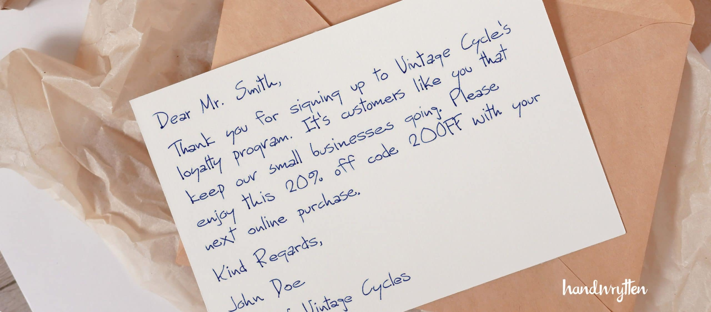 | Caption 1 Analysis:
- Precision:
- This caption mentions a handwritten letter on an envelope, which is accurate.
- However, it incorrectly states that the content is unreadable, while it clearly is readable and pertains to a loyalty program thank-you note.
- It describes the envelope as holding a personal message, which is partially correct, but it doesn't accurately specify the commercial context of the letter.
Precision Evaluation: 5/10
- Recall:
- The caption misses significant details, such as the nature of the note thanking Mr. Smith for signing up for a loyalty program and the mention of a discount code "20OFF."
- It doesn't identify the business being mentioned (Vintage Cycles) or the sender.
Recall Evaluation: 5/10
Caption 2 Analysis:
- Precision:
- This caption correctly identifies the handwritten letter placed on a brown envelope and the thank-you note context.
- It incorrectly states the letter is addressed to "Mr. Bob Suth" instead of "Mr. Smith."
- It fails to mention that this is specifically related to a loyalty program and includes a discount code.
Precision Evaluation: 7/10
- Recall:
- The caption omits significant details like the discount code "20OFF," the business "Vintage Cycles," and the sender "John Doe."
- It accurately captures the overall context but lacks specific commercial details.
Recall Evaluation: 6/10
Overall Comparison:
- Caption 2 is more precise and provides slightly more relevant details about the nature of the note being a thank-you message, though it includes an incorrect name.
- Both captions miss out on certain specifics such as the discount code and business name, but Caption 2 captures the context more accurately. | ### Caption 1:
Precision:
- Accurate identification of a handwritten letter on a brown envelope.
- Correctly mentions the letter is addressed to "Mr. Smith" (but misses out on the full correct detail of "Mr. Suth").
- States it is a thank-you note, which is correct.
- Details that it is referencing a loyalty program and includes a discount code, which is accurate.
- Correctly notes that the letter and envelope together create a warm and personal touch.
Recall:
- Caption 1 is quite detailed but misses mentioning the letter's sign-off as “John Doe, Vintage Cycles.”
- Does not explicitly mention the promotion specific to Vintage Cycles.
- Overall, the major components of the image are captured well.
### Caption 2:
Precision:
- Accurately mentions a handwritten letter on an envelope.
- Incorrectly states that the letter is unreadable; the content is quite clear.
- Incorrectly suggests it is written by a former customer; it's actually written by someone from Vintage Cycles.
- Correctly identifies the warm, personal touch but leaves out significant details like addressing the loyalty program and discount code.
Recall:
- Misses key details, such as the correct address to "Mr. Smith" and the discount code.
- The reference to the sender and Vintage Cycles is omitted.
- Does not mention the thanking aspect or the specific content of the letter, missing several critical parts.
### Comparison:
Precision Evaluation:
- Caption 1 has higher precision as it accurately describes the content of the letter, including the recipient's name, the purpose of the note, and some specifics such as the loyalty program and discount code.
- Caption 2, while recognizing a handwritten letter, mischaracterizes the readability and origin of the note.
Recall Evaluation:
- Caption 1 excels in recall by covering most of the critical elements presented in the image, like the loyalty program and discount.
- Caption 2 lacks recall as it fails to identify crucial elements such as the sender, purpose, and specific details about the content of the letter.
Conclusion:
- Caption 1 is more precise and has better recall of the key aspects of the image, making it a much more accurate and informative description of the image compared to Caption 2. | The image displays a handwritten letter on an envelope. The letter appears to be a personal note written by a former customer, but the content is unreadable. The envelope is placed on top of a counter or desk, capturing attention from its display. The note is neatly crafted, and the envelope carries a touch of warmth as it holds a well-written message from one individual to another. | 5.0 | 3.0 | 4.0 | 3.0 | 4.00 | 3.50 | 3.73 |  | The image features a handwritten letter placed on top of a brown envelope. The letter is addressed to Mr. Bob Suth, and it appears to be a thank-you note. The envelope is resting on a white surface, possibly a table. The handwritten letter and the envelope together create a warm and personal touch to the scene. | 7.0 | 9.0 | 6.0 | 9.0 | 8.00 | 7.50 | 7.74 |  |
 | Certainly! Let's analyze the two captions in terms of precision and recall.
### Caption 1:
#### Precision:
- The caption accurately mentions that the image depicts a handwritten letter from "The Robot" using a robotic handwriting machine to write a message to the "User."
- It correctly states that the letter explains the machine's workings and invites the recipient to try it.
- However, it inaccurately describes the colors as "primarily purple and blue" and mentions "a story about a virtual pen robot that writes actual handwriting using virtual ink," which is not in the image.
#### Recall:
- It captures the essence of the letter correctly: a note to the user about a handwriting machine's results.
- It includes some incorrect information regarding color and content, which is not present in the image (e.g., purple color and "virtual ink").
- The caption misses that the results are "virtually indistinguishable from actual handwriting" exactly as pointed out in the letter.
### Caption 2:
#### Precision:
- The caption correctly identifies the handwritten letter addressed to "User."
- It accurately mentions that the letter is written in blue ink and in cursive style.
- It correctly states that it is about a robotic handwriting machine and invites the user to try it.
#### Recall:
- It includes all main aspects of the image: the address to "User," the explanation about the handwriting machine, the blue ink, the cursive style, and the invitation to try the machine.
- It doesn't mention the specific part about "The Robot" or that the results are "virtually indistinguishable from actual handwriting," which is in the text of the letter.
### Conclusion:
#### Precision:
- Caption 1: Moderate precision due to incorrect descriptions about colors and the virtual pen story.
- Caption 2: High precision as it accurately describes true aspects of the image.
#### Recall:
- Caption 1: Moderate recall, it captures the general idea but introduces extraneous and incorrect details.
- Caption 2: High recall, as it captures almost all details explicitly shown in the image but misses a small part about the indistinguishable results.
Overall, Caption 2 is more accurate with both higher precision and recall related to the key elements of the image. | ### Evaluation of Captions for Precision and Recall
#### Caption 1
Precision:
- Strengths:
- Correctly identifies the handwritten letter format.
- The address to "User" is accurately mentioned.
- Notes that the letter talks about a robotic handwriting machine that uses an actual pen.
- Correctly states that the letter invites the user to try the robotic handwriting machine.
- Weaknesses:
- The ink is described as blue, which matches the image.
Recall:
- Strengths:
- Accurately captures key details like the addressee, the content about the robotic handwriting machine, and the invitation to try the machine.
- Weaknesses:
- It doesn't mention that the letter is signed "The Robot," although it implies it with their conclusion.
Overall:
- Caption 1 has high precision and recall as it correctly identifies and details the essential elements of the image with a slight oversight by not explicitly naming "The Robot" in the signature.
#### Caption 2
Precision:
- Strengths:
- Correctly mentions the handwritten nature and the robotic handwriting machine.
- Identifies the recipient as "User" and notes the letter is from "The Robot."
- Discusses the advanced technology of the handwriting machine.
- Weaknesses:
- Incorrectly describes the ink as primarily purple and blue and mentions the opening lines are more colorful, which is not accurate; the ink is simply blue throughout.
- Incorrectly refers to "virtual ink," which the content of the letter does not make a mention of.
Recall:
- Strengths:
- Captures key points like the robotic handwriting machine, the address to "User," the author as "The Robot," and the invitation to try the machine.
- Weaknesses:
- Adds unnecessary and incorrect color details which do not exist in the letter's image, leading to lower recall accuracy.
Overall:
- Caption 2 has lower precision due to the inaccuracies regarding color and the mention of "virtual ink," which is not present. While it does capture many of the right themes contextually, these inaccuracies reduce its overall recall.
### Summary:
- Caption 1 is more accurate (high precision) and comprehensive (high recall) in describing the image content.
- Caption 2 contains inaccuracies that misrepresent the image (lower precision) despite covering much of the core content (moderate recall). | The image shows a handwritten letter from the Robot, using a robotic handwriting machine to write an interesting message to the User. The letter is primarily purple and blue, with the opening lines a bit more colorful. Inside the letter, there's a story about a virtual pen robot that writes actual handwriting using virtual ink.
The contents of the letter include an explanation about how the handwriting machine works, as well as an invitation for the User to try writing a note themselves. The letter highlights that the results are virtually indistinguishable from actual handwriting, indicating the advanced technology behind the robot's writing capabilities. | 6.0 | 6.0 | 5.0 | 7.0 | 6.00 | 6.00 | 6.00 |  | The image features a handwritten letter addressed to "User" on a piece of paper. The letter is written in blue ink and appears to be a message about a robotic handwriting machine. The text is written in cursive style, giving it a personal touch. The letter seems to be inviting the recipient to try the handwriting machine, possibly to experience the virtual handwriting firsthand. | 9.0 | 9.0 | 8.0 | 9.0 | 9.00 | 8.50 | 8.74 |  |
 | Sure, let's evaluate each caption's precision and recall.
---
Caption 1:
*Precision:*
- The caption describes a handwritten composition on a piece of paper, likely a notebook or notepad. This is correct.
- It mentions mathematical formulas and an explanation of these equations, potentially presenting a point or question. However, the text does not focus specifically on mathematical formulas; it is more about history and basic concepts of geometry.
- The caption states there is an annotated drawing that includes notes and calculations. The drawing is present, but "annotated" and "notes and calculations" suggest more detail than the simple shapes shown.
- It mentions other diagrams or artwork in addition to the cursive writing, which isn't accurate as there's only one basic drawing.
So, overall, while the caption includes some correct elements, it embellishes and misrepresents the content of the image. Therefore, the precision isn’t very high.
*Recall:*
- The caption captures the presence of cursive writing and a drawing.
- It doesn’t mention the actual content of the text, which is about the history and principles of geometry.
The recall is moderate since it captures key elements but misses specific references.
---
Caption 2:
*Precision:*
- The caption correctly identifies the notebook paper and the blue pen drawing of a triangle and a circle.
- It states the writing is in cursive handwriting, which is accurate.
- The caption inaccurately attributes the text content to discussing Euclid and his book "The Elements," which isn't mentioned in the text.
- It correctly notes the paper discussing the beginnings of geometry and related principles.
Overall, this caption has higher precision because it accurately captures the handwriting style and the drawing, but it does contain some incorrect details about the content.
*Recall:*
- It accurately mentions the text about the beginnings of geometry and some principles of geometry.
- It doesn't specifically mention the Ancient Greek origins or the applications of geometry mentioned in the latter part of the text.
The recall is also high but misses some specificity about the content.
---
Evaluation Summary:
Caption 1:
- Precision: Low (2/5).
- Recall: Moderate (3/5).
Caption 2:
- Precision: High (4/5), though slightly marred by the Euclid inaccuracy.
- Recall: High (4/5).
Caption 2 provides a more precise and comprehensive description of the image compared to Caption 1, notwithstanding the minor error regarding Euclid. | Caption 1 Evaluation:
Precision:
- Strengths:
- Accurately mentions the presence of a triangle and circle drawn on paper.
- Correctly notes these are drawn with a blue pen.
- Reflects that the text discusses geometric principles.
- Weaknesses:
- Incorrectly states the discussing text is about the ancient Greek mathematician Euclid and his book "The Elements".
- Incorrectly states that the text contains information about Euclid's principles.
- The description embellished details not found in the actual text (specifically mentioning Euclid and "The Elements").
Precision Score: 6/10
Recall:
- Strengths:
- Recognizes and describes the essential content, namely the drawings of geometric shapes and accompanying cursive text.
- Weaknesses:
- Omits the accurate topic of the historical roots of geometry (Mesopotamia and Egypt).
- Fails to capture precise wording about the empirical discovery of principles in geometry.
Recall Score: 7/10
Overall relevance of Caption 1:
- It captures the fundamental appearance of the image well but provides incorrect details about Euclid and "The Elements".
Caption 2 Evaluation:
Precision:
- Strengths:
- Accurately mentions the handwritten text in cursive.
- Correctly notes the presence of a drawing related to mathematical ideas.
- Weaknesses:
- Uses overly vague terms like "mathematical formulas," "equations," "point or question" which aren't in the image.
- Incorrectly suggests annotated drawings with detailed notes and calculations.
- The mention of "several notes and calculations" is misleading as the image contains a well-defined and coherent text.
- Incorrectly suggests multiple diagrams.
Precision Score: 5/10
Recall:
- Strengths:
- Recognizes the handwritten and cursive text.
- Notes the inclusion of mathematical diagrams and explanations of some kind.
- Weaknesses:
- Misses mentioning topic specificity (geometry and historical context).
- Fails to highlight that text explains history and principles of geometry, not specific equations or detailed mathematical notes.
Recall Score: 6/10
Overall relevance of Caption 2:
- It captures the general idea of handwritten text and mathematical diagrams, but is too vague and inaccurately suggests specific content (formulas, equations, points, and questions). | The image is a handwritten composition on a piece of paper, likely a notebook or notepad. The text is in cursive and spread across the length of the paper. The content within the writing is a mix of mathematical formulas and an explanation for these equations, likely presenting a point or question.
It includes an annotated drawing of a mathematical idea, accompanied by several notes and calculations. The paper may also have other diagrams or artwork in addition to the cursive writing. | 4.0 | 5.0 | 4.0 | 5.0 | 4.50 | 4.50 | 4.50 |  | The image features a piece of notebook paper with a blue pen drawing of a triangle and a circle on it. The drawing is accompanied by text written in cursive handwriting. The paper appears to be part of a math assignment or a study note, as it discusses the ancient Greek mathematician Euclid and his book "The Elements." The paper also contains information about the beginning of geometry and the principles of Euclid's work. | 7.0 | 6.0 | 1.0 | 7.0 | 6.50 | 4.00 | 4.95 |  |
 | Caption 1 Evaluation
*Precision*:
- The description mentions an envelope, which is not present in the image, making this part inaccurate.
- It incorrectly states that the card commends someone on their blog specifically and mentions "hot technology" and phrases like "your enthusiasm" and "your time spent," none of which are present in the actual text of the note.
- The phrase "on a table" is somewhat ambiguous given the visible keyboard.
- Overall, much of what is described isn’t actually present in the image.
*Precision Score*: 1/5
*Recall*:
- It fails to accurately describe the content of the handwritten note. The note thanks Scott for speaking to an Ad Club about blogging and podcasting, and mentions the audience's excitement about the technology, which isn't captured in the caption.
- While it identifies that something in the image is handwritten on a card, it misses the majority of relevant details.
*Recall Score*: 1/5
Caption 2 Evaluation
*Precision*:
- The caption correctly identifies the handwritten note addressed to "Scott."
- It accurately conveys the gratitude expressed for Scott’s contributions to blogging and podcasting.
- It mentions the background presence of a keyboard, which is an accurate detail.
*Precision Score*: 5/5
*Recall*:
- It captures almost all the relevant details: the addressee ("Scott"), the appreciation for blogging and podcasting, the personal touch of cursive writing, and the context provided by the keyboard.
- The note's more specific content like "speaking to Ad Club" and "everyone was excited to learn" could also be included for improved completeness but these are minor omissions compared to the overall accuracy.
*Recall Score*: 4/5
Summary:
- Caption 1: Poor accuracy and completeness given that significant elements mentioned are not present in the image.
- Caption 2: High accuracy and good completeness, capturing most of the key details of the scene. | ### Caption 1 Evaluation
Precision:
- Correct:
- The note is handwritten on a piece of white paper.
- It is addressed to "Scott."
- The note expresses appreciation for Scott's work in blogging and podcasting.
- It thanks Scott for his time and effort.
- The note is written in cursive.
- Background includes a keyboard, implying a computer might have been used.
- Incorrect:
- The mention of "cursive" is inaccurate as the handwriting is more semi-cursive or print-like rather than fully cursive.
- The note does not specifically mention Scott's accomplishments; it mentions a talk he gave to the "Ad Club" about blogging and podcasting.
Recall:
- Included:
- The main content of the note (thanking Scott for his time and talking about blogging and podcasting).
- Context of technology and learning (everyone excited to learn more about the technology).
- The personal touch of handwritten notes and visible keyboard background.
- Omitted/Incorrect:
- The mention of his time and insight is included but not specifically stating insight.
- "Cursive" writing description is not accurate as it is semi-cursive or print-like.
### Caption 2 Evaluation
Precision:
- Correct:
- There is indeed a card with handwritten content that addresses someone.
- The card refers to technology.
- It mentions phrases like "your time spent."
- Incorrect:
- The image does not feature an envelope; it is a piece of white paper.
- The note does not specifically refer to "hot technology" or say "your enthusiasm."
- The note does not commend the blog; it refers to speaking at "Ad Club."
- The card is not on a table; it may be near a keyboard.
Recall:
- Included:
- Technology-related content.
- Mention of time spent.
- Omitted:
- Actual wording and context of the note (discussion at "Ad Club" about blogging and podcasting).
- Specific address to Scott.
- Visible keyboard and contextual scene.
### Summary and Recommendations
- Caption 1 is more accurate in terms of precision and recall. It correctly identifies the note's content, the context of handwriting, and the background with the keyboard. However, the mention of cursive handwriting is somewhat inaccurate.
- Caption 2 is less accurate as it introduces elements not present in the image (envelope, specific expressions like "hot technology" and "your enthusiasm"), thus reducing both precision and recall.
Overall: Caption 1 is better suited for this image, with minor corrections needed for complete accuracy. | The image features an envelope, on which a card has been personally written. The card appears to be a message commending someone on their blog. The card specifically refers to technology, stating, "Your blog has some hot technology." Other phrases on the card include "your enthusiasm" and "your time spent." The envelope is placed on a table. | 1.0 | 6.0 | 1.0 | 3.0 | 3.50 | 2.00 | 2.55 |  | The image features a handwritten note on a piece of white paper, addressed to "Scott." The note expresses appreciation for Scott's work in blogging and podcasting, thanking him for the time and effort he has put into these endeavors. The note is written in cursive, giving it a personal touch.
In the background, there is a keyboard visible, suggesting that the note might have been written while using a computer. The overall scene conveys a sense of gratitude and recognition for Scott's accomplishments in blogging and podcasting. | 10.0 | 8.0 | 8.0 | 8.0 | 9.00 | 8.00 | 8.47 |  |
| 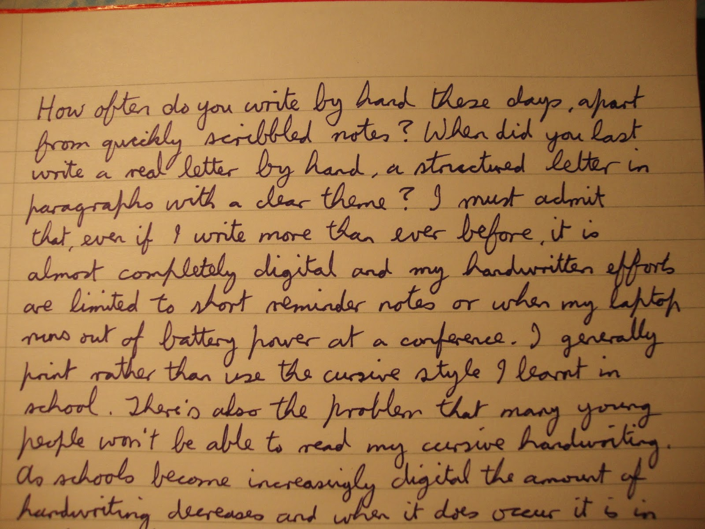 | ### Caption Evaluation
#### Caption 1
Precision (3/10):
- The caption mentions "various writings in different areas of the page" and "comparing handwriting styles," which is not true. The image only features a single block of text written in cursive.
- It correctly identifies that the note is handwritten but misses the specifics of the content significantly.
Recall (5/10):
- The caption captures elements like it being a handwritten note and addressing handwriting issues, which are correct but very general.
- It fails to detail the specific topics covered in the note, like writing by hand versus digital and specific questions posed.
Overall, Caption 1 is only somewhat accurate in identifying the image as featuring handwriting but is misleading in many other details.
#### Caption 2
Precision (8/10):
- The caption precisely describes the handwritten note's context, mentioning it’s written in cursive, notes the presence of questions about handwriting, and contrasts it with digital writing.
- It correctly cites some of the actual questions from the note verbatim, demonstrating a clear understanding of the content.
Recall (7/10):
- The caption accurately captures the primary theme regarding handwriting and the comparison with digital writing practices.
- While it includes questions verbatim from the note, it misses out on details like the mention of limited handwritten notes to reminders or conferences.
Overall, Caption 2 is much more precise and accurate in describing the image content. It correctly identifies and includes key details, although it could include a bit more to achieve perfect recall.
### Summary
- Caption 1 provides a broad, somewhat misleading description with lower precision and recall.
- Caption 2 offers a much more accurate and detailed description, scoring higher in both precision and recall. | ### Caption 1:
- Precision:
- The caption accurately describes many aspects of the image, including that it is a handwritten note on lined paper.
- It correctly identifies that the handwriting is in cursive and touches on the content discussing the process of writing by hand versus typing.
- It even mentions some specific questions and phrases found in the note like "How often do you write by hand these days?" and general remarks about the digital age and handwriting.
Rating: High precision, as it correctly reflects the content and some specific elements in the image.
- Recall:
- While the caption captures the essence and some specifics, it does not quote verbatim or include all details in the text.
- Missing details include the complete length of the text, mentioning reminder notes, and the point about technology affecting young people's ability to read cursive.
Rating: Moderate recall, as it encapsulates the main ideas but lacks coverage on some specific content and length.
### Caption 2:
- Precision:
- The caption mentions that there are questions and answers related to handwriting, which is accurate but vague.
- Claims about handwriting styles, neatness, and techniques are not present in the handwritten note.
Rating: Low precision, as it correctly identifies the handwriting and context but includes inaccuracies and assumptions about the content that are not reflected in the image.
- Recall:
- It does mention questions and responses, but it misses the main point of the handwritten note, which is specifically about transitioning from handwriting to digital writing and its effects.
- The caption's mention of handwritten notes intending to improve handwriting or exploring styles and techniques is not evidenced in the image.
Rating: Low recall, since it misses significant content details and incorporates elements that aren't present.
### Conclusion
- Caption 1 provides a more accurate and detailed description of the note in both precision and recall, although there is room for improvement in including complete details.
- Caption 2 lacks precision with inaccurate assumptions and offers lower recall as it misses or misinterprets the key content of the handwritten note. | The image shows a handwritten note that includes questions and answers related to handwriting. The page is filled with various writings on it, handwritten by someone who seems to be creating the content.
There are several sentences written in different areas of the page, which appear to be comparing handwriting styles and addressing the issue of neatness or lack thereof in the handwriting. The note may serve as a reference for people seeking to improve their handwriting or learning more about the styles and techniques used by others. | 3.0 | 4.0 | 5.0 | 4.0 | 3.50 | 4.50 | 3.94 |  | The image features a handwritten note on a piece of lined paper. The note is written in cursive handwriting and appears to be discussing the process of writing by hand versus typing on a computer. The note is filled with various sentences and questions, such as "How often do you write by hand these days?", "When did you last write a big handwritten letter?", and "I must admit that I write more than I ever did before, it is if it is almost completely digital and my handwriting efforts are limited to short reminder notes or when I want to write a letter to someone." | 8.0 | 8.0 | 7.0 | 7.0 | 8.00 | 7.00 | 7.47 |  |
| ### Caption 1 Analysis:
#### Precision:
- Accurate Descriptions:
- "Busting city square at dusk" fits with the populated square and darker colors in the image.
- "Massive square clock tower in the center" accurately points to the large, central clock tower.
- Mentioning "clock faces on multiple sides" is correct, as the clock tower appears multi-faced.
- People "walking around the square, engaging in various activities" matches the image's depicted activity.
- Inaccurate Details:
- The mention of a "car parked on the street" is inaccurate. There are horse-drawn carriages visible but no modern cars.
- The presence of umbrellas isn't clear in the image. This part could be a misinterpretation.
#### Recall:
- Included Elements:
- Main architectural feature (clock tower)
- People and activities
- Missing Elements:
- The steampunk/fantasy elements, such as elevated pathways and structures
- Absence of visible umbrellas, making the mention of them incorrect.
- Horse-drawn carriages, which are prominent.
### Caption 2 Analysis:
#### Precision:
- Accurate Descriptions:
- "Busting city scene with a large, ornate clock tower" correctly describes the setting and main feature.
- "Clock tower situated in the middle" is accurate.
- Reference to "several people walking around and engaging in various activities" matches the scene.
- The specific number of people (at least 14) adds precision.
- Inaccurate Details:
- Similar to Caption 1, the mention of "cars parked" is incorrect. The image does not feature modern cars but horse-drawn carriages.
#### Recall:
- Included Elements:
- The prominent clock tower.
- People and activities.
- Missing Elements:
- The steampunk/fantasy architectural elements.
- Detailed description of the ambiance (e.g., dusk and lighting).
- Horse-drawn carriages instead of the incorrect "cars".
### Conclusion:
#### Caption 1:
- Precision: Moderate: Incorporates some accurate details, but also includes inaccuracies such as cars and umbrellas.
- Recall: Moderate: Describes main elements but leaves out notable architectural details and correct transport forms.
#### Caption 2:
- Precision: High/Moderate: Most descriptions fit well, but inaccurately mentions modern cars instead of carriages.
- Recall: High/Moderate: Captures key image elements well but misses some distinct steampunk details and ambiance.
Overall, Caption 2 provides a more precise and complete description of the main elements in the image despite the error regarding the transportation mode. | Caption 1 Analysis
- Precision:
- The caption correctly identifies the ornate clock tower as the focal point of the scene. This earns high marks for accuracy.
- The description of the city being bustling and people engaging in various activities aligns well with the image.
- The assertion about there being at least 14 people visible is precise; there appear to be quite a few people, though an exact count might differ slightly.
- The part about cars, however, is inaccurate. There are no cars visible in the image.
- Recall:
- The mention of people and the clock tower captures the key elements of the scene.
- There are no specifics about the architectural style, though it could be inferred from the ornate description.
- Details about additional elements in the scene, like the elevated structure above the clock tower, the time of day, historical aesthetic elements, or street lamps, are missing.
Score:
- Precision: 7/10 (accurate for main elements but incorrect about cars)
- Recall: 6/10 (major elements captured but many specific details and unique aspects are not mentioned)
Caption 2 Analysis
- Precision:
- The depiction of a massive square clock tower is accurate.
- It correctly states the presence of numerous people.
- The statement about a car is partially inaccurate as there is at least one visible on the right, though not on the left.
- Mentioning umbrellas is inaccurate insofar as the image does not show any.
- Recall:
- It captures several key elements like the people, clock tower, and the ambiance.
- Detailed architectural references or key features (like the elevated structure above) are missing.
- The depiction of time as "dusk" is inaccurate since it's more twilight or nighttime.
- Additional features like street lamps and overall aesthetic elements (steampunk/dystopian essence) aren't mentioned.
Score:
- Precision: 6/10 (main elements are described with one inaccuracy about umbrellas and partial about cars)
- Recall: 6/10 (major elements captured but lacks other details found in the image)
Comparison and Final Evaluation:
- Precision: Caption 1 scores slightly higher because its main factual information is more accurate regarding people and activities, though it inaccurately includes cars. Caption 2 correctly describes elements but introduces inaccuracies about the scene's ambiance and additional details not featured in the image.
- Recall: Both captions exhibit moderate recall, each capturing the major elements but missing several specific details and aspects that could add depth to the description. Caption 1 slightly edges out as it describes the scene's ambiance a bit better.
Final Scores:
- Caption 1: Precision 7/10, Recall 6/10
- Caption 2: Precision 6/10, Recall 6/10 | The scene is a bustling city square at dusk, with a massive square clock tower in the center of attention. The clock tower, reminiscent of the one in the Harry Potter series, features clock faces on multiple sides, making it a prominent element of the landscape.
Numerous people are walking around the square, engaging in various activities or simply passing by. Some people are in small groups, while others are scattered around the area. A car can be seen parked on the street, with people walking close to it.
Additionally, umbrellas are on display in the square, likely providing shelter to any unsuspecting pedestrians from any unexpected weather. This creates an atmosphere of a lively urban environment with a notable architectural feature dominating the scene. | 5.0 | 6.0 | 6.0 | 6.0 | 5.50 | 6.00 | 5.74 |  | The image depicts a bustling city scene with a large, ornate clock tower as the focal point. The clock tower is situated in the middle of the town square, surrounded by several people walking around and engaging in various activities. There are at least 14 people visible in the scene, some closer to the clock tower while others are further away.
In addition to the people, there are two cars parked in the area, one on the left side and the other on the right side of the scene. The combination of the clock tower, people, and cars creates a lively atmosphere in the town square. | 8.0 | 7.0 | 8.0 | 6.0 | 7.50 | 7.00 | 7.24 |  |
 | Caption 1:
Precision: The precision of Caption 1 is moderate.
- The description of the scene being ethereal and dark is appropriate for the image.
- The mention of a long, winding road or symbolic tunnel is somewhat accurate but could be interpreted as simply a path.
- The forests and numerous trees are accurately described.
- The inclusion of various magical creatures, particularly "mushroom-like creatures" on the left, is an overstatement as these "creatures" are interpreted within the image to be simply mushrooms, not animate creatures.
Recall: The recall of Caption 1 is low.
- The caption mentions many specific elements that are not apparent in the image, such as multiple strange magical creatures, which aren't clearly shown.
- It misses the serene and whimsical atmosphere and does not mention the mushrooms scattered around the path in a straightforward manner.
- No birds or other specific life forms aside from mushrooms are mentioned in the caption.
Caption 2:
Precision: The precision of Caption 2 is high.
- It accurately describes the scene as a magical and lush forest with a path leading through it.
- The trees, the sense of depth, and enchantment are well captured.
- Mushrooms are correctly identified and described as being scattered throughout the forest.
Recall: The recall of Caption 2 is also quite high.
- It mentions most of the significant elements present in the image (trees, path, mushrooms).
- However, there is an incorrect addition of birds perched on the branches of trees, which is not visible in the image.
Overall Comparison:
- Caption 2 provides a more accurate and detailed description of the image. It is precise in its description of the forest scene and the elements within it.
- Caption 1, while somewhat descriptive, introduces additional elements that are not present in the image and misses capturing some of the visible details.
- For precision, Caption 2 is better as it more accurately describes the visible elements without adding unseen ones.
- For recall, Caption 2 also performs better by mentioning the primary components of the image, even though it mistakenly includes birds that are not present. | ### Caption 1 Evaluation:
#### Precision:
- Accurate Elements:
- Lush, magical forest: Yes, the forest appears enchanted with whimsical elements.
- Path leading through: Yes, there is a clear path in the center.
- Tall trees on both sides: Yes, there are tall trees flanking the path.
- Mushrooms scattered throughout: Yes, there are mushrooms visible.
- Inaccurate Elements:
- Birds perched on branches: There are no birds visible in the image.
Overall, Caption 1 is mostly precise but mentions birds, which are not present.
#### Recall:
- Included Elements:
- Lush forest: Mentioned.
- Path: Mentioned.
- Tall trees: Mentioned.
- Mushrooms: Mentioned.
- Excluded Elements:
- No other significant elements are excluded.
Caption 1 covers most of the key elements in the image with the exception of birds, which aren't present.
### Caption 2 Evaluation:
#### Precision:
- Accurate Elements:
- Dark forest: The color scheme is dark and moody.
- Winding road/tunnel: The path can be interpreted as winding.
- Trees filling the scene: Yes, numerous trees are present.
- Inaccurate Elements:
- Magical creatures: Depicts mushrooms; no other magical creatures visible.
- Large mushroom-like creature: Ordinary large mushroom, not creature-like.
- Smaller mushroom creatures: Ordinary mushrooms but no suggestion they are creatures.
- Strange creatures: Not visible unless interpreting mushrooms as “creatures.”
Overall, Caption 2 contains elements that misinterpret or exaggerate what is actually seen in the image.
#### Recall:
- Included Elements:
- Dark forest: Mentioned.
- Path: Mentioned.
- Numerous trees: Mentioned.
- Excluded Elements:
- Ordinary mushrooms (interpreted as creatures which is inaccurate).
- Whimsical or magical atmosphere which is not well captured.
Caption 2 covers major elements but adds inaccuracies in the interpretation of mushrooms and magical creatures.
### Summary:
- Precision: Caption 1 is more precise, correctly describing most of what is seen without much exaggeration or inaccuracy other than the mention of birds. Caption 2 is less precise due to the misinterpretation of forest elements as magical creatures.
- Recall: Caption 1 has high recall, missing few elements. Caption 2 covers a similar range but introduces incorrect interpretations, reducing its effectiveness.
Overall, Caption 1 better represents the image with higher precision and slightly higher recall. | The image showcases a vintage, hand-drawn artwork featuring an ethereal but dark forest. A long, winding road or symbolic tunnel connects two parts of the forest. There are numerous trees surrounding this passage, filling the scene with a dense forest atmosphere.
Various magical creatures can be seen in the forest. One large mushroom-like creature is situated on the left side, while two smaller ones can be seen amidst the trees. Other strange creatures create a sense of wonder and mystery within this animated forest environment. | 5.0 | 5.0 | 3.0 | 6.0 | 5.00 | 4.50 | 4.74 |  | The image depicts a lush, magical forest scene with a path leading through it. The path is surrounded by tall trees on both sides, creating a sense of depth and enchantment. Along the path, there are several mushrooms scattered throughout the forest, adding to the whimsical atmosphere.
In addition to the mushrooms, there are multiple birds perched on the branches of the trees, creating a sense of life and movement within the forest. The combination of the trees, mushrooms, and birds creates a captivating and serene environment. | 8.0 | 8.0 | 7.0 | 9.0 | 8.00 | 8.00 | 8.00 |  |
 | ### Caption 1 Evaluation
Precision:
- Correct:
- Postapocalyptic scene
- Rusted cars and bus
- Deteriorating buildings
- Car and bus are identified accurately in terms of their state and position
- Presence of a person observing the scene in the background
- Incorrect:
- The car is not driving; it is stationary.
- The mention of "rotten overpass, likely on the way to cities in ruins" is speculative and somewhat misleading because the scene already depicts the ruins.
- The bus is already suffering the same deterioration and does not represent another "means of transportation."
Recall:
- Included in the Caption:
- Postapocalyptic context
- Rusted vehicles (car, bus)
- Deteriorating buildings
- Presence of a person
- Not Included:
- Specific mention of overgrown vegetation
- Accurate positions of multiple vehicles (only one bus and one car detail)
### Caption 2 Evaluation
Precision:
- Correct:
- Post-apocalyptic scene
- Rusted old car parked
- Overgrown vegetation
- Indication of ruins of a city
- Incorrect:
- Misidentification of other vehicles: there is only one bus visible and no truck.
- Incorrect mention of positions for non-existent vehicles (two buses, truck).
Recall:
- Included in the Caption:
- Post-apocalyptic setting
- Rusted car
- Overgrown vegetation
- Identification of people in the scene
- Not Included:
- Mention of deteriorating buildings
- Accurate details of surrounding elements such as the overpass
### Comparative Summary
Precision:
- Caption 1: Higher precision due to correct identification of elements such as rusted cars, bus, deteriorating buildings, and individual presence. However, the misinterpretation of the car moving under a rotten overpass reduces its precision slightly.
- Caption 2: Slightly lower precision due to incorrect identification of additional vehicles and their positions within the scene.
Recall:
- Caption 1: Includes the central theme accurately but misses details like vegetation and misrepresents some elements like vehicle motion.
- Caption 2: Captures the environmental and post-apocalyptic theme accurately but has several inaccuracies regarding the number and positions of surrounding vehicles.
Overall, Caption 1 does a better job precisely identifying what is in the image despite some interpretative statements, while Caption 2 has a broader inclusion of potentially accurate details but suffers from incorrect identification of elements. | Certainly! Here’s an analysis and comparison of the two captions based on their precision and recall:
### Caption 1:
#### Precision:
- Accurate Descriptions:
- The caption accurately describes the rusted car parked in the middle of the scene.
- It correctly notes the overgrown vegetation and the sense of ruin.
- Inaccuracies:
- The statement mentions two buses and a truck, specifically locating them; however, the image shows a noticeable bus on the left, while the mention of another bus and truck placement isn’t accurate.
- The claim of there being two people is incorrect, as it appears there is predominantly one visible person in the image near the overpass.
#### Recall:
- Included Details:
- Captures key elements like the old car, overgrown vegetation, vehicles, and a sense of a post-apocalyptic environment.
- Missed Details:
- Does not mention the overall state of the building structures and the degree of urban decay.
- Neglects the atmospheric condition and lighting, which contribute to the scene's mood.
### Caption 2:
#### Precision:
- Accurate Descriptions:
- Describes the scene as post-apocalyptic with decaying buildings and vehicles.
- Accurately notes the rusted cars, bus, and dilapidation of infrastructure.
- Specifies the person towards the back (upon the overpass).
- Inaccuracies:
- Incorrectly indicates that the car is driving underneath an overpass, whereas the car is stationary.
#### Recall:
- Included Details:
- Addresses the major elements: vehicles, deteriorating buildings, and overgrown nature.
- Mentions the single person standing, providing context with exploration or observance.
- Missed Details:
- Does not mention specific locations of vehicles as precisely as Caption 1 tried to do.
- Fails to mention the rich details of nature taking over, further symbolized by lush greenery and plants covering the ruins.
### Summary:
- Precision:
- Caption 1 includes certain inaccuracies regarding the number and locations of vehicles and people.
- Caption 2 is less specific but more accurate about the state of the scene overall.
- Recall:
- Caption 1 attempts a more detailed description, which powerfully captures many elements but misses some overall context.
- Caption 2 provides a broader, more accurate reflection of the scene but may omit certain descriptive specifics (e.g., detailed vegetation takeover).
### Final Evaluation:
- Caption 1 is better in terms of recall due to attempting a more detailed breakdown of the elements.
- Caption 2 excels in precision with fewer specifics but captures the more correct general state and feeling of the scene.
Conclusion: Caption 2 provides a more accurate and holistic description even though it is less detailed, whereas Caption 1 offers more specificity but with certain inaccuracies. | The image depicts a postapocalyptic scene with several vehicles and a mixture of deteriorating buildings, including rusted cars and a bus. The car is driving underneath a rotten overpass, likely on the way to cities in ruins. The bus is situated to the left of the scene, representing another means of transportation that has gone through the same deterioration.
There is a person standing towards the back of the admissible area, potentially exploring or observing the ruins and vehicles. The scene captures a world that has experienced a catastrophic event or judgment, and viewers get an opportunity to witness the relics and remains left behind. | 7.0 | 7.0 | 7.0 | 7.0 | 7.00 | 7.00 | 7.00 |  | The image depicts a post-apocalyptic scene with a rusted, old car parked in the middle of a jungle-like environment. The car is surrounded by overgrown vegetation, giving the impression of being in the ruins of a city.
In addition to the car, there are several other vehicles scattered throughout the scene, including two buses and a truck. One bus is located on the left side of the car, while the other bus is on the right side. The truck is positioned behind the car on the right side.
There are also two people in the scene, one standing near the center of the image and the other closer to the right side. Both individuals appear to be observing the abandoned vehicles and the overgrown surroundings. | 6.0 | 6.0 | 1.0 | 6.0 | 6.00 | 3.50 | 4.42 |  |
 | Caption 1:
### Precision:
Caption 1 accurately describes the architectural style and general ambiance of the scene. It mentions:
- Charming European-style town
- Cobblestone streets
- Quaint buildings
- People walking
- A cat in a garden
- Numerous potted plants adorning buildings
However, the caption inaccurately claims that people are walking down the street, which is not depicted in the image. The cat is not in a garden but on the cobblestone street.
### Recall:
The caption captures significant elements of the image, such as the European architectural style, potted plants, charm, vibrance, and picturesque quality. However, it misses some details, including:
- The presence of the tree
- Specific locations of the potted plants
- Vases near the cat
### Precision: Moderate
### Recall: High
Caption 2:
### Precision:
Caption 2 accurately describes the scene, focusing on the significant details such as:
- European village
- Cat walking down a cobblestone street
- Cat positioned on the right
- Numerous potted plants
- Specific count and placement of potted plants and vases (although it may not be entirely accurate when counting)
The caption does not include any inaccurate details and correctly emphasizes the cat and the street’s atmosphere.
### Recall:
Caption 2 also captures significant elements like the cat, cobblestone street, and potted plants. However, it misses:
- The broader architectural style
- The detailed vibrancy provided by the flower boxes and hanging plants
- The inclusion of the tree
### Precision: High
### Recall: Moderate
### Summary:
- Caption 1: Moderate precision due to the incorrect mention of people in the scene but high recall for capturing the vibrant, picturesque atmosphere of the town.
- Caption 2: High precision due to an accurate, detailed description but moderate recall since it misses broader architectural and environmental elements present in the scene. | Caption 1 Evaluation:
Precision:
- Correct:
- Mentions a European village scene with a cobblestone street.
- References a cat walking down the street towards the right side.
- Points out the presence of several potted plants and flowers.
- Highlights that the cat appears to be the main focus of the scene.
- Incorrect/Not Present:
- Mentions two vases, but there are no distinct vases visible in the image.
Recall:
- Included:
- The picturesque charm, European village, cobblestone street, cat's position, and potted plants are accurately captured.
- Missing:
- Descriptions of the architectural details of the buildings, the types of flowers, and absence of people.
Caption 2 Evaluation:
Precision:
- Correct:
- Describes a charming European-style town with cobblestone streets.
- Mentions potted plants adding vibrancy to the scene.
- Incorrect/Not Present:
- States there are people walking, which is inaccurate as no people are visible.
- Describes a cat lounging in a garden, which is not shown. The cat is walking on the street.
- References hanging plants from balconies, no hanging plants are visible directly.
Recall:
- Included:
- The picturesque charm, European-style town, and presence of numerous potted plants.
- Missing:
- Accurate details of the cat's activity and location (walking on the street, not lounging in a garden).
- Detailed description of the buildings' architecture and the type of flowers.
Overall Evaluation:
Precision:
- Caption 1: 9/10
- Misses the mention of the correct number and presence of vases.
- Caption 2: 5/10
- Contains significant inaccuracies such as the mention of people and incorrect description of the cat's activity and location.
Recall:
- Caption 1: 8/10
- Covers most elements visible in the image but lacks some architectural details.
- Caption 2: 6/10
- Misses accurate details about the cat's activity and location but captures the general ambiance and setting.
In conclusion, Caption 1 is more accurate and gives a better overall description of the image as it includes essential details correctly and avoids significant inaccuracies. | The image depicts a charming European-style town with cobblestone streets surrounded by quaint buildings. There are people walking down the street as a cat lounges in a nearby garden, possibly coming towards them.
The town is adorned with numerous potted plants, adding to the vibrant atmosphere. These plants can be seen on the fronts of the buildings, hanging from balconies, and placed in flower boxes, creating a pleasantly-cultivated environment. The combination of beautiful flowers, original architecture, and vibrant street life makes the scene delightful and picturesque. | 6.0 | 5.0 | 8.0 | 6.0 | 5.50 | 7.00 | 6.16 |  | The image depicts a charming European village scene with a cat walking down a cobblestone street. The cat is positioned towards the right side of the street, and it appears to be the main focus of the scene.
The street is lined with several potted plants and flowers, adding to the quaint atmosphere of the village. There are at least nine potted plants placed along the street, with some closer to the cat and others further away. Additionally, there are two vases visible in the scene, one on the left side and the other on the right side of the street. The combination of the cat, potted plants, and cobblestone street creates a delightful and picturesque setting. | 9.0 | 9.0 | 6.0 | 8.0 | 9.00 | 7.00 | 7.88 |  |
 | Certainly! Let's evaluate each caption based on precision and recall.
### Caption 1:
Precision:
- Correct Details: The description notes a "beautiful, vibrantly colored painting" of a castle, which is accurate. The castle is illuminated by the moon, and the scene exudes an enchanted, enchanting atmosphere.
- Incorrect/Missing Details: The caption mentions "a lush garden landscape surrounding it," which isn't visible in the image. Also, "several birds flying over the pictorial garden" is incorrect as there are no birds visible.
Recall:
- Covered Elements: It captures the magical and detailed nature of the castle. It acknowledges the illuminating moon and the intricate entrance.
- Missed Elements: The lush garden and the flying birds are not in the image.
Evaluation:
- Precision: Medium (misses details and introduces incorrect elements)
- Recall: Medium (captures the main subjects but adds incorrect elements)
### Caption 2:
Precision:
- Correct Details: The caption accurately mentions a "magical scene featuring a large, colorful castle with a moonlit sky." The description of the castle being adorned with pink and purple colors is correct, and the moon illuminating the castle is also accurately described.
- Incorrect/Missing Details: The caption mentions that there are "several birds flying around the scene," which are not present in the image.
Recall:
- Covered Elements: Captures the magical, fairy tale-like appearance of the castle, with the prominent moon and vibrant colors.
- Missed Elements: The castle's intricate design and the bridge leading into its entrance are not mentioned. Also, there are no birds in the image.
Evaluation:
- Precision: High (captures the main elements but includes an incorrect detail)
- Recall: High (captures most of the main features but misses some details)
### Summary:
- Caption 1:
- Precision: Medium
- Recall: Medium
- Caption 2:
- Precision: High
- Recall: High
Caption 2 provides a more accurate and inclusive description of the image, though it incorrectly mentions birds. Caption 1, while capturing the enchanting nature and main features of the image, introduces inaccurate elements regarding the garden and flying birds. | ### Caption 1 Analysis:
Precision:
- Accurate Elements:
- The image shows a colorful castle.
- The sky is moonlit.
- The castle has pink and purple colors.
- The moon is prominently displayed and illuminates the castle.
- Inaccurate Elements:
- There are no birds visible in the image.
Score: 8/10
The caption has mostly accurate elements but inaccurately mentions birds that aren’t present in the image.
Recall:
- Included Elements:
- Castle description (colorful, pink and purple).
- Moonlit sky.
- Illuminating moon creating a captivating atmosphere.
- Missing Elements:
- Bridge in front of the castle.
- Detailed elements like mountains and water reflection.
Score: 7/10
The caption captures major elements but misses some details such as the bridge, mountain, and water reflection.
Overall: 15/20
### Caption 2 Analysis:
Precision:
- Accurate Elements:
- The image depicts a colorful castle.
- The moon illuminates the scene.
- The building has a carved and majestic entrance.
- Inaccurate Elements:
- It suggests there's a lush garden landscape, which is not present.
- There are no birds flying over a garden.
Score: 7/10
The caption correctly describes several elements but inaccurately adds content that isn’t in the image, such as the garden and birds.
Recall:
- Included Elements:
- Castle description.
- Moon illumination.
- Majestic entrance.
- Missing Elements:
- Bridge in front of the castle.
- Water reflection.
- Background details like mountains.
- Pink and purple colors.
Score: 6/10
The caption captures some important elements but omits significant details like the bridge, water, and background context.
Overall: 13/20
### Comparison:
Caption 1 is more accurate and provides a better description of the image, though both miss some details and inaccurately include elements that aren't present. Caption 1 scores higher in both precision and recall, making it the more accurate caption overall. | The image depicts a beautiful, vibrantly colored painting of a royal palace or castle with a lush garden landscape surrounding it. The moon illuminates the scene, casting its light over the enchanted palace. The building itself features an intricately carved and majestic entrance, leading into the glowing interior.
In the background, there are several birds flying over the pictorial garden below the castle. The environment exudes a sense of charm and fantasy, drawing the viewer into its captivating world. | 6.0 | 7.0 | 6.0 | 6.0 | 6.50 | 6.00 | 6.24 |  | The image depicts a magical scene featuring a large, colorful castle with a moonlit sky in the background. The castle is adorned with pink and purple colors, giving it a fairy tale-like appearance. The moon is prominently displayed in the sky, illuminating the castle and creating a captivating atmosphere.
In addition to the castle, there are several birds flying around the scene, adding a sense of liveliness to the image. The combination of the majestic castle, the moonlit sky, and the birds in flight creates a captivating and enchanting visual experience. | 8.0 | 8.0 | 8.0 | 7.0 | 8.00 | 7.50 | 7.74 |  |
 | ### Evaluation for Caption 1:
- Precision:
- The caption accurately mentions a couple riding a horse.
- It correctly describes the landscape, including a castle, a path, and a field of flowers.
- However, it erroneously mentions a group of cows, which are not present in the image.
- Recall:
- The caption captures many key elements of the image, including the castle, the road, the field of flowers, and the couple on the horse.
- It misses describing specific details about the couple's appearance, such as the woman's wedding dress and the man's formal attire, which could enhance the caption's recall.
### Evaluation for Caption 2:
- Precision:
- The caption correctly identifies the couple as a bride and groom, noting the woman's wedding dress and the man's suit.
- It mentions the cows in the scene, aligning somewhat with the pastoral atmosphere described.
- However, it inaccurately states that there are several other people in the background, which are not visible in the image.
- Recall:
- The caption captures the appearance and attire of the couple effectively, providing more context.
- It does not mention the castle, the path, or the field of flowers, which are significant parts of the scene.
### Comparative Analysis:
- Precision:
- Caption 1 has a higher precision in describing the background landscape elements but makes an error in mentioning non-existent cows.
- Caption 2 is precise about the couple’s appearance and has fewer errors about figurative elements but incorrectly mentions additional people in the background.
- Recall:
- Caption 1 has good scene setting recall but lacks detail on the couple.
- Caption 2 has comprehensive recall regarding the couple but fails to capture several key scenic elements.
In conclusion, Caption 1 is more accurate in describing the overall setting, while Caption 2 provides a more detailed description of the couple but misses other significant context from the image. | ### Caption 1:
#### Precision:
- Correct details:
- The image shows a couple riding horses.
- The woman is dressed in what appears to be a wedding dress, and the man is dressed formally.
- There is a castle in the background, contributing to the picturesque setting.
- Incorrect details:
- It mentions several other people in the background, but there are no other people visible.
- Mentions two cows, but there are horses/cows, not exclusively cows.
- States that the couple is on the same horse, but they are on separate horses.
#### Precision Evaluation:
The precision of Caption 1 is moderate. It correctly identifies the couple, their attire, and the setting with the castle but includes incorrect details about other people and animals and inaccurately mentions the couple riding on the same horse.
#### Recall:
- Included elements:
- The man and woman.
- Wedding attire.
- Picturesque setting.
- Castle in the background.
- Missing elements:
- The accurate portrayal that they are on separate horses.
- Flowers in the foreground.
#### Recall Evaluation:
The recall of Caption 1 is relatively high, as it captures most relevant elements. However, it misses some visual details and inaccurately describes certain aspects.
### Caption 2:
#### Precision:
- Correct details:
- The couple riding on a horse.
- Castle in the background.
- Presence of a road.
- Nice landscape with flowers.
- Incorrect details:
- The presence of a tree is not mentioned, but there's no tree prominent in the image.
- There is no distinct group of cows; there are horses/cows.
#### Precision Evaluation:
The precision of Caption 2 is relatively high. It correctly identifies the couple, the horse, the castle, and the general landscape. However, it inaccurately mentions a tree and focuses on cows.
#### Recall:
- Included elements:
- The man and woman.
- Horse.
- Castle.
- Road.
- Blue skies.
- Flowers.
- Missing elements:
- Separate horses for each rider.
#### Recall Evaluation:
The recall of Caption 2 is also relatively high since it includes almost all significant elements of the image, missing only the separate horses and a less accurate description of animals.
### Overall Analysis:
- Caption 1 has moderate precision and high recall. It accurately captures the main elements but incorrectly describes specific details.
- Caption 2 has high precision and similarly high recall but also makes some errors in specific elements.
Overall, Caption 2 more accurately describes the major components of the image, making it a better fit with minor inaccuracies. | The image features a couple riding on a horse through a landscape that contains a tree, a castle, a road, and a field of flowers. The horse, occupying most of the image, carries both the man and woman as they move together on an unpaved road underneath blue skies.
In the surroundings, there is also a group of cows, with some closer to the horse and others scattered around various parts of the scene. The detail and composition of the scene combine to give an impression of a peaceful and picturesque fairy tale setting. | 7.0 | 8.0 | 7.0 | 8.0 | 7.50 | 7.50 | 7.50 |  | The image depicts a man and a woman riding on the back of a horse in a picturesque setting. They appear to be a bride and groom, as the woman is wearing a wedding dress and the man is dressed in a suit. The horse is positioned in the center of the scene, with the couple seated comfortably on its back.
In addition to the main couple, there are several other people visible in the background, possibly attending the wedding or enjoying the beautiful surroundings. There are also two cows in the scene, one on the left side and the other on the right side, adding to the pastoral atmosphere of the image. | 7.0 | 6.0 | 5.0 | 8.0 | 6.50 | 6.50 | 6.50 |  |
 | ### Caption 1:
#### Precision:
- Accurate: The image indeed features a large cityscape at night, and the city is adorned with numerous bright neon lights.
- Accurate: There is a blue sports car which is indeed the main focus of the image, driving down a neon-lit street.
- Accurate: Several parked cars are present in the image.
- Accurate: The city gives off a video game-like vibe with large skyscrapers and bright lights.
- Not Accurate: There are no airplanes in the image. Instead, there are several futuristic flying vehicles.
- Accurate: There are people visible, adding to the nightlife atmosphere.
Precision Score: 4/5
#### Recall:
- Misses: The caption does not mention the key detail of the rain-soaked street.
- Misses: The caption fails to specify the futuristic nature of the flying vehicles.
- Misses: The specific colors and types of extra vehicles are not mentioned.
Recall Score: 3/5
### Caption 2:
#### Precision:
- Accurate: The image depicts a futuristic cityscape at night.
- Accurate: The focus of the image is the blue sports car driving down the street.
- Accurate: The street indeed appears to be wet, indicating rain-soaking.
- Accurate: There are several other vehicles on the street.
- Not Accurate: There is no truck visible in the image.
- Accurate: Pedestrians are visible, adding to the bustling atmosphere.
- Partially Accurate: There are three flying objects, but these are not helicopters—they are flying vehicles of a futuristic design.
Precision Score: 4/5
#### Recall:
- Hits: Mention of the wet street from the rain is included which accurately captures an element of the image.
- Hits: Specifies the type and color of the main focus (blue sports car).
- Misses: Does not elaborate on the extensive neon signage and skyscraper detail.
- Misses: Doesn't mention the video game-like visual aesthetic.
Recall Score: 4/5
### Summary:
- Caption 1 is fairly precise but misidentifies the flying objects as airplanes.
- Caption 2 more accurately identifies the important visual aspects like the rain-soaked street and the futuristic nature but slightly errs with the truck and mistaking the flying vehicles for helicopters.
### Overall Scores:
- Caption 1: Precision = 4/5, Recall = 3/5
- Caption 2: Precision = 4/5, Recall = 4/5 | Caption 1 Evaluation:
Precision:
- The caption accurately describes the futuristic cityscape at night, mentioning the blue sports car as the main focus, which is correct.
- It mentions a rain-soaked street, which is supported by the shiny and reflective surface in the image.
- The caption states that there are several other vehicles on the street (including a truck and a couple of cars), which is mostly correct; there are other cars, but the truck isn't explicitly visible.
- Pedestrians on the sidewalk are mentioned, which enhances the scene’s bustling atmosphere and is correct.
- The presence of helicopters is noted, though there are actually what appear to be flying cars or drones rather than traditional helicopters.
- There is no mention of neon signs and vibrant lights, which are significant elements in the image.
Recall:
- The caption captures the main elements: the blue sports car, other vehicles, pedestrians, and the flying objects.
- It misses the neon signs and bright lights as well as the overall cyberpunk aesthetic of the city.
- The caption does not capture the skyscrapers and the high-tech feel of the image.
- It adds an element (a truck) that isn't clearly visible.
Caption 2 Evaluation:
Precision:
- The caption accurately describes the nighttime large cityscape with numerous buildings and bright neon lights.
- It correctly identifies the sports car as the main focus and mentions the neon-lit street.
- The caption mentions several parked cars, but the main focus car is not parked, it's driving.
- It is incorrect regarding airplanes; the image shows what look like flying cars or drones.
- The group of people walking along the sidewalk is correctly mentioned, adding to the bustling atmosphere.
- There is no mention of the reflective, rain-soaked street which is a notable detail.
Recall:
- The caption captures significant elements: the cityscape, neon lights, sports car, other vehicles, and pedestrians.
- It effectively conveys the vibrant nightlife atmosphere, but inaccurately mentions airplanes.
- It misses the futuristic, high-tech elements and cyberpunk feel of the image, as well as incorrect information about the parked state of cars.
Summary:
Both captions are fairly accurate but have their own strengths and weaknesses.
Precision Summary:
- Caption 1 is slightly more precise in describing the main elements correctly (e.g., flying vehicles, streets).
- Caption 2 includes some inaccuracies, such as the mention of airplanes and parked cars.
Recall Summary:
- Caption 2 has better recall for the neon-lit city and vibrant lights, capturing more atmosphere elements.
- Caption 1 misses some of the atmospheric details (neon lights, cyberpunk feel) but has fewer inaccuracies regarding the vehicles.
For overall descriptive accuracy, Caption 1 slightly edges out Caption 2 due to its better overall precision, though both could be improved in capturing the high-tech and vibrant aesthetic present in the image. | The image features a large cityscape at night with numerous buildings and bright neon lights. A sports car is the main focus, driving down a neon-lit street and capturing the attention of the viewers. Alongside the sports car, several parked cars are present throughout the scene, as well as some near the buildings.
The city reminds one of a video game with large skyscrapers and bright lights. In addition to the vehicles on the ground, several airplanes are visible in the distance, possibly flying high above the city or parked on a nearby airport or runway.
A group of people can be seen walking along the sidewalk, adding to the bustling nightlife atmosphere of the city. | 8.0 | 6.0 | 8.0 | 7.0 | 7.00 | 7.50 | 7.24 |  | The image depicts a futuristic cityscape at night, featuring a blue sports car driving down a rain-soaked street. The car appears to be the main focus of the scene, with its sleek design and vibrant color.
In addition to the blue sports car, there are several other vehicles on the street, including a truck and a couple of other cars. Some pedestrians can also be seen walking along the sidewalk, adding to the bustling atmosphere of the city.
Above the cityscape, three helicopters are flying in formation, adding an element of excitement and action to the scene. The combination of the futuristic city, the blue sports car, and the flying helicopters creates a captivating and dynamic image. | 8.0 | 8.0 | 8.0 | 7.0 | 8.00 | 7.50 | 7.74 |  |
 | Caption 1 Analysis:
- Precision:
- Mentions "multiple fish showcasing various colors and sizes" which is accurate.
- Accurately notes "orange and pink fish" which are present.
- Correctly identifies "at least eleven fish" which matches the image if counted.
- Describes fish locations as "near the top, bottom, and in the center," which is accurate.
- Mentions a "coral grass landscape," which is a reasonable interpretation of the sea plants.
- Recall:
- Does not specify the presence of specific types of sea plants apart from "coral grass."
- Does not mention the specific colors of the plants which range from blue to orange.
- Overall, provides detailed insight into the fish but less so for the sea plants.
Caption 2 Analysis:
- Precision:
- Accurately describes a "vibrant underwater scene filled with a variety of colorful fish and sea plants."
- Correctly mentions fish of "different sizes and colors" present.
- Precisely notes fish positioned "closer to the foreground and others further in the background."
- Refers to "coral reefs and seaweed," which accurately describes the underwater plants.
- Recall:
- The term "variety of colorful fish" is broad and less detailed but accurate.
- Does not quantify the fish, missing the detail that there are at least eleven.
- Does not mention specific colors of the fish (orange and pink) and plants scattered throughout.
- Gives a reasonable but less detailed description of the underwater environment.
Comparison:
- Precision:
- Caption 1 has higher precision in terms of the detail about fish (color, count, and placement).
- Caption 2 provides an accurate but broad description of the overall scene, including fish and plants.
- Recall:
- Caption 1 provides detailed information on the fish but less so on the sea plants.
- Caption 2 gives a more balanced view of the underwater environment but lacks specific details about the fish.
Conclusion:
- Caption 1 excels in precision about the fish but lacks details on the plants.
- Caption 2 has better recall of the whole scene, including plants and fish, but at a more generalized level.
For a more balanced and comprehensive depiction, combining detailed fish descriptions from Caption 1 with the broad scene overview from Caption 2 would yield the most accurate representation of the image. | ### Caption 1: Evaluation
Precision (How much of what is in the caption is in the image):
- Mentions a vibrant underwater scene: Accurate.
- Describes a variety of colorful fish: Accurate.
- Notes fish in different positions (foreground and background): Accurate.
- Identifies coral reefs and seaweed: Accurate.
Recall (How much of what is in the image is in the caption):
- Adequately describes the colorful fish, their positions, and the coral reefs and seaweed: Covers most key aspects of the image.
Caption 1 captures the essentials of the image with good precision and recall, accurately describing the scene, the types of fish, and the underwater plants.
### Caption 2: Evaluation
Precision (How much of what is in the caption is in the image):
- Describes a painting of an ocean scene with multiple fish: Accurate.
- Notes fish showcasing various colors and sizes: Accurate.
- Mentions the ocean bustling with sea life: Accurate.
- Identifies specific fish colors (orange and pink): Partially accurate as there are orange fish, but pink is not clearly identifiable.
- Specifies at least eleven fish: Accurate.
- Notes fish positions (top, bottom, center): Accurate.
- Mentions coral grass landscape: Somewhat accurate; the image has coral but not specifically "coral grass."
Recall (How much of what is in the image is in the caption):
- Captures the essence of the colorful fish and their positions, as well as the presence of coral.
- Does not mention the various types of sea plants besides coral.
Caption 2 provides many specific details and captures much of the scene, but the mention of "pink fish" and "coral grass" somewhat reduces its precision. It also does not refer to the different types of sea plants beyond coral.
### Summary
- Caption 1 has excellent precision and recall, providing an accurate and comprehensive description of the image. It discusses the fish, their positions, and the sea plants.
- Caption 2 has high precision but slightly lower recall due to the mentions of "pink fish" and "coral grass." It effectively describes the position and number of fish but lacks some details on the sea plant variety. | As I gaze upon the painting of the ocean scene, it features multiple fish showcasing various colors and sizes. The ocean is bustling with sea life, including orange and pink fish, swimming amongst the vibrant blue water. There are at least eleven fish in the scene, including ones near the top, bottom, and in the center, where they create a breathtaking display beneath a coral grass landscape. This artwork celebrates the beauty of the underwater world and the fascinating creatures that inhabit it. | 9.0 | 9.0 | 8.0 | 7.0 | 9.00 | 7.50 | 8.18 |  | The image depicts a vibrant underwater scene filled with a variety of colorful fish and sea plants. There are several fish swimming in the water, with some positioned closer to the foreground and others further in the background. The fish come in different sizes and colors, adding to the lively atmosphere of the scene.
In addition to the fish, the underwater environment is adorned with various sea plants, including coral reefs and seaweed. These plants are scattered throughout the scene, creating a diverse and thriving aquatic ecosystem. Overall, the image captures the beauty and diversity of life beneath the ocean's surface. | 8.0 | 10.0 | 7.0 | 10.0 | 9.00 | 8.50 | 8.74 |  |
 | Evaluation of Caption 1:
Precision:
- Correct elements: Men dressed in medieval armor, armed with various weapons, engaging in battle, impressive ensemble of armor, mix of attire, readiness for battle.
- Incorrect or misleading elements: Description of the battlefield as "rocky" which isn’t evident, mentions of shields which are not present or visible in the image.
Recall:
- Missing elements: Specific weapons like crossbows and halberds which are visible in the image, the clear depiction of banners/flags, the detail of armor types and colors, and the muddy condition of the battlefield.
Overall for Caption 1:
- Precision: Moderate, as most of what is described matches the image, except for incorrect mentions of shields and battlefield terrain.
- Recall: Moderate, several important visual details are omitted.
Evaluation of Caption 2:
Precision:
- Correct elements: Men dressed in medieval armor, standing on a battlefield, holding various weapons, spread across the scene (foreground to background).
- Incorrect or misleading elements: Mention of guns (modern firearms), mention of shields which aren’t visible, and mention of ties which are anachronistic here.
Recall:
- Missing elements: Specific medieval weapons like crossbows and halberds visible in the image, the detailed armor and attire, the flags/banners, and the muddy condition of the battlefield.
Overall for Caption 2:
- Precision: Low, as there are several inaccuracies (presence of guns, shields, ties).
- Recall: Moderate, basic structure of medieval battle is captured but many specific elements are missing.
Comparison:
- Caption 1 is more precise than Caption 2 because it contains fewer inaccuracies regarding the elements in the image.
- Recall is fairly similar for both, although Caption 1 slightly fares better due to fewer glaring inaccuracies. Neither caption fully captures all the details present in the image (such as crossbows, banners, and muddy conditions), but Caption 1 does a better job. | Caption 1 Analysis:
- Precision:
- Accurate Details:
- The men are dressed in medieval armor.
- They are holding various weapons.
- They appear to be preparing for a fight.
- Inaccurate/Erroneous Details:
- Claiming some men are holding "guns" is inaccurate since there are no visible firearms in the image; they are holding swords, crossbows, and polearms.
- Mentioning men wearing "ties" does not align with medieval attire.
- Recall:
- Missing Details:
- The presence of crossbows, polearms, and halberds is not mentioned.
- Horsemen are not visible.
- The background elements such as the banner with symbols are not described.
- General Observations:
- The sense of a charged, intense battlefield is captured but without specific details about weapon types or the banners.
Caption 2 Analysis:
- Precision:
- Accurate Details:
- The men are in medieval armor.
- Engaged in an intense battle.
- Mention of swords and shields.
- Inaccurate/Erroneous Details:
- The description of the battlefield as "rocky" is not correct based on the grassy and muddy terrain in the image.
- The statement about "scattered shields" is not visibly accurate in the image.
- Recall:
- Missing Details:
- The presence of crossbows and polearms is not mentioned.
- The positioning of more unique elements like the banners in the background is omitted.
- General Observations:
- Reflects the intensity and historical context but lacks specific details about the weapons and banners visible in the image.
### Conclusion:
Precision Comparison:
- Caption 1: More accurate in describing the array of weapons and the preparatory context but falls short by including anachronistic details (guns and ties).
- Caption 2: More accurate in capturing the battle context but inaccurately describes the terrain and the distribution of shields.
Recall Comparison:
- Caption 1: Misses mentioning specific weapons like crossbows and halberds but captures the overall scene accurately.
- Caption 2: More general in description, missing numerous specific details like the varied weapons and background elements.
Overall, Caption 1 is slightly more precise in terms of correctly identifying elements directly visible in the image, despite its inaccuracies. Caption 2 provides a more coherent overall context of a battle without anachronisms but lacks key specifics seen in the image. | The image depicts a large group of men dressed in medieval armor and armed with various weapons, engaging in an intense battle on a rocky battlefield. They are battling each other with swords and shields, forming an impressive ensemble of knights.
There are numerous shields in the scene, some close to the men and others scattered across the battlefield, representing the strategic positioning during the fight. The men, dressed in detail, display a mix of armor and uniforms, reflecting their roles and allegiances. As the scene unfolds, it's evident that the men were prepared to face any challenge that came their way. | 6.0 | 6.0 | 6.0 | 4.0 | 6.00 | 5.00 | 5.45 |  | The image depicts a large group of men dressed in medieval armor, standing on a battlefield and holding various weapons such as swords, shields, and guns. They appear to be preparing for a fight or engaging in a historical reenactment. The men are spread across the scene, with some closer to the foreground and others further in the background.
There are numerous swords visible in the hands of the men, as well as several shields to protect them during the battle. Some of the men are also wearing ties, adding to the authenticity of their medieval attire. The scene captures the intensity and bravery of these warriors as they face the challenges of the battlefield. | 3.0 | 6.0 | 5.0 | 5.0 | 4.50 | 5.00 | 4.74 |  |
 | ### Caption 1
#### Precision
1. Diverse collection of bags:
- Only backpacks are shown in the image. There are no handbags or suitcases.
- Precision: Low (Incorrect identification of items).
2. Green backpacks with brand Travel Trust having green tags:
- This is partially inaccurate. There is one green backpack with a visible brand tag "TOPO DESIGNS," and the other does not have a visible brand tag.
- Precision: Low (Partially incorrect brand identification).
3. Beige backpack in the center:
- The backpack is correctly identified as beige and placed in the center.
- Precision: High (Correct identification).
4. Handbag brown color and suitcase:
- No handbag or suitcase is present.
- Precision: Low (Incorrect items mentioned).
5. Two bottles:
- Only one water bottle is visible.
- Precision: Low (Incorrect number of bottles).
#### Recall
1. Backpacks:
- The main items in the image, which are the backpacks, are mentioned.
- Recall: Good
2. Colors and placement:
- The caption describes the colors and placement of the backpacks well.
- Recall: High
3. Extra details (handbag, suitcase, two bottles):
- Mentioning of non-existent items.
- Recall: Mixed (Includes incorrect information).
#### Summary for Caption 1
- Precision: Low (Several inaccuracies).
- Recall: Mixed (Good description of actual items but includes incorrect items).
### Caption 2
#### Precision
1. Wooden dining table with three backpacks:
- Correctly identified, there are three backpacks on a wooden table.
- Precision: High (Accurate and correct).
2. Two green backpacks and one brown backpack:
- Correctly identifies the color of the backpacks.
- Precision: High (Accurate and correct).
3. Positions of backpacks:
- Slightly inaccurate regarding position. The brown backpack is in the center, not towards the right.
- Precision: Moderate (Minor positional inaccuracy).
4. Water bottle and cell phone:
- Correctly identifies the water bottle on the left and the cell phone on the right.
- Precision: High (Accurate and correct).
5. Potted plant:
- Accurately mentions the potted plant in the top left corner.
- Precision: High (Accurate and correct).
#### Recall
1. Main items (backpacks):
- All three backpacks are mentioned with correct colors.
- Recall: High
2. Additional items (water bottle, phone, plant):
- Additional items are accurately mentioned.
- Recall: High
3. Other elements:
- Omission of the "Travel + Leisure Trusted" label.
- Recall: Moderate (Misses the label detail).
#### Summary for Caption 2
- Precision: High (Minor positional inaccuracy).
- Recall: High (Misses minor detail but comprehensive otherwise).
### Overall Comparison
- Caption 1 has lower precision and mixed recall, with several inaccuracies and inclusion of non-existent items.
- Caption 2 performs better in both precision and recall, accurately describing the main components of the image with minor positional inaccuracy and omission of a minor detail.
Preferred Caption: Caption 2 | Caption 1 Evaluation:
Precision:
- States that the image features a wooden dining table with three backpacks on it (Correct).
- Mentions two of the backpacks are green and one is brown (Correct).
- States the green backpacks are closer to the left side and the brown backpack is towards the right (Incorrect; they are arranged from left to right as green, brown, green).
- Indicates the presence of a water bottle on the left side of the table (Partially correct; the water bottle is attached to the leftmost green backpack).
- Mentions a cell phone on the right side of the table (Incorrect, it is on the left).
- Describes a potted plant in the top left corner (Correct).
Recall:
- Does not mention the brands visible on two of the backpacks (Topo Designs and Herschel).
- Does not mention the "Travel + Leisure TRUSTED" badge visible in the image.
Overall Analysis:
- Precision: Moderate (some correct details but also has inaccuracies with location descriptions).
- Recall: Moderate (most major elements identified, but some missed details like brand names and badge).
Caption 2 Evaluation:
Precision:
- Incorrectly mentions a diverse collection of bags including a handbag and a suitcase, which are not present (Incorrect).
- States that the two green backpacks have green tags with the brand Travel Trust (Incorrect; there is no Travel Trust brand visible).
- Correctly identifies a beige backpack (Correct, although it is brown and placed in the center).
- Incorrectly states the presence of a handbag and a suitcase occupying the table space (Incorrect).
- Incorrectly mentions the presence of two bottles near the edge of the table (Incorrect).
Recall:
- Misidentifies several items by including incorrect details like a handbag and suitcase which aren't present.
- Misses the brands on the visible backpacks (Topo Designs, Herschel).
- Does not mention the "Travel + Leisure TRUSTED" badge.
Overall Analysis:
- Precision: Low (many inaccuracies and added details of non-existent items).
- Recall: Low (misidentifies and misses several key features).
Comparison:
- Caption 1 is overall more accurate in identifying the correct items present in the image, albeit with some location inaccuracies and missing details such as the brand names and badge.
- Caption 2 contains several inaccuracies and addition of non-existent items, leading to a very low precision and recall score.
Conclusion:
- Caption 1 is a better description of the image but requires corrections regarding the arrangement and presence of certain objects.
- Caption 2 is less reliable due to significant inaccuracies and fabricated details. | The image displays a wooden table with a diverse collection of bags, including backpacks, a handbag, and a suitcase. The bottom two bags on the table are green backpacks with the brand Travel Trust having green tags. There is also a beige backpack placed in the center of the table, making for a contrasting color combination with the green bags. The handbag has a brown color, and the suitcase appears to be big and occupying a significant portion of the table's space. Two bottles can be seen nearby, one closer to the edge of the table and the other also in the same area, but a bit apart from the bottle. | 3.0 | 2.0 | 5.0 | 1.0 | 2.50 | 3.00 | 2.73 |  | The image features a wooden dining table with three backpacks placed on it. Two of the backpacks are green, while the third one is brown. The green backpacks are positioned closer to the left side of the table, while the brown backpack is located towards the right side.
In addition to the backpacks, there is a water bottle on the left side of the table and a cell phone on the right side. A potted plant can be seen in the top left corner of the image, adding a touch of greenery to the scene. | 8.0 | 7.0 | 8.0 | 6.0 | 7.50 | 7.00 | 7.24 |  |
 | Caption 1 Evaluation:
- Precision:
- The caption correctly identifies the main subject as a basketball.
- It mentions the brand "Wilson" which is accurately visible on the ball.
- The term "official game ball" is included which matches the text on the basketball.
\- It successfully mentions the leather feel of the surface.
However, it does not acknowledge several key details:
- It does not mention the NBA logo.
- It does not reference Adam Silver's signature and title.
- Recall:
- It identifies the ball's brand (“Wilson”) and its designation as an official game ball.
- It mentions the material (leather).
However, it misses several details visible in the image:
- The NBA logo.
- Adam Silver's signature and commissioner title.
Caption 2 Evaluation:
- Precision:
- The caption correctly identifies the main elements of the ball, including the brand "Wilson."
- It indicates that the basketball is an official game ball.
- It accurately includes the NBA logo and the signature of "Adam Silver," noted as the NBA Commissioner.
- It mentions the leather material, capturing the professional quality aspect of the basketball.
- Recall:
- The caption covers nearly all key visual elements: "Wilson" brand, official game ball status, NBA logo, Adam Silver's signature, and the leather material.
It accurately describes almost everything visible on the ball, offering a comprehensive overview.
Comparison:
Precision:
Caption 2 is more precise as it correctly describes all significant elements visible on the basketball, including the branding, official game status, NBA logo, and the commissioner's signature. Caption 1 misses some important details like the NBA logo and Adam Silver's signature.
Recall:
Caption 2 also has a higher recall since it mentions every major detail visible in the image, whereas Caption 1 lacks information regarding the NBA logo and the commissioner's signature.
Overall Evaluation:
Caption 2 is superior in both precision and recall, providing a more accurate and comprehensive description of the image. | ### Caption 1:
#### Precision:
- What is in the caption that is visible in the image:
- "brown leather basketball" - Correct, the basketball is brown and appears to be made of leather.
- "Wilson" prominently displayed - Correct, the brand name "Wilson" is clearly visible.
- "NBA logo" - Correct, the NBA logo is visible on the ball.
- "signature of Adam Silver" - Correct, the signature of Adam Silver is visible.
- "official game ball" - Correct, the words "official game ball" are displayed.
- What is not in the image that is mentioned in the caption:
- Nothing in this caption is inaccurate; all elements mentioned are visible in the image.
Overall, the precision of Caption 1 is high because each detail mentioned accurately describes elements present in the image.
#### Recall:
- What is in the image that is described in the caption:
- The caption adequately covers the primary elements visible in the image, including the material (leather), brand name (Wilson), NBA logo, signature (Adam Silver), and designation as an official game ball.
- What is in the image but not described in the caption:
- There are no additional elements in the image that the caption could have but didn’t describe.
Caption 1 has excellent recall as it comprehensively describes all significant aspects of the image.
### Caption 2:
#### Precision:
- What is in the caption that is visible in the image:
- "brown basketball" - Correct, the basketball is brown.
- "basketball's surface has a nice leather feel" - Correct, the surface appears to be leather.
- "brand, Wilson, is visible" - Correct, the Wilson branding is clear.
- "official game ball" - Correct, "official game ball" is mentioned on the ball.
- What is not in the image that is mentioned in the caption:
- Nothing in this caption is inaccurate; everything mentioned aligns with the image.
Precision is high, but not as detailed compared to Caption 1.
#### Recall:
- What is in the image that is described in the caption:
- The primary elements including the brown color, leather appearance, Wilson brand, and the phrase "official game ball" are covered well.
- What is in the image but not described in the caption:
- The caption does not mention the NBA logo.
- The caption does not mention the signature of Adam Silver.
Caption 2 has good recall but misses a couple of significant elements, reducing its comprehensiveness compared to Caption 1.
### Overall Evaluation:
- Caption 1 is more precise and has better recall, providing a more detailed and comprehensive description of the image.
- Caption 2 is accurate and concise but lacks some important details found in Caption 1. | The image features a brown basketball, prominently displayed in the center of the frame. The basketball's surface has a nice leather feel, and its brand, Wilson, is visible along its surface. The words "official game ball" are also written on the surface, indicating that this is an official game basketball. The close-up shot showcases the intricate details and materials of the ball, making it an attractive sports display. | 7.0 | 9.0 | 6.0 | 7.0 | 8.00 | 6.50 | 7.17 |  | The image features a close-up view of a brown leather basketball with the brand name "Wilson" prominently displayed on its surface. The basketball appears to be an official game ball, as indicated by the NBA logo and the signature of Adam Silver, the commissioner of the National Basketball Association (NBA). The leather material of the ball gives it a professional and high-quality appearance, making it suitable for use in official NBA games. | 9.0 | 10.0 | 10.0 | 10.0 | 9.50 | 10.00 | 9.74 |  |
 | Caption 1 Analysis:
Precision:
- The description of a person holding a guitar is accurate.
- Mention of fingers close to the fretboard is correct.
- The color scheme "red, white, and blue" is partially incorrect as the guitar in the image is mainly red, with some white parts but no blue parts visible.
- Describing the scene as focused and passionate is an interpretation, not a precise description.
Recall:
- The caption misses some observable details, like the person seeming to be adjusting or doing something on the fretboard.
- The vertical position detail about the guitar is inaccurate; the guitar is not positionually described correctly.
Caption 2 Analysis:
Precision:
- Description of a person sitting down and playing a guitar is accurate.
- Mention of the hand positioning correctly on the guitar's neck and gripping the strings.
- Again, the color scheme "red, white, and blue" is partially incorrect.
- The person appearing focused is an interpretation but aligns with the expression in the image.
Recall:
- Does not detail minor aspects like whether the fingers are close to the fretboard or the overall scene composition.
- Provides a concise overview and misses some details about the guitar's visual presentation.
Overall Comparison:
Precision:
- Caption 1 provides accurate visual context, with more detailed explorations, but gets the color scheme wrong.
- Caption 2 offers a broad but correct overview, though it also gets the color scheme wrong.
Recall:
- Caption 1 attempts to encapsulate more details, though some are inaccurately described.
- Caption 2 captures less detail but provides a straightforward image summary without many intricate elements.
Final Evaluation:
- Caption 1 is more detailed but loses points for incorrect details and interpretation segments.
- Caption 2 is less detailed but more straightforward and accurate, except for a significant color error. | Caption 1:
- Precision: The caption includes several details. While it mentions a red, white, and blue guitar, the image shows a guitar that seems more red and does not clearly have a white and blue color scheme. The description of the person holding the guitar's neck and gripping the strings is accurate. However, it incorrectly assumes that the person appears focused and enjoying the music, which is an inferred context rather than directly observable in the image.
- Recall: The caption covers many aspects of the image, such as the person playing the guitar, the position of the hand on the neck of the guitar, and the prominence of the guitar in the image. It does not mention that the guitar is acoustically designed.
Caption 2:
- Precision: This caption similarly mentions a red, white, and blue color scheme for the guitar, which is inaccurate based on the image. The description of the person's fingers being close to the fretboard is precise. It mentions the concentration on the person's task, which is inferred rather than explicitly visible.
- Recall: The caption captures key parts of the image, including the person playing the guitar and the position of their hand. Unlike Caption 1, it mentions that the guitar is held vertically, although the exact verticality is debatable as it is being played in a typical horizontal manner.
### Conclusion
- Precision:
- Caption 1: High, but with some false details (color scheme and inferred emotions).
- Caption 2: High, but again with the same issues regarding color and inferred emotions.
- Recall:
- Caption 1: High, as it covers most visual aspects, but misses mentioning the acoustic nature of the guitar.
- Caption 2: Also high, as it captures similar elements and mentions vertical positioning, a debatable observation.
Ultimately, both captions demonstrate similar levels of precision and recall, but would benefit from eliminating the assumed colors and emotional states and focusing on the directly observable aspects. | In the image, a person is sitting with their guitar in their hands and fingers close to the fretboard. The guitar's red, white, and blue color scheme is beautifully displayed, making it stand out. The person seems to be playing or preparing to play the guitar, as they seem concentrated on their task.
The guitar is positioned vertically, and the hands can be seen resting on the fretboard, possibly taking hold of one of the bars. Overall, the scene captures the essence of a focused and passionate guitar session. | 6.0 | 7.0 | 5.0 | 8.0 | 6.50 | 6.50 | 6.50 |  | In the image, a person is sitting down and playing a guitar. The guitar has a red, white, and blue color scheme, and the person's hand is positioned on the neck of the guitar, gripping the strings. The person appears to be focused and enjoying the music they are playing. The guitar is prominently displayed in the scene, taking up a significant portion of the image. | 6.0 | 7.0 | 8.0 | 8.0 | 6.50 | 8.00 | 7.17 |  |
 | Caption 1:
*Precision:*
- Incorrect: The chest is not glowing and there are no wooden toys or dinosaur figurines.
- Incorrect: The toys are not primarily wooden.
- Incorrect: There are no items surrounding or scattered around the toy chest; everything appears inside it.
- Incorrect: There is no clear indication the chest is on a clean counter.
*Recall:*
- Correct: The toy chest is filled with various toys.
- Correct: Multiple stuffed teddy bears and animal figurines are inside the chest.
- Incorrect: No mention of the plastic toys (such as the bowling pins and other construction toys) in the chest.
Overall, Caption 1 scores lower on precision due to multiple inaccuracies and assumptions not present in the image. Recall is better as some of the elements described do appear.
Caption 2:
*Precision:*
- Correct: The toy chest has a dinosaur theme.
- Correct: The chest is filled with various toys and stuffed animals.
- Incorrect: It incorrectly specifies toy dinosaurs like a triceratops that are not visible.
- Correct: There are several teddy bears and a variety of toys visible.
*Recall:*
- Correct: The fact that the toy chest is open and filled with an assortment of toys and stuffed animals is accurately mentioned.
- Incorrect: No mention of the specific kinds of toys like the toy vehicles, blocks, and bowling pins.
- Correct: The combination of dinosaurs and stuffed animals for an engaging environment is true.
Overall, Caption 2 scores higher on both precision and recall compared to Caption 1. It accurately represents more items in the image, though it misses some details and incorrectly identifies some toy dinosaurs that are not visible. | ### Caption 1 Evaluation:
Precision:
- Accurate Descriptions:
- The toy chest has a dinosaur theme.
- Contains various toys and stuffed animals.
- Toy dinosaurs, such as a T-Rex, are mentioned.
- Stuffed animals, including teddy bears, are also noted.
- Inaccuracies:
- It specifies a triceratops, which is not visible in the image.
- The toys are not notably or specifically neatly arranged.
Score: 8/10
Recall:
- Included Elements:
- The toy chest's dinosaur theme is well described.
- Various toys and stuffed animals inside are mentioned.
- Specific dinosaurs and other animals, like teddy bears, are mentioned.
- Missing Elements:
- The colorful bowling pins and other non-dinosaur toys (like a truck) are not specified.
Score: 7/10
Overall, Caption 1 provides a reasonably accurate and complete description, but it misses some specific details and includes an inaccurate mention of a triceratops.
### Caption 2 Evaluation:
Precision:
- Accurate Descriptions:
- Toy chest decorated with a dinosaur mural.
- Filled with various toys.
- Stuffed teddy bears are mentioned.
- Inaccuracies:
- The toy chest is described as "glowing," which is not visible.
- Describing toys as wooden is incorrect; they appear to be primarily plastic.
- Dinosaur figurines are not scattered around inside; they are printed on the toy chest.
- The toy chest is not on a counter but likely on the floor or ground.
Score: 5/10
Recall:
- Included Elements:
- Dinosaur-themed toy chest.
- Various toys inside.
- Mentioned stuffed teddy bears.
- Missing Elements:
- Colorful bowling pins, truck, and other specific toys are not mentioned.
- The open lid of the toy chest is not mentioned.
Score: 6/10
Overall, Caption 2 describes the theme and some of the contents of the chest but introduces several inaccuracies and misses key details in the image.
### Conclusion:
Caption 1 is better in terms of both precision and recall. It more accurately describes the image and includes more of the significant elements visible, despite some minor inaccuracies. Caption 2 introduces incorrect details and leaves out notable aspects present in the image. | The image showcases a large, glowing toy chest decorated with a dinosaur mural. The toy chest is filled with various wooden toys, including several dinosaur figurines scattered around inside. These toys come in diverse colors and sizes, adding to the charm of the toy chest decoration.
Aside from the toys on display, there are also multiple stuffed teddy bears and animal figurines placed inside and around the toy chest. The location of the toy chest seems to be on top of a clean counter, inviting children to actively play and explore with the colorful collection. | 3.0 | 5.0 | 4.0 | 6.0 | 4.00 | 5.00 | 4.44 |  | The image features a toy chest with a dinosaur theme, filled with various toys and stuffed animals. Inside the chest, there are several toy dinosaurs, including a T-Rex and a triceratops, as well as other stuffed animals such as teddy bears. The toy chest is open, revealing the assortment of toys and stuffed animals neatly arranged inside. The combination of dinosaurs and stuffed animals creates a fun and engaging environment for children to play with. | 7.0 | 8.0 | 8.0 | 7.0 | 7.50 | 7.50 | 7.50 |  |
| 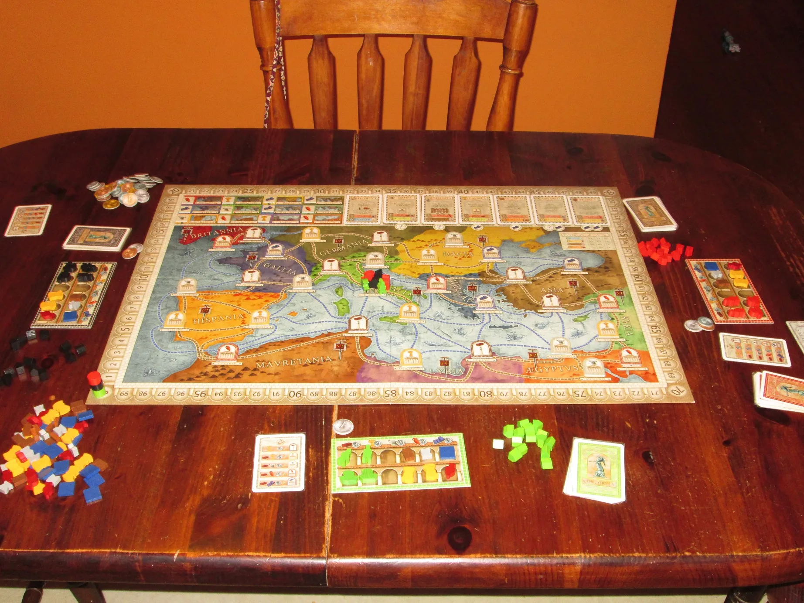 | ### Caption 1
Precision:
- Positive Aspects:
- Correctly identifies the table as wooden.
- Notes the presence of cards towards the edges of the table.
- Mentions the cozy and inviting atmosphere, which can be inferred from the setting.
- Negative Aspects:
- Inaccurately states that there are several small chairs around the table; only one chair is clearly visible.
- Incorrectly describes the board game as potentially "Monopoly-style," while the game depicted is historically themed and unrelated to Monopoly.
- Fails to mention game-specific pieces such as wooden cubes or the map's details.
Recall:
- Positive Aspects:
- Identifies key elements like cards and game pieces.
- Describes the atmosphere, although it's subjective.
- Negative Aspects:
- Does not mention the actual game theme or specific elements (e.g., wooden cubes, map locations).
- Does not note the absence of pieces of cutlery, making it less thorough in detailing the actual image.
### Caption 2
Precision:
- Positive Aspects:
- Accurately identifies the wooden dining table.
- Correctly notes the significance of the large board game taking up a significant portion of the table.
- Negative Aspects:
- Incorrectly suggests the presence of several smaller board games; the image shows only one main board game and related components.
- Falsely mentions the presence of cutlery (knife and spoon), which is not visible in the image.
- Suggests it may be a "Risk" style game, which is incorrect based on visible details.
Recall:
- Positive Aspects:
- Captures essential elements like the large board game and cards.
- Negative Aspects:
- Misses critical game details such as the types of game pieces, the map with various named regions, and the tokens.
- Does not note the specifics of the game board or the surrounding elements apart from one chair.
### Conclusion:
- Caption 1 has better recall as it references some of the game's components (cards, game pieces) though in a generalized manner. However, its precision is diminished by some incorrect details and omissions.
- Caption 2 provides correct information about the table and large board game but diminishes precision and recall with incorrect details about smaller games and non-existent cutlery.
Overall, while both captions have their flaws, Caption 1 seems closer to accurately and thoroughly describing the image, albeit with some incorrect assumptions about the number of chairs and the game type. | ## Evaluation of Captions:
### Precision:
Caption 1:
- Wooden dining table: Correct.
- Variety of board games and cards: Incorrect. The table only has one board game.
- Risk board game: Incorrect. The board game is not Risk; it is "Imperial" or a game of similar nature.
- Smaller board games scattered: Incorrect. There are no other board games scattered.
- Pieces of cutlery, knife, spoon: Incorrect. There are no visible pieces of cutlery on the table.
- Meal before games: Incorrect. No remnants of a meal can be seen.
Overall Precision: Low (many incorrect mentions).
Caption 2:
- Wooden dining table: Correct.
- Complex board game: Correct.
- Advanced game, Monopoly-style: Partially correct; it is advanced but not Monopoly-style.
- Cards on left and right: Correct.
- Small chairs, three visible: Partially correct. There is one visible, not three clearly.
- Cozy inviting atmosphere: Subjective but reasonably inferred.
Overall Precision: High (mostly correct with minor inaccuracies).
### Recall:
Caption 1:
- Misses: mentions incorrect elements like smaller board games and cutlery, does not accurately describe the specific game components (tokens, cards, etc.), or the map.
Overall Recall: Low (misses specific details).
Caption 2:
- Captures the chairs (though inaccurately), cards, and overall feel. Specifically misses colors, distinct tokens, specific game theme (neritic map with regions like GALLIA, BRITANNIA), and other details like each player’s board.
Overall Recall: Medium to High (captures the main details but misses some specifics).
### Conclusion:
- Caption 1 has low precision and low recall because it describes elements not present (cutlery, multiple board games) and misses specific details of the game.
- Caption 2 has high precision with better recall (for the specifics of game setup and game pieces), though it falsely identifies how many chairs are visible around the table and incorrectly states the game's nature.
Overall, Caption 2 is more accurate and informative compared to Caption 1. | The image features a wooden dining table with several small chairs around it. On top of the table, there is a complex board game set up, clearly engaging and drawing attention. The table is covered with a vast array of different game pieces, indicative of a more advanced game such as a Monopoly-style board game.
Various other objects are present on and around the table, such as cards located towards the left and right edges of the table. A group of chairs, three of which can be seen distinctly, are placed around the table, waiting for players to sit down and enjoy the game. The setup gives off a cozy and inviting atmosphere, perfect for friends and family to spend time together playing board games. | 6.0 | 7.0 | 4.0 | 7.0 | 6.50 | 5.50 | 5.96 |  | The image features a wooden dining table covered with a variety of board games and cards. There is a large board game, possibly a Risk board game, taking up a significant portion of the table's surface. In addition to the main board game, there are several smaller board games and cards scattered across the table.
A chair is positioned near the table, ready for someone to sit down and enjoy the games. There are also a few pieces of cutlery on the table, including a knife and a spoon, suggesting that the table may have been used for a meal before the games were set up. | 4.0 | 2.0 | 4.0 | 2.0 | 3.00 | 3.00 | 3.00 |  |
 | ### Evaluation of Caption 1:
#### Precision:
- Dining Area: Correctly describes the area as a dining room.
- Lighting: States candle-lit, but no visible candles are present.
- Table: Describes a very long wooden table, which is incorrect; the table is of average, round shape.
- Chairs: Accurately mentions the chairs around the table.
- Dinnerware: Correctly notes the presence of various glass dinnerware and wine glasses.
- Bowls/Books: Incorrectly describes bowls and books; these items are not visible in the image.
- Clock: Incorrectly mentions a clock; there is none visible.
- Ambiance Description: The warm and visually appealing atmosphere is subjectively accurate, though overestimates the presence of candles.
Precision Score: Low. There are significant inaccuracies regarding the table shape, lighting, presence of a clock, bowls, and books.
#### Recall:
- Dining Set-up: Correct in noting the table set-up with dinnerware, but overstates additional items not visible.
- Windows: Does not mention the windows at all.
- Wall Decorations: Does not mention the notable wall hanging between the windows.
- Details: Misses details like the open windows, outside view, and other decor.
Recall Score: Low. Misses several key elements visible in the image while adding non-existent items.
### Evaluation of Caption 2:
#### Precision:
- Dining Room: Correctly identifies it as a dining room.
- Table: Correctly describes the table as wooden and adorned with dining items.
- Dinnerware: Accurately mentions plates, glasses, and cutlery set-out.
- Windows: Correctly mentions the presence of two large windows.
- Light: Indicates natural light, which is accurate.
- Decorative Items: Incorrectly mentions a vase and a clock; neither is visible.
Precision Score: Medium. Mostly accurate but includes some nonexistent items like the vase and clock.
#### Recall:
- Dining Set-up: Accurately covers plates, glasses, cups, and cutlery.
- Windows and Light: Correctly notes the two large windows and natural light filling the room.
- Wall Decorations: Does not mention the hanging wall decoration.
- Details: Does not go into detail about additional decor, exterior view, or room ambiance.
Recall Score: Medium. Covers main elements but omits some significant details like the distinctive wall decoration.
### Summary:
- Caption 1: Has major inaccuracies and poor recall of significant image elements, resulting in both low precision and recall.
- Caption 2: More accurate in its description, though still includes some inaccuracies and omissions, resulting in medium precision and recall. Thus, Caption 2 better describes the image. | ### Caption 1 Analysis
Precision:
- Correct Elements:
- Wooden dining table set for a meal
- Several chairs around the table
- Plates, glasses, and cutlery
- Forks, knives, and spoons arranged neatly
- Two large windows allowing natural light
- Decorative item on the wall above the table (important: it is more accurately a decorative mirror with lights, not a clock)
- Incorrect Elements:
- The decorative item is not a clock, it's a mirror with lights.
- No mention of a vase on the table
Precision Evaluation: 8/10
- Caption 1 includes most elements accurately but inaccurately describes the decorative wall item and adds a non-existent vase.
Recall:
- Included Elements:
- Dining table setup details
- Chairs, plates, glasses, cutlery
- Large windows and natural light detailing
- Decorative mirror with lights (but incorrectly described)
- Omitted Elements:
- Rustic exterior view visible through the windows
- Lamp on the side table
- Painting on the left wall
Recall Evaluation: 7/10
- The caption describes significant parts of the image but misses some details like the exterior view, lamp, and painting.
### Caption 2 Analysis
Precision:
- Correct Elements:
- Wooden dining table with chairs
- Glass dinnerware items, including wine glasses
- Mention of table, chairs, and general dining setup
- Incorrect Elements:
- Description of the table as "very long" is inaccurate; it's a moderate-sized round table
- No candles or candle-lit ambiance in the image
- No bowls or books on or near the table, or elsewhere in the scene
- Incorrect mention of a clock at a higher level
Precision Evaluation: 5/10
- Caption 2 includes multiple inaccurate descriptions and elements not present in the image.
Recall:
- Included Elements:
- Dining table setup with chairs and dinnerware items
- Omitted Elements:
- Correct size of the table
- Mirror with lights on the wall
- Broad valid aspects like windows, natural lighting, details on plates and cutlery
- Exterior view, side table with lamp, and the painting
Recall Evaluation: 3/10
- The caption fails to capture many essential elements of the image, providing an incorrect portrayal of the dining setup and other details.
### Conclusion and Recommendation:
Caption 1 is significantly better than Caption 2 in accuracy and completeness though it can be improved by correctly identifying the decorative mirror and removing the mention of the vase.
- Overall Evaluation of Captions:
- Caption 1:
- Precision: 8/10
- Recall: 7/10
- Caption 2:
- Precision: 5/10
- Recall: 3/10
Thus, Caption 1 is more closely aligned with the image in both precision and recall. | The image showcases a candle-lit dining area with a fine setup. In the center of the room, there is a very long wooden dining table with chairs positioned around it. There are various glass dinnerware items on the table, including wine glasses, which adds to the sophistication of the setting.
Interestingly, there are a few bowls placed on the table, as well as books scattered throughout the scene. Some books are on or near the table, while others can be seen near the chairs or even on the nearby bench. Additionally, there is a clock mounted at a higher level, adding to the room's aesthetic. The combination of dinnerware, decorative items, and the candlelit ambiance creates a warm and visually appealing atmosphere in the dining area. | 3.0 | 5.0 | 2.0 | 5.0 | 4.00 | 3.50 | 3.73 |  | The image depicts a cozy dining room with a wooden dining table set for a meal. The table is surrounded by several chairs, and it is adorned with plates, glasses, and cutlery. There are multiple wine glasses, cups, forks, knives, and spoons arranged neatly on the table, ready for the guests to enjoy their meal.
In addition to the dining area, the room features two large windows, allowing natural light to fill the space. A decorative clock is hanging on the wall above the table, adding a touch of elegance to the room. There is also a vase placed on the table, further enhancing the room's aesthetic appeal. | 6.0 | 8.0 | 6.0 | 8.0 | 7.00 | 7.00 | 7.00 |  |
 | Caption 1:
Precision:
- Correct Part: The caption correctly identifies the presence of a ruler and a saw.
- Incorrect Part: The caption mentions a "pair of scissors, a drill, some fencing tools, and steel welds" which are not present in the image. Additionally, it inaccurately describes the positioning and types of tools.
Recall:
- Missing Part: The caption does not mention the hammer, the square ruler, and the pile of nails that are clearly visible in the image.
Evaluation of Caption 1:
- While it correctly identifies some elements, such as the ruler and the saw, it inaccurately mentions several tools that are not present. It also fails to mention important items that are visible, such as the hammer and nails.
- Precision: Low (multiple incorrect items mentioned).
- Recall: Medium (some key items missed).
Caption 2:
Precision:
- Correct Part: The caption correctly mentions a saw and a ruler.
- Incorrect Part: The caption inaccurately identifies the presence of a pair of scissors and a knife, which are not in the image. It also inaccurately describes the arrangement of the tools.
Recall:
- Missing Part: The caption does not mention the hammer, the square ruler, and the pile of nails.
Evaluation of Caption 2:
- This caption is not accurate as it mentions tools that are not present in the image (scissors and knife), while failing to identify several actual tools that are visible in the image.
- Precision: Low (incorrect items mentioned).
- Recall: Low (many key items missed).
Overall Comparison:
- Both captions perform poorly in terms of precision and recall due to mentioning tools that are not present and missing several that are visible.
- Caption 1 has a slightly better recall for at least identifying some of the tools correctly, while Caption 2 fails in both precision and recall.
The more accurate breakdown would be:
- Caption 1: Better recall but low precision.
- Caption 2: Low precision and low recall. | Caption 1:
Precision:
- Mistakes: The caption is somewhat inaccurate for the given image. There is no pair of scissors or knife in the image.
- Accurate Details: It correctly identifies a saw (though the specifics of it being closer to a corner are subjective and not entirely precise). The presence of a ruler (more accurately, a folding ruler) is also noted, but its position is incorrectly described as horizontal when it is actually placed diagonally across the image. The caption does not mention the hammer, square, or nails.
Recall:
- Missed Items: The caption misses several tools present in the image, such as the hammer, hand saw, and square.
- Unincluded Tools: Several tools mentioned in the caption (scissors and knife) are not actually in the image.
- Workspace Misinterpretation: The workspace is suggested as a crafting or DIY workspace, which is reasonable but could be more accurately described as a carpenter's workspace given the nature of the tools shown.
Caption 2:
Precision:
- Mistakes: The errors in this caption are significant as well. There is no pair of scissors or a drill in the image.
- Accurate Details: It correctly notes the saw and ruler but introduces fanciful notions of fencing tools and steel welds, which are not present. The phrase "various hand tools" is somewhat vague but fits.
Recall:
- Missed Items: The caption fails to mention several tools clearly shown in the image, such as the hammer and nails.
- Unincluded Tools: Similarly to the first caption, it includes descriptions of tools that are not present in the image, like scissors and a drill.
- Incomplete Description: The presence of key carpenter’s tools like the square is omitted.
Ranking and Recommendations:
- Both captions fail equally on precision by including tools that are not present in the image.
- Both also fail on recall by omitting several key tools.
Overall, neither caption particularly stands out as accurate. A more precise description would include the following points:
- A hacksaw.
- A hammer.
- A folding ruler.
- A square.
- A pile of nails.
Thus, Caption 1 and Caption 2 both need significant corrections and improvements to be accurate and comprehensive:
1. Remove mentions of scissors and a knife (Caption 1), and scissors and a drill (Caption 2).
2. Include the hammer, square, and nails present in the image. | The image showcases a variety of carpenter's tools including wood and metal tools, some fencing tools with steel welds, and various hand tools. Among the tools, there's a pair of scissors, a drill, saws, and a ruler. The tools are arranged neatly and spread out across the image, with some placed closer together while others are quite distinct. The tools anchor the scene towards the edge of the image, revealing wooden grain texture as the background. | 3.0 | 3.0 | 4.0 | 3.0 | 3.00 | 3.50 | 3.23 |  | The image features a wooden table with a variety of tools neatly arranged on it. There is a pair of scissors placed prominently in the center of the table, accompanied by a knife and a saw. The knife is located towards the right side of the table, while the saw is positioned closer to the left side.
In addition to these tools, there is a ruler placed horizontally across the table, extending from the left edge to the right edge. The combination of tools and the ruler suggests that this might be a workspace for crafting or DIY projects. | 2.0 | 3.0 | 2.0 | 2.0 | 2.50 | 2.00 | 2.22 |  |
 | ### Evaluation of Captions
#### Caption 1
Precision:
- Correct Details: The caption accurately mentions a white room with various pieces of furniture, a large window, and two chairs.
- Incorrect/Inaccurate Details: The caption incorrectly mentions a comfortable couch positioned towards the right side, which is not present in the image. It also mentions books scattered and a wine glass near one of the chairs, neither of which are present in the image.
Recall:
- Missing Details: The caption does not mention the round side table between the chairs, the lamp next to the chairs, and the shelf with various items on the right wall.
#### Caption 2
Precision:
- Correct Details: The caption correctly describes a spacious and clean living room with two chairs, one on the left and one on the right side of the room, and a coffee table.
- Incorrect/Inaccurate Details: The caption mistakenly mentions a coffee table in the center, which is not present; instead, there is a side table. It also incorrectly talks about a vase on the right side and two books in the room.
Recall:
- Missing Details: The caption does not mention the round side table between the chairs, the lamp, and the shelf with various items on the right side of the room. However, it correctly mentions the large window.
### Conclusion
#### Caption 1 Evaluation
- Precision: Low. Several incorrect elements are mentioned (couch, books, wine glass).
- Recall: Medium. Some key elements are missed (side table, lamp, shelf) but acknowledges the large window and furniture arrangement.
#### Caption 2 Evaluation
- Precision: Medium. Correctly describes furniture placement, but incorrectly mentions coffee table, vase, and books.
- Recall: Medium. Misses details like the side table, lamp, and shelf items but includes the large window.
### Summary
Both captions have a mix of accurate and inaccurate details. They correctly identify some main elements like the large window, the white room, and the two chairs. However, they both include incorrect details that aren't present in the image. Between them, Caption 2 is slightly more precise in detailing the spaciousness and includes the large window. However, both captions lack mentioning certain present details (e.g., side table, lamp, shelf decor).
For a more accurate description, combining the correct observations from both captions and eliminating the inaccuracies would be ideal. | Let's evaluate each caption separately based on precision and recall:
### Caption 1:
Precision:
- The caption correctly mentions the spacious and clean look of the living room.
- The presence of two chairs and a coffee table is accurate.
- The mention of decorative items (e.g., vase, bowl) is partially correct; however, the vase might not be clearly visible in the image.
- There are indeed shelves on the right side with books, but the specific details about the placement of books could be more precise.
- The mention of large windows allowing natural light into the room is accurate.
Recall:
- The caption misses mentioning the art on the wall, a floor lamp, and some specific decorative items on the shelves (e.g., a small sculpture of a figure).
- The material and texture of the chairs (wooden frame, upholstered) and the specific style of the space (e.g., modern, minimalistic design) are not mentioned.
- The fuzzy white throw on the chair is not mentioned either.
### Caption 2:
Precision:
- Mentioning a white room and large window is accurate.
- Two chairs are accurately mentioned, though their position is actually more to the right, and they are not set against a wall as the caption suggests.
- The mention of multiple books scattered around is incorrect based on the image.
- There's no couch visible.
Recall:
- This caption misses several accurate details such as the coffee table, the specific design and color of the chairs, decorative items, and shelves.
- Incorrect details (a white couch, books scattered around, wine glass, convivial ambiance) lower recall significantly as they are not present in the image.
### Summary:
Caption 1:
- Precision: Medium-High (Accurately captures much of the setting but includes minor inaccuracies and omits key details like the exact arrangement and specific decorative pieces).
- Recall: Medium-High (Covers the main layout but misses several items and specific design attributes).
Caption 2:
- Precision: Low (Many specific details mentioned, such as a couch, scattered books, and wine glass, are not present in the image).
- Recall: Low-Medium (Misses key details and includes inaccuracies about the existing elements in the room).
Overall, Caption 1 is more aligned with the image in terms of both precision and recall, while Caption 2 contains several inaccuracies and omissions. | The image depicts a white room with various pieces of furniture and a large window next to the wall. There is a comfortable couch positioned towards the right side and two chairs placed in the middle of the room. They appear to be set against a wall, creating a cozy seating arrangement.
Near the seating area, there are multiple books scattered around, possibly suggesting a well-read and relaxing atmosphere. A wine glass is also located near one of the chairs, adding to the convivial ambience. In the background, a car is visible through the window, indicating that the room might be looking towards an outdoor area or a nearby road. | 5.0 | 3.0 | 4.0 | 2.0 | 4.00 | 3.00 | 3.43 |  | The image depicts a spacious and clean living room filled with various pieces of furniture. There are two chairs, one on the left side and another on the right side of the room. A coffee table is placed in the center of the room, surrounded by the chairs.
In addition to the main furniture, there are several decorative items in the room. A vase can be seen on the right side of the room, while a bowl is placed on the coffee table. There are also two books, one on the left side and another on the right side of the room, adding a touch of personalization to the space.
The living room is adorned with large windows, allowing natural light to flood the room and creating a bright and inviting atmosphere. | 4.0 | 7.0 | 6.0 | 7.0 | 5.50 | 6.50 | 5.96 |  |
 | ### Caption 1
Precision:
- Accurate Statements:
- The kitchen has wooden floors and white countertops.
- There is a tray with various items on the kitchen counter.
- The kitchen contains a microwave, an oven, and a refrigerator.
- There are numerous bottles, bananas, and bowls on the kitchen counter.
- There is a cup on the counter.
- Inaccurate or Misleading Statements:
- No clear evidence that the items are "likely preparing for a trip."
- The tray items specified (spoons, towels, and dish soap) are not clearly visible.
Recall:
- Items Mentioned:
- Wooden floors and white countertops.
- Tray with various items.
- Microwave, oven, and refrigerator.
- Bottles, bananas, and bowls.
- A cup.
- Missing Items:
- The visible open drawer with electronic gadgets is not mentioned.
- The cutting board specifics, such as the type of items (if visible), are not mentioned accurately.
### Caption 2
Precision:
- Accurate Statements:
- The kitchen is described as clean and well-organized with white cabinets and a marble countertop.
- Kitchen appliances include a refrigerator, an oven, and a microwave.
- Bowl of fruit on the wooden cutting board.
- Presence of bottles and a cup on the countertop.
- Inaccurate or Misleading Statements:
- The statement about the sink on the right side is incorrect based on the visible part of the kitchen.
- Knives "neatly arranged on the counter" are not visible.
Recall:
- Items Mentioned:
- Clean and well-organized kitchen with white cabinets and marble countertop.
- Refrigerator, oven, and microwave.
- Bowl of fruit on a wooden cutting board.
- Bottles and a cup on the counter.
- Missing Items:
- The visible open drawer with electronic gadgets is not mentioned.
- Specific items on the cutting board besides the bowl of fruit are not detailed.
- The presence of a stove and various other items on the counter is not elaborated upon.
### Evaluation Summary:
Precision:
- Caption 1: Describes the general layout and some items accurately but includes speculative and inaccurate details.
- Caption 2: Provides a mostly correct description but includes some inaccuracies like the sink and knives details.
Recall:
- Caption 1: Covers the majority of key elements but misses detailed and specific items.
- Caption 2: Also covers the majority of key elements but misses mentioning the drawer and some specifics about the items on the counter.
Overall, Caption 2 is slightly more precise and aligns better with the visible attributes and organization of the kitchen while still having minor inaccuracies. Caption 1 offers a broader but slightly speculative description, making it less precise. However, both captions could benefit from mentioning the open drawer with electronic gadgets, which is a significant aspect of the image. | Caption 1 Evaluation:
Precision:
- Accurate Description of Cabinets and Countertop: The caption correctly identifies the white cabinets and marble countertop.
- Appliances: It accurately mentions the refrigerator, oven, and microwave. However, no information is provided about the dishwasher and stove that are also visible.
- Items on the Countertop: The caption correctly notes a wooden cutting board and a bowl of fruit, including bananas and oranges. It also mentions several knives, bottles, and a cup on the counter.
- Incorrect Information: The caption incorrectly states that the sink is on the right side of the kitchen; there is no sink visible in the image.
Precision Score: 4/5
Recall:
- Missed Elements: The caption does not mention the open drawer with various electronics and gadgets (like a remote, headphones, and chargers), the cutting board on the right side, or the objects set on top of the stove.
- Accurate Elements: It correctly identifies the countertop, the cutting board with fruit, and other kitchen utensils.
Recall Score: 3/5
Overall, Caption 1 is mostly accurate but misses some important details and incorrectly states the existence of a sink.
---
Caption 2 Evaluation:
Precision:
- Accurate Description of Flooring: Correctly mentions wooden floors.
- Appliances: Correctly identifies the microwave, oven, and refrigerator. However, the dishwasher and the stove are not mentioned.
- Tray on Countertop: There is no specific tray visible; it seems to refer to the wooden cutting board.
- Scattered Items: Correctly mentions bananas, bottles, and bowls with food and kitchen utensils. However, there are no spoons, towels, or dish soap visible.
- Incorrect Information: There is no visible tray or preparation for a trip.
Precision Score: 3/5
Recall:
- Missed Elements: The caption does not mention the open drawer with various gadgets, the cutting board on the right side, or the objects set on top of the stove.
- Accurate Elements: It correctly identifies the various appliances, the items on the countertop, and the general readiness of the kitchen for use.
Recall Score: 3/5
Overall, Caption 2 captures some details but provides incorrect information about certain items and lacks attention to a significant element in the image (the open drawer with gadgets).
---
Overall Evaluation:
- Caption 1 provides a more precise description of the image’s contents despite slightly less recall.
- Caption 2 has medium recall but provides some incorrect information about the scene.
Thus, Caption 1 is preferable for accuracy and clarity. | The image features a well-equipped kitchen with wooden floors and white countertops. A tray containing various items is placed on the kitchen counter, likely preparing for a trip. The items on the tray include spoons, towels, and dish soap.
In the kitchen, there is a microwave, an oven, and a refrigerator all present. Numerous bottles are found scattered around the kitchen counter, as well as bananas and bowls showcasing both food and kitchen utensils. A cup is also visible resting on the counter. The kitchen appears to be ready for use if anyone would like to cook or prepare a meal. | 6.0 | 6.0 | 6.0 | 5.0 | 6.00 | 5.50 | 5.74 |  | The image depicts a clean and well-organized kitchen with white cabinets and a marble countertop. The kitchen is equipped with various appliances, including a refrigerator on the left side, an oven in the middle, and a microwave above the oven. A sink can be found on the right side of the kitchen.
On the countertop, there is a wooden cutting board with a bowl of fruit, including bananas and oranges, placed on top of it. Additionally, there are several knives neatly arranged on the counter, along with a couple of bottles and a cup. The kitchen appears to be well-maintained and ready for use. | 8.0 | 8.0 | 7.0 | 6.0 | 8.00 | 6.50 | 7.17 |  |
| 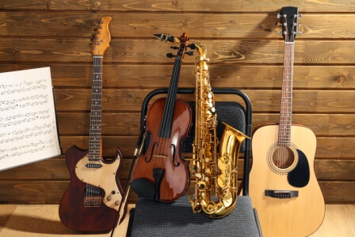 | ### Caption 1 Evaluation
Precision:
- Incorrect Elements:
- States there are "two acoustic guitars," but there is only one acoustic guitar and one electric guitar.
- Mentions a "flute," but there is actually a saxophone.
- Correct Elements:
- Correctly identifies a violin.
- Identifies the presence of a book with music notes.
- Correctly mentions instruments lined up against a wooden wall.
Recall:
- Missed Elements:
- Fails to correctly identify the electric guitar.
- Incorrectly names the saxophone as a flute.
- Does not mention the chair that the instruments are leaning on, although there’s only one chair present.
Overall:
- Precision: Low - significant inaccuracies in identifying the types of instruments.
- Recall: Moderate - includes several correct elements but also misses crucial details about the correct instruments and the chair.
### Caption 2 Evaluation
Precision:
- Incorrect Elements:
- States there are two chairs, while there is only one.
- The guitar described is just one, but there are actually two guitars (one electric and one acoustic).
- Correct Elements:
- Correctly identifies a violin.
- Correctly identifies a saxophone.
- Correctly identifies a guitar, though doesn't specify the types.
- Accurately describes the wooden wall.
Recall:
- Missed Elements:
- Fails to mention the electric guitar specifically.
- Misses the music book with notes.
- Incorrectly notes the number of chairs.
Overall:
- Precision: Moderate - more accurate in instrument identification but incorrect in describing the number of certain elements.
- Recall: Moderate - includes important elements but misidentifies the quantity of the instruments and the single chair.
### Summary
- Precision:
- Caption 1: Low
- Caption 2: Moderate
- Recall:
- Caption 1: Moderate
- Caption 2: Moderate
Both captions have their own strengths and weaknesses, but Caption 2 provides a more accurate naming of the instruments despite errors in quantity and the number of chairs. Caption 1 makes more mistakes in identifying the instruments but includes additional details such as the music book, which Caption 2 misses. | ### Evaluation of Caption 1:
#### Precision:
1. Correct Identifications:
- Guitar, violin, and saxophone: Correctly identified.
- Wooden wall: Correctly mentioned.
- Two chairs: Correctly identified.
2. Inaccuracies:
- Instrument position: Incorrect; the saxophone is in the middle, the violin is on the left, and the guitar is on the right.
- There is a music sheet, not explicitly described.
#### Recall:
1. Missing Details:
- The presence of the music sheet is not mentioned.
- The description misses that one chair is holding the instruments.
Overall, Caption 1 has high precision but low recall due to incorrect instrument positioning and missed details.
### Evaluation of Caption 2:
#### Precision:
1. Incorrect Identifications:
- Two acoustic guitars: There is one electric guitar and one acoustic guitar.
- Flute: Incorrectly identified; there is a saxophone instead.
- Guitar shapes: Not accurately described.
- Positioning of instruments is somewhat incorrect.
#### Recall:
1. Missing and Incorrect Details:
- Does not mention the presence of the two chairs.
- The music sheet is mentioned but described incorrectly as an open book.
- The incorrect identification of instruments (flute instead of saxophone) reduces recall.
Overall, Caption 2 has low precision due to multiple incorrect identifications and low recall due to missed elements present in the image.
### Comparative Summary:
- Caption 1:
- Precision: High (identifies the majority correctly but with one error in instrument positioning)
- Recall: Low (misses significant elements such as the music sheet and the exact position of instruments)
- Caption 2:
- Precision: Low (incorrect and imprecise identifications of instruments and their shapes)
- Recall: Low (missing significant elements such as the chairs, correct positions, and incorrect identification of instruments)
Caption 1 is overall more accurate and provides a better description of the image despite its shortcomings. Caption 2 fails more significantly in accurate identification and includes errors that negatively impact overall accuracy. | The image displays a scene with four musical instruments lined up against a wooden wall. They consist of two acoustic guitars, a violin, and a flute. The guitar on the left has a rounder shape, while the one on the right has a more angular form. The violin is located in the center, slightly to the left. The flute is situated between the guitars, further to the right.
In front of the instruments, there is an open book placed, possibly containing music notes or instructions for playing them. The combination of musical instruments and the book suggests a setting where music is being practiced or enjoyed. | 4.0 | 3.0 | 5.0 | 3.0 | 3.50 | 4.00 | 3.73 |  | The image features a wooden wall with three musical instruments displayed on it: a guitar, a violin, and a saxophone. The guitar is positioned on the left side of the wall, the violin is in the middle, and the saxophone is on the right side.
In addition to the instruments, there are two chairs in the scene. One chair is placed behind the guitar, while the other chair is located behind the saxophone. The arrangement of the instruments and chairs creates a cozy and inviting atmosphere for playing and enjoying music. | 6.0 | 7.0 | 5.0 | 7.0 | 6.50 | 6.00 | 6.24 |  |
 | ### Caption 1 Evaluation
Precision:
1. Colorful, purse-like cosmetic bag: Accurate, but more emphasis on "my first purse" would have been better.
2. Open and placed on a surface: The purse is not open in the image.
3. Revealing various beauty products inside: The items are outside, not inside.
4. Comb and a heart-shaped mirror: Only the mirror is heart-shaped; the brush is shown, but no comb.
5. Pink wallet and an umbrella: Neither item is present in the image.
6. Brightly colored smartphone positioned next to the open purse: Correct on the smartphone but the purse is not open.
7. Hairbrush close to the purse: Accurate.
8. Book on the right side: There is no book.
Precision Score: 30% (3 out of 8 accurate details)
Recall:
1. Items in the Image:
- Purse (yellow with "my first purse")
- Pink smartphone
- Heart-shaped mirror
- Hairbrush
- Keys
- Credit card holder
- Toy lipstick in pink and black casing
2. Missing from Caption:
- Keys with keychain
- Credit card holder
- Toy lipstick
Recall Score: 50% (4 out of 8 items mentioned)
Overall, Caption 1 has low precision and moderate recall. It mentions several incorrect items and fails to describe several key elements.
### Caption 2 Evaluation
Precision:
1. Pink and green purse placed on a table: Accurate.
2. Accompanied by various personal items: Accurate.
3. Inside the purse, there is a pink cell phone and a mirror: Incorrect — these items are outside the purse.
4. Pink brush: Accurate.
5. Pink comb: Incorrect — no comb present.
6. Pink keychain with keys: Partially accurate — the keychain is not entirely pink.
7. Pink lipstick: The case is mostly black with a pink cap, but close enough.
8. Pink wallet placed on the table: Incorrect — no wallet present.
Precision Score: 50% (4 out of 8 accurate details)
Recall:
1. Items in Image:
- Purse
- Pink smartphone
- Heart-shaped mirror
- Hairbrush
- Keys
- Credit card holder
- Toy lipstick
2. Missing from Caption:
- Keys with keychain correctly described
- Credit card holder
Recall Score: 75% (6 out of 8 items mentioned)
Overall, Caption 2 has moderate precision and good recall. While it accurately captures many items in the image, it misses a few details and describes small inaccuracies.
### Summary
- Caption 1: Low precision (30%), moderate recall (50%). It includes several errors and omissions.
- Caption 2: Moderate precision (50%), good recall (75%). It better captures the overall scene with fewer inaccuracies. | ### Caption 1:
Precision:
- Green purse: Correct (appears in the image)
- Pink cell phone: Correct (appears in the image)
- Mirror: Correct (appears in the image)
- Pink brush: Correct (appears in the image)
- Pink comb: Incorrect (no comb in the image)
- Pink keychain with keys: Incorrect (keychain is not pink)
- Pink lipstick: Incorrect (lipstick is red)
- Pink wallet: Incorrect (wallet is purple)
Score: 4/8 (50% precision)
Recall:
- The caption mentions the green purse, cell phone, mirror, brush, and keychain with keys which are present in the image.
- Misses the items like the credit card, the specific detail of the phone being a toy with app icons, and the yellow key.
Score: 5/8 (62.5% recall)
### Caption 2:
Precision:
- Purse-like cosmetic bag: Incorrect (it's a purse, not a cosmetic bag)
- Heart-shaped mirror: Correct (appears in the image)
- Comb: Incorrect (there is no comb)
- Pink wallet: Incorrect (wallet is purple)
- Umbrella: Incorrect (no umbrella in the image)
- Smartphone: Correct (appears in the image)
- Hairbrush: Correct (appears in the image)
- Book: Incorrect (no book in the image)
Score: 3/8 (37.5% precision)
Recall:
- The caption misses other items like the credit card, the keychain with a toy key, and the red lipstick.
- Accurately recalls the heart-shaped mirror, smartphone, and hairbrush.
Score: 3/8 (37.5% recall)
### Conclusion:
Caption 1 is more accurate compared to Caption 2 in describing the image based on both precision and recall. Caption 1 correctly identifies more of the items present in the image and has a higher overall recall of the items shown. | The image features a colorful, purse-like cosmetic bag that is open and placed on a surface, revealing various beauty products inside. Within the bag, there is a comb and a heart-shaped mirror, as well as a pink wallet and an umbrella. A brightly colored smartphone is positioned next to the open purse, and a hairbrush can also be spotted placed close to the purse. Moreover, a book is located slightly towards the right side of the scene. The variety of items in this image suggests a combination of fashion and functional items. | 3.0 | 4.0 | 5.0 | 4.0 | 3.50 | 4.50 | 3.94 |  | The image features a pink and green purse placed on a table, accompanied by various personal items. Inside the purse, there is a pink cell phone and a mirror. Next to the purse, there is a pink brush, a pink comb, and a pink keychain with keys. Additionally, there is a pink lipstick and a pink wallet placed on the table. The combination of pink and green colors creates a vibrant and playful atmosphere in the scene. | 5.0 | 5.0 | 6.0 | 6.0 | 5.00 | 6.00 | 5.45 |  |
| ### Caption 1:
Precision:
- The caption describes the overall clutter effectively, highlighting the computer workstation, monitor, keyboard, and mouse.
- It mentions a cup that is likely filled with coffee, which is accurate.
- However, it inaccurately states that the computer monitor is on the left side while the keyboard and mouse are on the right side; in the image, they are actually positioned more centrally on the desk.
- The caption introduces an inaccuracy by referencing "book-like items inspired by the earlier Harry Potter mug," which are not evident in the image.
- It also mentions "numerous pencils scattered" which are not visible in the image.
- The comment about notebooks contributing to the clutter is accurate.
Recall:
- The caption misses some details such as the calculator and the specific pile of documents stacked on the desk.
- It does not mention any other office supplies or specific items other than pencils and notebooks.
### Caption 2:
Precision:
- The caption accurately describes the cluttered desk, mentioning the computer monitor, keyboard, mouse, and coffee cup.
- It correctly states the presence of numerous books, papers, and notebooks, which are clearly visible.
- The mention of a pair of scissors adds specificity and is indeed visible on the desk.
- However, it incorrectly references a TV mounted on the wall, which is not present in the image.
Recall:
- This caption provides a comprehensive overview of what's on the desk, including the cup, various papers, books, and office supplies.
- It misses mentioning a few items like the calculator that is on the desk.
- It does not describe the working environment other than the desk, so there are items like the background of the room that aren't covered by this caption either.
### Comparative Evaluation:
- Precision: Caption 2 is more precise overall. It accurately describes most of the visible items on the desk without adding incorrect assumptions about items not seen in the image, with the exception of the TV. Caption 1, while detailed, includes inaccuracies and items not present in the image, such as the Harry Potter mug references and numerous pencils.
- Recall: Caption 2 offers a better recall since it covers more items present on the desk without omitting significant objects. Caption 1 misses some key details and introduces inaccuracies that distract from what is actually visible.
In conclusion, Caption 2 provides a more accurate and comprehensive description of the image, though both have their own inaccuracies. | ### Caption 1 Evaluation:
#### Precision:
- Correct Details:
- Cluttered wooden desk.
- Items on desk: computer monitor, keyboard, mouse, cup, books, papers, notebooks.
- Scissors on desk.
- Disorganized appearance.
- Incorrect Details:
- Coffee in the cup (cannot confirm the content of the cup).
- Mention of a TV mounted on the wall (no visible TV in the image).
Precision Score: Medium. The caption accurately describes a lot of the features seen in the image but includes an incorrect detail about the TV and assumes the cup contains coffee without evidence.
#### Recall:
- Included Details:
- Computer monitor.
- Keyboard and mouse.
- Cup.
- Books, papers, notebooks.
- Scissors.
- Missing Details:
- Calculator on the desk.
- Some cluttered items like pens/pencils and other small office supplies.
Recall Score: High. The caption captures most prominent details but misses some smaller items, such as the calculator.
### Caption 2 Evaluation:
#### Precision:
- Correct Details:
- Cluttered computer workstation.
- Items on desk: computer monitor, keyboard, mouse, cup.
- Notebooks contributing to messy appearance.
- Incorrect Details:
- Monitor is situated centrally, not on the left side.
- Multiple errors regarding Harry Potter mug and pencils.
- Incorrect positional description (keyboard and mouse are in the center rather than separate locations).
Precision Score: Low. This caption contains several errors in placement and details which are either assumed without evidence or outright incorrect.
#### Recall:
- Included Details:
- Computer monitor.
- Keyboard and mouse.
- Cup.
- Notebooks.
- Missing Details:
- Specific items like scissors, calculator.
- Description of books, papers.
- Other small cluttered items.
Recall Score: Medium. While the caption mentions some key items, it fails to identify several others and introduces inaccuracies.
### Overall Comparison:
- Caption 1 has higher precision and recall as it accurately describes most of the items on the desk and their general placement, though it falsely introduces the idea of a TV and makes an assumption about the cup's contents.
- Caption 2 falls short due to inaccurate placement descriptions and erroneous assumptions about specific items, resulting in lower precision and recall.
### Final Ratings:
- Caption 1: Precision - Medium, Recall - High.
- Caption 2: Precision - Low, Recall - Medium. | The image depicts a very cluttered computer workstation with various items strewn around. On the desk, there is a computer monitor situated on the left side, while a keyboard and mouse are placed on the right side. Alongside these peripherals, there is a cup, likely filled with coffee, placed near the center of the desk.
Surrounding the computer are a couple of book-like items, inspired by the earlier Harry Potter mug. There are numerous pencils scattered across the desk, with some on the right side and others closer to the front. On the edge of the desk, a few notebooks can also be seen, contributing to the overall messy appearance. | 5.0 | 4.0 | 6.0 | 3.0 | 4.50 | 4.50 | 4.50 |  | The image depicts a cluttered wooden desk with various items scattered across its surface. On the desk, there is a computer monitor, a keyboard, a mouse, and a cup filled with coffee. In addition to these items, there are numerous books, papers, and notebooks, creating a disorganized appearance. A pair of scissors can also be seen on the desk, adding to the clutter.
In the background, there is a TV mounted on the wall, further contributing to the busy atmosphere of the room. | 7.0 | 7.0 | 8.0 | 8.0 | 7.00 | 8.00 | 7.47 |  |
 | ### Caption 1 Evaluation:
Precision:
- The caption correctly identifies that a doctor is using a stethoscope to examine a young boy, which is accurate.
- The mention of "medical equipment items" is correct, though it is very general.
- Incorrect details:
- The caption incorrectly mentions "a couple of ties," which are not visible in the image.
- The mention of an "umbrella" is also incorrect, as there is no umbrella visible in the image.
Recall:
- Key elements included:
- Doctor using a stethoscope on a boy
- Medical equipment is visible
- Key elements missing:
- The specific type of room (doctor's office/medical setting) isn't directly mentioned.
- The description of the doctor's attire being a lab coat could be more specific.
- The background elements, such as the yellow disposal container and the specific medical equipment visible, are not detailed.
### Caption 2 Evaluation:
Precision:
- The caption correctly identifies the main action: a doctor in a white lab coat using a stethoscope on a boy.
- Incorrect details:
- The boy is actually sitting on an examination table, not a chair.
- The image does not show a bottle placed on a surface near the boy.
- There is no visible clock on the wall.
- No other person is present in the background.
Recall:
- Key elements included:
- The main action (doctor examining the boy with a stethoscope)
- The setting is described as a medical one, which is accurate but could be more detailed.
- Key elements missing:
- Specific description of the boy's posture (lifting his shirt for the examination)
- Detailed background elements such as the yellow disposal container and other medical equipment visible.
### Summary:
Caption 1:
- Precision: Moderate, due to the inclusion of incorrect items (ties and umbrella).
- Recall: Moderate, details about the setting and specific visible items are missing.
Caption 2:
- Precision: Moderate, correct primary action but includes several non-existent details (bottle, clock, another person).
- Recall: Moderate, lacks specific details about the boy's posture and background elements.
Both captions have similar issues with precision and recall but differ in the types of accuracy errors (Caption 1 includes incorrect items, Caption 2 mentions items that are not there and misidentifies some aspects). Further refinement focusing on actual image content without adding non-existent elements would improve the accuracy. | Caption 1 Evaluation:
Precision:
- The caption states that a man in a lab coat is listening to a boy's heart with a stethoscope, which is accurate.
- It mentions that the boy is sitting on a chair, but he is actually sitting on an examination table/bed.
- There are no visible bottles or clocks in the image.
- The caption mentions another person in the background, who is actually not present in the image.
*Precision Score:* Moderate. While the description of the doctor and the boy is accurate, the mention of objects like chairs, bottles, clocks, and another person reduces precision.
Recall:
- The caption captures the primary action - a doctor performing a medical examination on a boy with a stethoscope.
- The medical setting is accurately described, as it does appear to be a doctor's office or hospital.
- It misses details such as the yellow medical disposal box, the specific type or location of other medical equipment, and the absence of mentioned objects like bottles and clocks.
*Recall Score:* Moderate. It captures the core action but misses many details and adds some inaccurate information.
Caption 2 Evaluation:
Precision:
- The caption correctly describes the doctor using a stethoscope to listen to the boy's heartbeat, focusing on the medical check.
- It states that they are both focused and engaged, which is a reasonable interpretation.
- The caption incorrectly mentions the presence of ties and an umbrella, which are not present in the image.
*Precision Score:* High. The actions and focus of the scene are correctly described, but there are inaccuracies due to the mention of non-existent items like ties and an umbrella.
Recall:
- The core action and setting are described well.
- It highlights the doctor's attention to the boy's health accurately.
- It does not mention details like the specific medical equipment visible in the image, such as the yellow medical disposal box and mounted devices on the wall.
*Recall Score:* Moderate. It includes specific, relevant details of the primary action but fails to cover additional objects present in the scene.
Overall Comparison:
Precision:
- Caption 2 is more precise as it accurately identifies the primary action and focus without unnecessary and incorrect details related to the setting (except for ties and an umbrella).
- Caption 1, despite correctly identifying the primary action, adds incorrect details about objects and persons not present in the image.
Recall:
- Both captions are moderate in recall, capturing the essential interaction but missing several specific details about the environment.
In summary, Caption 2 has a higher precision and a similarly moderate recall compared to Caption 1. While both captions capture the main action, Caption 1 includes more inaccuracies about the setting. | In this scene, a young boy is having his upper body checked by a doctor. The doctor is using a stethoscope to listen to the boy's heartbeat, indicating a close attention to the child's health. They both appear focused and engaged in the assessment process.
Several medical equipment items can also be observed in the image. A couple of ties are present, with one in the foreground and another closer to the right edge. Additionally, an umbrella is positioned further in the background on the right side. | 6.0 | 8.0 | 6.0 | 4.0 | 7.00 | 5.00 | 5.83 |  | In the image, a man wearing a white lab coat is attentively listening to a boy's heart with a stethoscope. The boy is sitting on a chair while the doctor examines him. The scene appears to be taking place in a medical setting, possibly a doctor's office or a hospital.
There are a few other objects in the room, such as a bottle placed on a surface near the boy, and a clock hanging on the wall. Another person can be seen in the background, but they are not the main focus of the scene. The primary focus is on the interaction between the doctor and the boy during the medical examination. | 3.0 | 5.0 | 4.0 | 6.0 | 4.00 | 5.00 | 4.44 |  |
 | ### Caption 1 Evaluation:
Precision:
- Accurate points:
- The image does feature a crib with a baby lying in it.
- The mention of toys and sensory stimulation tools is correct.
- The "singing bear" (assumed to be a musical mobile) above the crib is accurately hinted at by the musical notes.
- The mention of an orange blanket is correct.
- Inaccurate points:
- The term "singing bear" could be misleading as the mobile does not seem to feature a bear specifically.
- There are no visible teddy bears in the image.
Recall:
- Present in Image, Missing in Caption:
- No mention of the specific toys: a red crab and several sea animals hanging from the mobile.
- Did not mention the two figures on the sides (a pink one on the left and a blue one on the right).
### Caption 2 Evaluation:
Precision:
- Accurate points:
- The image features a baby laying in a crib, surrounded by toys and a mobile.
- The positioning of the baby towards the right side of the crib is accurate.
- Inaccurate points:
- The baby does not appear to be smiling.
- No teddy bears are visible in the image.
Recall:
- Present in Image, Missing in Caption:
- No mention of the actual toys present (red crab and sea animals).
- Did not mention the two additional figures/characters present.
- No mention of the orange pillow.
### Comparison and Overall Analysis:
- Precision:
- Both captions identified the presence of a baby within a crib surrounded by toys. However, they both inaccurately identified teddy bears which are not present in the image. Additionally, they misattributed items such as the musical mobile to a bear.
- Recall:
- Both captions missed several specific details present in the image, such as the types and exact placement of toys (the crab mobile and the figures on the sides).
- Caption 1 also failed to describe the baby’s positioning, while Caption 2 inaccurately mentioned that the baby was smiling.
Both captions have inaccuracies, but neither is highly accurate or comprehensive based on what's actually in the image. Caption 1 is slightly better since it doesn't include any incorrect information about the baby smiling and correctly mentions an orange detail in the bedding. However, neither caption fully captures the exact details of the toys present in the image. | Caption 1 Evaluation
Precision:
- Accurate Details:
- Baby laying in a crib.
- Mobile above the baby (though not explicitly music-themed in the image).
- Mobile contains toys hanging above the baby.
- Incorrect Details:
- No teddy bears are visible in the image. Instead, there are different types of plush toys and characters.
- The baby is not explicitly smiling at the camera.
Recall:
- Missing Details:
- The specific plush toys (a crab, sea animals) are not mentioned.
- Detailed descriptions of the crib's guardrails and the round object with buttons on the left side of the crib.
- The characters standing on the crib and shelf are not specified.
- Presence of the blanket and comfort details.
Caption 2 Evaluation
Precision:
- Accurate Details:
- Baby laying in a crib.
- Singing toy (though it is not clear if any of the toys are singing in the image).
- Mention of sensory stimulation.
- Orange blanket visible.
- Incorrect Details:
- No teddy bears are visible.
- No "singing bear" is apparent above the crib.
Recall:
- Missing Details:
- Specific plush toys (crab, sea animals) not mentioned.
- Detailed descriptions of the mobile.
- Specific position of all objects in and around the crib.
- Description of the characters standing on the crib and the shelf.
- Button detailed and structure of the crib's attachment.
Overall Analysis:
- Precision:
- Neither caption is highly precise, as both include items that are not present and omit specific details from the image.
- Caption 1 misidentifies toys as teddy bears and incorrectly states that the baby is smiling.
- Caption 2 also misidentifies toys and includes a detail about a "singing bear" that isn't apparent.
- Recall:
- Both captions have low recall, missing various elements and specific details present in the scene.
- Caption 1 fails to mention the specific types of toys, positioning details, and crib attachment.
- Caption 2 lacks description of the specific plush toys and overall layout.
In conclusion, both captions need improvement in identifying the actual details of the image and excluding elements that are not present. Caption 1 has slightly more accurate detail but still fails in identifying toys correctly and comprehensively describing the image components. | The image features a crib with a baby lying at the bottom of it. The baby is surrounded by many toys and baby stimulator tools used for providing sensory stimulation. One such tool is a singing bear above the crib, adding a playful atmosphere to the scene.
Several toys are visible in the crib, including at least two teddy bears. One teddy bear is on the left side, and the other is at the upper right corner. A piece of orange blanket can be seen near the baby, contributing to the cozy and inviting bedding arrangement within the crib. | 5.0 | 4.0 | 4.0 | 3.0 | 4.50 | 3.50 | 3.94 |  | The image features a baby laying in a crib, surrounded by various toys and a mobile. The baby is positioned towards the right side of the crib and appears to be smiling at the camera.
The crib is adorned with several toys, including a teddy bear located on the left side of the crib, another teddy bear on the right side, and a third teddy bear hanging above the baby. Additionally, there are two more teddy bears placed near the top left corner of the crib.
Above the baby, there is a music-themed mobile hanging, providing entertainment and stimulation for the baby while they rest in the crib. | 4.0 | 4.0 | 4.0 | 3.0 | 4.00 | 3.50 | 3.73 |  |
 | Sure, let's evaluate both captions for precision and recall.
### Caption 1:
Precision:
- "The image features a tall man wearing a cooking hat and a white apron" - Only partially correct. The man is indeed wearing a cooking hat, but he's wearing a white chef's coat, not an apron.
- "giving his attention to a pot of food on the stove" - Incorrect. The chef is not looking at a pot on the stove; he's concentrating on adding an ingredient to a pan.
- "The chef is carefully stirring the contents of the pot using a ladle" - Incorrect. There is no ladle visible; the chef seems to be seasoning or adding an ingredient with his hand.
- "The kitchen scene is adorned with various potted plants that serve as decorative elements" - Incorrect. There is no indication that there are potted plants.
- "At least six potted plants can be observed" - Incorrect. No multiple potted plants are visible.
- "Several bowls on the dining table behind the chef" - Incorrect. There is no visible dining table or multiple bowls in the background.
- "Another smaller pot can be seen nearby" - Incorrect.
Precision Evaluation: Poor. The details in the caption do not accurately describe the contents and activities depicted in the image.
Recall:
- The caption misses many details present in the image such as:
- The fact that the chef is sprinkling or adding an ingredient by hand.
- The visible fresh ingredients and kitchen utensils around the chef.
Recall Evaluation: Poor. The key elements of the scene and what the chef is doing are not included.
### Caption 2:
Precision:
- "The image features a bearded chef wearing a chef's hat in a kitchen" - Correct. Both details are accurate.
- "attentively stirring food in a large wok" - Incorrect. The chef is not stirring; he seems to be seasoning or adding something by hand, and the pan is not a large wok.
- "well-equipped with various utensils and ingredients" - Correct. Various ingredients and utensils are visible.
- "multiple knives placed around the chef" - Incorrect. Specific knives are not clearly visible.
- "several bottles and bowls containing different ingredients" - Correct. Bottles and bowls are visible.
- "A potted plant in the background" - Ambiguous. There is greenery visible, which might be part of a potted plant.
- "couple of carrots visible on the countertop" - Incorrect. There are no visible carrots.
Precision Evaluation: Moderate. Some elements are accurate, but significant details like the chef’s actual action and specific items are incorrect.
Recall:
- Includes more accurate kitchen context details such as the presence of utensils, ingredients, and bottles/bowls.
- Misses details about what the chef is specifically doing (i.e., adding an ingredient by hand).
Recall Evaluation: Moderate. While it captures the broader kitchen context well, it misses significant specific actions of the chef.
### Summary:
Caption 1:
- Precision: Poor
- Recall: Poor
Caption 2:
- Precision: Moderate
- Recall: Moderate
Overall, Caption 2 provides a more accurate and comprehensive description of the image compared to Caption 1 in terms of both precision and recall, despite some inaccuracies. | Let's analyze and compare the captions for their precision and recall based on the given image.
### Caption 1 Analysis
Precision:
- Accuracies:
- The image features a bearded chef wearing a chef's hat.
- The chef is in a kitchen and appears focused on the food.
- The kitchen has various utensils and ingredients.
- There are bottles and bowls containing different ingredients.
- A potted plant is visible in the background.
- Carrots are on the countertop.
- Inaccuracies/Incorrect Details:
- The caption mentions "stirring food in a large wok," but the chef is actually sprinkling something into a pan, not stirring.
Overall Precision Evaluation: High
- The description is largely accurate, except for the mention of "stirring in a large wok," which is incorrect.
Recall:
- Captured Details:
- The bearded chef with a chef's hat.
- The chef's focus and the act of cooking.
- Well-equipped kitchen with utensils and ingredients.
- Presence of a potted plant.
- Carrots on the countertop.
- Missed Details:
- It doesn't mention the chef's exact posture or gesture.
- There is no mention of items such as the specific number of knives, or the steam coming from the pan.
Overall Recall Evaluation: Moderate
- The caption captures many of the main elements but misses a few subtle details visible in the image.
### Caption 2 Analysis
Precision:
- Accuracies:
- A chef wearing a cooking hat (though the apron is actually a chef's coat).
- The chef is focusing on something in the cooking area.
- Inaccuracies/Incorrect Details:
- The chef is not wearing a white apron; he is wearing a white chef’s coat.
- The chef is not stirring the contents with a ladle; he is sprinkling something into a pan.
- There are no pots in the image, thus no pot on a stove or a smaller pot nearby.
- There aren't at least six potted plants; only one is visible.
Overall Precision Evaluation: Low
- Several key details are incorrect, leading to a lower precision score.
Recall:
- Captured Details:
- The chef wearing a cooking hat.
- Missed Details:
- The chef's action involving sprinkling, not stirring.
- The presence of various utensils, including nonexistent pots.
- Only one visible potted plant.
- Various surrounding items like knives, bowls, and bottles on the countertop.
- The chef’s exact attire (a chef's coat, not an apron).
Overall Recall Evaluation: Low
- The caption misses or misrepresents most of the key elements of the image.
### Conclusion:
- Caption 1 is significantly better in both precision and recall compared to Caption 2. It more accurately describes the scene and captures more of the relevant details visible in the image, despite the small inaccuracy regarding the chef's action.
- Caption 2 contains several inaccuracies and fails to mention important details visible in the image, leading to a lower evaluation in both precision and recall. | The image features a tall man wearing a cooking hat and a white apron, giving his attention to a pot of food on the stove. The chef is carefully stirring the contents of the pot using a ladle, ensuring that the meal is well-prepared.
The kitchen scene is adorned with various potted plants that serve as decorative elements, enhancing the ambiance in the environment. At least six potted plants can be observed in different parts of the space. In addition to the pot on the stove, there are several bowls on the dining table behind the chef, indicating preparation for a meal. Another smaller pot can be seen nearby, further enriching the cooking atmosphere. | 2.0 | 3.0 | 1.0 | 3.0 | 2.50 | 2.00 | 2.22 |  | The image features a bearded chef wearing a chef's hat, standing in a kitchen and attentively stirring food in a large wok. The chef appears to be focused on preparing a delicious meal.
The kitchen is well-equipped with various utensils and ingredients. There are multiple knives placed around the chef, as well as several bottles and bowls containing different ingredients. A potted plant can be seen in the background, adding a touch of greenery to the scene. Additionally, there are a couple of carrots visible on the countertop, likely waiting to be used in the chef's culinary creation. | 5.0 | 8.0 | 5.0 | 8.0 | 6.50 | 6.50 | 6.50 |  |
| Caption 1 Evaluation:
Precision:
- The caption accurately identifies the scene as a classroom with a teacher giving a lesson.
- It mentions children sitting at desks and attentively watching the lesson, which is correct.
- The description includes details like books on desks, a potted plant, and a comfortable environment.
- There are no major inaccuracies in the objects and setting described. However, not all objects mentioned are present (e.g., there isn't a visible chair near the center of the classroom as described, and although there are shelves with various items like books, the term "several books scattered around" might be misleading in suggesting more clutter than visible).
Recall:
- The caption captures many elements of the scene like the teacher, students at desks, potted plants, and books.
- It misses some specific details present in the image, such as the wall clock, detailed diagrams on the whiteboard, and classroom shelves more descriptively.
Caption 2 Evaluation:
Precision:
- This caption also accurately describes a classroom with a teacher and students.
- It correctly mentions a teacher using a whiteboard for the lesson, although the teacher is actually wearing a blue sweater, not black.
- The mention of a clock on the wall is accurate.
- The caption lists objects not seen in the image, such as "a TV mounted on one side of the room" and "backpacks and laptops" on students' desks, which are incorrect.
Recall:
- The caption captures a few more details like the wall clock but fails for being incorrect about a TV and laptops/backpacks.
- It largely misses the detailed content on the whiteboard and bookshelves organization.
Overall Comparison:
Precision:
- Caption 1 has higher precision as it generally describes the objects and setting without introducing incorrect elements (with minor exception for the chair).
- Caption 2 has lower precision due to the incorrect mention of the teacher's attire, TV, and laptops/backpacks.
Recall:
- Caption 1 provides a broader but slightly vague outline of the scene, touching upon many key elements.
- Caption 2, while attempting to provide more details, introduces inaccuracies and thus misses capturing some critical and accurate details present in the scene.
Conclusion:
Caption 1 is more accurate overall but could benefit from adjusting minor inaccuracies. Caption 2's additional details would be helpful if accurate but end up being a distraction due to the inaccuracies. | Caption 1 Evaluation:
Precision:
- The teacher is correctly identified, and the description that he is teaching a lesson on a whiteboard is accurate.
- The detail about the teacher wearing a black sweater is incorrect; the teacher is actually wearing a dark blue sweater.
- The mention of "multiple books placed on shelves" is accurate.
- The clock on the wall is correctly noted.
- There is no TV seen in the image; this aspect is incorrect.
- The observation about students having their belongings, like backpacks and laptops, is not accurate. Desks mostly have notebooks and papers.
- The potted plant is correctly identified.
Recall:
- The image shows the teacher and students, but the teacher's attire is inaccurately described in part.
- Other essential features, like the whiteboard and its mathematical content, are not detailed.
- Items in the room such as the clock, books, and a potted plant are correctly mentioned but miss the specifics about other visible elements like charts and a computer on the desk.
- False details such as the presence of a TV and laptops detract from the description’s overall recall.
Caption 2 Evaluation:
Precision:
- The mention of a teacher and students is accurate.
- The use of a "chalkboard" is incorrect; it should be a whiteboard.
- The teacher's attire is not specified, which is neutral in that no error occurs.
- The mention of kids sitting at desks attentively is accurate.
- The classroom objects described, like several books and potted plants, partially matches the image (one potted plant on shelf but not by children).
- The mention of a chair near the center of the classroom is incorrect; no such chair is visible.
Recall:
- The image captures the essential classroom elements: teacher, students, and desks, with some inaccuracies regarding the board type.
- There is no specific description of the whiteboard’s contents, which are significant in the image.
- The recall misses out on detailing all the visible elements such as computer monitors, charts, and specific mathematical content on the whiteboard.
Comparison:
Precision:
- Caption 1 is more precise in noting several real aspects like books, the clock, and a potted plant, although incorrectly mentioning a TV and laptops.
- Caption 2 is imprecise in some areas such as describing a chalkboard instead of a whiteboard and mentioning nonexistent elements like a central chair and potted plants in supposed locations.
Recall:
- Caption 1 includes many core elements like the teacher, students, books, and some classroom features but inaccurately adds imaginary elements lacking in the scene (TV, laptops).
- Caption 2 correctly includes critical visual elements but lacks detail about significant classroom contents, specifically the whiteboard details and quotes incorrect object types and locations.
Conclusion:
Caption 1 is generally more accurate in terms of matching real components of the image but includes more precise errors. In contrast, Caption 2, while covering broader elements accurately, incorrectly describes specific details and includes fewer accurate descriptions of secondary items within the classroom. | The scene is set in a classroom, where a young man, possibly a teacher, is standing in front of a chalkboard and appears to be giving a lecture or presentation to a class of children. There are several kids sitting at desks in the room, attentively watching the lesson.
Various objects can be seen in the classroom to provide a more detailed description, including several books scattered around the room, some placed next to the children on the desks. A couple of potted plants are located in the classroom, with one on the left side in the foreground and the other closer to the center. Additionally, a chair can be found near the center of the classroom, creating a comfortable environment for the students to sit through the lecture.
Overall, the image captures a typical school setting where children are engaged in learning and paying attention to their teacher's presentation. | 8.0 | 6.0 | 1.0 | 6.0 | 7.00 | 3.50 | 4.67 |  | The image depicts a classroom setting with a teacher standing at the front of the room, teaching a group of students. The teacher is wearing a black sweater and appears to be giving a lesson on a whiteboard. There are several students in the room, sitting on chairs and attentively listening to the teacher.
In addition to the students and the teacher, the classroom is well-equipped with various items. There are multiple books placed on shelves, a clock hanging on the wall, and a TV mounted on one side of the room. The students have their belongings with them, including backpacks and laptops, which are placed on their desks. A potted plant can also be seen in the room, adding a touch of greenery to the classroom environment. | 5.0 | 6.0 | 5.0 | 6.0 | 5.50 | 5.50 | 5.50 |  |
 | ### Evaluations of the Captions
#### Caption 1
Precision:
- Accurate Details:
- Identifies the man wearing a blue dress shirt and a black tie.
- States he is sitting at a desk in an office.
- Mentions one white laptop on the desk being used by the man.
- Notes the presence of a pen and a notebook indicating work.
- Correctly identifies a cup near the notebook.
- Inaccurate Details:
- Incorrectly mentions two cups (only one is visible).
- Incorrectly claims there are two chairs in the scene (only one chair is visible).
Recall:
- Missing Details:
- Omits mention of a single chair in the scene.
- Unnecessary Details:
- Adds an extraneous element (another laptop on the desk), which is not visible.
#### Caption 2
Precision:
- Accurate Details:
- Identifies the man wearing a blue shirt and a black tie.
- States he is sitting at a desk and working on a laptop.
- Notes the man is using a pen to write on paper.
- Mentions one cup nearby.
- Explicitly states one chair is present.
- Inaccurate Details:
- Incorrectly asserts several books on the desk, which are not visible.
- Specifies a single chair but does not elaborate on its accurate position.
Recall:
- Missing Details:
- Misses mentioning the second cup.
- One white laptop on the desk.
- Unnecessary Details:
- Adds irrelevant elements (several books scattered around the desk).
### Summary and Comparison
Both captions provide a reasonably good depiction but have inaccuracies.
#### Precision:
- Caption 1 is more inaccurate due to incorrect mentions of another laptop and the existence of two chairs.
- Caption 2 is less inaccurate but fails because of the misidentification of "several books" which are not present.
#### Recall:
- Caption 1 and Caption 2 both miss minor elements but introduce irrelevant details.
In conclusion, Caption 2 delivers a slightly more accurate basic description of the scene, while Caption 1 introduces more errors overall although it attempts a more detailed portrayal. Neither caption fully matches the image with high fidelity. | ### Caption 1 Analysis
Precision:
- The caption is mostly accurate but contains some inaccuracies.
- Correct items mentioned: Man, blue shirt, black tie, desk, laptop, pen, paper, cup, possibly containing a beverage.
- Inaccurate items: There are no books visible on the desk, nor is there an additional chair visible in the image.
Recall:
- The caption omits some details from the image:
- The specific placement of the cup on the desk is not clearly described.
- The nature of the workspace (indicating it's likely an office) could be more explicitly stated.
Evaluation Summary:
- Precision: Moderate to High – Captures most of the scene accurately but adds elements not present.
- Recall: Moderate – Misses detailed description of the workspace and elements present in the image.
### Caption 2 Analysis
Precision:
- This caption is somewhat less accurate:
- Correct items mentioned: Man, blue shirt, black tie, desk, laptop, pen, notebook, likely engaged in work.
- Inaccurate items: There is only one laptop visible; there are not two cups or chairs seen.
Recall:
- The caption omits details and adds false elements:
- Does not mention the cup accurately (stating two instead of one).
- No additional chairs or laptops are visible.
- Does not mention other small details around the workspace, such as background elements.
Evaluation Summary:
- Precision: Low – Incorrect mention of two laptops, chairs, and cups.
- Recall: Low – Adds false elements, misses some elements of the image’s context.
### Overall Comparison
- Caption 1 is more accurate in terms of describing the main elements present in the image, though it adds details not seen (e.g., books, extra chair). It does miss some finer context about the workspace.
- Caption 2 significantly deviates with inaccuracies, especially adding non-existent elements (second laptop, extra cups, chairs).
Best Caption: Caption 1 – Despite some additions not present in the image, it gives a better representation of the scene without introducing many false elements. | The image presents a man wearing a top buttoned-up blue dress shirt and a black tie, sitting at a desk in an office. On the desk, there is a white laptop that the man is using.
In front of the man, there is a pen and a notebook, indicating that he might be engaged in work-related tasks. Near the notebook, there are also two cups, likely filled with coffee. Another laptop can be seen on the desk towards the right side of the image. Additionally, there are two chairs in the scene, one in the center and the other on the left side. | 7.0 | 4.0 | 7.0 | 3.0 | 5.50 | 5.00 | 5.24 |  | The image features a man wearing a blue shirt and a black tie, sitting at a desk and working on a laptop computer. He is using a pen to write on a piece of paper, possibly taking notes or working on a task. The laptop is placed in front of him on the desk, and a cup can be seen nearby, possibly containing a beverage.
In addition to the man and the laptop, there are several books scattered around the desk, indicating that he might be engaged in research or studying. A chair is positioned in front of the desk, providing a comfortable seating arrangement for the man as he works. | 6.0 | 7.0 | 6.0 | 7.0 | 6.50 | 6.50 | 6.50 |  |
 | ### Evaluation of Captions
#### Caption 1
Precision:
- Positives:
- Correctly identifies a group of children playing outdoors.
- Mentions kids running and playing with a soccer ball.
- Captures the enjoyment and camaraderie of the children.
- Negatives:
- Incorrect number of children: The image has five children, not six.
- Incorrect detail about the division of boys and girls: The specific mention of three boys and three girls is not distinguishable and not accurate (there are no three boys).
- No mention of specific positioning regarding closeness to the soccer ball.
Recall:
- Positives:
- Captures children playing on a grassy field with a soccer ball.
- Describes the general sense of fun and camaraderie.
- Negatives:
- Does not mention the environment specifics (e.g., house in the background).
- No specific details on clothing colors or positions.
#### Caption 2
Precision:
- Positives:
- Correctly identifies a group of children playing soccer.
- Mentions a grassy field.
- Includes the presence of a house in the background.
- Accurately describes the children running towards the soccer ball.
- Negatives:
- Incorrect number of children: The image has five children, not six.
- Incorrect detail about the division of boys and girls: Specific mention of three boys and three girls is not accurate (there are no three boys).
- Incorrect mention of children spread out across the field (they are all close together).
Recall:
- Positives:
- Captures the scene of children running towards the soccer ball.
- Includes the house in the background.
- Describes the kids' sense of joy and activity.
- Negatives:
- Does not provide specific details about the colors or appearance of the children.
- Incorrect count and gender specifics of children.
### Summary and Conclusion
Caption 1:
- Precision: Did well in capturing the activity and setting but inaccurately described the number and gender division of the children.
- Recall: Missed out on specific environmental details but captured the fun and camaraderie well.
Caption 2:
- Precision: Accurate in capturing the setting and the activity but failed in the exact number and gender counts, as well as details about children's positions.
- Recall: Included the house and generally captured the children's joy but lack detailed visual specifics and accurate count.
Comparison and Conclusion:
- Both captions have similar precision and recall errors, mainly in overestimating the number of children and incorrectly specifying their gender distribution.
- Caption 2 slightly benefits from including the house in the background and a better description of the children’s movement.
- Both captions could be improved by correcting the number of children and the lack of accurate count and gender descriptions. | ### Precision:
Caption 1:
- Strengths:
- Correctly identifies a group of children playing soccer on a grassy field.
- Notes the presence of a house in the background.
- Captures the children's action of running toward the soccer ball.
- Errors:
- States there are six children in total when there are only five children visible.
- Misleading about the positioning, mentioning left, middle, and right sides, which doesn't align with the image where the children are more clustered.
- Specifies three boys and three girls, which is inaccurate as there are not six children in the image.
Overall, Caption 1 has moderate precision with a mix of accurate and inaccurate details.
Caption 2:
- Strengths:
- Correctly identifies a group of children playing soccer.
- Describes the environment as a grassy field.
- Accurate depiction of children running and kicking a soccer ball.
- Conveys the general sense of fun and outdoor activity.
- Errors:
- Incorrectly states there are six children (three boys and three girls), whereas there are actually five children visible.
- Detailing stages of play may be less accurate as most children appear to be running together.
Caption 2 also has moderate precision with similar issues regarding the number of children and their participation details.
### Recall:
Caption 1:
- Strengths:
- Captures the key elements of the activity (playing soccer, grassy field, running towards the ball).
- Mentions the presence of a house in the background.
- Misses:
- Fails to accurately report the number of children and their gender distribution.
- Does not describe the children's expressions or level of engagement in detail.
Caption 1 has relatively high recall for major aspects but misses some accurate counts and distribution.
Caption 2:
- Strengths:
- Accurately captures the main activity and setting (soccer on a grassy field).
- Successfully conveys the sense of fun and camaraderie.
- Misses:
- Incorrectly counts the participants and their gender distribution.
- Could add more specifics about children's attire or expressions for enhanced recall.
Caption 2 also has good recall by covering key elements but similarly fails to accurately represent the number and gender of children.
### Summary:
Both captions offer a reasonable description of the image but with notable inaccuracies regarding the number of children and their distribution. Caption 2 does slightly better in capturing the sense of fun and camaraderie, while Caption 1 unnecessarily complicates the scene with inaccurate positional details. Both have moderate precision and high recall but must address numerical and gender-specific errors for full accuracy. | In the image, a group of six kids, three boys and three girls, are enthusiastically playing in a grassy field. They are kicking a black and white soccer ball around and running together, enjoying their time outdoors. The children are spread out, with some located close to the soccer ball and others behind it, engaging in various stages of play. The scene captures a sense of fun and camaraderie among the young children. | 6.0 | 6.0 | 5.0 | 8.0 | 6.00 | 6.50 | 6.24 |  | The image depicts a group of children playing soccer on a grassy field in front of a house. There are six children in total, with three boys and three girls actively participating in the game. They are all running towards the soccer ball, which is located in the center of the field.
The children are spread out across the field, with some closer to the left side, others in the middle, and a few on the right side. The scene captures the joy and energy of the children as they engage in a fun outdoor activity. | 4.0 | 5.0 | 6.0 | 6.0 | 4.50 | 6.00 | 5.14 |  |
 | ### Caption 1 Evaluation
Precision:
- The caption mentions a "beautiful young lady" which is appropriate but subjective.
- It states that she is "sitting alone beneath a tree in a yard or a park," which is precise.
- She is described as "holding an open book and reading it," and indeed she is.
- The caption adds that she is "looking up with great interest and concentration on the page," which is incorrect as she seems to be looking down at the book.
- "The setting is surrounded by grass" and "a tranquil environment" are accurate observations.
- It mentions "a handbag placed near her," but there is no handbag visible in the image.
- The woman is "fully immersed in her reading, enjoying the peace and serenity," which is a reasonable interpretation.
Recall:
- Omits mentioning what she is wearing (a white sweater), which is a significant detail.
- Does not note that she is leaning against the tree.
- Fails to mention that she is wearing boots.
- The description does not include the detail that it is daytime with natural light coming through the foliage.
### Caption 2 Evaluation
Precision:
- The caption describes "a young woman sitting on the grass under a tree," which is accurate.
- She is "engrossed in reading a book," which aligns with the image.
- "Wearing a white sweater" is detailed and precise.
- The voice that she "appears to be enjoying her time outdoors" is an interpretation, but a reasonable one given her relaxed pose.
- The book "placed on her lap, and she is holding it with both hands," is fairly precise though her finger positioning might vary.
- The scene's conveyed "sense of tranquility and relaxation" matches the image.
Recall:
- Misses mentioning that the image is likely taken during the daytime with natural light.
- Doesn't note the background vegetation or the natural setting in detail.
- The caption does not mention that the woman is leaning against the tree.
- Omits any mention of her boots.
- The image suggests a rich environment with foliage but the caption could give more context about the surroundings.
### Comparison
Precision:
- Caption 1 is less precise regarding some details (like the handbag which isn’t present, and her looking up instead of down). Caption 2, while missing some background details, accurately describes her action and clothing.
Recall:
- Caption 2 captures most of the essential details (actions, clothing) better, but misses some of the richness in the environment, such as the time (day), background (vegetation), and parts of her outfit (boots). Caption 1 covers more aspects of the setting and the peaceful environment but includes inaccuracies (handbag) and subjective assumptions (looking up).
Overall:
- Caption 2 is more accurate overall as it avoids incorrect details and gives a clearer picture of the key elements of the scene, though it could still be enriched with some additional context. Whereas Caption 1 provides a fuller but somewhat inaccurate and subjective description. | Caption 1:
- Precision: The first caption accurately describes the essential elements of the image. It mentions the young woman sitting on the grass under a tree, engrossed in reading a book, and accurately describes her wearing a white sweater. The details about her holding the book with both hands and sitting outdoors are correct. However, there's an assumption about her enjoying her time and taking a break from her daily routine, which cannot be confirmed just from the image itself.
- Recall: The caption captures several elements in the image but misses a few minor details. For example, it does not mention the overall setting, such as the surrounding greenery and the specific placement of the tree. Overall, though, it covers the significant parts of the image well.
Caption 2:
- Precision: The second caption includes the core elements: a young lady sitting beneath a tree and reading a book. However, it inaccurately mentions a handbag placed near her, which is not visible in the image. Additionally, it incorrectly states that she is looking up with great interest, whereas her gaze is directed at the book.
- Recall: Besides the erroneous mention of the handbag and the expression of her interest, the caption provides a good depiction of the environment and her action. It misses the specific detail of the white sweater and her hand positioning on the book. Still, it effectively describes the outdoor, tranquil setting.
Summary:
- Precision: Caption 1 has higher precision because it accurately describes more details present in the image without adding false information (like the handbag in Caption 2).
- Recall: Caption 1 also has slightly better recall since it mentions more key details (such as the clothing and hand positioning) than Caption 2, which introduces false elements and misses more specifics.
Overall, Caption 1 provides a more accurate and comprehensive description of the image compared to Caption 2. | The image depicts a beautiful young lady sitting alone beneath a tree in a yard or a park. She is holding an open book and reading it, looking up with great interest and concentration on the page. The setting is surrounded by grass, providing a tranquil environment for her reading session. A handbag is placed near her, close to the tree. With the book open in her hand, the girl is fully immersed in her reading, enjoying the peace and serenity of the outdoor setting. | 6.0 | 7.0 | 4.0 | 6.0 | 6.50 | 5.00 | 5.65 |  | The image depicts a young woman sitting on the grass under a tree, engrossed in reading a book. She is wearing a white sweater and appears to be enjoying her time outdoors. The book she is reading is placed on her lap, and she is holding it with both hands. The scene conveys a sense of tranquility and relaxation as the woman takes a break from her daily routine to immerse herself in a good book. | 8.0 | 9.0 | 6.0 | 9.0 | 8.50 | 7.50 | 7.97 |  |
| ### Caption 1 Evaluation:
#### Precision:
- Accurate elements:
- Group of people gathered outdoors.
- People are laughing and eating.
- At least one person is wearing glasses.
- At least one person has dreadlocks.
- There's a grassy area.
- The mention of bananas is accurate.
- Inaccurate elements:
- The subjects are not sitting under a bridge.
- There is no visibly identifiable vase in the image.
Precision Score: Moderate. While most elements are accurately described, there are a couple of inaccuracies.
#### Recall:
- Included elements:
- Group of people (four are specifically mentioned).
- Outdoor setting.
- Grassy area.
- People eating and laughing.
- Bananas mentioned specifically.
- Presence of glasses and dreadlocks.
- Missing elements:
- Does not specify the exact number of men and women.
- No mention of other possible food items visible (such as the sandwich and apples).
- Doesn't mention there are more than four people present.
Recall Score: Moderate. The main aspects are covered, but specific details and additional individuals are missing.
### Caption 2 Evaluation:
#### Precision:
- Accurate elements:
- Group of people sitting on the grass.
- People are smiling and laughing.
- One man is wearing glasses.
- Bananas scattered around.
- Inaccurate elements:
- Specific mention of two men and two women (the image shows five people not four).
- References to apples and a sandwich, while there might be such items, they are not clearly visible.
Precision Score: Low. There are some incorrect statements regarding the number of people and the specific types of food visible.
#### Recall:
- Included elements:
- Four primary individuals described (though five people are present).
- Outdoor setting.
- People eating and laughing.
- Mention of bananas.
- Missing elements:
- Presence of more people (five).
- Specific details like glasses and dreadlocks not emphasized enough.
- No vase mentioned, though there is possibly a basket.
Recall Score: Low. Many details in the image are missing from the description.
### Overall Comparison:
- Caption 1 is more accurate in terms of the overall description and details regarding the setting and individuals. However, specific inaccuracies about the bridge and vase reduce its precision.
- Caption 2 is less precise and misses key details about the actual number of people and incorrectly includes specific foods that are not clearly visible.
Conclusion: Caption 1 performs better in terms of both precision and recall, capturing more details accurately and providing a fuller description of the image even though some inaccuracies exist. | ### Caption 1 Analysis:
Precision:
- The caption correctly identifies that there are four individuals, two men and two women, sitting on the grass.
- It notes that one of the men is wearing glasses and mentions that the group is sharing a meal and that they are smiling and laughing.
- Foods mentioned include bananas, apples, and a sandwich, all placed around or near the group.
Recall:
- The caption does not mention the exact surroundings, such as the additional grassy area, structures, or precise setting details (like if there is a bridge or not).
- It doesn't specify that one of the women has dreadlocks.
- The group’s specific activities, such as interacting directly with each other while sharing the meal, are generally captured but lack some minor contextual details like the presence of a picnic basket.
### Caption 2 Analysis:
Precision:
- The caption correctly notes that there are four individuals sitting in a grassy area, eating, laughing, and sharing a meal, including bananas.
- It mentions that one person is wearing glasses and that one person has dreadlocks.
- The mention of a vase is incorrect and does not align with the image contents.
Recall:
- The caption lacks specific details about the kinds of food besides bananas and doesn’t mention apples or a sandwich directly.
- Inclusion of a "bridge" is inaccurate since there's no such structure clearly visible in the image.
- While it describes the general atmosphere and direct interaction well, it still misses some specific environmental elements like proper background setting.
### Summary:
Caption 1:
- Precision: High. Except for a minor detail about the presence of a picnic basket, this caption gives an accurate account of what's in the image without including incorrect information.
- Recall: Moderate. It captures most visible aspects but is missing some contextual details (like presence of dreadlocks) and specific background descriptions.
Caption 2:
- Precision: Moderate. While accurately describing the people and some basic actions, it mentions a vase and a bridge, neither of which are discernible in the image.
- Recall: Moderate. It captures the broader interactions and some specific details but falls short in including all visible food items and additional specific background details.
Thus, Caption 1 is more precise about visible elements and accurate on specifics, whereas Caption 2 encompasses a broader and detailed engagement scene but with some inaccuracies and omissions. | The image shows a group of people gathered together outdoors, enjoying each other's company. There are four main individuals, sitting in a grassy area under a bridge. They are eating and laughing as they share a meal, including bananas that are scattered around them. A woman is sitting at the end of the group, laughing along with the others.
Among the subjects, one person is wearing glasses, while at least one other person has dreadlocks in their hair. There is a vase placed nearby, adding to the atmosphere of a casual and intimate gathering in a park setting. | 7.0 | 6.0 | 7.0 | 6.0 | 6.50 | 6.50 | 6.50 |  | The image depicts a group of four people sitting on the grass, enjoying each other's company and sharing a meal together. They are all smiling and laughing, creating a warm and friendly atmosphere. The group consists of two men and two women, with one of the men wearing glasses.
Various food items can be seen on the grass, such as bananas, apples, and a sandwich. The bananas are scattered around the group, while the apples and sandwich are placed closer to the center of the scene. The group appears to be having a delightful time as they share their meal and engage in conversation. | 4.0 | 9.0 | 4.0 | 8.0 | 6.50 | 6.00 | 6.24 |  |
| 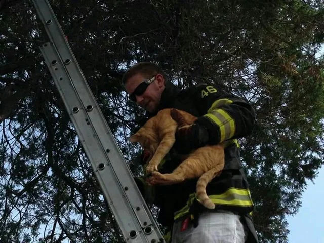 | ### Caption 1 Analysis
Precision:
- Strengths:
- Correctly identifies the person as a firefighter.
- Accurately states that the firefighter is rescuing a cat at the top of a ladder.
- Describes that the cat is in the firefighter's arms.
- Notes the scenario as a scene of rescue.
- Weaknesses:
- Incorrectly states that the cat is located “around the middle of the scene” and that it "appears to be looking up at the fireman," which isn’t clear from the image.
Recall:
- Strengths:
- Correctly mentions the firefighter's outfit, ladder, cat, and the act of rescue.
- Describes the setting being among trees.
- Weaknesses:
- Misses the firefighter’s sunglasses.
- Overemphasis on the role and actions of the cat without substantial visual evidence.
### Caption 2 Analysis
Precision:
- Strengths:
- Correctly identifies the person as a firefighter.
- States the firefighter is rescuing a cat from a tree and correctly mentions that the firefighter is on a ladder.
- Accurately describes the cat being held in the firefighter’s arms.
- Correctly notes that the firefighter is wearing sunglasses.
- Weaknesses:
- Assumes the cat appears calm and comfortable, which is subjective and not very clear from the image.
Recall:
- Strengths:
- Correctly describes the key elements such as the firefighter, the cat, the ladder, the tree, and the rescue scenario.
- Mentions the sunglasses, which is a detail present in the image.
- Weaknesses:
- The totality of the expression of calmness and comfort of the cat, while plausible, is not explicitly clear from the image.
### Overall Comparison
Precision:
Caption 2 demonstrates higher precision because it accurately describes more of the specific observable details in the image, such as the sunglasses and the ladder being used for rescue. Caption 1 has some inaccurate statements, particularly regarding the cat's behavior and location relative to the scene.
Recall:
Caption 2 again provides better recall. It includes more details present in the image, such as the sunglasses and the general scene setup. Caption 1 omits the sunglasses and adds some potentially misleading details about the cat’s position and actions.
Conclusion:
Caption 2 provides a more accurate and comprehensive description of the image in terms of both precision and recall. | Caption 1 Evaluation:
Precision:
- The caption correctly identifies that a firefighter is rescuing a cat from a tree.
- It accurately mentions the firefighter is holding the cat in his arms.
- It notes that the firefighter is wearing sunglasses.
- It suggests that the cat appears to be calm and comfortable, which is a bit subjective but seems reasonable based on the image context.
- The statement that the firefighter is on a ladder is correct.
Recall:
- The caption provides a detailed context of the situation, describing the firefighter's actions and demeanor.
- It highlights safety measures such as wearing sunglasses to protect from the sun or debris.
- The description emphasizes the firefighter's dedication and the cat's well-being.
Overall: Caption 1 has high precision as it accurately describes the image with necessary details. Its recall is also high because it encompasses almost all visual elements of the scene.
Caption 2 Evaluation:
Precision:
- The caption correctly points out a man in a fireman outfit rescuing a cat.
- It mentions the man is on top of a ladder.
- It states the man is holding the cat in his arms.
- The phrase "at the top of a ladder" is not entirely precise; the man is partway up the ladder.
- The cat "looking up at the fireman" is inaccurate, as the cat appears to be facing outward from the tree and not necessarily looking up at the fireman.
Recall:
- The caption covers most aspects of the image, like the fireman outfit, ladder, man holding the cat, and the rescue operation.
- It fails to mention the sunglasses which the firefighter is wearing.
- It does not describe the firefighter’s demeanor or details about the cat's state, providing less context than Caption 1.
Overall: Caption 2 has moderate precision; it correctly identifies major elements but has a minor error regarding the cat's direction. Its recall is slightly lower than Caption 1, as it misses some details about the scene's context and descriptive aspects.
Comparison:
Caption 1 is more accurate and comprehensive in its description, capturing both the main elements and the subtleties of context. Caption 2 is more straightforward, but it includes a minor inaccuracy and provides less detail, making it less informative than Caption 1. | The image features a man wearing a fireman outfit, rescuing a cat at the top of a ladder. The man appears to be holding the cat in his arms while trying to help him down from a tree. The cat, which is located around the middle of the scene, appears to be looking up at the fireman as he assists it in distress. The scene highlights the fireman's role in helping those in need, even animals such as the cat in this case. | 7.0 | 8.0 | 7.0 | 7.0 | 7.50 | 7.00 | 7.24 |  | In the image, a firefighter is rescuing a cat from a tree. The firefighter is holding the cat in his arms while standing on a ladder, ensuring the cat's safety. The cat appears to be calm and comfortable in the firefighter's arms. The firefighter is wearing sunglasses, likely to protect his eyes from the sun or any debris. The scene showcases the firefighter's dedication to saving the cat and ensuring its well-being. | 8.0 | 10.0 | 9.0 | 10.0 | 9.00 | 9.50 | 9.24 |  |
 | ### Caption 1 Evaluation
#### Precision
- Correct Details:
- Elderly couple walking together on a path.
- They appear to be enjoying the moment.
- Environment includes multiple trees.
- There is another person in the background.
- Incorrect Details:
- There is no clear "intimate embrace" visible; they are holding hands.
- No visible potted plants in the image.
- No indication that they are celebrating an anniversary.
Precision Score: 6/10
#### Recall
- Missed Details:
- The man's blue shirt.
- The woman's white pants.
- The woman's patterned jacket.
- Suggesting a park or similar setting.
Recall Score: 6/10
### Caption 2 Evaluation
#### Precision
- Correct Details:
- Elderly couple walking down a path.
- They are holding hands.
- The man is wearing a blue shirt.
- The woman is in white pants and a patterned jacket.
- Appears to be an outdoor setting with trees.
- Incorrect Details:
- None.
Precision Score: 10/10
#### Recall
- Missed Details:
- The description of the other people in the background.
Recall Score: 9/10
### Comparison
#### Precision
- Caption 2 is more precise; it accurately describes nearly all visible details, while Caption 1 introduces some incorrect elements.
#### Recall
- Caption 2 also performs better in recall by including specific details (e.g., clothing) that Caption 1 missed.
### Overall
- Caption 2 is the superior description, scoring higher in both precision and recall. It accurately and comprehensively describes the image, whereas Caption 1 includes some inaccuracies and omits key details. | ### Caption 1 Evaluation
Precision:
- The caption accurately mentions that the couple is elderly, holding hands, and walking down a path.
- It correctly identifies the man's blue shirt and the woman's white pants and patterned jacket.
- The caption indicates a park or outdoor setting, which corresponds well with the green surroundings and trees visible in the image.
- The background detail about other people being visible but not the main focus is correct.
Recall:
- The caption effectively covers most aspects of the image, including the primary subjects (the elderly couple), their attire, and the setting.
- It does not mention other minor details, like the specific state or presence of the pavement and the positions of people in the background, but these omissions are minor and do not detract significantly from the completeness.
### Caption 2 Evaluation
Precision:
- The caption accurately describes the elderly couple walking together on a path.
- It correctly suggests that the setting is scenic and mentions the trees.
- However, it inaccurately depicts the couple as "engaging in an intimate embrace" when they are actually just holding hands.
Recall:
- The caption misses several key details from the image:
- The specific details of the couple’s clothing (the man’s blue shirt and the woman’s white pants and patterned jacket).
- It mentions the possibility of the couple celebrating an anniversary, which is speculative and not evident from the image.
- It fails to acknowledge the other people in the background clearly and the detailed nature of the path.
### Summary
Caption 1:
- Precision: High (accurate and specific to the visible details)
- Recall: High (comprehensive coverage of important elements in the image)
Caption 2:
- Precision: Low to Medium (inaccurate detail about the intimate embrace, less specific about other elements)
- Recall: Low (misses key points about attire and makes speculative assumptions not evident in the image)
Overall, Caption 1 provides a more precise and comprehensive description of the image compared to Caption 2. | The image portrays an elderly couple walking together side by side on a path, enjoying the moment. The man and woman appear to be a loving couple, possibly celebrating their anniversary, as they engage in an intimate embrace.
The environment around them suggests a scenic location, with multiple trees on the side and even some potted plants placed nearby. There's another person visible in the background, but the elderly couple continues their stroll together. | 6.0 | 5.0 | 6.0 | 3.0 | 5.50 | 4.50 | 4.95 |  | The image depicts an elderly couple walking down a path, holding hands as they enjoy each other's company. The man is wearing a blue shirt, while the woman is dressed in white pants and a patterned jacket. They appear to be strolling through a park or a similar outdoor setting.
In the background, there are a few other people visible, but they are not the main focus of the scene. The elderly couple seems to be the main subjects of the image, showcasing their love and companionship as they walk together. | 10.0 | 10.0 | 9.0 | 9.0 | 10.00 | 9.00 | 9.47 |  |
 | ### Caption 1 Evaluation
Precision:
- Accurate:
- The image is an advertisement inviting people to a night party.
- It takes place at a beach club.
- The main focus of the advertisement is a woman with headphones on, wearing a purple shirt.
- She has a positive expression.
- Inaccurate:
- There is no smaller figure of a person on the left side of the advertisement.
- The scene does not specifically take place on a beach.
Recall:
- Includes:
- Invitation to a night party.
- Location at a beach club.
- Woman with headphones, wearing a purple shirt, positive expression.
- Misses:
- Date is Saturday, July 28th.
- Entry fee is $15.
- Featured DJs are Francois and Sebastian.
- Free cocktails and event starting at 10 PM.
- The text "Get Your Ticket Online" and the website URL.
### Caption 2 Evaluation
Precision:
- Accurate:
- Colorful advertisement for a night party.
- "Glow in the Dark Night Party" mentioned (though should include hyphens for accuracy).
- Woman wearing headphones and smiling.
- Captures the lively and energetic atmosphere.
- Location is at the Beach Club.
- Promises free cocktails.
- Event starts at 10 PM.
- Inaccurate:
- The date is incorrect: It should be Saturday, July 28th, not September 1st.
Recall:
- Includes:
- Colorful advertisement.
- "Glow in the Dark Night Party".
- Smiling woman with headphones, raising her fist.
- Mention of free cocktails.
- Event starts at 10 PM.
- Location at Beach Club.
- Misses:
- Correct date (Saturday, July 28th).
- Entry fee ($15).
- Featured artists (DJ Francois, DJ Sebastian).
- "Get Your Ticket Online" and the website URL.
### Comparison:
Caption 1:
- Precision: Higher inaccuracies due to false detail (smaller figure, beach setting).
- Recall: Misses substantial details such as event date, entry fee, featured artists, and ticket information.
Caption 2:
- Precision: Generally accurate but contains a significant error in the event date.
- Recall: Provides a comprehensive overview, missing fewer details compared to Caption 1 but does miss the entry fee, featured artists, and ticket information.
Conclusion:
Caption 2 better describes the image despite the incorrect event date, as it captures more details and avoids adding incorrect elements like Caption 1 does. To improve Caption 2, correcting the date would significantly enhance its precision. | Evaluating Caption 1:
Precision:
- Correct Details: The image indeed features a colorful advertisement for a night party called "Glow in the Dark Night Party." The woman in the image is smiling, wearing headphones, and raising her fist.
- Incorrect/Extra Details: The date is mentioned as Saturday, September 1st, but the image actually states Saturday, July 28th.
- Missing Details: The entry fee ($15) is not mentioned. The DJs' names (DJ Francois and DJ Sebastian) are not mentioned, nor is the website (www.REALLYGREATSITE.com).
Recall:
- There are correct pieces of information, but crucial details like the correct date, entry fee, and DJs' names are missing. The website is also not mentioned.
- Visual elements such as the vibrant background design and the nightclub atmosphere are well captured.
Evaluating Caption 2:
Precision:
- Correct Details: The image advertises a night party at the Beach Club. The woman is the main focus, wearing a purple shirt and headphones, and she appears to be in a positive mood.
- Incorrect/Extra Details: There is no smaller figure of a person on the left side of the advertisement. The scene does not explicitly show a beach; it's an abstract design background.
- Missing Details: The advertisement's date (Saturday, July 28th), entry fee ($15), DJs' names (DJ Francois and DJ Sebastian), free cocktails, event start time (10 PM), and the website are not mentioned.
Recall:
- Similar to Caption 1, Caption 2 captures the core elements of the woman's appearance but misses several details, such as the correct date, entry fee, DJs' names, free cocktails, start time, and website.
- It falsely identifies a smaller figure and associates the scene with a beach context that is not explicitly present.
Final Evaluations:
Caption 1:
- Precision: Medium (contains correct info, but incorrect date and missing details)
- Recall: Medium (captures essential elements but misses out on several key details)
Caption 2:
- Precision: Low to Medium (correctly identifies the woman but incorrect additional info and less informative)
- Recall: Low (misses many important details and adds incorrect context)
Caption 1 is more accurate overall, even with the date error, because it captures more relevant details and context compared to Caption 2. | The image is an advertisement inviting people to a night party at the beach club. The main focus of the advertisement is a woman with headphones on, wearing a distinctive purple shirt. She appears to have a positive expression on her face, making it seem like she is ready to party.
In addition to the woman, there's a smaller figure of a person on the left side of the advertisement. The scene takes place on a beach, adding to the overall ambiance of the night party being advertised. | 5.0 | 4.0 | 4.0 | 3.0 | 4.50 | 3.50 | 3.94 |  | The image features a colorful advertisement for a night party called "Glow in the Dark Night Party." The advertisement showcases a smiling woman wearing headphones and raising her fist in the air, giving the impression of a lively and energetic atmosphere.
The advertisement also includes information about the event, such as the date (Saturday, September 1st) and the location (Beach Club). Additionally, the advertisement promises free cocktails and event starts at 10 PM. The overall design of the advertisement is visually appealing and inviting, likely attracting potential attendees to the event. | 8.0 | 6.0 | 8.0 | 6.0 | 7.00 | 7.00 | 7.00 |  |
 | ### Caption 1 Evaluation
Precision:
- Correct Information:
- The image includes information about a convention taking place in New York City.
- The event does cover digital marketing.
- There is information about ticket pricing and speaker details.
- Incorrect/Misleading Information:
- The name "Warren Buff" should not be assumed to be Warren Buffett.
- The event chair is displayed as $499 per seat, not $49.
- There's no mention of "Warren C. Buffett" being absolutely identical to the well-known investor Warren Buffett; this should be avoided if the image only provides the name "Warren Buff".
- There is no mention or indication of "Buffett's estate's CEO" or "his main investment idea manatoride entrepreneur."
Precision Score: 4/10 (Several correct details but significant inaccuracies and assumptions)
Recall:
- Missing Information:
- The date and time for the event (May 18, 3-7 PM) are not specified.
- The URL for registration is not mentioned.
- The inclusion of an ebook and certificate of participation is omitted.
Recall Score: 6/10 (Covers a fair bit but misses specific details like date/time and other features)
### Caption 2 Evaluation
Precision:
- Correct Information:
- The poster is advertising the Digital Marketing 2026 conference.
- It is taking place in New York City.
- The speakers are Warren Buff and Wayne Bentley.
- Both speakers are correctly placed on the poster.
- The price of $499/seat is accurate.
- Incorrect Information:
- The conference date is incorrect (only May 18th is mentioned, not from May 18th to 20th).
Precision Score: 9/10 (Very accurate with one incorrect detail)
Recall:
- Missing Information:
- The specific date and time (May 18, 3-7 PM) are not mentioned.
- Innovation-focused ideas are mentioned but without the specificity of the tagline in the image.
- The registration URL is not provided.
- Details about the ebook and certificate of participation are missing.
Recall Score: 7/10 (Captures most details but misses some specifics)
### Overall Comparison:
Precision:
Caption 2 is significantly more precise than Caption 1. It has only one minor error (incorrect event dates) compared to several inaccuracies and assumptions made in Caption 1.
Recall:
Both captions provide a good amount of detail but miss some specifics present in the image. Caption 2 ranks slightly higher for recall because it captures more relevant information without erroneous assumptions.
Final Scores:
- Caption 1: Precision - 4/10, Recall - 6/10
- Caption 2: Precision - 9/10, Recall - 7/10 | ### Caption 1 Evaluation:
#### Precision:
- Correct Information:
- The image features a purple poster.
- It advertises the Digital Marketing 2026 conference.
- The event is on May 18th.
- Presenters include Warren Buff and Wayne Bentley.
- The event will be held at the New York Convention Center.
- Tickets are $499 each.
- There is a focus on innovation in the digital marketing industry.
- Incorrect Information:
- Warren Buffet's name is incorrectly stated as "Warren Buff" in the image; there may be confusion but it is different from the famous investor Warren Buffet.
- The dates are incorrectly stated as "May 18th to 20th"; the image only mentions May 18th, 3-7 PM.
- Positioning details are incorrect: Warren Buff and Wayne Bentley are displayed with their roles rather than their relative positions "left" or "right".
#### Recall:
- Missing Information:
- The image also mentions that attendees will receive an ebook and a certificate of participation.
- The URL for registration is provided but not mentioned in the caption.
- Additional context such as "The most extensive marketing conference is back!" and other design elements are omitted.
### Caption 2 Evaluation:
#### Precision:
- Correct Information:
- The conference is about digital marketing.
- The location is New York City.
- Organizers or speakers mentioned include a Warren Buff (potential confusion with Warren Buffett).
- Incorrect Information:
- Misrepresentation: "Several organizers or speakers" – the image only shows two speakers.
- Misnamed: "Warren C. Buffett" – the poster mentions Warren Buff.
- Misleading Pricing: Event chair for $49 – the poster shows the ticket price as $499.
- Incorrect speaker roles: Wayne Bentley is described differently in the image (Event Host, Global Director, Ultimate Group).
- Misleading Details: Warren Buffett’s estate and various roles are incorrect according to the image.
#### Recall:
- Missing Information:
- The event date and time (May 18, 3-7 PM).
- The specific names and roles of speakers other than Warren Buffett.
- Price per seat accurately at $499.
- Mention of ebook and certificate of participation.
- Design and presentation notes like colors, fonts, and additional key context.
### Summary:
- Caption 1: More precise in actual event details (date, presenter names, location, ticket price), but has a significant error with dates and context around Warren Buff.
- Caption 2: Includes several inaccuracies, such as pricing and roles of speakers, and adds incorrect information while omitting crucial event specifics.
Overall, Caption 1 demonstrates higher recall and precision by including more specific and correct details, despite errors present. Caption 2 contains substantial inaccuracies and lacks crucial details present in the image. | The image displays a convention sign for an event taking place in New York City featuring a discussion on general digital marketing. Several organizers or speakers, including men such as Warren Buffett's estate's CEO Warren C. Buffett, and his main investment idea manatoride entrepreneur, are featured on the panel for the session.
Moreover, there is an event chair advertised for $49, with some bullet points beneath detailing the event's aims. Big names within the digital marketing field and Buffett's insights are expected to be discussed during the event. | 4.0 | 3.0 | 6.0 | 4.0 | 3.50 | 5.00 | 4.12 |  | The image features a purple poster advertising the Digital Marketing 2026 conference, which is taking place in New York City from May 18th to 20th. The poster showcases two speakers, Warren Buffet and Wayne Bentley, who will be presenting at the event. Warren Buffet is on the left side of the poster, while Wayne Bentley is on the right side.
The poster also includes information about the conference, such as the dates, location, and ticket prices. The tickets are priced at $499 each, and the event will be held at the New York Convention Center. The conference is focused on innovative ideas to expand the digital marketing industry. | 9.0 | 6.0 | 7.0 | 9.0 | 7.50 | 8.00 | 7.74 |  |
 | ### Caption 1 Evaluation
Precision:
- Correctly identifies the primary movie as "Avengers: Endgame."
- Notes the presence of Captain America and other superheroes.
- Mentions that Captain America is to the right (though this is somewhat inexact as he is more centrally located).
- Describes the ensemble cast and the hierarchical arrangement of the characters.
Recall:
- Does not specify most superheroes by name, other than Captain America.
- Lacks details about the weapons held by characters.
- Missing the movie's release date.
- Does not mention who the actors are or list the names given at the top of the poster.
- Doesn't specifically highlight the vibrant colors or the artistic design of the poster.
### Caption 2 Evaluation
Precision:
- Correctly identifies the movie as "Avengers: Endgame."
- Accurate mention of specific superheroes: Captain America, Iron Man, Thor, Black Widow, Hawkeye, and Ant-Man (though Ant-Man's description is included, this is not visually evident on close inspection; he might not be distinctly visible on this poster).
- Correctly indicates Captain America’s shield and Iron Man's gauntlets present.
- States the correct release date: April 26, 2019.
Recall:
- Covers most of the main superheroes depicted in the image.
- More detailed about the objects (weapons) present.
- Notes the excitement and anticipation surrounding the movie.
- Does not list the names of actors given at the top of the poster.
- Missing reference to background elements, such as colors or design nuances.
### Summary:
Overall, Caption 2 provides a more comprehensive and accurate description of the image, capturing a significant number of notable details present in the poster. It provides better precision and recall by listing multiple main characters, as well as specific equipment they carry, the movie release date, and its focus on excitement and anticipation.
Caption 1, while still accurate, is less detailed and specific. It lacks comprehensive coverage of the various characters and elements shown in the image, making it less effective in both precision and recall. | Sure, let's evaluate both captions based on precision and recall.
---
Caption 1:
*Precision:*
- "The image features a poster advertising the movie 'Avengers: Endgame.'"
- Accurate: The poster is indeed for "Avengers: Endgame."
- "The poster showcases a group of superheroes from the Marvel Cinematic Universe, including Captain America, Iron Man, Thor, Black Widow, Hawkeye, and Ant-Man."
- Accurate: These characters are all present on the poster.
- "Each character is prominently displayed on the poster, with some of them holding their respective weapons, such as Captain America's shield and Iron Man's gauntlets."
- Accurate: Various characters are prominently displayed holding their weapons (Captain America has his shield, Iron Man does have his gauntlets).
- "The poster captures the excitement and anticipation for the upcoming movie, which is set to release on April 26, 2019."
- Accurate: The release date "April 26" is mentioned on the poster, aligning with the release year.
Precision Evaluation: EXCELLENT
*Recall:*
- The caption mentions the main characters (Captain America, Iron Man, Thor, Black Widow, Hawkeye, and Ant-Man).
- It does not mention other characters such as the Hulk, War Machine, Nebula, Rocket Raccoon, or Captain Marvel, all of whom are present.
- The visual elements around the characters and the overall design of the poster are not detailed.
Recall Evaluation: MODERATE
---
Caption 2:
*Precision:*
- "The image is from a poster promoting the movie 'Avengers: Endgame.'"
- Accurate: The poster is indeed promoting "Avengers: Endgame."
- "The poster features an ensemble cast of superhero characters, including Captain America, who is situated to the right, and several other superheroes in varying positions around him."
- Partially Accurate: Captain America is in the center, not to the right. The rest of the description is accurate but less specific.
- "There are multiple poster copies displayed on the screen, each showcasing one or more of the powerful characters in the scene."
- Inaccurate: There are no multiple poster copies; it’s a single poster.
Precision Evaluation: LOW
*Recall:*
- It mentions the ensemble cast but only specifically names Captain America.
- It omits the names of other main characters and additional visual elements.
- The caption lacks details about the weapons, positioning, and design of the poster.
Recall Evaluation: POOR
---
Conclusion:
- Caption 1 is significantly better in terms of both precision and recall. It accurately mentions the primary characters and important details about the image context, even though it misses some additional characters.
- Caption 2 is less precise, with minor inaccuracies and lacking in detailed recall, resulting in it not fully describing the poster comprehensively. | The image is from a poster promoting the movie "Avengers: Endgame." The poster features an ensemble cast of superhero characters, including Captain America, who is situated to the right, and several other superheroes in varying positions around him.
There are multiple poster copies displayed on the screen, each showcasing one or more of the powerful characters in the scene. The central focus of the poster highlights the impressive display and the excitement of the movie release. | 7.0 | 5.0 | 6.0 | 4.0 | 6.00 | 5.00 | 5.45 |  | The image features a poster advertising the movie "Avengers: Endgame." The poster showcases a group of superheroes from the Marvel Cinematic Universe, including Captain America, Iron Man, Thor, Black Widow, Hawkeye, and Ant-Man. Each character is prominently displayed on the poster, with some of them holding their respective weapons, such as Captain America's shield and Iron Man's gauntlets. The poster captures the excitement and anticipation for the upcoming movie, which is set to release on April 26, 2019. | 9.0 | 9.0 | 9.0 | 9.0 | 9.00 | 9.00 | 9.00 |  |
| 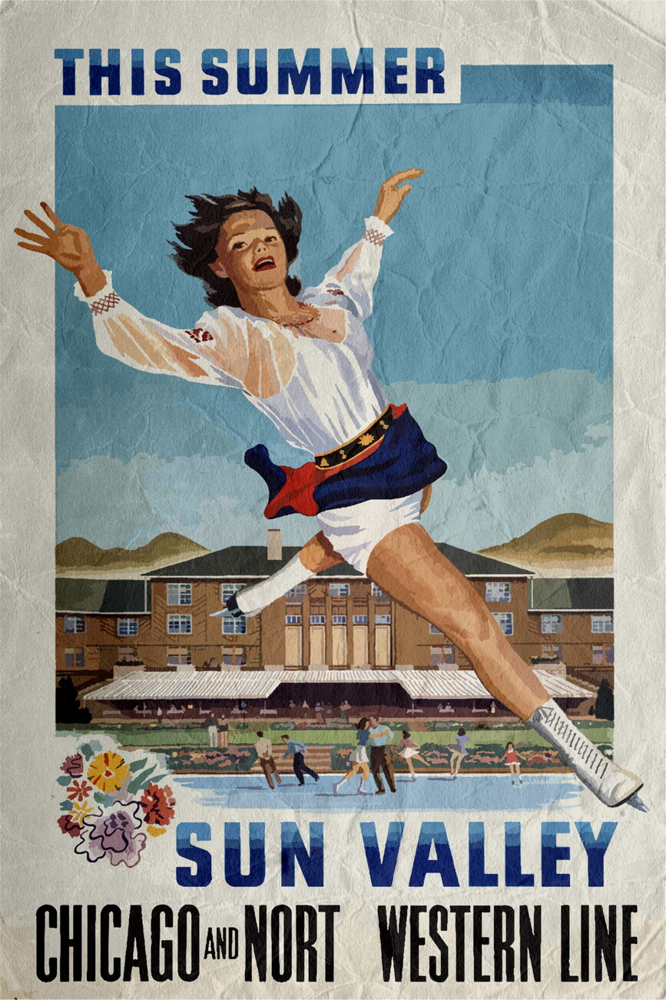 | ### Caption 1: Analysis
#### Precision:
- Main focus and individuals celebrating: The caption accurately identifies the main focus of the poster as a young woman in a short dress and white boots, but the idea that she is being celebrated is speculative.
- Lively atmosphere: It is correctly mentioned that additional people in the background create a lively atmosphere.
- Clock and car: There are no clocks or cars visible in the poster, making this part of the caption incorrect and lowering precision.
Precision score: 2/5 (Several details are inaccurate).
#### Recall:
- Woman in focus: The focus on the woman is accurately captured.
- Lively background: The lively atmosphere created by additional individuals is mentioned correctly.
- Nostalgic elements: The mention of the clock and car is incorrect, as these elements are not present in the image.
Recall score: 3/5 (Misses many details present, and some described elements are not in the image).
### Caption 2: Analysis
#### Precision:
- Vintage advertisement: Correctly identifies the style as a vintage advertisement.
- Main focus: Describes the woman as wearing a white dress and skates, depicted correctly as flying through the air.
- Location name: Mentions Sun Valley and Chicago, and the Northern (misspelled "Nort's") Western Line, which is correctly identified from the poster.
Precision score: 4/5 (Minor spelling error lowers score slightly).
#### Recall:
- Dynamic pose: Correctly describes the woman’s dynamic pose.
- Background people: Identifies the presence and distribution of other people correctly.
- Atmosphere: Accurately describes the lively atmosphere of the advertisement.
- Specific elements: It does not specify details about the building or the context beyond the woman and people.
Recall score: 4/5 (Most elements present are described, but some more detail could be added).
### Overall Evaluation:
Caption 1:
- Precision: 2/5
- Recall: 3/5
Caption 2:
- Precision: 4/5
- Recall: 4/5
Caption 2 provides a more accurate and detailed description of the image, making it the better caption for describing this vintage advertisement. It correctly highlights the essential elements and avoids introducing incorrect details, unlike Caption 1. | ### Precision
#### Caption 1:
- Positive Points:
- Mentions a vintage advertisement for Sun Valley, Chicago, and Nort's Western Line.
- Accurately describes a woman wearing a white dress and skates.
- The woman is flying through the air with her arms outstretched, which is precise.
- Negative Points:
- "Nort" is a typo. It should be "North."
Precision Rating for Caption 1: 8/10
#### Caption 2:
- Positive Points:
- Describes a young woman in a short dress and white boots.
- Indicates that there are other individuals in the background.
- Negative Points:
- The presence of a clock on the wall and a partially visible car are mentioned, none of which are in the image.
- It talks about celebrating and sharing excitement, which is subjective.
Precision Rating for Caption 2: 5/10
### Recall
#### Caption 1:
- Positive Points:
- Identifies the main elements: woman skating in the air, other people in the background, and lively atmosphere.
- Negative Points:
- Does not mention the backdrop scenery (mountains and buildings).
Recall Rating for Caption 1: 7/10
#### Caption 2:
- Positive Points:
- Identifies the main elements: woman in dress with white boots, other individuals.
- Negative Points:
- Fails to mention the backdrop scenery (mountains and buildings).
- Overlooks the primary text in the poster ("This Summer", "Sun Valley").
- Adds incorrect details like a clock and a car.
Recall Rating for Caption 2: 5/10
### Final Assessment
- Caption 1 is more accurate in terms of precision and recall compared to Caption 2.
- Caption 1 correctly identifies the most critical aspects, though it has a minor typo.
- Caption 2 includes incorrect details that are not present in the image and introduces subjective elements that are not clearly depicted.
Overall Ratings:
- Caption 1: Precision: 8/10, Recall: 7/10
- Caption 2: Precision: 5/10, Recall: 5/10 | The main focus of this image is the poster featuring a young woman in a short dress and white boots, who seems to be the main attraction. She is accompanied by other individuals as they all celebrate and share the excitement of the summer location.
Additional people can be seen in the background, creating a lively atmosphere. The image also harkens back to the past, as it features items such as a clock on the wall, highlighting the nostalgic vibe of the location. In the background, a car is also partially visible, signaling the transportation of the people attending this event. | 4.0 | 5.0 | 5.0 | 5.0 | 4.50 | 5.00 | 4.74 |  | The image features a vintage advertisement for Sun Valley, Chicago, and Nort's Western Line. The advertisement showcases a woman wearing a white dress and skates, flying through the air with her arms outstretched. She appears to be the main focus of the advertisement.
In the background, there are several other people scattered throughout the scene. Some of them are closer to the woman, while others are further away. The combination of the woman's dynamic pose and the presence of other people creates a lively atmosphere in the advertisement. | 8.0 | 8.0 | 8.0 | 7.0 | 8.00 | 7.50 | 7.74 |  |
 | ### Caption 1 Evaluation:
Precision:
- The caption states that the movie is "The Front Line," which is correct.
- It describes several soldiers with guns and gear, which is accurate.
- Mentions at least eleven people are prominently displayed, which aligns with the poster.
- The caption lists the stars as "Thomas Young Chon Brothers" and "Elias Sammons," which is incorrect. The correct names are "Thomas Brooks" and "Elena Samuels".
- The background is described as a picturesque sunset, which fits.
- There is a mention of the bond and unity shared among the soldiers, which can be inferred from the imagery.
Recall:
- The caption covers most visual elements: the movie title, soldiers in army uniforms, sunset background, and the general theme of camaraderie and teamwork.
- It misidentifies the actors' names, missing key information about the actual cast.
### Caption 2 Evaluation:
Precision:
- The caption correctly identifies the film title as "The Front Line."
- The main actors’ names, Thomas Brooks and Elena Samuels, are correctly listed.
- It accurately describes the silhouettes of soldiers against a sunset.
- Captures the essence of the dramatic, captivating appearance.
Recall:
- While it covers the critical elements of the poster (title, lead actors, silhouette of soldiers, and sunset backdrop), it is less detailed about the number of soldiers and the unity theme.
- It does not mention the minor details like the tagline "One man can make all the difference," or specifics about the soldiers' attire or gear.
Comparison:
- Precision: Caption 2 has higher precision because it accurately names the actors and correctly describes the visual elements. Caption 1, despite being detailed, has significant errors, particularly in the names of the stars.
- Recall: Caption 1 has higher recall as it covers more visual details like the soldiers’ gear, the number of people, and the unity theme, but the error in actor names affects its accuracy. Caption 2 is concise but omits some details about the number of soldiers and the tagline.
### Summary:
- Caption 1 has higher recall but lower precision due to inaccuracies in naming actors.
- Caption 2 has slightly lower recall due to omission of smaller details but higher precision thanks to accurate actor identification and depiction of the main visual elements. | *Caption 1 Analysis:*
Precision:
- The caption accurately identifies that the poster is for the movie "The Front Line."
- It correctly names the stars as Thomas Brooks and Elena Samuels.
- The depiction of a man in the forefront and additional silhouettes representing soldiers is precise.
- The backdrop being a sunset is correctly described.
Recall:
- The caption misses mentioning that there are eleven soldiers in the image; it only speaks generally about the group.
- It does not mention other details like the tagline "One man can make all the difference" or list of the production and crew names at the bottom of the poster.
Overall, Caption 1 is quite precise but could enhance recall by including more specific details present in the image.
Precision: 4.5/5
Recall: 3.5/5
*Caption 2 Analysis:*
Precision:
- The poster is correctly identified as belonging to "The Front Line."
- The description of soldiers with guns and gear, dressed in army uniforms, is precise.
- Recognizes the scenic sunset background accurately.
- Errors:
- Wrong names: The caption incorrectly states the movie stars' names as "Thomas Young Chon Brothers" and "Elias Sammons" instead of Thomas Brooks and Elena Samuels, respectively.
- Mentions eleven people while the exact count is not necessary for precision.
Recall:
- The caption captures the sense of camaraderie and teamwork depicted by the soldiers.
- It does not mention the man featured prominently in the foreground.
- Does not explicitly describe the tagline or the details of the production team.
While Caption 2 extends slightly into the image details related to camaraderie and teamwork, errors regarding names and missing a focus on the prominently featured individual reduce its effectiveness.
Precision: 3/5
Recall: 3/5
*Summary:*
Caption 1 is more accurate in naming the movie stars and generally describing the scene, making it stronger in terms of precision. It, however, could provide more details for full recall.
Caption 2 captures more detailed background context and camaraderie but is imprecise about the names and doesn't highlight the central figure as strongly.
Overall, Caption 1 edges out due to higher precision and fewer errors in specifics. | The image features a movie poster for "The Front Line," showcasing several soldiers with guns and gear in their hands, dressed in army uniforms. There are at least eleven people prominently displayed on the poster, creating a sense of camaraderie and teamwork among them.
At the top of the poster, there are names of the movie stars, Thomas Young Chon Brothers, and Elias Sammons, adding a sense of recognition to the image. The background of the poster consists of a picturesque sunset, which likely plays a role in the movie's storyline or a significant moment within the narrative. This poster represents the strong bond and unity shared among the soldiers in the movie. | 6.0 | 3.0 | 8.0 | 3.0 | 4.50 | 5.50 | 4.95 |  | The image features a movie poster for the film "The Front Line," which stars Thomas Brooks and Elaine Samuels. The poster showcases a silhouette of a man standing in front of several other silhouettes, representing a group of soldiers. The scene is set against a backdrop of a sunset, giving the poster a dramatic and captivating appearance. | 9.0 | 9.0 | 8.0 | 9.0 | 9.00 | 8.50 | 8.74 |  |
 | ### Caption 1 Evaluation:
Precision:
- The opening sentence correctly identifies the promotional nature of the ad and the event—a Digital Marketing Meetup.
- The ad's upbeat energy and appealing design are subjective assessments, but they align with the ad's visual presentation.
- The target audience (professionals or digerati in digital marketing or related fields) is inferred correctly based on the content but is not explicitly mentioned in the image.
- The event date is incorrectly stated as May 17, 2021, whereas the image shows May 17, 2022.
- The location is incorrect; the image states "112 Felton Lane," while the caption mentions "111 W 23rd St."
Recall:
- The caption captures the event type (Digital Marketing Meetup), date, and location (though with errors).
- It does not mention the partnerships ("Hype Sumo & Electric Wave") or the name of the presenting app ("Crowd App").
- It doesn't refer specifically to the drink tickets, snacks, and prizes mentioned in the image.
- The website for registration is not mentioned.
### Caption 2 Evaluation:
Precision:
- Identifies the image as an advertisement for a Digital Marketing Meetup.
- States the event's date incorrectly as May 17, 2021, instead of 2022.
- The location is correctly identified as "The Cherry Sway Lounge," but lacks further details mentioned in the image ("112 Felton Lane, Manhattan, New York").
- Incorrectly states "two tickets" are visible, but no such detail is shown in the image.
- Mentions two snacks and two drinks, which is not specified in the image. The image only states "2x drink tickets," and mentions snacks in general without specifying quantity.
Recall:
- Correctly captures the type of event, date (though incorrectly), and the location name.
- Includes the concept of drink tickets and snacks, though inaccurately quantified.
- Fails to mention the event organizers or partnerships.
- Misses other details like prizes and the registration website.
### Summary:
- Caption 1, while capturing the general essence, has crucial factual inaccuracies (wrong date and location). It also omits other finer details like the partnerships, presenting app, and specific offers (drink tickets, snacks, prizes).
- Caption 2 makes fewer assumptions regarding the design and target audience but still contains factual errors about the date and quantification of tickets/snacks. It is more focused but less accurate on specific details.
In conclusion, both captions need refinement for precision and recall, but Caption 2 might be slightly preferable for its relatively better focus on details present in the image, despite its inaccuracies. | ### Caption 1:
#### Precision:
- Date: The caption states the event is on May 17, 2021. In the image, the date is May 17, 2022 (Mismatch).
- Venue: The caption mentions "The Cherry Sway Lounge in New York City," which is correct in both the image and the caption.
- Visual Elements:
- Interaction with the digital aspect: The caption mentions a person holding a cell phone, which aligns with the image.
- Tickets and snacks: The image mentions "2X drink tickets | snacks | prizes available," but the caption incorrectly interprets two visible tickets, snacks, and drinks. These details are not visually explicit in the image but are part of the text (Slight Mismatch).
#### Recall:
- Event Title: The caption mentions it is an advertisement for a "Digital Marketing Meet Up," matching the image.
- Sponsors/Partnerships: The image mentions "In partnership with Hype Sumo & Electric Wave," which the caption does not include (Missing information).
- Registration: The image directs users to register online at www.pulse.com/event, but this is not mentioned in the caption.
### Caption 2:
#### Precision:
- Date: The caption incorrectly mentions May 17, 2021, while the image shows May 17, 2022 (Mismatch).
- Venue: The caption states "The Cherry Lounge located at 111 W 23rd St. NY," which is incorrect as the image shows "112 Felton Lane Manhattan, New York" (Mismatch).
- Design and Appeal: The description of the ad having "upbeat energy, showcasing a simple yet catchy marketing campaign," is subjective but generally fits with a visually appealing and modern design (Match).
#### Recall:
- Event Title: The caption correctly mentions the "Digital Marketing Meetup" which is present in the image.
- Sponsors/Partnerships: The image mentions "In partnership with Hype Sumo & Electric Wave," which the caption does not include (Missing information).
- Benefits Included: The caption does not include details on the "2X drink tickets | snacks | prizes available," which are mentioned in the image.
- Registration: The image provides a URL for registration, which the caption omits.
### Conclusion:
Caption 1:
- Precision: Fairly accurate but contains a notable date error and some over-interpretations of visual elements.
- Recall: Captures most details but misses information on sponsors and registration.
Caption 2:
- Precision: Several incorrect details, including the date and venue.
- Recall: Omits details about sponsors, registration, and specific event perks offered.
Both captions have notable inaccuracies, with Caption 1 performing slightly better in terms of precision and recall despite some over-interpretations. Caption 2, while it has a broader and energetic description, misses several key details and contains more significant inaccuracies regarding the event details. | The image features a promotional ad for a Digital Marketing Meetup event in New York. The ad is designed with upbeat energy, showcasing a simple yet catchy marketing campaign. It's targeted towards professionals or even digerati interested in digital marketing or related fields.
The event is taking place on May 17, 2021, and will be held at The Cherry Lounge located at 111 W 23rd St. NY. The poster is so appealing and inviting that it can entice the audience towards attending the event in a crowded area filled with interesting conversations and new ideas. | 5.0 | 4.0 | 4.0 | 6.0 | 4.50 | 5.00 | 4.74 |  | The image is an advertisement for a Digital Marketing Meet Up event taking place on May 17, 2021, at The Cherry Sway Lounge in New York City. The advertisement features a person holding a cell phone, emphasizing the digital aspect of the event.
There are two tickets visible in the advertisement, indicating that attendees can purchase tickets to attend the event. Additionally, there are two snacks and two drinks being offered as part of the event package, making it a more enjoyable experience for the attendees. | 4.0 | 7.0 | 6.0 | 7.0 | 5.50 | 6.50 | 5.96 |  |
 | Caption 1 Analysis:
Precision:
- The poster's main text "Business Strategy Conference" is accurately described.
- The date "September 2022" is misrepresented as "September 21, 2021".
- The claim of an "outstanding line up of speakers" matches the text "Outstanding Speakers" on the poster.
- The description includes the correct number of speakers (three) and mentions their names and images but doesn't include their titles and organizations.
- "First Annual" and the presence of a distinct vertical line are inaccurate and inconsistent with the image.
Recall:
- The first caption captures the essence of a business conference poster with speakers.
- However, it misses detailed event dates (September 1-3, 2022).
- Specific timings (5:00 - 7:00 p.m.) and exact speaker titles and roles (CEO of Vander Marketing, Director of FAX Communication, Chief Executive Officer of Landora) are missing.
- Contact information (phone number, email address, website) is not included.
- Incorrectly includes "First Annual" and a "distinct vertical line," which don't exist in the image.
Caption 2 Analysis:
Precision:
- Accurately describes the Business Strategy Conference.
- The date "September 2021" is incorrect; it should be "September 2022".
- Correctly represents the presence of three speakers with their pictures and descriptions.
- Incorrect details on speaker positioning: Speakers are vertically aligned, but not positioned as "left side, middle, right side."
Recall:
- The second caption captures more detail, including the mention of "outstanding speakers" and their vertical arrangement.
- Correctly identifies the name and role/expertise of the speakers (though role details are not fully provided).
- Does not include the specific three-day date range (September 1-3) and the precise times for each speaker's session.
- Leaves out the contact information (phone number, email address, website).
Comparative Evaluation:
Precision:
- Caption 1 has more precision errors (incorrect date, additional details like "First Annual" and "distinct vertical line"), but more accurately captures the arrangement and mention of the speakers.
- Caption 2 is mostly correct but mistakes the date and speaker positioning.
Recall:
- Both captions miss specific dates and times and the contact information.
- Caption 2 gives a better overall sense of the image content but with inaccurate speaker positioning descriptions.
Conclusion:
While both captions have inaccuracies, Caption 2 is generally closer to the overall theme and scope of the image, resulting in higher recall, even if that precision is slightly flawed. Caption 1, though somewhat initialized, contains misrepresentations that could confuse the event details and arrangement. | Caption 1:
Precision:
- The date of the conference is incorrectly identified as September 2021; the correct date is September 2022.
- It correctly mentions three outstanding speakers with their roles and brief descriptions.
- It inaccurately describes the layout, stating that the speakers are positioned vertically with the first on the left, second in the middle, and third on the right. They are actually displayed vertically in a single column on the left side of the poster.
- It correctly mentions the event details (date, time) and that they are displayed prominently on the poster.
Recall:
- The caption misses some minor design details like the conference being presented by “Staples Center,” as well as the “Book Now” section with contact details.
- It accurately portrays most of the key details like the conference title, focus on the speakers, and their roles along with timing.
Evaluation for Caption 1:
Overall, this caption has moderate precision and strong recall but includes a critical error in the date and slightly misrepresents the layout of the speaker information.
Caption 2:
Precision:
- The conference date is incorrect, indicated as September 21, 2021, instead of the correct September 1-3, 2022.
- It correctly identifies the focus on the speakers, mentioning their names and pictures but does not mention their specific designations.
- The statement about the distinct vertical line between speakers is inaccurate; there is no central line creating said emphasis.
Recall:
- The caption fails to capture the names and roles of each speaker, which are crucial details shown in the image.
- It misses design elements like the "Staples Center Presents," the “1, 2, 3” date markers, and the “Book Now” section with contact information.
- While it captures the general idea of the event's focus on speakers, it lacks specifics about their roles and the conference's title.
Evaluation for Caption 2:
This caption has low precision due to incorrect dates and layout descriptions and has poor recall as it omits numerous important details like speaker roles and additional design elements.
Comparison:
Caption 1 is more accurate in describing what is in the image overall and provides more critical information compared to Caption 2. However, both captions have inaccuracies, particularly with the event date. Caption 1 has a better recall of key details relevant to the event and provides a more comprehensive overview. Caption 2 falls short in precision and recall, failing to correctly detail either the visuals or textual information comprehensively. | The image features a promotional poster for the First Annual Business Strategy Conference, scheduled for September 21, 2021. The conference claims to have an "outstanding line up of speakers," with the names and some images of three notable speakers displayed on the poster.
The speakers' names and pictures are arranged in a visually bold manner across the poster, drawing attention to the line-up. There's a distinct vertical line in the center of the poster with the two main speaker images and names positioned opposite each other, creating emphasis on the speakers' selections. | 6.0 | 4.0 | 5.0 | 3.0 | 5.00 | 4.00 | 4.44 |  | The image features a promotional poster for the Business Strategy Conference, which is scheduled to take place in September 2021. The poster showcases three outstanding speakers who will be presenting at the event. Each speaker is represented by a picture and a brief description of their role and expertise.
The speakers are positioned vertically on the poster, with the first speaker on the left side, the second speaker in the middle, and the third speaker on the right side of the poster. The event details, such as the date, time, and location, are also displayed prominently on the poster, inviting potential attendees to join the conference. | 5.0 | 6.0 | 6.0 | 6.0 | 5.50 | 6.00 | 5.74 |  |
 | ### Caption 1 Evaluation:
#### Precision:
- House with wrap-around porches: Not accurate. The house does not appear to have wrap-around porches.
- Located at the far side of the property: Could be inferred, but not explicitly clear.
- Vine and garden area surrounding the house: The garden area is accurate, but no specific vines are clearly visible.
- Beautiful gazebo: Not accurate. There is no gazebo in the image.
- Old farm truck: Not accurate. There is no old farm truck visible in the image.
- Backyard with a wired fence and some herbs: Partially accurate. There is a wired fence and a garden with plants that might include herbs.
- Tree-filled foreground offering serenity and seclusion: Fairly accurate. The foreground is densely filled with trees, providing a serene atmosphere.
##### Precision Score: Low. Several elements are inaccurate or not present in the image.
#### Recall:
- House: Mentioned.
- Garden area: Mentioned.
- Wired fence: Mentioned.
- Trees in the foreground: Mentioned.
##### Recall Score: Moderate. Some key elements (such as the house and garden) are mentioned, but important details about the specific plants and layout are missing or incorrect.
### Caption 2 Evaluation:
#### Precision:
- Lush garden in front of a large brick house: Accurate. The garden is lush and in front of a sizable house.
- Variety of plants, including trees, bushes, and flowers: Accurate. There is a variety of vegetation visible.
- Potted plants throughout the garden: Not accurate. There are no obvious potted plants visible in the image.
- Car parked near the house: Could be inferred. There is no clear evidence of a car visible in the image.
##### Precision Score: Moderately high. Most descriptions match the image accurately, but the mention of potted plants and a parked car are not corroborated by the image.
#### Recall:
- House: Mentioned.
- Garden with a variety of plants: Mentioned.
- Trees, bushes, and flowers: Mentioned.
- Potted plants: Missing from image.
- Parked car: Not visible in the image.
##### Recall Score: High. Captures most of the elements visible in the image besides the incorrect details about potted plants and the parked car.
### Summary:
- Caption 1: Has lower precision and moderate recall. It includes many erroneous or assumed details not visible in the image.
- Caption 2: Provides a more accurate description with moderately high precision and high recall, despite a couple of inconsistencies regarding potted plants and a parked car.
Therefore, Caption 2 is a better fit for describing the image accurately. | Caption 1 Evaluation:
Precision:
1. Incorrect Details:
- The house has stone and wooden siding, not entirely brick.
- No car is visible in the image.
- No potted plants are discernible in the image.
2. Correct Details:
- The garden is depicted with a variety of plants, including trees, bushes, and other vegetation.
- The atmosphere does appear serene and inviting.
Precision Score: Low. Several details in the caption do not match the image.
Recall:
- The caption describes many elements in the image, such as the garden with a variety of plants.
- It mentions the atmosphere, which is fitting.
Recall Score: Moderate. It captures the general essence but misses some specific details visible in the image like the trellis, wired fence, and garden beds.
Caption 2 Evaluation:
Precision:
1. Incorrect Details:
- The house does not have visible wrap-around porches.
- The gazebo mentioned cannot be identified in the image.
- There is no old farm truck present.
2. Correct Details:
- The house and garden area are included in the description.
- The wired fence and herb-like plants are present.
- The tree-filled foreground is accurately described.
Precision Score: Low. Multiple elements described are not present in the image.
Recall:
- The caption captures the presence of the house, garden area, and the serenity offered by trees.
- Mentions wired fence and herbs, which are visible.
Recall Score: Moderate. It identifies a few key aspects but misses other correct and visible details like the trellis and stone/wooden siding.
Overall Comparison and Conclusion:
- Both captions have issues with precision due to adding details that are not present in the image.
- In terms of recall, both captions reasonably capture the general feel and some key elements, but also miss or wrongly describe some features.
Recommendation:
An ideal caption should precisely mention:
- The presence of a house with wooden and stone siding.
- A lush garden with various plants and trees.
- The absence of a car or truck.
- The view of the trellis and fenced garden beds.
- The serene and peaceful atmosphere. | The image features a large house with wrap-around porches situated on some acreage. Located at the far side of the property, the house has a vine and garden area surrounding it. In the garden setting, a beautiful gazebo stands out, adding to the picturesque landscape.
In front of the house, there is an old farm truck parked, serving as a complement to the vintage feel of the scene. A backyard with a wired fence and some herbs can be observed as well, further enriching the garden area. The house is bordered by a tree-filled foreground, offering a sense of serenity and seclusion. | 3.0 | 3.0 | 4.0 | 6.0 | 3.00 | 5.00 | 3.75 |  | The image depicts a lush garden situated in front of a large brick house. The garden is filled with a variety of plants, including trees, bushes, and flowers, creating a serene and picturesque scene. There are several potted plants placed throughout the garden, adding to the abundance of greenery.
In addition to the plants, there is a car parked near the house, possibly belonging to one of the residents. The overall atmosphere of the scene is peaceful and inviting, showcasing the beauty of the garden and the house in the background. | 6.0 | 4.0 | 8.0 | 4.0 | 5.00 | 6.00 | 5.45 |  |
 | Caption 1 Evaluation:
- Precision:
- The caption accurately states that people are riding camels through a desert.
- It mentions the correct details about the sandy trail and the camel riders.
- However, the statement about the number of camels (8 in total) is not precise; the visible count in the image does not show exactly 8 camels.
- The claim about camels crossing the dirt road and standing still isn't evident in the image provided.
- Recall:
- The caption includes significant details such as the desert setting, people riding camels, and a sense of movement and depth.
- It misses specifics like the riders' attire (the traditional clothing and turbans) which are an important detail visible in the image.
- It does not specify the count of people or address the distribution of camels accurately.
Caption 2 Evaluation:
- Precision:
- The caption correctly describes people riding camels in a desert.
- It aptly mentions the traditional attire (turbans) of some riders.
- However, the mention of exactly 12 people visible is potentially misleading as an exact count is challenging.
- It does not accurately mention that none are walking alongside camels; all observed are riding.
- Recall:
- This caption captures the cultural aspect by mentioning the turbans, which are noticeable in the image.
- It misses details about the specific path the camels are on and observations regarding the movement and positioning of camels.
- It conveys a sense of unity and shared experience which is apparent from the image.
### Summary:
Caption 1:
- Precision: Moderate (details about trail and movement are good but has incorrect numbers, and unnecessary details about crossing camels).
- Recall: Moderate (misses important attire details, and incorrect numbers).
Caption 2:
- Precision: Good (accurately captures the essence and cultural details but slightly incorrect specifics about walking people and exact count).
- Recall: Better than Caption 1 (captures important attire and cultural context, but misses specifics about movement and path).
Both captions have their strengths and weaknesses. Caption 2 offers a more accurate cultural depiction while Caption 1 provides a better sense of path and movement but with inaccuracies related to numbers and unnecessary camel movement details. | ### Evaluation of Caption 1
#### Precision:
- Correct: The image depicts people riding camels in a sandy desert landscape.
- Correct: Riders are wearing turbans.
- Incorrect: There are not 12 people visible in the image, the number is fewer.
- Incorrect: There are no visible people walking alongside the camels.
- Correct: The camels are at varying distances in the scene.
- Incorrect: Not all details about camaraderie and shared experience are evident visually.
Precision Score: Medium – The caption correctly identifies the overall scene and some specific details but overestimates the number of people and includes some information not evident from the image.
#### Recall:
- Included: Riders on camels, desert landscape, turbans, camels at different distances.
- Missing: Specific count of camels and their distribution isn't specified accurately with respect to the dirt trail and standing still.
Recall Score: Medium – It includes several core elements, but it misses the specific details and overstates the count of people.
### Evaluation of Caption 2
#### Precision:
- Correct: The image features a group of people riding camels in a desert landscape.
- Correct: There are people visible closer to the foreground and further in the background.
- Correct: The travelers are on a sandy trail.
- Correct: There are 8 camels in total; this appears accurate.
- Correct: Camels are positioned throughout the scene, providing depth and movement.
Precision Score: High – The caption accurately describes most of the notable details in the image.
#### Recall:
- Included: Riders on camels, desert landscape, foreground and background positioning, sandy trail, 8 camels.
- Missing: Specific mention of attire (e.g., turbans) and the sense of camaraderie or adventure.
Recall Score: High – It captures most of the essential elements but misses some minor details regarding attire and implied group dynamics.
### Summary:
- Caption 1 is moderately accurate but overstates the number of people and includes unnecessary information.
- Caption 2 is highly accurate and well-aligned with what is visible in the image, albeit missing some minor details.
Overall, Caption 2 provides a more precise and comprehensive description of the image. | The image features a group of people riding camels through a desert landscape. There are numerous people, some visible closer to the foreground and others further away, spread across the scene. They are traveling across a sandy dirt trail, following the path their camels tread.
There are 8 camels in total, with some ridden by the people. The camels are positioned throughout the scene, some crossing the dirt road, while others are either walking or standing still, providing a sense of depth and movement.
Overall, the scene captures the essence of group camel trekking in a desert environment. | 6.0 | 9.0 | 6.0 | 9.0 | 7.50 | 7.50 | 7.50 |  | The image depicts a group of people riding camels across a sandy desert landscape. There are several camels in the scene, each carrying a rider. Some of the riders are wearing turbans, adding to the cultural atmosphere of the scene.
In total, there are 12 people visible in the image, with some riding camels and others walking alongside them. The camels are spread out across the scene, with some closer to the foreground and others further in the background. The group appears to be enjoying their desert adventure together, creating a sense of camaraderie and shared experience. | 7.0 | 5.0 | 8.0 | 5.0 | 6.00 | 6.50 | 6.24 |  |
 | ### Caption 1 Evaluation:
Precision:
- Inaccuracies:
- States there are four couches, but the image shows only two couches.
- Misplaces the TV, assuming its location and presence without evidence.
- Claims four chairs are present, though the image shows three chairs.
- Incorrectly mentions potted plants placed in various corners, although only one potted plant is visible in the room.
- Misstates the presence and location of a tie.
- There are no visible remote controls in the image.
Recall:
- Misses:
- Doesn't highlight the wooden coffee table with red apples.
- Ignores the lighting fixtures hanging from the ceiling.
- Omits to mention the logs stored beside the fireplace.
- Fails to note the textures and colors of the cushions and throws on the sofa.
- Overlooks the decorative elements on the mantel.
Overall, Caption 1 overestimates and misinterprets many aspects of the room while missing several significant details.
### Caption 2 Evaluation:
Precision:
- Correct Aspects:
- Accurately identifies the presence of the fireplace and its lit state.
- Correctly indicates the presence of two couches.
- Properly notes the positioning of a chair near the left couch.
- Identifies a potted plant on the left side.
Inaccuracies:
- Incorrectly states that the room contains only one chair; there are three.
- Mention of a vase on the right side is incorrect.
- Misplacement of a book on one of the couches; there is no book there.
Recall:
- Misses:
- Does not mention the coffee table with red apples.
- Fails to acknowledge the hanging lights.
- Logs stored beside the fireplace are not mentioned.
- Omits details about the other chairs and their placement.
- Misses the detailed description of the firewood basket and tools near the fireplace.
- Ignores the textures and colors of the cushions and throws on the sofa.
- Decorative elements, such as items on the mantel and other positions, are not mentioned.
### Final Comparison:
Precision:
- Caption 1: Has several inaccuracies and misleading descriptions, lowering its precision score.
- Caption 2: More accurate overall but fewer details. Misplaces/mentions incorrect elements but fewer compared to Caption 1.
Recall:
- Caption 1: Provides more details but inaccurately, missing several key elements present in the image.
- Caption 2: Misses fewer elements but is relatively closer in overall description despite fewer details.
### Conclusion:
Caption 2 is more accurate (higher precision) and, despite missing some details, provides a more trustworthy depiction of the room when compared to Caption 1, which contains several inaccuracies. | ### Caption 1 Evaluation
Precision:
- The image does depict a cozy living room with a lit fireplace, which creates a warm and inviting atmosphere—accurate.
- There are indeed two couches in the room, one against the wall (left side of the image) and another sectional couch toward the center/right.
- There is a chair positioned near the left couch and another chair by the fireplace.
- Decorative elements such as a potted plant, blankets, pillows, and a rustic coffee table are accurately mentioned. However, the mention of a vase on the right side of the room and a book resting on one of the couches are not accurate based on the visible elements in the image.
Recall:
- The caption misses some specific decorative elements like the pendant lights, the wooden logs stored near the fireplace, the items on the coffee table, and the throw blanket.
- It also doesn't mention the throw pillows and the specific objects (like fruit or candles) on the coffee table.
- The description should be more detailed to account for all the elements visible in the image.
### Caption 2 Evaluation
Precision:
- The image depicts a cozy and comfortable living room, as stated.
- There is a fireplace, but the description of couch and chair placement is inaccurate:
- Only two couches are visible, not four.
- There is no TV visible in the image.
- There are not four chairs; only three chairs are visible.
- No tie or remote controls are visible in this image.
Recall:
- The caption includes correct general elements (fireplace, couches, and chairs) but overstates the quantity and adds inaccuracies about the placement and number of objects.
- It misses out on some visible details, such as the pendant lights, the wooden logs, the coffee table, throw pillows, and a throw blanket.
- The description should focus on accurately capturing all notable elements in the image without adding non-existent ones.
### Overall Comparison
Caption 1:
- Precision: Higher than Caption 2, but there are minor inaccuracies (like the vase and book).
- Recall: Lacks a bit in covering all elements in the image yet does not introduce non-existent elements.
Caption 2:
- Precision: Lower due to many inaccuracies (wrong count of furniture, mention of non-existent items like TV, tie, and remote controls).
- Recall: Similar to Caption 1 in terms of missing some details, but it also introduces non-existent elements which significantly lower its precision.
Conclusion:
Caption 1 is more precise and has fewer inaccuracies compared to Caption 2. It describes the image better without adding non-existent elements. However, both captions could benefit from more detailed recall. | The image depicts a cozy and comfortable living room containing a large fireplace surrounded by several couches and chairs. There are four couches in the room, with one placed near the wall, another occupying a large portion of the room near the TV, and the smaller ones located in the corners. Four chairs are situated around the room, with one close to the TV, another in front of the fireplace, and two additional chairs placed on the sides of the room.
The living space is well-decorated with several potted plants placed in various corners of the room, and a tie can be found hanging in an unexpected spot. Two remote controls are also visible in the room, likely used by the occupants to control the TV and the fireplace. | 3.0 | 3.0 | 4.0 | 3.0 | 3.00 | 3.50 | 3.23 |  | The image depicts a cozy living room with a fireplace lit, creating a warm and inviting atmosphere. There are two couches in the room, one on the left side and the other on the right side, providing ample seating space for guests. A chair is also present in the room, positioned near the left couch.
In addition to the seating arrangements, there are several decorative elements in the living room. A potted plant is placed on the left side of the room, adding a touch of greenery to the space. A vase can be seen on the right side of the room, and a book is resting on one of the couches, indicating that the room is also used for relaxation and leisure activities. | 6.0 | 8.0 | 1.0 | 6.0 | 7.00 | 3.50 | 4.67 |  |
 | ### Caption 1 Analysis
Precision:
- Correct Descriptions:
- A man wearing a backpack
- Standing on a rocky peak in the mountains
- Looking out over a valley below
- Positioned near the center of the frame
- The area is filled with trees and water
- Describes vibrant greenery and calm water
- Depicts a serene and captivating scene, suggesting a sense of awe and peace
- Incorrect Descriptions:
- None identified
The precision of Caption 1 is high since all of the mentioned aspects are indeed present in the image.
Recall:
- Included Elements:
- Central figure (man with backpack)
- Mountainous and rocky peak
- Valley below
- Trees and water
- Vibrant greenery
- Missing Elements:
- Presence of other people in the image
- Any possible detail about the weather or sky
- Specifics about the man's attire apart from the backpack color
The recall of Caption 1 is moderate, as it accurately describes the main aspects and setting but misses out on a few details present in the image.
### Caption 2 Analysis
Precision:
- Correct Descriptions:
- A man standing on top of a mountain
- Overlooking a valley below
- Wearing an orange backpack
- The man is positioned towards the center of the scene
- Incorrect Descriptions:
- Mentions several other people in the image, which are not visible
The precision of Caption 2 is reduced due to the incorrect mention of additional people in the image.
Recall:
- Included Elements:
- Central figure (man with backpack)
- Mountainous setting
- Valley below
- Backpack color (orange)
- Missing Elements:
- Specific descriptions of the valley (trees, water, vibrant greenery)
- The sense of awe and peace mentioned in Caption 1
- Details about the man's attire beyond the backpack
- Characteristics of the terrain (rocky peak)
The recall of Caption 2 is lower than Caption 1 since it misses several details about the environment and emotion conveyed by the scene.
### Conclusion:
Precision Evaluation:
- Caption 1 has a high precision score, accurately describing all elements it mentions.
- Caption 2 has a lower precision due to an incorrect mention of other people in the image.
Recall Evaluation:
- Caption 1 has a moderate recall, accurately capturing most described elements with some details missing.
- Caption 2 has a lower recall, missing significant details about the landscape and environment.
Overall, Caption 1 is more accurate and provides a richer, more detailed description of the image. | ### Caption 1 Evaluation
Precision:
- The main subject is accurately described as a man standing on top of a mountain with an orange backpack, enjoying the view.
- However, the mention of "several other people" in the image is not correct; there are no visible other people in the scene.
- The depiction of the valley stretching out in front of him is also accurate.
Recall:
- Caption 1 captures the main elements of the image: a man with an orange backpack, a view from a mountain, and the valley below.
- Missing elements: the caption does not mention the presence of trees, water, or the rocky nature of the peak.
### Caption 2 Evaluation
Precision:
- The man is described as standing on a rocky peak, which is accurate.
- The description of the valley, greenery, and water is also precise.
- The sense of awe and peace conveyed by the scene is a more abstract interpretation but can be considered accurate given the natural beauty depicted.
Recall:
- Caption 2 captures many key elements: the man with a backpack, rocky peak, valley, trees, and water.
- The caption misses some smaller details such as the exact color of the backpack (orange), which adds specificity.
### Conclusion:
Precision Analysis:
- Caption 1: High precision regarding the main subject and the valley but introduces an error with the mention of other people.
- Caption 2: Higher precision as it accurately describes the landscape and avoids errors.
Recall Analysis:
- Caption 1: Good recall of the main elements but misses certain details like the rocky nature of the peak, trees, and water.
- Caption 2: High recall, capturing more details relevant to the scene, though it misses the specific color of the backpack.
Overall:
Caption 2 provides a more accurate and detailed description of the image, with higher precision and recall overall. | A man wearing a backpack is standing on a rocky peak in the mountains, looking out over a stunning valley below. He is positioned near the center of the frame, enjoying the view that extends across the landscape. The area is filled with trees and water, harmonizing the majestic view that the man has at his feet. The vibrant greenery and calm water create a serene and captivating scene, enveloping the hiker in a sense of awe and peace. | 10.0 | 9.0 | 7.0 | 8.0 | 9.50 | 7.50 | 8.38 |  | The image features a man standing on top of a mountain, overlooking a beautiful valley below. He is wearing an orange backpack and appears to be enjoying the breathtaking view. The man is positioned towards the center of the scene, with the valley stretching out in front of him.
There are several other people in the image, but they are much smaller and further away from the main subject. They are scattered throughout the scene, with some closer to the valley and others near the edges of the image. Overall, the scene captures a sense of adventure and appreciation for the natural surroundings. | 7.0 | 7.0 | 5.0 | 7.0 | 7.00 | 6.00 | 6.46 |  |
| Caption 1 Evaluation:
Precision:
- Artistic Concept: Correctly identifies the image as a painting, capturing the artistic nature.
- Rain and Atmosphere: Correctly mentions the rainy setting and Asian atmosphere.
- People with Umbrellas: Accurately notes many people holding umbrellas.
- Signs and Lights: Correctly shows brightly lit advertising signs and neon lights.
- Tall Buildings: Accurately points out the presence of tall buildings in the background.
- Busy Sidewalks: Correctly identifies crowded sidewalks.
Recall:
- While the caption does mention key elements like people with umbrellas, tall buildings, advertising signs, and a rainy evening, it misses some details present in the image such as cars on the street and the overall bustling nature of the scene.
Overall:
- Precision: High. The caption accurately describes most of the significant elements present in the image.
- Recall: Moderate. It captures most important elements but misses a few details like the cars.
Caption 2 Evaluation:
Precision:
- Rainy Night: Correctly identifies the rainy setting.
- People with Umbrellas: Accurately mentions pedestrians holding umbrellas.
- Cars on the Street: Correctly points out the presence of cars on the street.
- Tall Buildings: Correctly describes the tall buildings creating an urban atmosphere.
Recall:
- While it captures the major scene components like people with umbrellas, cars, tall buildings, and the urban atmosphere, it misses the artistic nature of the image and the brightly lit advertising signs and neon lights that are prominent.
- The mention of "handbags" carried by people is inaccurate and an unnecessary detail that's not visibly clear in the image.
Overall:
- Precision: Moderate. While the main elements described are accurate, there are a few inaccuracies and unnecessary details.
- Recall: Moderate. It captures most key elements but misses some like the prominent advertising signs and the artistic nature of the painting.
Conclusion:
For Caption 1:
- Precision: 9/10 – Mostly accurate with key elements clearly described.
- Recall: 7/10 – Covers many major points but misses some details like cars.
For Caption 2:
- Precision: 7/10 – Accurate for the most part but includes misleading information.
- Recall: 7/10 – Accounts for most major points but misses significant elements like the neon lights and artistic nature.
Caption 1 provides a slightly more accurate and descriptive portrayal of the image, despite missing a few details. | Caption 1:
Precision:
- People and cars during rainy night: Correct. The image depicts a rain-soaked city with visible people walking and cars on the street.
- Pedestrians with umbrellas: Correct. Many pedestrians are seen holding umbrellas.
- Variety of umbrella sizes and colors: Partially correct. The umbrellas vary in size and color, although this detail is subtle in the image.
- Handbags visible: Incorrect. There are no visible handbags in the image.
Recall:
- Urban atmosphere with tall buildings: Correct. Tall buildings and an urban environment are prominent in the image.
- Numerous advertising signs and lights: Incorrect. The caption fails to emphasize the numerous and brightly lit advertising signs and neon lights.
- Asian-themed elements: Incorrect. The caption ignores the specific Asian-themed details in the signage and overall atmosphere.
- Rainy evening ambiance: Correct. The caption captures the rainy evening setting appropriately.
Overall Evaluation for Caption 1:
- Precision: Moderate. Correctly identifies rain, pedestrians with umbrellas, and the urban setting, but incorrectly mentions handbags.
- Recall: Partial. Captures the major elements like rain, pedestrians, and urban atmosphere but lacks specific details about the advertising signs and the Asian theme.
Caption 2:
Precision:
- Colorful, artistic painting: Correct. The image is indeed an artistic representation.
- Rainy evening with bright advertising signs: Correct. The scene depicts a rainy evening with vibrant advertising signs.
- Asian atmosphere: Correct. The numerous Asian-style signs create an Asian-themed atmosphere.
- Crowded sidewalks with people holding umbrellas: Correct. The scene shows many people on the sidewalks with umbrellas.
- Tall buildings in the background: Correct. Tall buildings are visible in the background.
Recall:
- Rainy scene with umbrellas and pedestrians: Correct. This essential aspect is captured.
- Brightly lit signage and neon lights: Correct. The vibrant signage is a crucial and highlighted detail.
- Urban atmosphere and commercial storefronts: Correct. Captures the urban setting and presence of commercial buildings.
- Lively atmosphere during the rain: Correct. Prominently describes the scene’s atmosphere during the rain.
Overall Evaluation for Caption 2:
- Precision: High. Accurately describes the primary visual elements, including the rainy setting, urban atmosphere, advertising signs, and the Asian theme.
- Recall: High. Captures nearly all significant aspects of the image accurately, including subtleties like the colorful and artistic nature of the painting and the lively atmosphere.
Conclusion:
Caption 2 offers a much more accurate and detailed description of the image in terms of both precision and recall. It appropriately identifies the artistic nature, the Asian-themed elements, the rainy evening setting, vibrant advertising signs, and the crowded sidewalks filled with pedestrians carrying umbrellas. | The image is a colorful, artistic painting depicting a bustling city street on a rainy evening. There are several brightly lit advertising signs and neon lights illuminating the scene, creating an Asian atmosphere.
Many people are gathered on the crowded sidewalks, some holding umbrellas to shield themselves from the rain. Some umbrellas can be seen in different positions, while others are held by people standing closer to the paintings. Tall buildings can be seen in the background, with store fronts and commercial signs on display. The scene captures the lively atmosphere of an Asian-style city even during the rain. | 9.0 | 9.0 | 7.0 | 10.0 | 9.00 | 8.50 | 8.74 |  | The image depicts a bustling city street filled with people and cars during a rainy night. Numerous pedestrians are walking along the sidewalk, holding umbrellas to shield themselves from the rain. Some of the umbrellas can be seen in various sizes and colors, adding a vibrant touch to the scene.
There are several cars driving down the street, with some positioned closer to the foreground and others further away. The street is lined with tall buildings, creating an urban atmosphere.
In addition to the pedestrians and cars, there are a few handbags visible in the scene, likely carried by some of the people walking along the sidewalk. The combination of the rain, umbrellas, cars, and pedestrians creates a lively and dynamic cityscape. | 7.0 | None | 7.0 | 7.0 | N/A | 7.00 | N/A |  |
 | Caption 1 Evaluation:
Precision:
- The caption accurately describes a beach scene with blue water and palm trees.
- It correctly mentions the sunset casting a warm light.
- Incorrectly mentions "a few people" and "a house" which are not present in the image. Therefore, regarding these points the caption has low precision.
Recall:
- The caption does mention key elements present: blue water, palm trees, tropical landscape, and sunset.
- It also introduces the concept of tranquility and invitation, fitting for the serene scene.
- However, it misses mentioning the specific colors of the sky and clouds, which add significant visual context to the image.
Caption 2 Evaluation:
Precision:
- The caption accurately describes a serene beach scene with a sunset.
- It mentions the warm glow, creating a tropical atmosphere, which is correct.
- The specific mention of palm trees lined up along the beach and towards the water is accurate.
- It does not introduce any inaccuracies or elements not present in the image.
Recall:
- The caption mentions essential elements present in the image: serene beach, sunset, warm glow, ocean, and palm trees.
- It misses mentioning the specific colors in the sky and the distant mountains visible in the background.
Comparison:
Precision:
- Caption 1 has lower precision due to the inclusion of elements not present in the image (people and house).
- Caption 2 has higher precision as it correctly describes elements present without adding unnecessary information.
Recall:
- Caption 1 offers a more detailed narrative feel by invoking tranquility and invitation, covering both main and some inherent sensory elements (though missing a few visual details).
- Caption 2 also effectively captures the core visual essence of the scene but is less detailed in describing the sensory atmosphere.
Overall, Caption 2 is more accurate in terms of precision, while Caption 1 provides more recall with a slight loss of precision due to inaccuracies. | ## Caption Analysis
### Caption 1
Precision:
- Strengths:
- Correctly identifies a sunset over the ocean.
- Accurately mentions the presence of palm trees.
- Highlights the tranquil and picturesque tropical atmosphere.
- Inaccuracies:
- None are evident. The caption does not attempt to speculate beyond what is clearly visible in the image.
Recall:
- Strengths:
- Describes key elements such as the sunset, ocean, and palm trees.
- Conveys the atmosphere of tranquility and relaxation, which the image does depict.
- Weaknesses:
- Does not provide the detail of other possible visual elements like the presence of a possible house.
- Does not mention the exact number of visible objects, but this is a minor omission.
### Caption 2
Precision:
- Strengths:
- Correctly mentions the beach scene, palm trees, and the tranquil tropical landscape.
- Correctly identifies the sunset casting a warm light over the area.
- Inaccuracies:
- Incorrectly mentions “crystal clear blue water” without a clear indication in the image.
- Erroneously mentions people walking on the beach, which are not visible in the image.
- Mentions a house in the background, which is not clearly observable in the image.
Recall:
- Strengths:
- Captures the basic elements such as sunset, beach, and palm trees.
- Conveys the atmosphere and tranquility, which the image evokes.
- Weaknesses:
- Misses the same minor details as Caption 1 (detailed scenery aspects).
- Includes additional elements (house, people) that are not in the image, which could be misleading.
## Comparison and Conclusion
### Precision:
Caption 1 excels in precision because it accurately describes only the elements that are clearly visible in the image and does not infer details that are not present. Caption 2, while mostly accurate, includes incorrect details such as the presence of people and a house.
### Recall:
Caption 1 also fares slightly better in recall by focusing on the primary, clearly visible elements of the image (sunset, ocean, palm trees). Caption 2 adds details that are not present but misses capturing all essential present elements accurately (e.g., the exact beach's serene nature without unnecessary extrapolation).
### Conclusion:
Overall, Caption 1 performs better in both precision and recall. It provides a concise and accurate description of what is visibly present in the image and effectively conveys the serene atmosphere without introducing inaccuracies. | This image captures a beautiful beach scene with a lagoon view, featuring crystal clear blue water and palm trees in the sand. The tropical landscape is tranquil and inviting, as the sun sets behind the palm trees, casting warm light over the area.
A few people can be seen walking on the beach, possibly enjoying the serene atmosphere. In the background, a house adds another element to the picturesque island setting. The combination of the vibrant main beach area and the quietness of the lagoon creates a perfect setting for a relaxing day at the beach. | 6.0 | 6.0 | 7.0 | 5.0 | 6.00 | 6.00 | 6.00 |  | The image depicts a serene beach scene with a beautiful sunset in the background. The sun is setting over the ocean, casting a warm glow on the landscape. The beach is lined with palm trees, creating a picturesque tropical atmosphere.
There are several palm trees scattered throughout the scene, with some closer to the water and others further back on the beach. The combination of the sunset, palm trees, and the ocean creates a tranquil and inviting environment for relaxation and enjoyment. | 8.0 | 10.0 | 8.0 | 9.0 | 9.00 | 8.50 | 8.74 |  |
 | ### Caption 1
Precision:
- Accurate: The caption correctly describes the tall trees, some with green foliage and others with brown branches and leaves. Their mention of the carpet-like scene created by yellow leaves on the ground is also accurate.
- Inaccurate: The caption inaccurately mentions several people in the scene, as there are no people visible in the image. The description of someone capturing the moment and the sense of outdoor appreciation suggested by the presence of people does not match the image.
Recall:
- Mentions aspects like the green and brown leaves, and the carpet of leaves on the ground.
- Omits mentioning details like the green trash bin visible towards the background.
### Caption 2
Precision:
- Accurate: Describes the lush, green forest with tall, leaf-filled trees accurately. It correctly details the forest floor covered in fallen leaves.
- Inaccurate: The caption incorrectly mentions a bench in the middle of the forest, which is not present in the image.
Recall:
- Covers major elements such as the green trees and fallen leaves.
- Omits the green trash bin in the background, just like Caption 1.
### Comparative Analysis
Precision:
- Caption 1 introduces more extraneous details (people, one capturing the moment) that decrease its precision significantly.
- Caption 2 is more precise as it accurately describes the forest and leaves but falls short due to the mention of a non-existent bench.
Recall:
- Both captions omit the green trash bin and details like the sunlight filtering through the trees.
- Caption 1 captures more about the colors and elements of the scene but misses by adding inaccurate elements.
- Caption 2 focuses on tree and leaf descriptions but adds an inaccurate element (the bench) and misses recognizing the trash bin.
### Conclusion
- Caption 1: Higher recall due to detailing elements of the scene's colors but significantly lower precision due to the false inclusion of people.
- Caption 2: Better precision (fewer false inclusions) but still diminished by the mention of a non-existent bench, and moderate recall as it misses some scene elements.
Overall, Caption 2 is slightly better in terms of precision but both captions need improvements to accurately and comprehensively describe the image. | Caption 1 Evaluation:
*Precision:*
- The caption accurately describes a lush green forest with tall trees filled with leaves.
- It correctly mentions that the forest floor is covered in a carpet of fallen leaves.
- However, the caption inaccurately adds elements like floating leaves and a bench in the middle of the forest, which are not depicted in the image. Therefore, the precision is not very high.
- Precision score: 6/10
*Recall:*
- It captures the main elements of the image like the green trees and the forest floor covered in fallen leaves.
- It ignores some details in the image, such as there being no people.
- Overall, the caption grasped most of the image but misinterpreted some elements.
- Recall score: 7/10
Caption 2 Evaluation:
*Precision:*
- The description of an open field surrounded by beautiful tall trees and the prominence of green foliage is accurate.
- It correctly states that yellow leaves cover most of the ground.
- However, there are inaccuracies such as the mention of people in the scene and recording someone capturing the moment, both of which are not present in the actual image.
- Precision score: 6/10
*Recall:*
- The caption does well capturing the main elements like the tall trees with green foliage and the ground covered in yellow leaves.
- There are certain aspects it misses or alters, such as describing people which are not visible in the image.
- Recall score: 6/10
Comparison Summary:
- Both captions have roughly equal precision, as they both add elements not found in the image.
- Caption 1 has a slightly better recall because it captures the serene atmosphere better without adding as many incorrect elements (like people) as Caption 2.
- Overall, neither caption perfectly describes the image, but Caption 1 gives a closer depiction of the natural elements without introducing too many inaccuracies. | The image features an open field surrounded by beautiful tall trees during an autumn day. The foliage of the trees is predominantly green, but there are also some trees with brown branches and leaves. Yellow leaves from fallen trees create a carpet-like scene, covering most of the ground.
There are several people in the scene; some are situated closer to the foreground, while others are more towards the background. They appear to be enjoying the lush park-like atmosphere created by the tall trees and colorful foliage. One person among them seems to be capturing the moment. The scene exudes a sense of tranquility and outdoor appreciation. | 5.0 | 6.0 | 4.0 | 6.0 | 5.50 | 5.00 | 5.24 |  | The image depicts a lush green forest filled with tall, leaf-filled trees. The forest floor is covered in a carpet of fallen leaves, creating a beautiful and serene atmosphere. The leaves are scattered throughout the scene, with some covering the ground and others floating in the air.
In addition to the trees and leaves, there is a bench situated in the middle of the forest, providing a peaceful spot for visitors to sit and enjoy the natural surroundings. The combination of the vibrant green trees, fallen leaves, and the bench creates a tranquil and picturesque scene. | 5.0 | 6.0 | 7.0 | 7.0 | 5.50 | 7.00 | 6.16 |  |
 | ### Caption 1:
Precision (How much of what is in the caption is in the image):
- Strengths:
- The caption accurately describes the charming village, mentioning the stone road, narrow river, and types of houses.
- It correctly notes the presence of potted plants.
- Describes the warm, golden light and mentions the background mountains.
- Weaknesses:
- The caption suggests the presence of several courtyards and balconies with chairs, which are not distinctly visible in the image.
- Describes flowers creating a picturesque backdrop, but the flowers are not as prominently featured in the image.
Rating: 7.5/10
Recall (How much of what is in the image is in the caption):
- Strengths:
- Captures the main elements: houses, river, mountains, potted plants, warm light.
- Mentions the narrow river and stone road, which align with the image.
- Weaknesses:
- Misses some detailed elements, such as the stone bridge in the center and specific placement of chairs and benches.
- Doesn’t mention the cobblestone walkways directly beside the river.
Rating: 7/10
### Caption 2:
Precision (How much of what is in the caption is in the image):
- Strengths:
- Accurately describes the river flowing through the center and the charming houses.
- Mentions potted plants and the greenery.
- Correctly implies the quaint atmosphere of the town.
- Weaknesses:
- Mentions multiple benches and chairs, which are not as evident in the image.
- Does not specify the mountains in the background, which is a significant feature.
Rating: 8/10
Recall (How much of what is in the image is in the caption):
- Strengths:
- Covers the core elements of the scene: river, houses, potted plants.
- Captures the serene and inviting environment.
- Weaknesses:
- Fails to mention the stone bridge, the pathway alongside the river.
- Omits the warm, golden light and the mountains in the background.
Rating: 6.5/10
### Overall Analysis:
- Caption 1 is more detailed and gives a more vivid description, though it includes some inaccuracies.
- Caption 2 provides a clearer, simpler description, but misses some key elements.
### Final Scores:
- Caption 1: Precision: 7.5/10, Recall: 7/10
- Caption 2: Precision: 8/10, Recall: 6.5/10 | ### Caption 1: Evaluation
#### Precision
- Accurate Descriptions:
- The image does show a picturesque small town with a river flowing through its center, bordered by charming houses and cottages.
- The houses are adorned with potted plants, which can be seen in the image.
- Multiple benches are mentioned, which are present along the riverbanks.
- A chair can be seen near one of the benches, offering additional seating.
- Inaccurate/Extra Details:
- The caption mentions "Serene and inviting environment," which is more of an interpretation rather than a specific observation of the image.
- Precision Rating: 9/10
- Most of what is described in the caption is present in the image, with very slight interpretive content.
#### Recall
- What is Included:
- Descriptions of the charming houses, river, potted plants, and benches are all included in the caption.
- What is Missing:
- The mountains in the background, which are quite prominent, aren't mentioned.
- The warm lighting and reflections in the water are not described.
- There’s no mention of the cobblestone road beside the houses.
- Recall Rating: 7/10
- The caption misses some key visual elements such as the mountains and lighting which adds to the overall ambiance of the scene.
### Caption 2: Evaluation
#### Precision
- Accurate Descriptions:
- The image does feature a charming European village with a stone road parallel to a narrow river.
- The description of the village houses in brown, white, and green matches the image.
- Warm, golden light illuminating the scene is accurately depicted.
- There are potted plants and flowers around the village, enhancing its quaintness.
- The mountains in the background are mentioned.
- Inaccurate/Extra Details:
- Mention of chairs on balconies might be inaccurate, as in closer inspection, there are no visible balconies with chairs in the image.
- Precision Rating: 8/10
- Though mostly accurate, the mention of balcony chairs adds an element that's not clearly visible.
#### Recall
- What is Included:
- Warm lighting, potted plants, picturesque houses, and mountains.
- The narrow river and its parallel stone road.
- What is Missing:
- Does not mention the benches along the river.
- Recall Rating: 8/10
- Captures most of the scene's elements, but misses some details like the benches that contribute to the setting.
### Comparative Analysis
- Precision:
- Caption 1 focuses on a detailed and mostly accurate depiction of the scene's primary features but includes slight interpretation.
- Caption 2 offers a broader and detailed description, capturing lighting and setting but inaccurately adds balcony details.
- Recall:
- Caption 1 misses significant elements such as mountains and lighting which affect the overall understanding.
- Caption 2 misses fewer elements, only lacking the benches description.
### Summary
- Caption 1:
- Precision: 9/10
- Recall: 7/10
- Caption 2:
- Precision: 8/10
- Recall: 8/10
Overall, Caption 2 provides a more comprehensive description, while Caption 1 offers a precise but slightly more limited observation. | The image features a charming European village with a small, stone road running through the center, parallel to a narrow river. The village is comprised of various brown, white, and green houses, with pretty flowers creating a picturesque backdrop. The village is bathed in a warm, golden light, which illuminates the idyllic lakeside setting.
There are several potted plants placed around the village, located in various courtyards and by the windows, contributing to the overall quaint atmosphere. Moreover, several chairs can be found on different balconies throughout the village. In the background, mountains add depth and beauty to the scene.
The combination of the narrow river, the lovely houses, and the captivating countryside setting create a truly enchanting picture of this European village. | 7.5 | 8.0 | 7.0 | 8.0 | 7.75 | 7.50 | 7.62 |  | The image depicts a picturesque scene of a small town with a river flowing through its center. On both sides of the river, there are several charming houses and cottages, creating a quaint atmosphere. The houses are adorned with potted plants, adding a touch of greenery to the scene.
In addition to the houses, there are multiple benches placed along the riverbanks, providing a place for residents and visitors to sit and enjoy the view. A few chairs can also be seen near the benches, offering additional seating options. The combination of the river, houses, and benches creates a serene and inviting environment for the town's inhabitants and visitors. | 8.0 | 9.0 | 6.0 | 7.0 | 8.50 | 6.50 | 7.37 |  |
 | ### Caption 1 Evaluation:
Precision:
1. White Countertop: Correct.
2. Fresh Ingredients and Cooking Items: Correct, though there is no mention of oranges specifically in the image.
3. Range of Cutlery: Incorrect, only utensils like tongs are visible, not knives, spoons, and forks.
4. Microwave Upgraded to Oven Size: This is somewhat misleading; there is a built-in oven, not a "microwave upgraded to oven size."
5. Metallic Refrigerator: Correct.
6. Sink on the Left: Correct.
7. Six Chairs: Incorrect, only four stools are visible.
8. Two Vases: There is only one vase visible on the counter.
9. Potted Plant: Correct, one is visible.
10. Open Book: Incorrect, no open book is visible.
11. Tall Potted Plant: Incorrect, not visible in the image.
Precision Summary:
- Precise details: 6/11
- Inaccurate/additional details: 5/11
Recall:
1. Large Oven: Correct.
2. Refrigerator: Correct.
3. Stools: Correct.
4. Bowl with Fresh Ingredients: Correct.
5. Vase with Flowers: Correct.
6. Potted Plant: Correct, but not all are mentioned.
Missed Elements:
- Some foods not specified.
- A kitchen mixer is visible but not mentioned.
- Copper salt and pepper mills on the counter.
- Art on the walls is not mentioned.
Recall Summary:
- Mentioned details: 7/12 significant elements visible in the image.
- Missing elements: 5/12
### Caption 2 Evaluation:
Precision:
1. Clean: Correct.
2. Stainless Steel Appliances: Correct.
3. Center Island: Correct.
4. Four Wooden Stools: Correct.
5. Bowl with Fruits and Vegetables (Carrots and Oranges): Incorrect, there are no carrots or oranges, just various vegetables and fruits.
6. Vase with Flowers: Correct.
7. Potted Plant: Correct, though more than one is present.
Precision Summary:
- Precise details: 7/9
- Inaccurate/additional details: 2/9
Recall:
1. Stainless Steel Appliances: Correct, but not all mentioned specifically.
2. Wooden Stools: Correct.
3. Bowl with Fresh Ingredients: Correct, though slightly inaccurate.
4. Vase with Flowers: Correct.
5. Potted Plants: Correct.
Missed Elements:
- Large cooking range not mentioned.
- Mixer and copper mills not mentioned.
- Items like lemons and additional dishes on the island.
- Art on the walls.
- No mention of the built-in cabinets.
Recall Summary:
- Mentioned details: 5/12 significant elements visible in the image.
- Missing elements: 7/12
### Overall Comparison
1. Precision: Caption 2 is slightly more precise as it avoids the mention of incorrect details better than Caption 1.
- Caption 1: 6/11 accurate details.
- Caption 2: 7/9 accurate details.
2. Recall: Caption 1 captures more elements overall from the image but includes some inaccuracies, making it partially less reliable.
- Caption 1: 7/12 elements mentioned.
- Caption 2: 5/12 elements mentioned.
### Conclusion
Caption 2 provides a more precise account of the image with fewer inaccuracies. Caption 1, despite mentioning more elements, gets some details wrong, making it less reliable despite higher recall. For overall accuracy considering both criteria, Caption 2 is better. | ### Evaluation of Caption 1
Precision:
- The caption accurately identifies the presence of stainless steel appliances, including a refrigerator. However, it misidentifies a microwave where it should have specified just the oven since there is no visible microwave in the image.
- It correctly mentions a center island with a white countertop.
- The number of stools is accurately described as four.
- The caption mentions a bowl filled with fruits and vegetables, though the contents should be specified more accurately (the image shows more emphasis on salads, vegetables, and perhaps some fruit but not specifically carrots and oranges).
- Correctly identifies the presence of a vase with flowers on the island and additional plants in the background.
Recall:
- It does not mention the stove-top present on the island.
- The mixer and additional appliances/items like the chopping board, and other ingredients are not remarked upon.
- The caption doesn't mention the yellow stand mixer on the left side.
- The artwork on the walls is also omitted.
Overall for Caption 1:
- Precision: 7/10
- Recall: 6/10
### Evaluation of Caption 2
Precision:
- The caption accurately identifies the white countertop and a refrigerator but incorrectly mentions a microwave instead of focusing solely on the oven.
- Misidentifies some aspects: the assortment of bottles and cutlery (knives, spoons, and forks) which are not clearly visible.
- Incorrectly describes the number of chairs; there are four stools, not six chairs.
- Incorrectly mentions an open book.
- Presence of two vases and a potted plant described, though inaccuracy with one vase: there is only one vase with flowers on the island.
Recall:
- Mentions the countertop and the refrigerator but does not address the gas stovetop.
- Omits specific kitchen features like the stand mixer on the left.
- The overall ingredients and vegetables on the countertop are not entirely accurate but the general point that fresh ingredients are present is true.
- Doesn't mention artwork on the walls.
Overall for Caption 2:
- Precision: 5/10
- Recall: 5/10
### Summary:
Both captions have essential insights but some inaccuracies in the details. Caption 1 is more precise with the descriptions of the number of stools and the items on the countertop but fails to mention a few key items (stovetop, stand mixer). Caption 2 incorrectly counts chairs/stools and creates items that are not in the image (cutlery, an open book), impacting both precision and recall more severely. Therefore, Caption 1 provides a more accurate and comprehensive description overall. | The image showcases a beautiful kitchen with a white countertop. The counter is topped with fresh ingredients for cooking, including an assortment of bottles, bowls, and oranges. There is a range of cutlery - knives, spoons, and forks - found on the counter as well.
Various kitchen appliances and items are visible, such as a microwave upgraded to a large oven size and a large metallic refrigerator. A sink can be seen towards the left side of the kitchen with a few bowls placed around it.
Six chairs are neatly arranged around the kitchen island, with three on the left side, one at the front, and two on the right side. Two vases, a potted plant, and an open book are also present in the scene, adding a charming touch to the cozy space. A tall potted plant is placed in the room, enhancing the pleasant atmosphere of this functional and inviting kitchen. | 4.0 | 5.0 | 6.0 | 5.0 | 4.50 | 5.50 | 4.95 |  | The image depicts a large, clean, and modern kitchen with stainless steel appliances, including a refrigerator, microwave, and oven. The kitchen features a center island with a white countertop, surrounded by four wooden stools. On the island, there is a bowl filled with various fruits and vegetables, such as carrots and oranges.
In addition to the bowl of fruits and vegetables, there is a vase with flowers placed on the island, adding a touch of elegance to the space. A potted plant can be seen in the background, further enhancing the kitchen's aesthetic appeal. The overall atmosphere of the kitchen is inviting and well-organized, making it an ideal space for meal preparation and socializing. | 8.0 | 7.0 | 6.0 | 6.0 | 7.50 | 6.00 | 6.67 |  |
 | ### Caption 1 Evaluation
Precision:
- Positive:
- Accurate description of a gaming computer setup.
- The room is indeed illuminated with colorful lighting.
- There is a high-end desktop computer system with three side-by-side monitors.
- Keyboard and mouse are correctly mentioned below the screen setup.
- A cell phone is spotted on the table.
- Decorations like a framed artwork can be seen on the wall.
- Negative:
- Misleading information about a person being seen (there is no person in the image).
- Incorrect mention of green tea and two remote controls (not observed in the image).
- Incorrect information regarding a TV (only monitors are visible in the image).
- Mention of a handbag on the floor is incorrect (a handbag is hanging on a stand, not on the floor).
Recall:
- Positive:
- It captures the majority of elements such as the triple monitor setup, the colorful lighting, and the computer peripherals.
- Negative:
- Misses mentioning camera equipment visible.
- Neglects the prominent gaming PC with vibrant RGB lights.
- Overlooks some of the decoration details like multiple frames and posters on the wall.
Overall Precision Score: Low
Overall Recall Score: Moderate
### Caption 2 Evaluation
Precision:
- Positive:
- Identifies a well-equipped computer desk.
- Mentions computer monitors, keyboard, and mouse correctly.
- Includes other desk items like a cell phone and a cup.
- Negative:
- Incorrectly states a dual-monitor setup instead of a triple-monitor setup.
- Untrue mention of a handbag on the desk (it's on a stand, not on the desk).
- Incorrect claim of speakers present (none visible in the image).
- Incorrect mention of two books on the desk (none are visible).
Recall:
- Positive:
- Covers some of the key elements like computer monitors and general desk setup.
- Negative:
- Misses the colorful wall lighting and the third monitor.
- Neglects to mention the gaming PC with RGB lighting.
- Omits additional details such as wall decorations (frames and posters).
- Ignores additional equipment like the camera on the left side.
Overall Precision Score: Low
Overall Recall Score: Low
### Summary
Caption 1 does a better job than Caption 2 in terms of recall, capturing more of the items present in the image. However, both captions exhibit inaccuracies and omissions. Caption 1 has a broader description but also includes some incorrect elements, while Caption 2 misses several crucial details and inaccurately describes the setup. Both captions demonstrate low precision, with Caption 1 having moderate recall and Caption 2 having low recall. | ### Caption 1:
Evaluation of Precision:
- Correct Descriptions:
- The image features a well-equipped computer desk.
- There are monitors, a keyboard, and a mouse.
- There are other desk items such as a cell phone, a cup, and books.
- Incorrect Descriptions:
- "Dual-monitor setup": The image shows a triple-monitor setup, not dual.
- "Speakers on each side": There are no visible speakers in the image.
- "Handbag" on the desk: No handbag is visible on the desk.
- "Purple wall": The wall appears to have more of a gradient with purple lighting but also other colors.
Precision Summary:
Partially correct: While some elements are accurately described, there are several inaccuracies, including the number of monitors, the presence of speakers, a handbag, and the specific wall color.
Evaluation of Recall:
- Mentioned Items Present in Image:
- Computer desk and monitors
- Keyboard and mouse
- Cell phone and cup
- Unmentioned Items Present in Image:
- Triple monitor setup (not adequately described as triple).
- Computer tower with visible internal components
- Decorative items on the wall, such as photos and posters
- Lighting elements contributing to the overall ambiance.
Recall Summary:
Medium: Captures some key elements (computer setup, desk items) but misses detailed descriptions of important image aspects (three monitors, lighting, and wall decorations).
### Caption 2:
Evaluation of Precision:
- Correct Descriptions:
- The image features a gaming computer setup.
- Illuminated with colorful lights, showing three side-by-side monitors.
- A high-end desktop computer system.
- Keyboard, mouse, cell phone on the desk.
- Incorrect Descriptions:
- "A person can be seen standing": There is no person visible in the image.
- "Green tea and two remote controls": These items are not present.
- "TV placed on the side of the room": There is no TV visible in the image.
- "Handbag on the floor": There is no handbag on the floor.
Precision Summary:
Partially correct: Captures the gaming setup accurately but includes several incorrect elements not present in the image.
Evaluation of Recall:
- Mentioned Items Present in Image:
- Gaming computer setup with three monitors
- Colorful lights, keyboard, mouse, and cell phone
- Unmentioned Items Present in Image:
- Camera equipment on a rack.
- Electrically powered lamp on the desk.
- Wall decorations, such as posters and framed photos.
Recall Summary:
Medium: Identifies primary elements like computer setup and lighting but fails to include other significant details, such as the wall decor and additional desk items.
### Conclusion:
Both captions have issues with precision and recall. They each successfully capture some main elements but also misidentify and omit significant details.
- Caption 1 struggles with accurately identifying the number of monitors, the presence of speakers, and a handbag. It also inaccurately describes the wall color and lacks descriptions of some key elements.
- Caption 2 better identifies the gaming setup and lighting but inaccurately describes the presence of a person, green tea, remote controls, a TV, and a handbag.
Both captions need adjustments to improve accuracy and comprehensiveness. | The image features a room with a gaming computer setup. The room is illuminated with a colorful light from behind which shines brightly upon the backdrop. On the desk, a high-end desktop computer system with three side-by-side monitor screens is displayed, creating an immersive gaming experience.
In addition to the computer, there is a set of keyboards and a mouse located below the screen setup. A cell phone can be spotted on the table as well. A person can be seen standing together with the green tea and two remote controls by the monitor setup.
A decorative touch is added via a TV placed on the side of the room, and a painting hangs on the wall. A handbag is also resting on the floor in the vicinity. | 4.0 | 5.0 | 4.0 | 5.0 | 4.50 | 4.50 | 4.50 |  | The image features a well-equipped computer desk with a dual-monitor setup. There are two computer monitors placed side by side on the desk, along with a keyboard and a mouse positioned in front of them. The desk also has a pair of speakers on each side, providing an immersive audio experience for the user.
In addition to the computer setup, there are a few other items on the desk, such as a cell phone, a cup, and a handbag. Two books can also be seen on the desk, possibly for reference or leisure reading. The desk is situated in a room with a purple wall, adding a touch of color to the space. | 3.0 | 4.0 | 4.0 | 5.0 | 3.50 | 4.50 | 3.94 |  |
 | ### Caption 1 Analysis:
Precision:
- Accurate:
- Smiling man sitting at a table, working on a laptop.
- Enjoying his work/viewing something on his laptop.
- Presence of books creating a professional atmosphere.
- Mention of two cups (though not visible as two distinct cups, implying possibly).
- Cell phone is accurately identified.
- Chair positioned near the table.
- Inaccurate/ Misleading:
- Several books scattered across the table (there aren't books on the table, there's a visible bookshelf at the back).
- Two cups on the table (only one cup is visible).
Recall:
- Included Elements:
- Man sitting, smiling, working on a laptop.
- Professional atmosphere inferred by surroundings/books.
- Mention of a cell phone on the table.
- Chair for comfortable seating.
- Missing Elements:
- A visible pastry on the plate (not mentioned).
- Specific mention of the background bookshelf and potted plant, adding to the atmosphere.
### Caption 2 Analysis:
Precision:
- Accurate:
- Smiling man working or browsing on a laptop placed in front of him.
- Table set with a cup of coffee, a plate with a pastry, and a cell phone.
- Background bookshelf with numerous books creating a cozy and studious atmosphere.
- Presence of a potted plant.
- Another dining table and chair seen in the background.
- Inaccurate/ Misleading:
- None identified. The caption accurately correlates with the visual elements.
Recall:
- Included Elements:
- Man smiling and working on a laptop.
- Table with a coffee cup, pastry plate, and cell phone.
- Background bookshelf filled with books.
- Potted plant adding greenery.
- Mention of another dining table and chair.
- Missing Elements:
- None significant. The caption includes the essential observable aspects.
### Evaluation Summary:
Precision:
- Caption 1: Moderately precise, but includes incorrect details (scattered books on the table, two cups).
- Caption 2: Highly precise. All mentioned elements are accurate and present in the image.
Recall:
- Caption 1: Moderate recall. Misses key elements like the pastry and the specific background details (bookshelf, potted plant).
- Caption 2: High recall. Captures almost all relevant details from the image.
### Conclusion:
Caption 2 provides a more accurate and comprehensive description of the image, excelling both in precision and recall. | Caption 1 Evaluation:
Precision:
- Correctly identifies the man as smiling and sitting at a table with a laptop.
- Mentions a cup of coffee, a plate with a pastry, and a cell phone on the table, which are all present in the image.
- Accurately describes the background featuring a bookshelf and a potted plant.
Recall:
- Captures most of the key elements present in the image, including the setting, objects on the table, and the background.
- Does not mention that there appears to be a notebook or paper with a pen on the table.
- Overall, provides a comprehensive description with high recall.
Caption 2 Evaluation:
Precision:
- Correctly identifies the man as smiling and working on an open laptop.
- Incorrectly states that there are several books scattered across the table, which is not the case.
- Suggests the presence of two cups on the table, which is inaccurate as there is only one cup.
- Accurately mentions the cell phone on the table.
Recall:
- Misses the details about the plate with a pastry.
- Does not mention the potted plant or the bookshelf in the background.
- Adds information not present in the image (several books on the table and an extra cup), which reduces the overall recall.
- Overall, the recall is lower as it omits some elements and inaccurately adds others.
Summary:
Caption 1 has higher precision and recall as it correctly identifies and includes more elements present in the image with fewer inaccuracies. Caption 2, while partially accurate, introduces some elements not present in the image and misses out on certain details. Thus, Caption 1 provides a more precise and comprehensive description of the image. | The image features a smiling man sitting at a dining table, working on an open laptop computer. He appears to be enjoying his work or perhaps taking a break to listen to or view something on his laptop. Several books are scattered across the table, adding to the professional atmosphere and suggesting that he is studying or researching a topic.
Additionally, there are two cups on the table near the laptop, likely containing coffee or another drink. A cell phone is also placed on the table, indicating that the man may be staying connected with others while working or resting. A chair is positioned next to the table for comfortable seating during this work or study session. | 6.0 | 7.0 | 6.0 | 5.0 | 6.50 | 5.50 | 5.96 |  | The image features a smiling man sitting at a dining table, working on a laptop placed in front of him. He appears to be enjoying his work or browsing the internet. The table is set with various items, including a cup of coffee, a plate with a pastry, and a cell phone.
In the background, there is a bookshelf filled with numerous books, creating a cozy and studious atmosphere. A potted plant is also present in the room, adding a touch of greenery to the space. Another dining table can be seen further back in the room, accompanied by a chair. | 10.0 | 9.0 | 10.0 | 9.0 | 9.50 | 9.50 | 9.50 |  |
 | ### Evaluation of Caption 1
Precision:
- “Modern living room with brown wood floors and large windows”: This is accurate as the room does have brown wood floors and large windows.
- “Glass television mounted on the wall near the left side of the room”: There is a sophisticated, flat-screen digital interface display, but calling it a "glass television" might be partially incorrect.
- “Chairs, a dining table, and potted plants”: Correct, the room features these elements.
- “Dining table is located towards the back of the room and is surrounded by chairs on its sides”: Accurately described.
- “Potted plants dispersed throughout the living room”: Correct observation.
- “One close to the television”: There are plants around, but none specifically close to the digital interface screen.
- “A couch can also be seen”: This part is incorrect; there is no visible couch, only an armchair.
Recall:
- The caption misses mentioning key aspects such as the kitchen area with cabinetry and built-in appliances.
- The visual interface details on the screen are omitted.
- Furniture items and decor objects like a remote control on the table and the exact nature of the armchair are not mentioned.
### Evaluation of Caption 2
Precision:
- “Spacious, modern living room with a large flat-screen TV mounted on the wall”: Correct for the most part, though the TV is more of a high-tech display.
- “Dining area with a dining table surrounded by chairs, and a kitchen area with a refrigerator and an oven”: Accurately includes the dining and kitchen areas.
- “Several potted plants placed throughout the room”: Correct.
- “Remote controls on the dining table and a vase placed on one of the chairs”: Incorrect, there are no remote controls or a vase on the chairs.
- “Clock can be seen hanging on the wall”: Incorrect, no clock is visible.
- “Comfortable and stylish space for relaxation and entertainment”: General statement, but aligns with the image's aesthetic.
Recall:
- Captures the dual-functionality (living room and kitchen area) well compared to Caption 1.
- Misses the specifics of the visual interface display.
- Doesn't describe the nature of furniture like the orange armchair and couch.
- Overcounts elements not actually in the image (remote control, vase, and clock).
### Summary
Caption 1:
- Precision: Good but slightly misleading about the TV and includes an incorrect mention of a couch.
- Recall: Misses several key aspects like the kitchen area and specific decor elements.
Caption 2:
- Precision: Accurate in broad strokes but includes incorrect details about remote control, vase, and clock.
- Recall: Better in mentioning more areas (kitchen), but still misses some finer elements like the armchair’s exact nature and the interface display.
In conclusion, Caption 1 is more precise in its descriptions but misses additional points that Caption 2 covers. Caption 2 offers a more comprehensive overview but introduces inaccuracies. Both captions have room for improvement in different areas. | ### Caption 1:
Precision:
- Correct elements:
- The image depicts a modern living room.
- There is a large flat-screen TV mounted on the wall.
- There is a dining area with a dining table and chairs.
- There is a kitchen area visible with some cabinets.
- Potted plants are present in the room.
- Incorrect or misleading elements:
- The caption mentions a refrigerator, which is not clearly visible in the image.
- The caption mentions a vase placed on one of the chairs, which does not appear to be accurate.
- The caption references a clock hanging on the wall, which is not visible.
- The caption notes a couple of remote controls on the dining table, but these are not evident in the image.
Recall:
- Missed details in the caption:
- The color and design of the furniture (e.g., orange accents, modern style) are not mentioned.
- No mention of the lighting (pendant lights above the dining area).
- There is no specific reference to the smart home interface shown on the screen.
- Attributes like windows and the overall layout of the space are not elaborated.
- The air conditioning unit is not mentioned.
Evaluation:
Precision: Moderate - Several accurate details are included, but there are some inaccuracies as well.
Recall: Low - Several important visual elements and details are missing.
### Caption 2:
Precision:
- Correct elements:
- The scene is a modern living room with brown wood floors.
- There are large windows.
- A glass television is mounted on the wall.
- The furnished dining table surrounded by chairs.
- Various potted plants are seen in the room.
- Incorrect or misleading elements:
- There is no clear identification of a couch in the image.
Recall:
- Missed details in the caption:
- The image features bright orange accented furniture.
- The presence of smart home interface displayed on the screen is not mentioned.
- The air conditioning unit is not mentioned.
- The pendant lights above the dining table are not addressed.
- Specifics such as the purpose of each room section are missing.
- The description does not capture the integrated nature of the living-dining-kitchen space.
Evaluation:
Precision: High - Most of the mentioned elements are precisely depicted in the image with minimal inaccuracies.
Recall: Moderate - While it captures crucial elements and the overall essence, it leaves out several significant details.
### Comparison:
- Precision: Caption 2 has higher precision, as it correctly identifies more elements visible in the image with fewer inaccuracies.
- Recall: Caption 1 and Caption 2 have some aspects left out, but Caption 2 covers more fundamental details. Therefore, Caption 2 also has moderately better recall.
Overall, Caption 2 provides a more accurate and comprehensive description of the image compared to Caption 1. | The scene is a modern living room with brown wood floors and large windows. There is a glass television mounted on the wall near the left side of the room, which serves as a focal point. The room is furnished with several chairs, a dining table, and potted plants.
The dining table is located towards the back of the room and is surrounded by chairs on its sides. Various potted plants are dispersed throughout the living room, with one close to the television and others positioned close to the dining table and walls. A couch can also be seen in the room, further enhancing the cozy and modern aesthetic of the living space. | 7.0 | 8.0 | 5.0 | 8.0 | 7.50 | 6.50 | 6.96 |  | The image depicts a spacious, modern living room with a large flat-screen TV mounted on the wall. The room features a dining area with a dining table surrounded by chairs, and a kitchen area with a refrigerator and an oven. There are several potted plants placed throughout the room, adding a touch of greenery to the space.
In addition to the main furniture, there are a couple of remote controls on the dining table and a vase placed on one of the chairs. A clock can be seen hanging on the wall, providing a sense of time for the room's occupants. Overall, the living room appears to be a comfortable and stylish space for relaxation and entertainment. | 6.0 | 5.0 | 5.0 | 6.0 | 5.50 | 5.50 | 5.50 |  |
 | ### Evaluation of Caption 1
#### Precision:
- White Watch: Correct, the watch has a white band.
- Blue Background: Correct, the background is blue.
- Smartwatch: Correctly identifies the type of watch.
- Digital Screen on Map: Partially correct. The screen displays data over a graphical section that could be considered a map, although it's more of a progress indicator.
- Statistics (Total Distance, Pace, Specific Location): Incorrect. The screen shows 48:17.52 (time), 0.15 miles ahead, 1.12 miles remaining, but does not directly mention "total distance" or "pace."
- Running Timer: Correct, there's a timer.
- Fitness Tool: Correctly infers the watch’s use for fitness tracking.
Overall Precision: Medium (Contains mostly correct observations but has some inaccuracies about specific displayed data).
#### Recall:
- Hardware (White Watch, Blue Background): Well-covered.
- Screen Data (0.15 MI ahead, 1.12 MI remaining, Timer): Partially covered, with some inaccuracies.
- Use Case (Fitness Tracking): Correctly inferred.
Overall Recall: Medium (Covers major points but misses some details).
### Evaluation of Caption 2
#### Precision:
- White Watch Face: Correct, the watch has a white band.
- Blue Background: Correct.
- Time: Incorrect interpretation. 48:17.52 is not 40:17 past the hour.
- Running App (Indicating Running Activity): Correct, it can be inferred from the icons and stats shown.
- Watch Placement: Correctly describes the central placement against a blue background.
Overall Precision: Medium (Mostly correct but incorrect time interpretation).
#### Recall:
- Hardware (White Watch, Blue Background): Well-covered.
- Screen Data (Running App, Timer): Partially covered.
- Detailed Statistics (0.15 MI ahead, 1.12 MI remaining): Misses more specific data points.
Overall Recall: Medium-Low (Covers some aspects but misses more specific details shown on the screen).
### Comparison Summary
#### Precision:
- Caption 1 has slightly higher precision due to offering a broader number of correct details but also some inaccuracies.
- Caption 2 misses the mark on the interpreted time and fewer details about the screen’s stats.
#### Recall:
- Caption 1 provides more information about the fitness aspect and displayed stats, albeit not always correctly.
- Caption 2 provides fewer details and misses specific information shown on the watch screen.
### Conclusion
Caption 1 is slightly better in both precision and recall, as it captures more aspects of the image, despite having some inaccuracies. Caption 2 is simpler and makes fewer errors but provides less information overall. | ### Caption 1 Evaluation
#### Precision:
- Good Precision: The first caption correctly identifies the watch as being placed against a blue background and mentions the running app.
- Inaccurate Details: The caption incorrectly states the time as 40 minutes and 17 seconds past the hour. The actual time on the watch is 10:09.
- Details Missing or Incorrect: The caption describes the watch as having a white watch face, which is not accurate as the glass face is black. The band is white.
Overall Precision: 5/10
#### Recall:
- Information Missing:
- The first caption does not mention specific details displayed on the smartwatch screen like "48:17.52" (an elapsed time), distance ("0.15 MI AHEAD," "1.12 MI REMAINING"), or other data like pace.
- General Informative Summary: It correctly notes a running activity and the overall setup, but specific qualitative data is missing.
Overall Recall: 5/10
### Caption 2 Evaluation
#### Precision:
- Good Precision: The second caption correctly identifies the watch as a smartwatch and mentions a blue background and gives a broad idea about its functionality.
- Generalized Statements: Terms like "useful statistics," "total distance," "pace," and "help at a specific location" are speculative but are generally aligned with what is potentially shown, although not stated specifically.
Overall Precision: 7/10
#### Recall:
- Information Coverage: The second caption captures more of the essence of the running statistics and the general purpose of the smartwatch.
- Misses Specific Data: Although it summarizes the screen content, specific data like distances of "0.15 MI AHEAD" and "1.12 MI REMAINING" are not mentioned.
- Timer Incorrectly Stated: It also encompasses "help at a specific location," which is not indicated on the screen.
Overall Recall: 7/10
### Conclusion:
- Precision: Caption 2 provides a more accurate overall understanding of the functionality but lacks in precise detail and includes some speculative elements.
- Recall: Caption 2 also provides a broader recall of what the image entails, despite missing specific details about the exact statistics displayed on the screen.
Caption 2 is more accurate in providing a comprehensive understanding, although both captions can improve on getting the specifics right. | The image features a white watch rather prominently sitting against a blue background. The watch appears to be a smartwatch, displaying its digital screen on a map. The screen is showing useful statistics, like total distance, pace, and help at a specific location, in addition to a running timer. This smartwatch appears to be an essential tool for fitness enthusiasts or individuals looking to track their activity and progress. | 7.0 | 7.0 | 6.0 | 7.0 | 7.00 | 6.50 | 6.74 |  | The image features a white watch face with a blue background. The watch face displays the time, which is 40 minutes and 17 seconds past the hour. Additionally, there is a running app on the watch face, indicating that the wearer is engaged in a running activity. The watch is prominently placed in the center of the image, with the blue background surrounding it. | 6.0 | 5.0 | 6.0 | 5.0 | 5.50 | 5.50 | 5.50 |  |
 | ### Caption 1 Evaluation:
Precision:
- Correct Details:
- Group of people gathered in a boardroom: Accurate.
- Seated at a long table, facing a large TV wall: Accurate.
- The TV wall consists of multiple screens (note: it looks like 9 screens): Accurate.
- Several laptops on the table: Accurate.
- Presence of cups and bowls: Accurate.
- Professional meeting setting: Accurate.
- Incorrect/Assumed Details:
- Potted plants in the room: Not visible.
- Additional chairs around the room: Not visible.
- Refreshments suggested by cups and bowls: Reasonable assumption but not explicitly clear.
Recall:
- Covered Details:
- Number of attendees: It ambiguously indicates a "group of people" (better to specify "at least 10").
- Professional environment and use of laptops: Covered.
- Missed Details:
- Detailed description of TV content (screen displays): Missed.
- Standing person pointing at the screen: Not mentioned.
- Precise number of attendees (at least 10): Missed.
Overall:
- Precision: High but with minor assumptions.
- Recall: Good, but could be improved by specifying certain elements present in the image.
### Caption 2 Evaluation:
Precision:
- Correct Details:
- Group of people in a conference room: Accurate.
- Attention focused on a large wall-mounted TV screen: Accurate.
- At least nine people: Accurate.
- Several laptops on the table: Accurate.
- Bottle visible on the table: Accurate (though more contents could be included to cover all visible items).
- Incorrect/Assumed Details:
- People standing: One person is indeed standing and pointing at the screen, but "others" standing is incorrect.
- Note-taking and research: Assumed but not explicit in the image.
Recall:
- Covered Details:
- Number of attendees with a specific minimum: Covered.
- Large TV screen with presentation: Covered.
- Use of laptops: Covered.
- Missed Details:
- Detailed description of the conference table (cups, bowls).
- Description or suggestion of the professional setting (in terms of environmental aspects like the room's ambiance).
Overall:
- Precision: High, albeit with some assumption about multiple people standing.
- Recall: Very good, with slight room for improvement in environmental details.
### Comparison and Conclusion:
Caption 1 emphasizes the busy, professional environment but includes a few assumed elements and is less precise in certain specific details, such as the number of attendees and the standing presenter.
Caption 2 is more precise in the number of people and the presence of a specific standing person but misses some environmental aspects like the detailed table description. Both captions have strengths, but Caption 2 provides a slightly clearer account of the attendees and their actions in relation to the presentation.
Final Verdict:
- Caption 1 offers a broader, if somewhat assumed, description: Precision: 8/10, Recall: 7/10.
- Caption 2, for its specificity and fewer assumptions: Precision: 9/10, Recall: 8/10. | ### Caption 1 Analysis
Precision:
- People (precise): The caption mentions a group of people gathered in a conference room, which is accurate. There are at least nine people as described.
- Activities (precise): The caption notes people are attentively watching a presentation, which aligns with the image.
- TV Screen (imprecise): Described as a "large wall-mounted TV screen," though it's actually a multi-screen TV wall.
- Laptops (precise): Mentions several laptops on the table; at least four are visible, consistent with the image.
- Beverage (precise): The caption correctly mentions a bottle on the table.
- People Standing (imprecise): Only one person is standing, the rest are seated.
Recall:
- Seating (partial): The caption doesn't specify details about the seating arrangement (e.g., long table).
- Additional Objects (partial): Doesn't mention other objects like pens or additional water bottles visible on the table.
- Room Description (missing): There's no mention of any other room features, window, wall colors, etc.
Overall Precision and Recall:
- Precision: High - Mainly accurate, except for describing the screen setup and the standing/sitting arrangement.
- Recall: Moderate - Captures the main aspects but misses finer details like seating and additional objects.
### Caption 2 Analysis
Precision:
- People (precise): Correctly mentions a group of people gathered in a boardroom.
- Activities (precise): They are focused on the TV, implying it might be a presentation or meeting.
- TV Screen (imprecise): Describes a "very large TV wall" and "five smaller screens," which is mostly accurate, though the smaller screens are part of the larger multi-screen display.
- Laptops (precise): Accurately states laptops are present and being used.
- Refreshments (imprecise): Describes multiple cups and bowls, but only a single beverage bottle is clearly visible.
- Potted Plants (imprecise): No plants are visible in the image.
- Chairs (imprecise): No additional chairs are visible.
Recall:
- Seating and Table Arrangement (precise): Mentions people seated at a long table, which is accurate.
- Objects Missing (partial): Misses details such as additional items on the table.
- Room Features (imprecise): Incorrectly adds details like potted plants and additional chairs.
- Wall and Window Features (missing): Does not mention visible details like the window or partition.
Overall Precision and Recall:
- Precision: Moderate - Contains inaccuracies about room details (e.g., plants, additional chairs, and multiple screens).
- Recall: Higher than Caption 1 - Captures more details about the room arrangement and the table setup but includes incorrect assumptions.
### Summary:
Caption 1:
- Precision: High
- Recall: Moderate
Caption 2:
- Precision: Moderate
- Recall: High (but contains inaccuracies)
Overall Better Description:
Caption 1 is more precise overall in its description, making it the better fit despite missing minor details. Caption 2, while more thorough in mentioning elements, includes several inaccurate descriptions that lower its precision. | The image features a group of people gathered in a boardroom seated at a long table, facing a very large TV wall along with a display of five smaller screens. They all seem to be focused on something on the TV, possibly a presentation or a meeting.
In the room, there are several laptops placed on the table, indicating a collaborative work environment. Some people are interacting with their laptops as well, suggesting that they could be working or sharing resources while discussing the main topic on the TV.
There are multiple cups and bowls scattered across the room, suggesting that refreshments are available to the attendees. Potted plants can be seen near the ends of the room, adding a touch of greenery to the ambiance.
A couple of chairs are positioned around the room, perhaps for additional seating or for people who left the room momentarily. Overall, it appears to be a busy, professional meeting conducted in a spacious and well-equipped setting. | 8.0 | 5.0 | 7.0 | 4.0 | 6.50 | 5.50 | 5.96 |  | The image depicts a group of people gathered in a conference room, attentively watching a presentation displayed on a large wall-mounted TV screen. There are at least nine people in the room, with some sitting and others standing, all focused on the presentation.
In addition to the TV screen, there are several laptops placed on the table in front of the people. At least four laptops can be seen, indicating that the attendees might be using them for note-taking, research, or other tasks related to the presentation. A bottle is also visible on the table, likely containing a beverage for one of the attendees. | 9.0 | 8.0 | 8.0 | 7.0 | 8.50 | 7.50 | 7.97 |  |
 | Certainly! Let's analyze and compare the two captions based on precision and recall.
### Caption 1:
Precision:
- The caption accurately describes the main elements of the image: a computer screen, a stylus, and a drawing of a woman.
- Specific elements like "realistic and detailed manner," "artistic fashion," and "combination of technology and digital art" are somewhat accurate.
Recall:
- Most key visual elements are captured: computer screen, drawing, stylus, and the context of digital art.
- However, it misses out on certain details such as the woman being surrounded by water, which is a significant detail in the artwork.
Evaluation:
- Precision: High. It accurately describes the general scene and context but adds some subjective interpretation about improving drawing skills and details, which may not be evident directly from the image.
- Recall: Moderate-to-High. While it captures broad and important elements, it lacks some specific details like the water surrounding the woman.
### Caption 2:
Precision:
- The caption correctly identifies that it's a tablet computer with a drawing of a woman on the screen.
- It mentions the pen used for drawing, which aligns with the stylus in the image.
- Highlights the woman’s surroundings (water) and her attire (dress), adding specific details visible in the image.
- Describes the tablet being on a stand, an element clearly present in the image.
Recall:
- Captures essential and most specific details like the water, the dress, the stand, and the drawing being done using a pen.
Evaluation:
- Precision: Very High. It precisely describes many aspects visible in the image without over-interpreting or missing significant elements.
- Recall: Very High. It captures almost all notable details and contextual elements.
### Comparative Conclusion:
- Caption 1:
- Precision: High
- Recall: Moderate-to-High
- Caption 2:
- Precision: Very High
- Recall: Very High
Caption 2 is more detailed and comprehensive, making it the better description of the image in terms of both precision and recall. It captures the specific visual details and accurately describes the scene without adding any unnecessary or speculative information. | Certainly! Let's evaluate each caption for precision and recall.
### Caption 1
Precision:
- Accurate details captured:
- Tablet computer.
- Drawing of a woman on the screen.
- A pen (stylus) being used to draw.
- The woman in the drawing is surrounded by water.
- The tablet is placed on a stand.
- Emphasizes ease of use for drawing and interaction with the device.
- The woman appears to be wearing a dress (though she seems to be wearing more of a fantasy outfit rather than a conventional dress).
Precision Rating: 9/10 - The caption correctly describes most of the elements present in the image, but the term "dress" might be debatable as it's more of a fantasy outfit.
Recall:
- The caption captures:
- The presence of the tablet.
- The artwork on the tablet screen.
- The pen/stylus in use.
- The woman in the artwork.
- The underwater environment.
- The stand.
Recall Rating: 9/10 - The caption captures almost all elements, but it doesn’t mention the detailed appearance of the outfit and the surrounding watery elements in detail.
### Caption 2
Precision:
- Accurate details captured:
- Computer screen.
- Drawing or painting of a woman.
- Artistic representation.
- Stylus near the top right corner.
- Use of technology and digital art emphasis.
- Inaccurate/missing elements:
- It does not specifically mention it is a "tablet" (calls it a computer screen instead).
- Doesn’t mention the woman is surrounded by water.
- Doesn’t specify the stand facilitating interaction.
Precision Rating: 7/10 - The caption is accurate but misses some details like the water surrounding the woman and the stand.
Recall:
- The caption captures:
- The digital nature of the art.
- Presence of the stylus/pen.
- Artistic representation on the screen.
- Missing elements:
- Stand is not mentioned.
- The underwater environment is not noted.
- Details of the artwork, particularly the water surrounding the woman.
Recall Rating: 6/10 - The caption captures the basic essence but misses some notable details present in the image.
### Summary:
- Caption 1 has higher precision and recall, accurately describing more aspects of the image.
- Caption 2, though accurate in the broad sense, lacks precision and misses some unique details present in the image.
Overall:
- Caption 1: Precision (9/10), Recall (9/10)
- Caption 2: Precision (7/10), Recall (6/10) | The image displays a computer screen with a woman drawn or painted on it, seemingly in the process of being used to help improve drawing skills. The woman is represented in a realistic and detailed manner, possibly drawn in an artistic fashion.
A stylus is visible, resting near the top right corner of the screen, and appears to be in use for creating the artwork on the screen. The scene emphasizes the combination of technology and digital art, further enhancing drawing and painting experiences through the use of tablets or similar devices with stylus features. | 8.0 | 7.0 | 1.0 | 6.0 | 7.50 | 3.50 | 4.77 |  | The image features a tablet computer with a drawing of a woman on the screen. A pen is being used to draw on the tablet's screen, capturing the attention of the viewer. The woman in the drawing appears to be wearing a dress and is surrounded by water. The tablet is placed on a stand, making it easier for the user to draw and interact with the device. | 9.0 | 9.0 | 9.0 | 9.0 | 9.00 | 9.00 | 9.00 |  |
 | ### Caption 1 Analysis
#### Precision
- Strong Points:
- The desk setup is described as modern.
- A TV is mentioned as the centerpiece (which is incorrect; it's a monitor, not a TV).
- The mention of a desk chair and a cup is accurate.
- Descriptions of a clock on the left side and a keyboard are accurate.
- Weak Points:
- Incorrect mention of a TV instead of a computer monitor.
- No evidence of an umbrella near the TV in the image.
- There are no visible remotes on the desk as described.
- No books can be seen next to the keyboard.
Precision Rating: Low. The caption accurately picks some elements (like the desk setup, clock, chair, and plants) but incorrectly includes elements like a TV, umbrella, remotes, and books.
#### Recall
- Strong Points:
- Recognizes several prominent items: a cup, clock, keyboard, chair.
- Identifies the presence of two potted plants.
- Weak Points:
- Misses the speakers on either side of the monitor.
- Overlooks the mouse and other desk accessories.
- Doesn't mention the lamp.
- Fails to mention the drawer unit under the desk.
Recall Rating: Medium. Captures many items but misses significant elements like the speakers, mouse, desk lamp, and drawer unit.
### Caption 2 Analysis
#### Precision
- Strong Points:
- Correctly identifies the setup as a home office.
- Properly names the large monitor as a computer monitor.
- Identifies speakers on the desk.
- Correctly notes the presence of a keyboard, mouse, and cup.
- Includes a clock on the left side.
- Weak Points:
- The clock is positioned on the speaker rather than directly on the desk which is slightly inaccurate.
Precision Rating: High. Properly describes most elements and corrects the mistake from Caption 1 by recognizing the monitor as a computer monitor instead of a TV.
#### Recall
- Strong Points:
- Captures the existence of a functional workspace with computer equipment.
- Notes the presence of speakers, providing an enhanced audio experience.
- Recognizes both potted plants in the room.
- Weak Points:
- Omits the desk lamp and the pen, notebook, and additional accessories on the desk.
- Does not mention the drawer unit under the desk.
Recall Rating: High. Captures most elements present in the image but misses minor details like the desk lamp, pen, and notebook, along with the drawer unit.
### Summary
- Caption 1 has low precision due to incorrect and some missing elements. Its recall is medium as it identifies several significant items but misses important details.
- Caption 2 has high precision for accurately describing the essential elements and context of the image. Its recall is also high, as it captures most notable items with some minor omissions.
Caption 2 is the better description overall, both in terms of precision and recall. | Caption 1 Evaluation:
Precision:
- The caption accurately describes a well-organized home office setup.
- It correctly notes the large computer monitor, which serves as the focal point of the desk.
- The caption specifies the presence of speakers, a keyboard, and a mouse, all of which match what is seen in the image.
- It includes the chair positioned in front of the desk, ready for use.
- It accurately mentions two potted plants, albeit inaccurately positioned (one on the desk and one on the chair).
- The clock on the left side of the desk is correctly noted.
Recall:
- The caption misses a few details from the image:
- The cappuccino cup on the desk.
- The desk lamp on the right side.
- The notebook with a pen.
- Missing mention of the remote devices on the monitor stand.
- The desktop computer/console on the left side.
Overall, Caption 1 offers accurate details but lacks completeness in capturing all elements.
Caption 2 Evaluation:
Precision:
- The caption inaccurately identifies the monitor as a TV.
- It does correctly mention a keyboard but it incorrectly mentions a dual monitor setup which isn't present.
- It notes remotes on the desk but misidentifies them as near/related to a TV.
- Incorrectly mentions an umbrella, which is not present in the image.
- It notes the clock correctly but misidentifies books on the desk (instead of a notebook and pen).
- Only correctly identifies one potted plant, not the accurate number or positions.
- There are various inaccuracies such as the presence of books, a cell phone, and an umbrella which aren't in the image.
- The cup and the desk chair are correctly mentioned.
Recall:
- The caption inaccurately describes parts of the image and also misses several details:
- The presence of the desktop computer/console.
- The desk lamp on the right.
- The notebook and pen.
Overall, Caption 2 is less accurate and has several inaccuracies.
Summary:
Caption 1:
- Precision: High overall, but some details are missed.
- Recall: Moderate, with several notable details not included.
Caption 2:
- Precision: Low, several inaccuracies and misleading information.
- Recall: Low, misses many details and includes incorrect information.
In conclusion, Caption 1 provides a more accurate and relevant depiction of the image compared to Caption 2, though both captions could be improved by ensuring all elements in the image are correctly described and no extraneous items are mentioned. | The image features a modern desk setup in a living space with a TV placed as the centerpiece. The TV sits on top of the desk, and a dual monitor computer setup, including a large screen and a keyboard, is positioned near it. Various remotes can also be found on the desk along with a cell phone.
In addition to the computing equipment, there is an umbrella near the TV, a clock on the left side of the desk, and a few books placed next to the keyboard. Two potted plants are also present in the room – one closer to the TV, the other further away on the right side. A cup can be seen on the desk, as well as a desk chair where someone would likely sit to use the setup. | 4.0 | 4.0 | 4.0 | 3.0 | 4.00 | 3.50 | 3.73 |  | The image depicts a well-organized home office setup with a large computer monitor placed on a desk. The desk also features a keyboard and a mouse, making it a functional workspace. In addition to the computer equipment, there are two speakers on the desk, providing an enhanced audio experience for the user.
A chair is positioned in front of the desk, ready for someone to sit and work on the computer. There are also two potted plants in the room, one on the left side and another on the right side, adding a touch of greenery to the space. A clock can be seen on the left side of the desk, allowing the user to keep track of time while working. | 8.0 | 8.0 | 8.0 | 7.0 | 8.00 | 7.50 | 7.74 |  |
 | ### Caption 1 Evaluation:
Precision:
- Information Correct in Caption:
- Cell phone showcased.
- Black surface mentioned, which matches the sleek black background.
- Incorrect Information:
- No reflection is visible (the surface isn’t reflective).
- Positioning towards the top and reflection in the bottom part is incorrectly mentioned.
Overall, the caption contains some accurate details but introduces multiple incorrect observations.
Rating: 4/10
Recall:
- Features in the Image:
- Phone is displayed prominently.
- Black background presents an interesting visual effect.
- Information Missing in Caption:
- The color of the phone (pink and white).
- Mention of the phone being turned on and displaying home screen apps.
- Specific reference to visible app icons.
The caption only covers a minority of features accurately.
Rating: 3/10
### Caption 2 Evaluation:
Precision:
- Information Correct in Caption:
- Phone is pink and white.
- Black background.
- Phone is turned on and displaying the home screen.
- App icons are visible.
- Less Precise Information:
- Description is accurate but lacks specifics in certain areas; no precise count of apps is provided (mention of "at least nine").
Overall, the caption accurately describes most image elements without introducing significant errors.
Rating: 8/10
Recall:
- Features in the Image:
- Pink and white cell phone.
- Black background.
- Various app icons on the home screen.
- Information Lacking in Caption:
- Specific layout or graphical elements on the phone screen.
- Branding or details relevant to the depicted phone's maker.
The caption covers the primary components but misses some brand-specific details and visual elements.
Rating: 7/10
### Summary:
- Caption 1 has relatively low precision and recall due to multiple inaccuracies and omissions of significant details.
- Caption 2 has higher precision and recall, effectively describing the image with fewer inaccuracies and missing fewer critical details.
Overall, Caption 2 provides a better and more detailed description of the image. | ### Caption 1
Precision:
- Close-up view: Accurate; the phone is shown in a prominent, detailed manner.
- Pink and white cell phone: Partially accurate; the phone appears to be a soft peach color, but calling it pink and white may not be fully accurate.
- Black background: Accurate; the background is a textured, mostly black surface with some lighter, metallic-like elements.
- Phone turned on, displaying the home screen: Accurate.
- Nine app icons visible on the screen: Inaccurate; there are more than nine app icons visible.
- Arranged in different positions and sizes: Somewhat accurate; while there are different-sized widgets and icons, the text doesn't specify typical arrangement details.
- Screen occupies a significant portion of the image: Accurate.
Recall:
- The caption misses mentioning the clock showing 9:30 AM, the weather widget displaying "68°," some text messages at the top of the screen, and other elements displayed on the home screen.
- It doesn't mention the back view of the phone that's also present in the image.
- The brand "G" sign indicating it's a Google Pixel phone is not mentioned.
- There is no mention of the dual camera setup visible at the back.
### Caption 2
Precision:
- Cell phone set up on a black surface: Mostly accurate; it's not explicitly clear if the phone is set up on the surface or the background is just abstract.
- Reflective effect: Inaccurate; there is no reflection of the phone visible in the image.
- Primary cell phone distinct, top part of the image: Partially accurate; however, it's not clear if there's a concept of "primary" as the image shows both the front and back of the phone equally.
- Reflection less prominent: Inaccurate; no reflection is visible.
- Reflection smaller in size: Inaccurate; no reflection is visible.
Recall:
- The caption fails to mention key details such as the soft peach coloration, dual camera setup, the "G" branding, presence of time and weather widgets, and the overall content shown on the home screen.
- No mention of specific visual details like the phone being turned on, or the arrangement of app icons and widgets.
### Summary
Caption 1:
- Precision: High (details mostly match what’s visible in the image, except for slight color mismatch and the exact number and arrangement of icons).
- Recall: Moderate (misses several details like the dual-camera setup, time, specific app widgets, brand logo).
Caption 2:
- Precision: Low (incorrectly mentions a reflection which isn't present and is vague about the setup of the phone).
- Recall: Low (misses many important details about the phone's features and screen content).
Conclusion:
Caption 1 is far more accurate and detailed in describing the image compared to Caption 2, having a higher level of precision and better recall of the image's content. | The image showcases a cell phone set up on a black surface such as a table. On the surface, there is also a reflection of the cell phone, creating an interesting visual effect. The primary cell phone that is displayed and visible is quite distinct, positioned towards the top part of the scene, while the reflection in the bottom part of the image is less prominent and smaller in size. | 4.0 | 3.0 | 3.0 | 2.0 | 3.50 | 2.50 | 2.92 |  | The image features a close-up view of a pink and white cell phone placed on a black background. The phone is turned on, displaying the home screen with various app icons. There are at least nine app icons visible on the screen, arranged in different positions and sizes. The phone's screen occupies a significant portion of the image, making it the main focus of the scene. | 8.0 | 8.0 | 7.0 | 6.0 | 8.00 | 6.50 | 7.17 |  |
 | Caption 1 Evaluation:
Precision:
- Correct Observation:
- "A group of children is sitting around a table in a room or classroom."
- "Each child is using a tablet."
- "The children are focused on their work or projects."
- "The tablets come in different colors."
Note: It correctly describes the general setting, activities, and focus on tablets.
- Incorrect Observation:
- "Group of seven children" (There are six children in the image).
- "Chairs placed around the table" (Chairs are not visible in this image).
Recall:
- Captures many key elements like children using tablets, a classroom setting, and the focus on tablets.
- Misses specifics about the exact number of children.
- The presence and specific arrangement of chairs are mentioned but not visible.
Caption 2 Evaluation:
Precision:
- Correct Observation:
- "A group of six children sitting around a table."
- "Each child is engaged with their own tablet computer."
- "The children appear to be focused on their devices."
- Distribution of tablets: "one tablet on the left side, two in the middle, three on the right side" (This arrangement assessment is somewhat inaccurate; there isn't a definitive asymmetry of tablets that is apparent).
Note: This caption accurately mentions the number of children and their activities without over-asserting details not visible.
- Incorrect Observation:
- "Chairs that surround the table" (Chairs are not visible in the image).
Recall:
- Accurately captures the number of children and their engagement with tablets.
- Doesn't miss critical image details.
- The presence of chairs is mentioned but not visible in the image.
Comparison:
When comparing both captions, Caption 2 is more precise and accurate since it correctly identifies the number of children and their engagement with tablets without adding inaccurate details. Caption 1 includes an error in counting the children and incorrectly mentions chairs which are not visible, affecting its precision.
Overall Analysis:
Precision:
Caption 1: Lower precision due to incorrect observations about the number of children and the presence of chairs.
Caption 2: Higher precision since it accurately describes the number and activity of the children without adding missed details.
Recall:
Caption 1: Adequate recall but slightly diminished due to some inaccuracies. It describes the setting extensively but includes elements not visible.
Caption 2: Good recall, focusing on correctly identifying visible elements without over-asserting extra details.
Conclusion:
Caption 2 better describes the image regarding both precision and recall. | ### Caption 1 Evaluation
Precision:
- The caption accurately describes a group of children sitting around a table, each using a tablet.
- The description of the tablet placement (left side, middle, and right side) and the number of tablets in each position matches what is in the image.
- The reference to the children being engaged and possibly working on a project or playing a game is also accurate.
Recall:
- The caption mentions six children, but the image shows five children.
- The description of the chairs (one on the left, two in the middle, two on the right) matches the image, though the chairs are not clearly visible.
- The caption captures the essence of the scene well but misses the exact count of the children.
Overall:
- Precision is high as it accurately describes the children’s activities, although the precise number of children is incorrect.
- Recall is fairly complete but slightly lower due to the miscount of children.
### Caption 2 Evaluation
Precision:
- The caption is accurate in describing a group of children around a table in what appears to be a room or classroom, each using a tablet.
- The tablets are indeed different colors and models, which is a correct observation.
- The focus on collaborative activity and engagement is accurately portrayed.
Recall:
- The caption mentions seven children, but the image shows only five children.
- The reference to the presence of chairs around the table and each child having a seat is implied correctly, even though chairs are not distinctly visible.
- It captures the diverse nature of the tablets and the engaging atmosphere among the children.
Overall:
- Precision is high with accurate descriptions of the scene’s engagement and diversity of devices, though the number of children is overstated.
- Recall is broader than Caption 1, noting aspects like the diverse tablet models, but still misstates the number of children.
### Summary
- Caption 1 is more precise in describing the specific arrangement of the tablets and chairs but inaccurately states the number of children. This results in high precision but slightly lower recall.
- Caption 2 offers a broader, more holistic description, noting the diverse learning tools but also inaccurately states the number of children. This results in high precision for context but lower recall for specifics.
Given both captions' incorrect count of children, neither caption perfectly captures the image. However, in terms of detailing observed attributes and conveying the essence of the scene:
- Caption 1 is slightly more precise in specific details.
- Caption 2 excels in providing a broader context and insightful observations on diversity and engagement. | In the image, a group of seven children is sitting around a table, which appears to be in a room or a classroom. Each child is using a tablet, focused on their work or projects on the table. The tablets come in different colors and models, emphasizing a diverse learning environment.
There are chairs placed around the table, ensuring that each child has a seat during this collaborative activity. The atmosphere seems to be focused and engaging, with the children sufficiently occupied with their electronic devices. | 6.0 | 8.0 | 8.0 | 8.0 | 7.00 | 8.00 | 7.47 |  | The image depicts a group of six children sitting around a table, each engaged with their own tablet computer. They appear to be focused on their devices, possibly working on a project or playing a game. The tablet computers are placed in front of the children, with one tablet on the left side of the table, two tablets in the middle, and three tablets on the right side.
The children are seated on chairs that surround the table, with one chair on the left side, two chairs in the middle, and two chairs on the right side of the table. The scene conveys a sense of collaboration and engagement among the children as they interact with their tablets. | 8.0 | 8.0 | 9.0 | 8.0 | 8.00 | 8.50 | 8.24 |  |
 | ### Caption 1 Evaluation
Precision:
- The caption correctly identifies the presence of two hot air balloons and describes the overall landscape as lush and green.
- However, there are inconsistencies: it mentions one balloon carrying a group of people, which is not visible in the image.
- The claim about a horse grazing and a bird flying near the center of the image is incorrect as neither is present in the picture.
Recall:
- It does cover major elements such as the hot air balloons and the verdant landscape.
- The caption misses some elements visible in the image, such as the rolling hills and specific details about the landscape's composition, like fields and small forested areas.
### Caption 2 Evaluation
Precision:
- This caption correctly identifies a hot air balloon flying over a lush countryside and mentions smaller hot air balloons in the distance, which aligns with the image.
- It accurately describes the verdant and serene landscape dotted with numerous trees.
Recall:
- The caption captures the essence of the image, including major elements such as the hot air balloons and the overall landscape.
- It does not describe some details like the specific structure of the landscape, such as hills, fields, or the road seen in the image.
### Summary
Caption 1:
- Precision: Low. Incorrect elements (people in balloon, horse, bird) reduce its accuracy.
- Recall: Moderate. Captures some key elements but misses out on accurate details.
Caption 2:
- Precision: High. Mostly accurate in describing the main components of the image without adding incorrect information.
- Recall: High. Describes the overall atmosphere and major elements accurately but lacks detailed landscape description.
Thus, Caption 2 is a better fit for accurately describing the image, both in terms of precision and recall. | ### Caption 1:
Precision:
- Correct Elements: The caption accurately describes the presence of hot air balloons and a lush green countryside landscape. It mentions a "bird's-eye view," which aligns with the aerial perspective.
- Inaccurate Elements: The caption's claim about "numerous trees creating a serene and peaceful atmosphere" is mostly accurate, though it does not mention the various specific elements of the landscape. Also, the statement about "a couple of smaller hot air balloons in the distance" might be slightly misleading, as there is one smaller hot air balloon.
Recall:
- Included Elements: The aerial view, hot air balloons, green countryside, and overall sense of serenity are well captured.
- Missing Elements: The caption does not mention the details such as the distinct patterns on the hot air balloons, the types of crops or plants visible, or any specific landscape features beyond trees.
Evaluation:
- Precision: Moderate (some minor inaccuracies)
- Recall: High (covers broad themes well but misses finer details)
### Caption 2:
Precision:
- Correct Elements: The mention of two hot air balloons and a lush green landscape is accurate. The caption also correctly identifies the aerial view aspect.
- Inaccurate Elements: There is no visible road, grazing horse, or bird in the image. Additionally, it cannot be confirmed that one hot air balloon is carrying people based solely on the image.
Recall:
- Included Elements: The aerial landscape, two hot air balloons, and general tranquil feeling.
- Missing Elements: The specific details mentioned (road, horse, bird, exact position of the balloons) do not appear in the image.
Evaluation:
- Precision: Low (several inaccuracies)
- Recall: Moderate (captures broad themes but includes many incorrect specifics)
### Summary
- Caption 1 provides a more accurate description overall with fewer inaccuracies and a higher recall of the image's main elements.
- Caption 2 contains several inaccuracies and introduces elements that are not present in the image, resulting in lower precision and moderate recall.
Therefore, Caption 1 is a better representation of the image. | The image depicts a tranquil flight above a beautiful landscape. In the sky, two hot air balloons are floating, one carrying a group of people enjoying the amazing sights below. The other hot air balloon is farther away, positioned closer to the left side of the frame.
The landscape consists of a vast and lush green field, with a road running through the scene below the hot air balloons. A horse can be spotted grazing in the field, and a bird can be seen flying near the center of the image. Overall, it's a picturesque scene filled with adventure and relaxation. | 3.0 | 4.0 | 5.0 | 5.0 | 3.50 | 5.00 | 4.12 |  | The image captures a picturesque scene of a hot air balloon flying over a lush green countryside. The balloon is soaring high in the sky, providing a bird's-eye view of the beautiful landscape below.
Below the balloon, the countryside is dotted with numerous trees, creating a serene and peaceful atmosphere. There are also a couple of smaller hot air balloons visible in the distance, adding to the overall charm of the scene. The combination of the hot air balloons and the verdant countryside creates a sense of adventure and tranquility. | 9.0 | 8.0 | 8.0 | 8.0 | 8.50 | 8.00 | 8.24 |  |
 | ### Caption 1: Evaluation
Precision:
- The description mentions a "submarine dive vehicle," which is accurate.
- Describes it as a "bathyscaphe," which is incorrect since the vehicle shown is a submersible and not a bathyscaphe.
- It describes the scene as being at "greater than 10,000 feet," which cannot be determined from the image.
- Mentions a "passenger area" where people can sit, which is correct.
- Refers to a "smaller submarine-like object attached to it," which is inaccurate.
- States that the submarine is "on the ocean floor," which is not clearly shown.
- Describes "two people" in the submersible, which is correct.
Recall:
- The caption covers the color and general type of underwater vehicle.
- It mentions the people inside, focusing on them observing or exploring.
- Doesn't mention the metal frame structure next to the submersible, which is quite prominent in the image.
- The depth and exploration scenario are speculative and not verifiable from the image alone.
Overall Evaluation for Caption 1:
- Precision: Low, due to inaccuracies regarding vehicle type, apparent assumptions about depth, incorrect object descriptions.
- Recall: Moderate, the people and the general type of submersible are correctly described, but key elements like the metal structure are omitted.
### Caption 2: Evaluation
Precision:
- Correctly identifies the vehicle as a yellow submarine with a glass dome.
- Correctly mentions two people inside the submarine.
- Identifies a metal railing/diving platform next to the submersible, which is correct.
- Incorrectly mentions "two bicycles visible in the scene," which are not present.
Recall:
- Captures the primary elements of the image: the yellow submarine, the two people inside it, and the adjacent metal structure.
- Introduces an incorrect element (bicycles) that is not in the image.
Overall Evaluation for Caption 2:
- Precision: Mostly high, except for the incorrect mention of bicycles.
- Recall: High, accurately describes most elements of the scene but introduces an incorrect detail.
### Summary
- Caption 1: Lower precision due to incorrect details and speculative depth. Moderate recall because it misses significant elements like the metal structure.
- Caption 2: Higher precision and recall overall but includes the incorrect detail about bicycles.
Best Caption: Caption 2 is the better of the two despite the error about the bicycles, as it more accurately describes the visual elements present. | ### Caption 1 Evaluation:
#### Precision:
- Correct Details:
- There is a yellow submarine with a glass dome.
- Inside the submarine, there are individuals who appear to be piloting the vehicle.
- The submarine is positioned next to a metal structure.
- Incorrect Details:
- There are no bicycles visible in the image.
#### Recall:
- Included Details:
- The submarine's color and structure.
- The presence of people piloting the submarine.
- The metal structure next to the submarine.
- Missing Details:
- The mention of "comex" on the submarine is absent.
- The type of metal structure, potentially a part of an underwater experiment or framework, is not fully clarified.
- The underwater environment specifics like the ambient deep-blue color are not included.
### Caption 2 Evaluation:
#### Precision:
- Correct Details:
- The image shows a submarine dive vehicle (though it's not confirmed to be a bathyscaphe).
- The submarine has a passenger area.
- There are two people visible inside the submarine.
- Incorrect Details:
- There is no indication that the submarine is on the ocean floor.
- The depth of the water is not evident from the image.
- There is no smaller submarine-like object attached to the vehicle.
#### Recall:
- Included Details:
- The submarine dive vehicle and passengers.
- The submarine's green color and general setting underwater.
- Missing Details:
- Actual location (the ocean floor isn’t visible in the image).
- Clarity on specific environmental features like water depth.
- The "comex" branding on the vehicle.
### Overall Analysis:
#### Caption 1:
- Precision: Moderately accurate; the major incorrect detail is the mention of bicycles.
- Recall: Moderate; while capturing primary elements, it misses nuanced details.
#### Caption 2:
- Precision: Less accurate due to several incorrect assumptions (ocean floor, smaller submarine-like object).
- Recall: Moderate; accurately includes primary elements of the vehicle and its passengers but misinterprets other parts of the scenario.
### Conclusion:
Caption 1 provides a more accurate description with a major error (bicycles), while Caption 2, despite correctly mentioning the main subject, includes several incorrect details and assumptions about the scene. | The image depicts a submarine dive vehicle, also known as a bathyscaphe, sitting on the ocean floor. The depth of the water suggests that we are looking at the bathyscaphe on the ocean floor at greater than 10,000 feet. The submarine has a passenger area where people can sit and observe the wonders beneath the surface of the ocean.
On the nose of the large green bathyscaphe, there is a smaller submarine-like object, which appears attached to it. Two people can be seen in the bathyscaphe, possibly divers preparing to go further down or to explore their underwater surroundings. Overall, the scene showcases an extraordinary adventure beneath the ocean waves. | 4.0 | 4.0 | 4.0 | 6.0 | 4.00 | 5.00 | 4.44 |  | The image depicts an underwater scene featuring a yellow submarine with a large glass dome on top. Inside the submarine, there are two people who appear to be piloting the vehicle. The submarine is positioned next to a metal railing, which could be part of a diving platform or another underwater structure.
In addition to the submarine and the people inside, there are two bicycles visible in the scene. One bicycle is located near the left side of the submarine, while the other is situated closer to the center of the image. The presence of the bicycles adds an interesting element to the underwater setting. | 7.0 | 7.0 | 8.0 | 7.0 | 7.00 | 7.50 | 7.24 |  |
 | ### Evaluation of Caption 1
Precision:
- Correct Descriptions:
- "black two-wheeled bicycle" (correct)
- "near some trees" (correct, though the distance feels more implied)
- "overlooking calm waters" (correct)
- "resting on a grassy field" (correct)
- "sky visible in the background" (correct)
- "leans slightly... cocked posture" (correct)
- Incorrect Descriptions:
- "Two birds flying near the top left corner" (There are no visible birds in the image.)
- "owner may have parked it and not secured it properly" (implies something not visible in the image)
Precision Evaluation: Moderate accuracy. While most elements are correctly described, the mention of birds and inference about how the bike is secured are not reflected in the image.
Recall:
- Included Image Details:
- Bicycle description and posture
- Setting elements (trees, grassy field, calm waters, sky)
- Missing Image Details:
- The presence of a boat in the water has not been captured.
Recall Evaluation: Good recall. Most significant elements are included, but some details like the boat in the background are omitted.
### Evaluation of Caption 2
Precision:
- Correct Descriptions:
- "black bicycle" (correct)
- "parked on a grassy hill" (correct)
- "overlooking a body of water" (correct)
- "boat in the water" (correct)
- Incorrect Descriptions:
- "leaning against a tree" (the bike is not leaning against a tree; no tree is immediately adjacent to the bike providing support)
- Extra implication of "relaxed and peaceful appearance" which is subjective and not directly observable.
Precision Evaluation: Moderate accuracy. The main elements are captured correctly, but the detail about the bike leaning against a tree is inaccurate, and the subjective descriptions are not directly observable.
Recall:
- Included Image Details:
- Bicycle description and general environment
- Body of water
- Presence of a boat
- Missing Image Details:
- Specific details like the bike’s leaning posture, suspension of specific objects like birds, and trees in the nearer background are not detailed.
Recall Evaluation: Better recall than caption 1 in including the boat in the water, but missing finer details about the immediate surrounding of the bicycle (facade, leaning posture).
### Summary
- Caption 1: Higher precision in describing what is visible in the image, but includes incorrect elements (birds, inferred non-security of the bike) and misses detailing the boat.
- Caption 2: Good overall recall with the inclusion of the boat in the background, but lower precision due to the inaccuracy about the bike leaning against a tree and use of subjective descriptors.
Overall: Both captions provide good descriptions with some inaccuracies. Caption 1 has higher precision with one notable incorrect element (birds) and less implication, while Caption 2 includes most major elements but inaccurately describes the bike leaning against a tree and employs more subjective language. | Caption 1:
Precision:
- The caption accurately describes the bicycle as black and parked on a grassy hill.
- It mentions the body of water in the background, which is visible in the image.
- The reference to the boat and the overall serene atmosphere are accurate.
Inaccuracies/Excessive Details:
- The bicycle is not leaning against a tree; it is standing by itself.
- There is no evident relaxed and peaceful appearance granted by interaction with a tree.
- The mention of the combination of bicycle, tree, and water is inaccurate as there is no visible tree next to the bicycle.
Recall:
- The combined elements of the bicycle, grassy hill, body of water, and boat are captured, although the description of the tree is incorrect.
- The caption does not mention the visible sky and the absence of birds.
Overall, Caption 1 has good recall but suffers from certain inaccuracies and extraneous details that affect its precision.
Caption 2:
Precision:
- The caption accurately states that the image features a black bicycle with two wheels.
- It mentions the bicycle parked near some trees, overlooking calm waters, which is true considering the tree line in the background.
- The details about the grassy field and visible sky are also precise descriptions.
- The bicycle having a slightly cocked posture is correct.
- No tree is mentioned against which the bicycle leans, avoiding unnecessary inaccuracies.
Inaccuracies/Excessive Details:
- The caption claims there are two birds flying in the top left corner. However, no birds are visible in the top left corner or elsewhere in the image.
Recall:
- The caption captures most of the central elements of the image, namely the bicycle, the grassy area, the body of water (although not specifically mentioning the boat), and the visible sky.
- It misses the detail about the boat in the water.
While Caption 2 has better precision due to fewer inaccuracies, its recall is also good but misses the boat within the image.
Comparative Analysis:
- Precision:
Caption 2 is more precise than Caption 1, as it correctly describes most image components and avoids many unnecessary and incorrect details (such as trees).
- Recall:
Both captions provide a good recall of the image contents, with Caption 1 including more elements (like the boat, though incorrectly mentioning a tree for support), whereas Caption 2 misses the boat and inaccurately mentions birds.
In conclusion, Caption 2 is more accurate overall due to fewer incorrect and extraneous details, thus providing better precision. However, it could improve recall by including the boat and avoiding mentioning non-existent birds. | The scene features a lone black two-wheeled bicycle parked near some trees, overlooking calm waters. It is resting on a grassy field, with the sky visible in the background. Two birds can be seen flying near the top left corner of the image, adding life to the serene scene. The bicycle leans slightly, giving it a cocked posture, indicating that the owner may have parked it and not secured it properly. | 7.0 | 8.0 | 7.0 | 8.0 | 7.50 | 7.50 | 7.50 |  | The image features a black bicycle parked on a grassy hill overlooking a body of water. The bicycle is leaning against a tree, giving it a relaxed and peaceful appearance. The scene also includes a boat in the water, adding to the serene atmosphere of the location. The combination of the bicycle, tree, and water creates a picturesque and tranquil setting. | 5.0 | 6.0 | 7.0 | 8.0 | 5.50 | 7.50 | 6.35 |  |
 | ### Caption Analysis
#### Caption 1
Precision:
- Accurate Details: The caption correctly identifies the airplane with its wheels down, indicating it is approaching a runway for landing.
- Misleading Information: The mention of "metal wheels" could be seen as redundant or overly specific, but it's not incorrect.
- Stratus Clouds: The clouds in the background look more like cumulus or cirrus rather than stratus clouds.
- Correct: The airplane occupies a significant portion of the image and catches viewer's attention.
Recall:
- Missed: The caption does not mention the backdrop of a sunset.
- Missed: It does not mention the shadow of the airplane on the runway.
- Missed: Lacks the serene atmosphere created by the lighting and setting.
Evaluation:
- Precision: 7/10
- Recall: 5/10
#### Caption 2
Precision:
- Accurate Details: The caption accurately describes the airplane flying low over the runway, with its landing gear down and preparing to land.
- Correct: The airplane occupies a significant portion of the image and stretches across it.
- Accurate: The mention of an airplane’s shadow on the runway is correct.
- Accurate: The backdrop of a beautiful sunset is well described, capturing the serene atmosphere.
Recall:
- Comprehensive: This caption mentions most elements present in the image, including the low flight, landing gear, the airplane's shadow, and the sunset atmosphere.
- Missed: It doesn't specify the type of clouds, but that might be seen as unnecessary detail.
Evaluation:
- Precision: 9/10
- Recall: 8/10
### Comparison and Summary
- Precision: Caption 2 is more precise as it accurately captures all the major details about the airplane and its surroundings without unnecessary or incorrect descriptions (like the type of clouds in Caption 1).
- Recall: Caption 2 also exhibits better recall by including more elements seen in the image (such as the sunset and the shadow on the runway), making it more comprehensive.
### Final Ratings
- Caption 1:
- Precision: 7/10
- Recall: 5/10
- Caption 2:
- Precision: 9/10
- Recall: 8/10 | Caption 1 Analysis:
Precision:
- The caption accurately states that the image depicts a large commercial airplane flying low over an airport runway.
- It correctly mentions the landing gear being down, indicating preparation for landing.
- The mention of the airplane occupying a significant portion of the scene from left to right is true, although it slightly overstates the length coverage.
- The airplane's shadow on the runway is indeed visible and is accurately captured in the caption.
- The backdrop of a beautiful sunset is correctly described, adding to the atmosphere.
Recall:
- The caption captures almost all essential elements of the image: the airplane, its proximity to the ground, the landing gear, the runway, and the sunset backdrop.
- It does not mention the details of the sky being filled with clouds, which could be a minor missing detail.
Overall: Caption 1 is highly precise and has very high recall with only minor details about the sky missing.
Caption 2 Analysis:
Precision:
- The caption correctly identifies an airplane in a sky background with its landing gear down, indicating it is about to land.
- It accurately mentions the airplane flying at a low height near the ground.
- However, it does not specify that the image includes an airport runway or the airplane occupying a significant portion of the scene.
- The mention of "stratus clouds" forming the scenery is slightly inaccurate, as the clouds appear more scattered and varied.
Recall:
- The caption misses certain elements visible in the image: the runway, the airplane's proximity to the ground, and the shadow on the runway.
- It does include the airplane's low flight and landing gear but lacks details about the runway and overall scene.
Overall: Caption 2 has lower precision due to inaccurate cloud description and missing key details like the runway. Its recall is also lower since it omits significant aspects like the shadow and runway presence.
Conclusion:
Caption 1 provides a more accurate and comprehensive description of the image, outperforming Caption 2 in both precision and recall. | The image features an airplane visible in a sky background, with metal wheels down, suggesting that it is approaching a runway for landing. The airplane is preparing to touch the runway while flying at a slow height near the ground. Stratus clouds form the scenery, creating a picturesque backdrop. The airplane occupies a significant portion of the image and catches the viewer's attention. | 7.0 | 7.0 | 5.0 | 5.0 | 7.00 | 5.00 | 5.83 |  | The image depicts a large commercial airplane flying low over an airport runway. The airplane is captured in mid-flight, with its landing gear down, indicating that it is preparing to land. The airplane occupies a significant portion of the scene, stretching from the left side to the right side of the image.
The airplane's shadow can be seen on the runway below, emphasizing its proximity to the ground. The scene is set against a backdrop of a beautiful sunset, creating a captivating and serene atmosphere. | 9.0 | 9.0 | 9.0 | 9.0 | 9.00 | 9.00 | 9.00 |  |
 | Evaluation for Caption 1:
Precision:
- The caption states that there are two motorcycles parked side by side next to the viewpoint sign, which is accurate.
- It mentions that both motorcycles have their respective riders standing beside them, which is not present in the image (the riders are not visible).
- The caption references the scenic overlook and the likely view of the lake and landscape ahead, which fits the context but is speculative about the riders' activities.
- It mentions two backpacks, one near each motorcycle, which are not visible in the image.
Precision Score: 4/10 (The caption correctly identifies the presence of motorcycles and a viewpoint sign but inaccurately includes riders and backpacks that are not visible in the image.)
Recall:
- The caption identifies the two motorcycles and the viewpoint sign accurately.
- It also notes the scenic overlook and the likely view, which captures part of the scene.
- However, it misses details such as the exact content of the sign and does not accurately narrate the absence of riders.
Recall Score: 6/10 (The caption captures core elements but misses some present details, such as the absence of riders and backpacks.)
Evaluation for Caption 2:
Precision:
- The caption accurately states that there are two motorcycles parked next to each other.
- It mentions a dirt road, which is not clearly evident in the image (the surface appears to be more gravel-like).
- The caption correctly identifies the scenic background but inaccurately refers to it as the ocean (it's likely a lake based on the map).
- It references a wooden sign that provides information about the area, which is precise.
- The mention of backpacks near the motorcycles is incorrect as backpacks are not visible.
Precision Score: 5/10 (The caption correctly identifies the presence of motorcycles and the sign, but incorrectly identifies the background as an ocean and includes non-present backpacks.)
Recall:
- The caption identifies the setting with motorcycles and a wooden sign correctly but does not mention specific details like the content of the sign.
- The scenic background is noted but inaccurately described as an ocean.
- It does not mention the specific measurements indicated on the sign.
Recall Score: 6/10 (The caption captures core elements but inaccurately describes some specific elements like the type of view and misses the exact sign content.)
Combined Analysis:
Both captions identify the main elements (motorcycles and viewpoint sign) correctly. However, they both include incorrect details or assumptions (riders, backpacks, and incorrectly identifying the background). Precision is slightly better in Caption 2, but recall is similar across both. Caption 2 has a more correct location context and avoids mentioning non-visible elements like riders, slightly improving its precision. | ### Evaluation of Caption 1:
Precision:
- Accurate Statements:
- "The image features two motorcycles parked next to each other"
- "The motorcycles are positioned in front of a wooden sign"
- "A dirt road"
- Inaccurate Statements:
- “Scenic view of the ocean in the background” - The background shows land with vegetation and possibly a large lake, not the ocean.
- “Backpacks placed on the ground near the motorcycles” – There are no visible backpacks on the ground near the motorcycles.
Recall:
- Covered Elements:
- Two motorcycles
- Wooden sign
- Scenic view
- Omitted Elements:
- The sign includes a map and specific information about the elevation and location (West Bluff)
- Specific details about the motorcycles (colors, types)
- No mention of the vegetation and lake
### Evaluation of Caption 2:
Precision:
- Accurate Statements:
- “The image features a scenic overlook with two motorcycles parked side by side”
- “Next to a viewpoint sign”
- Inaccurate Statements:
- "Both motorcycles have their respective riders standing beside them" – There are no people visible in the image.
- "Backpacks present… possibly belonging to the riders" – There are no visible backpacks in the image.
Recall:
- Covered Elements:
- Scenic overlook
- Two motorcycles parked side by side
- Viewpoint sign
- Omitted Elements:
- Details on the sign specifying elevation and location (West Bluff)
- Specific details about the motorcycles (their make, model, and colors)
- Vegetation and landscape specifics
### Conclusion:
Caption 1:
- Precision: Moderate (some accurate aspects about the motorcycles and setting, but incorrect assumptions about the ocean and backpacks).
- Recall: Moderate (mentions key elements such as motorcycles and wooden sign, but misses specifics about the sign and the surrounding landscape).
Caption 2:
- Precision: Moderate (accurate about the motorcycles and setting but incorrect about riders and backpacks).
- Recall: Moderate (covers key elements like motorcycles and viewpoint sign but misses specifics about the sign content and the landscape).
Both captions have their strengths and weaknesses, with inaccuracies particularly surrounding the backpacks and riders. Caption 1 has a more accurate description of the environment, while Caption 2 assumes additional context inaccurately. Neither caption comprehensively captures all details from the image, but both convey the general setting and primary elements. | The image features a scenic overlook with two motorcycles parked side by side next to a viewpoint sign. One motorcycle is positioned closer to the left side of the scene, while the other is situated on the right. Both motorcycles have their respective riders standing beside them, likely enjoying the view of the lake and the landscape ahead.
Additionally, there appear to be two backpacks present in the scene, one located near the left-most motorcycle and another near the right-most motorcycle, possibly belonging to the riders. | 4.0 | 6.0 | 6.0 | 4.0 | 5.00 | 5.00 | 5.00 |  | The image features two motorcycles parked next to each other on a dirt road, with a scenic view of the ocean in the background. The motorcycles are positioned in front of a wooden sign, which likely provides information about the area or nearby attractions.
In addition to the motorcycles, there are two backpacks placed on the ground near the motorcycles, possibly belonging to the riders. The scene captures the essence of a leisurely motorcycle trip, with the riders taking a break to enjoy the beautiful ocean view. | 5.0 | 6.0 | 6.0 | 5.0 | 5.50 | 5.50 | 5.50 |  |
 | Evaluation of Caption 1:
### Precision:
- Positive Points:
- Accurately describes a large cruise ship docked near the city.
- Correctly indicates that people are standing near the ship and enjoying the view.
- Negative Points:
- No mention of a river, it appears to be a sea or port area.
- There is no evidence of a “crowd” with people on benches; the visible individuals are standing.
- The mention of people standing on a "narrow ledge" is incorrect; they are standing on solid ground behind a railing.
Precision Rating: Moderate - Some correct elements but also some inaccuracies.
### Recall:
- Positive Points:
- Mentions the cruise ship and people enjoying the scenic view.
- Negative Points:
- Fails to mention the specifics of the number of people (about five are visible).
- Does not mention the two noticeable cranes on the left side of the image.
- Doesn’t note the visible clothing and actions (e.g., a child climbing the railing).
Recall Rating: Moderate - Captures the general scene but misses specific details.
---
Evaluation of Caption 2:
### Precision:
- Positive Points:
- Accurately describes a large cruise ship docked at a pier.
- Correctly mentions people gathered around a railing to admire the ship.
- Negative Points:
- Incorrectly states there are at least nine people visible; there are five individuals clearly visible.
- Mentions a backpack and a handbag that are not visible in the image.
- References two boats in the water, which are not present.
Precision Rating: Low - Several inaccuracies regarding the number of people and non-existent objects/boats.
### Recall:
- Positive Points:
- Mentions the cruise ship and people gathered around the railing.
- Negative Points:
- Misses some descriptive elements such as the cranes and the details of people’s activities and attire.
- No reference to the location specifics (background landscape, geographic details).
Recall Rating: Low - Provides general elements but misses a significant amount of visual detail present in the image.
---
Overall Comparison:
- Caption 1 has a better grasp of the scene's general atmosphere and some correct details but includes some inaccuracies.
- Caption 2 provides an accurate setting with significant factual mistakes about the objects and people in the image.
Best Caption:
Caption 1 is more suitable as it has a more accurate depiction of the scene and fewer egregious errors. | Caption 1 Evaluation:
Precision:
- "The image features a large cruise ship docked at a pier" - Accurate. The ship is docked.
- "Several people gathered around the railing to admire the impressive vessel" - Accurate. Five people are near the railing, but not necessarily around it.
- "There are at least nine people visible in the scene" - Inaccurate. There are only five people visible.
- "A backpack can be seen placed on the ground near one of the individuals, and a handbag is located closer to the center of the scene." - Inaccurate. There are no such items visible.
- "There are also two boats visible in the water, one near the left side of the image and the other closer to the right side." - Inaccurate. There are no boats near the left or right side of the image.
Overall, several inaccuracies reduce the precision of Caption 1.
Recall:
- Captures the primary elements: the large cruise ship, people near the railing, and the docked setting.
- Misses: no mention of the industrial structure (crane) visible, the landscape in the background, or the fact that one child appears to be climbing the railing.
Overall, Caption 1 partially captures major elements but lacks some critical details.
Caption 2 Evaluation:
Precision:
- "A summer day on a river, with a large blue and white beach cruise ship docked near the city" - Somewhat accurate. It's not explicitly clear if it's a river or a city in the background.
- "Several people are strolling near the water, enjoying the scenic view of the ship." - Misleading. They are standing, not strolling.
- "The crowd is composed of people of various heights" - Accurate but vague.
- "Acting as a focal point of the scene" - Subjective but reasonable as people and the ship are focal points.
- "Some individuals are standing on a narrow ledge, while others gather around on benches and among the group" - Inaccurate. No one is standing on a ledge, and there are no benches.
Overall, several inaccuracies and vague statements reduce the precision of Caption 2.
Recall:
- Captures the primary elements: a large cruise ship docked, people enjoying the view.
- Misses specific details: no mention of the industrial structure (crane), the family detail, the child climbing the railing, the clear number of people, and the landscape.
Overall, Caption 2 captures some primary elements but lacks specific details and includes inaccuracies.
Summary:
Neither caption perfectly describes the image. Caption 1 has higher recall by including more specific elements though it contains inaccuracies, while Caption 2 is less precise and misses more details, opting to be more generic and vague. Caption 1 is closer to the actual content of the image despite the errors. | The image features a summer day on a river, with a large blue and white beach cruise ship docked near the city. Several people are strolling near the water, enjoying the scenic view of the ship. The crowd is composed of people of various heights, acting as a focal point of the scene.
Some individuals are standing on a narrow ledge, while others gather around on benches and among the group. The scene depicts a lively atmosphere with people exploring the area, appreciating the fascinating sight of the docked cruise ship. | 5.0 | 4.0 | 5.0 | 5.0 | 4.50 | 5.00 | 4.74 |  | The image features a large cruise ship docked at a pier, with several people gathered around the railing to admire the impressive vessel. There are at least nine people visible in the scene, with some standing closer to the ship and others further away. They appear to be enjoying the view and possibly waiting to board the cruise ship.
In addition to the people and the cruise ship, there are a few other objects in the scene. A backpack can be seen placed on the ground near one of the individuals, and a handbag is located closer to the center of the scene. There are also two boats visible in the water, one near the left side of the image and the other closer to the right side. | 3.0 | 4.0 | 3.0 | 5.0 | 3.50 | 4.00 | 3.73 |  |
 | ### Evaluation for Caption 1
#### Precision
- The caption identifies the car specifically as a "Nissan GT-R". This is not correct as the car in the image does not appear to be a Nissan GT-R but another type of luxury sports car.
- The description mentions the car "speeding down a winding road", which is accurate.
- The background is described as a "scenic landscape filled with lush trees and hills," which matches the image.
- The road is mentioned to have "curves," which are visible in the image.
Precision Score: 7/10
(The inaccuracy in identifying the specific car model affects the precision.)
#### Recall
- The caption captures the main elements of the image: a sports car, a winding road, and a scenic landscape with hills and greenery.
- The focus on the car's speed and the surrounding environment is well depicted.
Recall Score: 9/10
(Most elements are covered well, except for the specific identification of the car model.)
### Evaluation for Caption 2
#### Precision
- The caption identifies the car as a "luxury sports car, possibly a Lamborghini," which is more general and hence more accurate given the appearance of the car in the image.
- It describes the car as "driving down a winding road with mountains in the background," which is accurate.
- The background is noted to have "lush greenery," which matches the image.
- The caption mentions the car "speeds along the road" and focuses on its "impressive design and performance," both of which are apparent.
Precision Score: 9/10
(The more general identification of the car as a "luxury sports car" improves precision.)
#### Recall
- The caption captures the main elements: a sports car, a winding road, mountains in the background, and lush greenery.
- It focuses on both the natural beauty of the scenery and the design and performance of the car, capturing the main themes of the image.
Recall Score: 10/10
(The caption covers all elements seen in the image comprehensively.)
### Conclusion
- Caption 1:
- Precision: 7/10
- Recall: 9/10
- Caption 2:
- Precision: 9/10
- Recall: 10/10
Caption 2 provides a more accurate and comprehensive description of the image, making it the better caption overall. | Let's analyze and compare the two captions based on precision (how accurately elements of the caption match the image) and recall (how comprehensively the caption covers the elements of the image).
### Caption 1 Analysis:
Precision:
- Accurate elements:
- Sports car
- Driving down a winding road
- Presence of mountains in the background
- Lush greenery surrounding the road
- There's a focus on the car's design and performance
- Inaccuracies:
- The specific model, mentioning it as a possible Lamborghini, seems incorrect as the car in the image does not match the typical Lamborghini designs.
Recall:
- Captures the main elements such as the sports car, winding road, mountains, and lush greenery.
- Emphasizes the design and performance of the car, which is visually apparent in the image.
### Caption 2 Analysis:
Precision:
- Accurate elements:
- Sports car
- Speeding down the road
- Scenic, lush landscape with trees and hills
- Mention of curves adds an element of excitement, accurately reflecting the winding road
- Inaccuracies:
- The specific model, identifying the car as a Nissan GT-R, seems incorrect as the car does not resemble a typical Nissan GT-R design.
Recall:
- Covers key elements such as the sports car, winding road, scenic landscape with trees and hills.
- Emphasizes the speed and excitement of the scene.
### Comparison:
Precision:
- Caption 1 has high precision in describing the general visuals of the image but inaccurately identifies the car model.
- Caption 2 also has high precision in describing the general visuals but makes a similar error in identifying the car model.
Recall:
- Both captions provide comprehensive details about the key elements in the image, making for high recall.
- Both descriptions capture the scenery, the car's presence and emphasize the excitement and performance of the vehicle.
### Conclusion:
Both captions perform similarly in terms of capturing the essence of the image with a high level of recall but both inaccurately specify the car model, affecting their precision slightly. Neither caption has a significant advantage over the other in a meaningful way, as they both describe the same important elements but fail in the exact car model identification. | The image depicts a sports car, specifically a Nissan GT-R, speeding down a winding road in a scenic landscape filled with lush trees and hills. The car takes up a large portion of the road and is surrounded by a serene environment. The road appears to have curves, adding an element of excitement and speed to the scene. | 7.0 | 8.0 | 9.0 | 9.0 | 7.50 | 9.00 | 8.18 |  | The image features a sleek, silver sports car driving down a winding road with mountains in the background. The car appears to be a luxury sports car, possibly a Lamborghini, as it speeds along the road. The road is surrounded by lush greenery, giving the scene a picturesque and serene atmosphere. The car is the main focus of the image, capturing the viewer's attention with its impressive design and performance. | 9.0 | 7.0 | 10.0 | 9.0 | 8.00 | 9.50 | 8.69 |  |
 | Caption 1 Evaluation:
Precision:
- Correct Statements:
- The image captures a busy city intersection with multiple vehicles, including buses and cars. This is accurate.
- There is a prominent red car in the scene. This is true as the red car is very visible.
- There are two large buses on the road. Correct.
- There are several pedestrians in the scene. Valid observation.
- Incorrect Statements:
- The red car is driving down the street. This is incorrect as it appears stationary.
- The statement, "one making a sharp turn from the left lane into the right lane," is incorrect as both buses seem to be driving straight.
Recall:
- Missing Details:
- One pedestrian is crossing the street, which is a very notable action in the image but wasn't pointed out.
- The position of some pedestrians and smaller cars could be described in more detail for completeness.
Rating (out of 10):
- Precision: 7
- Recall: 6
Caption 2 Evaluation:
Precision:
- Correct Statements:
- The image depicts a busy city street filled with various vehicles and pedestrians. This is accurate.
- There are two buses, one on the left side of the street and the other on the right side. This is correct.
- Several cars are present, including a red car in the middle. This is true.
- A man is crossing the street in front of the red car. This observation is correct.
- Describes the position of other pedestrians further back on the left and right, which is also correct upon closer inspection.
- Incorrect Statements:
- There are no additional incorrect statements.
Recall:
- Missing Details:
- Does not mention the specific architectural background, which could add to the scene's description.
Rating (out of 10):
- Precision: 10
- Recall: 9
Conclusion:
Caption 2 is more precise and comprehensive in describing the key elements and actions within the scene and has higher parameter scores for both precision and recall. Caption 1, while largely accurate, includes some errors and omissions that impact its overall quality. | Certainly! Let's evaluate the two captions in terms of precision and recall.
### Caption 1:
#### Precision:
- This caption states that there are two buses, various vehicles, and pedestrians. These details are accurate.
- It correctly mentions the red car in the middle and a man crossing the street in front of it.
- It also mentions another person walking behind the man crossing the street and references additional pedestrians.
- The specific positioning of vehicles and pedestrians is accurate.
Precision Rating: High.
The details provided in the caption accurately reflect the contents of the image with minimal errors or embellishments.
#### Recall:
- It mentions many elements, including the buses, cars, and pedestrians.
- However, it does not mention the architectural details of the building in the background or the letters 'MEXICO' visible on the bus to the left.
Recall Rating: Moderate.
While it captures many elements, it does not describe the background or specific textual details, focusing primarily on the immediate street scene.
### Caption 2:
#### Precision:
- This caption mentions a busy city intersection with multiple vehicles, which is true.
- It highlights the prominent red car correctly, but incorrectly states that another smaller car is parked nearby (all visible cars are in motion).
- It accurately describes the two buses but inaccurately describes one making a sharp turn.
- The pedestrian on the sidewalk is mentioned incorrectly; no specific pedestrians are identified on sidewalks in the forefront.
- The presence of dispersed pedestrians is correctly noted.
Precision Rating: Moderate.
While it has some correct observations, there are inaccuracies related to the positions and actions of the vehicles and pedestrians.
#### Recall:
- It captures several elements, like the red car, buses, and pedestrians, but with some inaccuracies.
- It does not mention the man crossing the street in front of the red car or the specific details like the 'MEXICO' text on the bus.
- Similar to Caption 1, it misses architectural details of the background buildings.
Recall Rating: Moderate.
It captures broad elements but misses specific actions and certain textual and background details, making it less complete in describing the entire scene.
### Summary:
- Caption 1:
- Precision: High
- Recall: Moderate
- Caption 2:
- Precision: Moderate
- Recall: Moderate
Caption 1 is more precise and provides a more accurate description of the elements in the image. Caption 2 has some accurate points but also contains inaccuracies, making it less reliable in terms of precision. Both captions can improve by including more contextual details, such as the building in the background and specific texts visible in the image. | The image captures a busy city intersection with multiple vehicles, including buses and cars. A prominent red car is driving down the street, with another smaller car parked nearby. There are two large buses on the road, with one making a sharp turn from the left lane into the right lane.
In addition to the vehicles, there are several pedestrians in the scene. One man is walking on the sidewalk, and there are other pedestrians dispersed throughout the area. Some of them can be seen near the buses, while others are walking on the sidewalks, contributing to the typical bustle of city life. | 7.0 | 6.0 | 6.0 | 5.0 | 6.50 | 5.50 | 5.96 |  | The image depicts a busy city street filled with various vehicles and pedestrians. There are two buses, one on the left side of the street and the other on the right side, contributing to the traffic. Several cars are also present on the street, including a red car in the middle of the scene and another car further back on the right side.
A man is crossing the street in front of the red car, while another person is walking behind him. There are also two other pedestrians visible in the scene, one closer to the left side of the street and the other further back on the right side. The street is bustling with activity, showcasing a typical urban environment. | 10.0 | 9.0 | 10.0 | 8.0 | 9.50 | 9.00 | 9.24 |  |
 | Let's evaluate the captions for precision and recall separately.
### Caption 1
Precision:
- The caption accurately describes two helicopters in the image.
- Both helicopters are clearly positioned, with one in the top-left section of the image and the other flying closer towards it, consistent with the image.
- Cars and urban life in the city below are mentioned, which is accurate.
- However, referring to the helicopters as performing a potential “flyover” is speculative and unclear.
- Description of airplanes is incorrect as there are none visible in the image.
Recall:
- The caption mentions two helicopters, and their relative positions, which are parts of the image.
- The presence of multiple cars indicating significant traffic flow is noted, aligning with the image content.
- It doesn't mention the tall buildings or other elements of the urban landscape.
- Omits specific details like blades spinning and the visibility of a truck.
### Caption 2
Precision:
- This caption accurately describes there being two helicopters flying over the city.
- It specifies the height difference between them, which matches the image.
- It rightly mentions that blades spinning indicate motion.
- It identifies the presence of cars and mentions a truck.
- The mention of the bustling atmosphere aligns with the visible scene.
Recall:
- It captures the key elements like two helicopters, their differing altitudes, buildings, and vehicular presence.
- The observation about spinning blades shows attention to detail present in the image.
- It includes a truck, which is an accurate addition.
- Misses mentioning the specific sections of the image the helicopters occupy, and doesn't highlight the overall intricate cityscape below.
### Comparative Evaluation:
Precision:
- Caption 1: This caption is mostly precise but contains speculative and incorrect information about a flyover and airplanes, reducing its precision.
- Caption 2: This caption is more precise as it accurately describes visible elements without speculative or incorrect statements.
Recall:
- Caption 1: The caption covers helicopters, traffic flow, and general urban life but lacks specific details like the spinning blades and the truck.
- Caption 2: The caption captures more details from the image in a specific and detailed manner, providing a fuller picture of the scene.
### Conclusion:
Caption 2 is better in both precision and recall. It avoids speculative statements and accurately describes more elements present in the image without including incorrect details. | ### Caption 1
#### Precision:
- High: The caption accurately describes that there are two helicopters flying over a large city with tall buildings. It mentions the relative positions of the helicopters (one higher and one closer to the ground) and correctly identifies that the helicopters' blades are spinning, indicating they are in motion. Additionally, it accurately notes the presence of several cars and a truck on the city streets below.
#### Recall:
- High: Almost all elements in the image are covered. The caption describes the helicopters and their motion, the aerial city view, the presence of cars, and even pinpoint the truck, thus capturing most significant elements of the image.
### Caption 2
#### Precision:
- Medium: The caption correctly identifies the presence of two helicopters flying over a city. However, it implies incorrectly they are moving towards each other ("one flying down towards it"), which doesn't seem accurate. The caption also describes the vehicles below as indicating significant traffic flow including the use of the word "powerful airplanes," which is inaccurate as these are helicopters.
#### Recall:
- Medium: The caption captures the presence of multiple cars and helicopters flying over a city, providing a broader perspective on the setting. However, it fails to mention the height difference between helicopters, the spinning blades, the specifics of the vehicles including the truck, and incorrectly refers to the helicopters as airplanes, missing some of the visual details in the image.
### Summary
- Caption 1 has higher precision and recall, as it accurately covers more details present in the image.
- Caption 2 has slightly lower precision and recall due to inaccuracies and omissions.
### Recommendation
Caption 1 is the better fit for accurately and comprehensively describing the image. | The image features a helicopter flying over an aerial view of a busy city. There are two helicopters in the image, with one occupying the top-left section and the other one flying down towards it. Their position in the sky and the multiple cars below suggest they could possibly be performing a flyover.
In the city scene below the helicopters, there is a variety of cars scattered throughout the view, indicating significant traffic flow in the area. The aerial perspective showcases the intricacy of city life and the powerful airplanes soaring above it. | 7.0 | 7.0 | 6.0 | 6.0 | 7.00 | 6.00 | 6.46 |  | The image showcases two helicopters flying over a large city with tall buildings. One helicopter is positioned higher in the sky, while the other is flying closer to the ground. Both helicopters have their blades spinning, indicating that they are in motion.
Below the helicopters, there are several cars and a truck visible on the city streets. The cars are scattered throughout the scene, with some closer to the foreground and others further in the background. The truck is located near the center of the image, adding to the bustling city atmosphere. | 9.0 | 10.0 | 8.0 | 9.0 | 9.50 | 8.50 | 8.97 |  |
 | Let's evaluate each caption based on precision and recall:
### Caption 1:
Precision:
- False: The image does not show a sailboat but rather a large sailing ship.
- False: The background shows a cliff, not majestic mountains.
- False: The sunset is not clearly distinguished in the image.
- Faulty: The caption mentions people in various positions adding to a social atmosphere, but it is not easy to tell how many people are on the ship or if they contribute to a "lively" ambiance.
Recall:
- True: The image showcases a sailing ship on a body of water.
- True: There is a dramatic background (although it's a cliff, not mountains).
- The caption misses significant elements present in the image, such as the specific type of ship (suggesting a pirate ship would be more accurate here).
Overall for Caption 1:
- Precision: Low because many detailed attributions (like mountains and sunset) are incorrect.
- Recall: Moderate because it captures the essence of the main scene (a ship on water with a scenic background) but misses specific details and contains inaccuracies.
### Caption 2:
Precision:
- True: The caption accurately describes a large sailing ship.
- True: It correctly places the ship near a cliff.
- Slightly Accurate: Describing it as a "possible pirate ship" introduces some interpretation but is within reason given the style of the ship shown.
Recall:
- True: It identifies the sailing ship prominently positioned in the center.
- True: It correctly describes the sails being fully open and catching the wind.
- Vague: The mention of people on board is correct, but their specific distribution and activities are less clear.
- Misses a bit: The time of day might be interpreted as sunset, but it's not clearly mentioned.
Overall for Caption 2:
- Precision: High because it correctly describes the ship and the main elements around it.
- Recall: High, although minor details like distinctly stating the time of day (sunset if inferred) could improve it.
### Comparison:
- Precision: Caption 2 is more precise as it accurately describes the key elements visible in the image without introducing inaccuracies.
- Recall: Caption 2 is also better because it mentions the important features present in the image, whereas Caption 1 contains several inaccuracies about the scenery and specifics of the depicted vehicle.
### Conclusion:
Caption 2 provides a more accurate and comprehensive description of the image, both in terms of precision and recall. | ### Caption 1 Analysis:
#### Precision:
- Correct Elements:
- Large sailing ship
- Ship is sailing on a body of water
- Ship has fully open sails
- Presence of cliffs in the background
- Incorrect Elements:
- The term "pirate ship" might be misleading as there is no clear indication that this is a pirate ship.
- The specific positions such as "standing closer to the front" are not clearly visible in the given resolution.
#### Recall:
- Not Mentioned:
- Specific details of the people on the ship (hard to discern from the image clarity)
- The lighting and timing of the day (the appearance suggests evening or dawn, but it is not explicitly mentioned)
- The finer details of the cliff background
### Caption 2 Analysis:
#### Precision:
- Correct Elements:
- Sailboat (though the term "sailing ship" might be more accurate)
- Body of water
- Presence of people on the boat
- Majestic background (cliffs can count here)
- Incorrect Elements:
- Description of "large lake" is inaccurate as it appears to be more like an ocean or sea
- Mention of "sunset" could be misleading; while the lighting is warm, it doesn't definitively indicate sunset
- "Mountains" is less accurate compared to "cliffs"
#### Recall:
- Not Mentioned:
- The specific details of cliff background
- Fully open sails
- Adventurous atmosphere created by the ship and setting
### Conclusion:
- Caption 1 has a higher precision score due to more accurately described elements (sailing ship, open sails, water body, cliffs). However, it includes slightly misleading details (pirate ship).
- Caption 2 has a lower precision, with several descriptive elements (mountains, lake, sunset) that are not as accurate. It gives a more generalized scenic description but misses more specific details like the cliffs and sails.
- In terms of recall, Caption 1 does a slightly better job of incorporating the immediate elements visible (ship and cliffs) but misses some atmospheric descriptions. Caption 2 covers a broader scope with "mountains" and "sunset" but inaccurately represents the specificities of the image. | The image showcases a beautiful sight of a sailboat gliding across a large lake at sunset. The boat is filled with people, illustrating a lively and enjoyable atmosphere. There are several individuals on the boat, spread out in various positions, adding to the social and leisurely ambiance. In the background, majestic mountains tower over the expanse, enhancing the picturesque scenery as the day draws to a close. The sunset casts a warm glow over the entire scene, further adding to the serene beauty of the moment captured in the image. | 3.0 | 6.0 | 4.0 | 6.0 | 4.50 | 5.00 | 4.74 |  | The image features a large sailing ship, possibly a pirate ship, sailing on a body of water near a cliff. The ship is prominently positioned in the center of the scene, with its sails fully open and catching the wind.
There are several people on board the ship, with some standing closer to the front and others near the middle of the vessel. They appear to be enjoying their time on the sailboat as it glides through the water. The combination of the sailing ship and the picturesque cliff in the background creates a captivating and adventurous atmosphere. | 8.0 | 8.0 | 8.0 | 7.0 | 8.00 | 7.50 | 7.74 |  |
| Average Score | | | | 5.50 | 5.46 | 5.22 | 5.04 | 5.48 | 5.13 | 5.30 | | | 6.86 | 7.19 | 6.55 | 6.90 | 7.02 | 6.72 | 6.87 | |